| С первых же строк я вижу ошибки изложения и первая ошибка, это представление религии как культурной традиции без расмотрения истинности или неистинности догматов конкретных религий. |
В книге «Святая Русь против Хазарии» Т. В. Грачева продолжает тему тайного мирового владычества заявленную в первой книге «Невидимая Хазария». С серьезной аргументацией и массой убедительных аргументов раскрывается религиозная идея мирового господства современных потомков кочевников из варварских племен, принявших иудаизм и преследующих цели построения мирового Глобального каганата по своим, чуждым остальным народам, правилам.
Ярко показана картина того, как практически воплощаются в современной политике интересы Хазарии. При этом особо выделяется скрытый от многих религиозный характер задач и целей Хазарии. Раскрыты современные методы ведения религиозно-идеологической войны против России.
| Термин "религиозно-идеологическая война" - на мой взгляд некорректный, либо религиозная либо идеологическая, но не вместе! |
Книга несет большой проповеднический заряд, призывающий к национальному единению через всенародное обращение к своим религиозным корням, через общенациональное восприятие и воплощение в жизнь идеи православной государственности как идеи возрождения священной Империи.
По благословению
Высокопреосвященного Вениамина,
архиепископа Владивостокского
и Приморского
Внесите свою лепту
в духовное возрождение России -
прочитав книгу, передайте ее другим!
Братья, нас немного, а враг силен, но не в силе Бог, а в правде. Не побоимся множества врагов, потому что с нами Бог!
Св. благоверный князь Александр Невский
| "Встанем за веру" - лозунг времён царя ГОРОХА, потому что предполагает фанатизм неграмотной массы. |
Тема тайного мирового владычества была заявлена и раскрыта с неожиданной точки зрения Татьяной Грачевой в ее предыдущей книге «Невидимая Хазария». В ней же она сделала едва ли не сенсационное для массового российского читателя открытие: нынешние американские, европейские, русские, кавказские и иные евреи – это этнические, кровные потомки кочевников тюрок-хазар, обращенных в VIII веке в иудаизм и образовавших единую разноплеменную популяцию во главе с остатками иудеев колена Данова, изгнанных из Палестины и составивших олигархическую власть государства Хазарии. Того самого, заметим, колена, из которого, по церковному Преданию, от блудницы родится антихрист, сын беззакония. Но самое главное: практически все современные так называемые евреи – это лишь духовные иудеи, не только не имеющие общих этнических корней с Богоизбранным народом Израиля, с его двенадцатью коленами, но никак не связанные и с самой землей Палестины!
Это открытие, признанное и еврейскими авторитетами, многое объясняет в поведении сегодняшних хазар, скрывающих свое происхождение под разными национальностями. В частности, становится понятной и их органическое неприятие христианства, его культуры и морали, и их бесчеловечное, жестокое отношение к народам, в среде которых они проживают, презрение к земле, на которой родились и живут.
Потомки кочевников из варварских племен, принявших иудаизм и с ним культ поклонения золотому тельцу, они, в соответствии с религиозной идеей мирового господства, преследуют цели построения мирового Глобального каганата по своим, чуждым большинству народов, правилам. Хазария сегодня правит бал в мировой политике. Ей подчинены практически все правительства и парламенты мира… И в новой книге Т. Грачевой этот факт получает серьезную убедительную аргументацию.
Хазария – это понятие, прежде всего, духовного мира, объединяющее в себе элементы иудаизма и сионизма; ее верховный руководящий центр, формирующий «мировую закулису», материализован в нескольких, имеющих вековые корни, банкирских кланах, которые сконцентрировали в своей собственности большую часть мирового золота и, что важнее, добились права бесконтрольно печатать доллары, евро и фунты и тем самым управлять экономиками большинства развитых стран.
На примере одного из самых влиятельных банкирских семейств – Ротшильдов, чьей креатурой, по преимуществу, является и нынешний президент США Барак Обама, как и десять ключевых фигур его команды, Татьяна Грачева рисует ясную картину того, как практически воплощаются в современной политике интересы Хазарии. При этом она особо выделяет скрытый от многих религиозный характер задач и целей Хазарии.
Против России ведется релиозно-идеологическая война за обладание душой и сознанием ее граждан, и противостоять в ней мы должны, используя именно религиозно-идеологическое оружие, основанное, в нашем случае, на Православии как вере и традициях, исторически объединявших в единую имперскую государственность народы России.
Понять это очень важно для российских читателей, особенно тех, кто стоит сегодня у руководства нашей страной, обеспечивая ее общенациональное развитие и безопасность. Ведь народ наш во многом утратил и силу духа, и религиозное чувство, традиционно укреплявшее его соборный, государственный разум и державное единство. Сегодня многие больше верят в «свой собственный разум» и силу денег, в гороскопы и магию, нежели в существование души и духовного мира, в котором имеют силу иные приоритеты и иная Высшая Власть…
Книги Татьяны Грачевой, представляющие образец беспристрастного духовного анализа современной политики и узловых геополитических проблем – большая редкость, если вообще не исключение, в ряду бесчисленных аналитических исследований, прогнозов и прочих высокоинтеллектуальных рассуждений на злобу дня. Удивителен сам факт глубокого духовного осмысления политологом явных и скрытых аспектов глобального мироустройства. Воистину, «Дух дышит, где хощет»…
Только действием благодати Святого Духа, видимым проявлением невидимого, можно объяснить и простоту языка, которым Татьяна Грачева излагает тонкости серьезных геополитических процессов, богословского обоснования непримиримости Православия и иудаизма, и удивительное соответствие повествования, по сути, светского автора духу и букве церковного православного учения о последних предантихристовых временах человеческой истории. В этом плане у обеих книг Т. Грачевой, составляющих современную духовно-политическую дилогию, есть еще одна замечательная особенность – их пламенный проповеднический характер, призывающий к национальному единению через всенародное обращение к своим религиозным корням, через общенациональное восприятие и воплощение в жизнь идеи православной государственности как идеи возрождения священной Империи.
«Как через отход народа от веры Империя пала, – пишет она, – и лишилась богоугодного руководства, так и через обретение веры народом Империя возродится и обретет так востребованное сейчас патриотическое руководство, способное повести страну по богоугодному пути… Строительство русского государства, Православной Империи, способной защитить себя и другие народы от глобальной кабалы и рабства Хазарии, должно стать нашей главной национальной духовной, политической и экономической целью или, как сейчас говорят, национальной идеей…»
У России есть только одно будущее – это будущее православного государства, будущее Святой Руси, Империи, вновь возрожденной на традициях наших великих предков, соборно созидаемой десницей Творца и смиренным талантом Его подданных. И здесь, как справедливо утверждает Татьяна Грачева: «Вера первична. Ее сила запускает физические и политические процессы объединения и созидания. Ее слабость есть причина процессов разложения и распада».
В этих простых словах ключ к пониманию сложного. Если сумеем воспользоваться им – Россия возродится как великая Держава, хранительница Православной веры, удерживающей светом Истины закат мировой истории.
Востребуем душой небесное – получим сполна и земное. За считанные годы, стремительно возродим и укрепим экономику, науку, сельское хозяйство, образование, армию, в разы поднимем жизненный уровень. Ибо так уже истосковался русский человек по нормальной жизни, по созидательному труду, человеческой морали.
За все это, за вековые святыни свои мы должны сплотиться, встать как один, презрев все мелкое и личное, малодушие и страх – ради достойного будущего наших детей! К этому, по существу своему, призывает и мудрая, мужественная книга Татьяны Грачевой, издание которой для нее уже есть подвиг, исполненный поистине высшей воинской доблести и достойный национальной славы.
| Особенно смешно, так что даже плакать хочется: "в разы поднимем жизненный уровень". Это уже повторялось и опять повторяется как заклинание, которое призвано отключить критический анализ предлагаемого. |
Удары сердца твердят мне, что я не убит,
Сквозь обожженные веки я вижу рассвет.
Я открываю глаза – надо мною стоит великий ужас,
Которому имени нет.
Они пришли, как лавина, как черный поток,
Они нас просто смели и втоптали нас в грязь.
Все наши стяги и вымпелы вбиты в песок.
Они разрушили все, они убили всех нас.
И можно тихо сползти по горелой стерне,
И у реки срезав лодку, попытаться бежать,
И быть единственным выжившим в этой войне,
Но я плюю им в лицо, я говорю себе: «Встать!»
Сергей КАЛУГИН
Задолго до революции предсказал святой праведный Иоанн Кронштадтский беды и напасти, ожидающие Россию за грех богоотвержения и цареубийства. Но тогда же поведал он и о том, что милосердие Божие не попустит окончательной гибели русского государства. «Я предвижу, - утверждал отец Иоанн, – восстановление мощной России, еще более сильной и могучей. На костях мучеников, как на крепком фундаменте, будет воздвигнута Русь новая – по старому образцу, крепкая своей верою во Христа Бога и Святую Троицу; и будет, по завету князя Владимира – как единая Церковь».
Сегодня от нас зависит, чтобы сие пророчество стало явью. Так приложим же к этому все свои силы телесные и душевные, вложим же в великое дело Русского Воскресения весь жар своего сердца, всю веру своей души! Тогда – верен Бог! – не будет на свете силы, способной остановить нас в этом святом и богоугодном деле.
Сие и буди, буди! Аминь.
Иоанн, митрополит Санкт-Петербургский и Ладожский («Самодержавие и Россия»).
| Если это пророчество истинно, то прикладывать силы к его осуществлению нет необходимости, это сделает Бог, а если надо прикладывать силы, то это не пророчество, а предложенный план. |
Сейчас в мире существуют только две метафизических империи – Святая Русь и ожесточенно борющаяся против нее Хазария.
Новый Иерусалим и Иерусалим, распявший Христа. Третий Рим как образ православной государственности и Рим богоборческий, беспощадно уничтожавший христиан.
Только эти два имперских ядра – одно, исполненное духом Христа, другое – сконцентрированное воплощение духа антихриста.
Все мировые экономические, политические и духовные процессы формируются вокруг них. Именно эти два ядра притягивают к себе народы и национальные государства по принципу их духовного выбора.
Этот выбор касается не только христианских, но и мусульманских стран. Мусульмане говорят: «Кто не почитает пророка Ису, тот – не мусульманин», так как, согласно исламскому вероучению, в предконечные времена должен прийти Иисус Христос – пророк Иса и победить антихриста – Даджала.
Этот выбор понятен не только христианам и мусульманам, но и иудеям, и обращен он к тем самым немногочисленным потомкам двенадцати колен израилевых, которые, по пророчеству, уверуют во Христа и тем самым спасутся.
Итак, существуют эти два имперских ядра. Третьего не дано, потому что в душе может быть только Бог или Его противоположность.
Этот выбор имеет многоуровневый характер. Во-первых, очевидно, что это выбор духовный, который должны сделать народы и каждый человек в отдельности. Во-вторых, это выбор политический и экономический, который должны сделать государства, определив, будут ли они, сдавая свой политический и экономический суверенитет, отказываться от государственности и входить в состав глобальной Хазарии, управляемой мировым правительством. Или они будут группироваться вокруг Святой Руси, образуя с ней коалиции, способные противостоять невидимой Хазарии, которая представляет для них колоссальную угрозу.
Но главный выбор должны сделать наш народ и наше государство. На чьей мы стороне, к какому полюсу мы устремимся.
И здесь вы зададите вполне законный вопрос: как можно устремиться к полюсу, который внешне не существует, который существует только метафизически.
Но начнем с того, что и Хазария внешне не существует, но всегда существовала метафизически. Хазария сильна духом тех, кто служит антихристу. И через этот дух она материализуется, превращаясь из духовного в политическое и экономическое образование – глобальную империю.
Вера первична. Ее сила запускает физические и политические процессы объединения и созидания. Ее слабость есть причина процессов разложения и распада.
Российская империя, будучи крепкой экономически и политически, пала из-за того, что Православная вера в народе оскудела. Антихристов дух Хазарии оказался сильнее духа нашего народа, и Хазария победила через революцию и цареубийство.
В своей книге «Близ есть при дверех» С. Нилус приводит следующую цитату из появившейся 15 августа 1871 года программы действий масонов, которая ассоциируется с именем антипапы люциферианского масонства Альберта Пайка: «Когда самодержавная Россия останется последней цитаделью христианства, мы спустим с цепи революционеров-нигилистов и безбожников и вызовем сокрушительную социальную катастрофу, которая покажет всему миру во всем его ужасе абсолютный атеизм, как причину одичания и самого кровавого беспорядка».
Итак, слабость и разложение духа народа есть первопричина трагедии крушения российской государственности.
Это ключ к пониманию того, почему хазары, борясь против национальной государственности в мире, чтобы на ее обломках построить свое глобальное антигосударство, наносят главный удар по народной душе, чтобы искоренить из нее веру и все, что связано с ее защитой в исторической традиции.
Поэтому колено Даново, делая свое черное, богоборческое дело, делало и делает все возможное, чтобы люди не обрели этот ключ к пониманию причин страшных мировых катаклизмов. Ведь за пониманием следует действие и сопротивление злу.
Боясь обретения нашим народом этого ключа к пониманию и последующих действий, хазары сразу же после февральской революции уничтожили весь тираж книги Нилуса. Известно, что людей, у которых при обыске находили эту книгу, расстреливали без суда и следствия.
Почему стал возможен развал СССР? Да по той же самой причине – из-за отсутствия веры. Это было мертвое тело искусственно созданной государственности. «Тело без духа мертво» (Иак. 2, 26). Вместо веры хазарское руководство подсунуло нам идола: деньги и рынок, иначе говоря, мамону. Но Господь учил – «Нельзя служить Богу и мамоне». Это извечное глобальное противостояние. И мы выбрали западные ценности и мамону, забыв про Бога. Мы духом примкнули к Хазарии, к колену Данову, и оно смогло сделать свое черное дело – разрушить Советский Союз.
Но, не стоит забывать, что дух первичен, и его энергия может стать импульсом мощных политических и экономических созидательных процессов. Возгревая в своем сердце, в сердце каждого из нас нашу веру, мы сможем добиться того, о чем пророчествовал святой праведный Иоанн Кронштадтский – «восстановления мощной России, еще более сильной и могучей». И «будет воздвигнута Русь новая - по старому образцу, крепкая своей верою во Христа Бога и Святую Троицу; и будет, по завету князя Владимира, как единая Церковь».
Итак, условием и основанием крепости «Руси новой» должна стать Православная вера. Если мы хотим, чтобы Русь материализовалась как государство, обрела свою былую силу и величие, чтобы она стала как прежде мощной империей «по старому образцу», нужно, чтобы народ был «по завету князя Владимира, как единая Церковь».
Отец Иоанн упоминает в своем пророчестве святого равноапостольного великого князя Владимира, проводя историческую параллель между тем временем и этим, тем самым обозначая симметрию эпох. Крещение Руси Владимиром на многие столетия обеспечило усиление российской имперской государственности, которую Хазария не могла одолеть, потому что сила нашего православного духа была неизмеримо больше. Сейчас готовность нашего народа вернуться к нашей вере станет символическим вторым крещением Руси после эпохи ее дехристианизации, позорного всеобщего отступления, отказа от веры и ее предательства. И так же, как первое крещение началось с Владимира и его дружины, так и второе крещение должно взять свое начало в воинстве нашем, которое всегда было авангардом борьбы с Хазарией.
Отец Иоанн писал в преддверии революции и распада Российской империи о том, что «перестали понимать русские люди, что такое Русь: она есть подножие престола Господня». Но справедливо и обратное: обретем это понимание, обретем и Святую Русь, способную дать отпор Хазарии и защитить традиционно населяющие ее народы и народы, ищущие ее защиты.
Сейчас нам нужно дать ответ на главный вопрос – хотим ли мы, предав подвиг многих поколений наших предков, положивших жизнь свою в борьбе с видимой и невидимой Хазарией, опять пойти в рабство к хазарам, обрекая себя и Русь на уничтожение? Или же мы выберем путь достоинства, чести, служения и самоотверженности в борьбе за веру и Отечество, за победу над Хазарией.
Если мы выбираем путь Святой Руси, то это путь имперский. Хазарскому Глобальному каганату может противостоять только империя, и только сильная империя сможет себя защитить. Демократический проект открытого рыночного общества, навязываемый Хазарией всем странам, направлен на их закабаление и уничтожение. Священная империя и демократия как «гений и злодейство – две вещи несовместные».
В Евангелии нет ни либерализма, ни демократии. Они есть воплощение сети, основанной на разделении и полицентризме, «сети ловчи», уловляющей и заманивающей в себя нестойкие души. Вера строится на иерархии, построенной на принципах единства и моноцентризма, поэтому религиозное сознание всегда иерархично и противостоит сетевому.
Альфред Нобель дал точное определение демократии: «Демократия – это власть подонков…» Можно еще добавить: «…которая навязывается подонками». Эту же мысль подтверждает У. Черчиль, написавший в своем многотомном труде «Вторая мировая война»:
«История западной демократии – это сплошные преступления против человечества».
Навязывая нам то коммунизм, то демократию, хазары из колена Данова всячески стараются не допустить нашего возвращения в Российскую империю. Они изолировали нас от нее и дрожат от ужаса, что мы в нее вернемся.
Американский историк хазарского происхождения Ричард Пайпс даже заявил:
«Россия для Европы опаснее Бен Ладена».
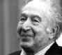Во время своей предвыборной президентской кампании Маккейн указывает, что «опасность России» заключается в «русской ностальгии по империи». При этом главную угрозу для Запада он видит вот в чем: «Очевидно, что целью России является восстановление старой Российской империи. Не Советского Союза, а Российской империи». (Бен Смит «Долгая война Маккейна против России», Politico 12.08.08).
Но дело в том, что господин Маккейн и многие политики-русофобы на Западе не знают или не хотят знать, что восстанавливать Российскую империю не требуется, потому что она существует и не переставала существовать по всем канонам международного и российского права.
Прежде всего, отметим, что закон о престолонаследии в Российской империи не предусматривал отречения царя от престола. Поэтому акт отречения нельзя признать легитимным. Кроме того, он был составлен под давлением и вследствие лжи, обмана и предательства, то есть мошенничества. Это подтверждается историческими документами и свидетельскими показаниями очевидцев и участников этих событий. Государь сам пишет об «измене, трусости и обмане».
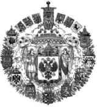В соответствии с действующим законодательством Российской Федерации договор (сделка) признается недействительным в случаях:
– если он подписан вследствие обмана, под нажимом, с целью, заведомо противной основам правопорядка или нравственности;
– если другая сторона знала или заведомо должна была знать о его незаконности;
– если он совершен под влиянием обмана, насилия, угрозы, злонамеренного соглашения представителя одной стороны с другой стороной или стечения тяжелых обстоятельств, на крайне невыгодных для себя условиях, чем другая сторона воспользовалась.
То есть акт отречения противоречит не только законам Российской империи, но и современному законодательству Российской Федерации, и его, таким образом, нельзя признать легитимным. Следовательно, де-юре Российская империя существует. По нормам международного права, она является государством, временно утратившим свою юридическую дееспособность.
| Автор утверждает, что миром правит невидимая Хазария, следовательно её законы действуют сейчас, но к чему тогда призывать в своё оправдание нормы "международного, т.е. хазарского права?" |
Есть еще аргументы. Газета «Русский вестник» опубликовала 06.10.2008 статью «Отречения императора не было». Ее автор Андрей Разумов путем тщательного анализа подписи на Манифесте об отречении убедительно доказывает, что она подделана. На этом основании можно утверждать, что текст Манифеста был подменен и был распространенкак официальный сфальсифицированный документ.
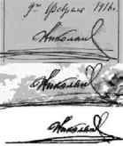В результате Андрей Разумов приходит к следующим выводам.
«1. Текст отречения составил не Государь. Черновик отречения был написан и отправлен во Псков из Ставки 1 марта в виде телеграммы Алексеева, Лукомского и Базили, а затем кем-то доработан до знакомого нам сочетания слов.
2. Текст отречения не был написан Государем от руки. Все известные экземпляры отречения напечатаны на машинке. Об этом говорят Шульгин, Мордвинов и генерал Данилов. Начальник походной канцелярии генерал Нарышкин в «протоколе отречения» пишет более лукаво: Государь приказал «его переписать», что, однако, также свидетельствует, что текст отречения не был записан Государем лично.
3. Три очевидца: Мордвинов, Шульгин и Данилов, прямо указывают, что текст был напечатан на телеграфных бланках, несмотря на то, что военно-походная канцелярия Государя хранила любые бланки, включая, разумеется, бланки Царских Манифестов. При этом Данилов пишет о двух телеграфных бланках, а Шульгин – о трёх.
4. Из текста отречения видно, что составлен он особым образом: по смыслу и количеству строк разделён на три абзаца, или «три четвертушки», описанные Шульгиным. Средняя часть «отречения» по количеству знаков абсолютно совпадает с размером телеграфного бланка. Значит, заговорщики предусматривали вариант подлога: «вброса» или замены средней четвертушки в подписанную Государем телеграмму, с последующей нейтрализацией Государя Николая II.
5. Подписи на хранящихся в ГА РФ отречениях (или отречении?) Государя от Престола, а также их факсимиле в известных нам большевистских изданиях подделаны.
6. Согласно описанию документа отречения Государственным Архивом РФ, заверяющая (контрассигнирующая) надпись Министра Императорского Двора графа Фредерикса на отречении также сделана карандашом, а затем обведена ручкой. Сама оригинальная подпись Фре-дерикса на документе ГА РФ отсутствует».
В итоге выходит: «Самодержец Всероссийский Государь Император Николай II никогда не составлял отречение, не писал его от руки и не подписывал. Документ также не был заверен Фредериксом. Таким образом, Государь не имеет никакого отношения к собственному отречению».
| Автор считает революцию изменой государю, изменой одной личности, как будто она, эта личность и есть народ! |
В своем дневнике Государь оставил следующую запись: «Тошно читать описание в газетах того, что произошло… в Петрограде и Москве! Гораздо хуже и позорнее событий Смутного времени!»
И. Солоневич в своей работе «Великая фальшивка Февраля» писал: «Русская революция не имела никаких оправданий – ни моральных, ни социальных, ни экономических, ни политических… Этой измене и этому предательству нет никакого «оправдания». И даже нет никаких смягчающих вину обстоятельств: предательство в самом обнаженном его виде. Но, говоря о предательстве, мы обязаны знать, кто, как и зачем занимался этой профессией, начиная от казни Царевича Алексея Петровича и кончая Февралем. Если мы не будем знать, нас предадут еще и еще, и еще…».
Дальше беззаконие продолжается. Исполком Петросовета сразу же 3 марта 1917 года постановил арестовать династию Романовых и предложил Временному правительству произвести арест.
Постановления об аресте не имели законного основания, поскольку им не предшествовало никакого расследования. Правительство создает особую комиссию с целью изучения материалов для предания суду Николая II и его супруги по обвинению в государственной измене. Комиссия, несмотря на все ее старания найти подтверждающие измену документы, ничего не смогла добыть.
После ареста Царя начинается разбазаривание имперских земель и заключение незаконной властью незаконного и позорного Брестского мира.
По Брестскому договору от России было отторгнуто 780 тысяч кв. км. территории с населением 56 млн. (около 1/3 всего населения бывшей Российской империи); на этой территории находилась треть железнодорожной сети страны, производилось 73% железа и добывалось 89% каменного угля (Чубарьян А. Брестский мир. М., 1964, с. 189-190). Западные границы Российской республики передвинулись в пределы Курской губернии (Пушкарев С.Г. Внешняя политика Ленина 1914-1923 гг. Ленин и Россия.)
| Брестский мир был мерой позорной, но вынужденной, потому что Россия уже не могла воевать. Почему-то автор не приводит данных о потерях России в Первой Мировой Войне и упадке её экономики, голоде в стране. |
Отношение самого Государя и Государыни к немцам хорошо известны. « бы никогда не поверил, – говорил Николай II после подписания немцами Брестского мира, – что император Вильгельм и германское правительство могут унизиться до того, чтобы пожать руку этих негодяев, которые предали свою страну».
Когда же Государю стало известно о шагах, предпринимаемых немцами для спасения Царской Семьи, он воскликнул: «Если это не предпринято для того, чтобы меня дискредитировать, то это оскорбление для меня», а Александра Федоровна добавила: «Я предпочитаю умереть в России, нежели быть спасенной немцами». (Владимир Лавров, заместитель директора Института российской истории РАН. Со святыми упокой… «Огонек», 2008, № 28).
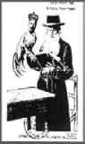 Царь и его семья были невиновны. Их казнили не по юридическим основаниям, а по причинам иного характера. Еще раз подчеркну, что убийство Царя имело для хазар из колена Данова особый сакральный смысл.
Они еще до революции печатали новогодние открытки, на которых раввин держит для ритуального убийства жертвенного петуха с головой Государя Николая II, с подписью: «Это мое жертвоприношение».
За три дня до убийства в Ипатьевском доме для царской семьи совершалось богослужение. Вдруг священник, не желая того сам, запел молитву «Со святыми упокой…». Рабы Божии Николай, Александра, Алексей, Мария, Ольга, Татьяна, Анастасия опустились на колени и пели погребальную песнь о себе самих.
Патриарху Тихону тогда сказали, что убит только царь, а его супруга и дети эвакуированы в надежное место. Какие бы слова сказал патриарх, зная, что большевики зарезали невинных девушек с последующим раздеванием для труположества и ограблением?… (Лавров В. Со святыми упокой…)
|
Они были расстреляны, а не зарезаны! Бред какой-то! Революции никогда не требовали и не проводили юридических доказательств правомерности своих действий, потому что они отреклись от старого, от старых законов, но ещё не сформулировали новые. |
Кучка извергов и преступников, хазар из колена Данова путем лжи и интриг заставила заблудших подданных предать Царя и покинуть Империю. И невидимая Хазария, как в давние времена, пленила наш народ и угнала его в рабство, методически осуществляя его геноцид.
Наша государственность была уничтожена ими путем страшных преступлений и беззакония. И, учитывая это, восстановление нашим народом Империи будет с нашей стороны актом легитимизации – восстановления законности, правопорядка и справедливости.
Но тоска по Империи, так же, как тоска по Истине, жила в сердце народа, и он подспудно, вытесняя хазар из руководства страной, создал советскую империю, которая, будучи сильной физически и политически, была крайне уязвима духовно и без опоры на веру пала под очередным натиском хазар. Главное отличие православной Российской империи от советской империи заключается в том, что первая была естественной богодухновенной, нерукотворной, а вторая была искусственной, безбожной и рукотворной. Это был своего рода фантастически универсальный робот, заряженный мощной программой, но как только противник получил к ней доступ, захватил пульт управления через кучку изменников и предателей, он превратил этого робота в груду металла.
Империя же не была уничтожена, ибо держалась и до сих пор держится Богом. Тварь не может уничтожить то, что сберегается Творцом.
Кстати, роспуск СССР также был нелегитимным, так как в 1991 году народы Советского Союза на референдуме высказались за сохранение союзного государства. Но СССР без духовного фундамента оказался «домом, построенным на песке».
Игнатий Калинникович Волегов, который был офицером Белой армии и оставался верным клятве «За веру, Царя и Отечество», участник Великого Сибирского (Ледяного) похода, многое осмыслив в эмиграции, на склоне жизни в шестидесятых годах написал «Воспоминания о Ледяном походе».
В этих своих воспоминаниях он очень точно отметил: «Может быть, прав был оренбургский казак, говоря, что за грехи Господь наказал Россию. Ведь мудрость простого народа близка к истине. Эти простые казаки говорили в отношении грехов, содеянных русским народом перед Богом. Значит, их научили познавать Божественную силу Церкви Христовой, в которой содержится весь смысл жизни народной. Она есть сдерживающее начало от дурных и вредных наклонностей, она есть моральный закон, и отделить Ее от государства нельзя! Отделение Ее от государства может нарушить у людей моральное сознание и привести к уродливым формам, что и получилось у нас на родине» (25 апреля 1965 г. Джилонг, Австралия).
В Евангелии от Матфея рассказывается о двух строителях – разумном и безрассудном. Первый построил дом на камне, второй – на песке. Иисус Христос сказал: “Итак, всякого, кто слушает слова Мои сии и исполняет их, уподоблю мужу благоразумному, который построил дом свой на камне; и пошел дождь, и разлились реки, и подули ветры, и устремились на дом тот, и он не упал, потому что основан был на камне. А всякий, кто слушает сии слова Мои и не исполняет их, уподобится человеку безрассудному, который построил дом свой на песке; и пошел дождь, и разлились реки, и подули ветры, и налегли на дом тот; и он упал, и было падение его великое” (Мф. 7, 24-27).
СССР был домом, построенным на песке атеистической идеологии, и потому его удалось развалить окончательно, тотально, и восстановлению он не подлежит. «И было падение его великое».
Российская священная империя, по своей сути, изначально – дом, построенный на камне православной веры, и потому она уцелела. По закону она осталась государством, пусть временно утратившим свою юридическую дееспособность.
И.А. Ильин в 30-е г г. прошлого века так начинал свой проект российского Основного закона, «в порядке Божьего изволения, возникшее Божиим промыслом в веках ведомое, Российское государство утверждается…» и т.д. (И.А. Ильин. Собр. соч. Т. 7. С. 510).
Нельзя упразднить, уничтожить государство, «возникшее Божиим промыслом», то есть имеющее божественную природу.
Уйдя от веры, отвергнув ее, народ Империи ушел из этого государства, покинул его, оставив его пустым. Хазары сделали все, чтобы заставить народ забыть о нем и о своем предназначении, о том таланте государственничества, который дал нам Господь, ожидая, что мы «пустим его в оборот».
В нашей Православной империи верующий народ всегда нес ответственность за имперскую государственность перед Богом. Этот крест государственности очень тяжел. Он требует самоотвержения и подвига служения. «Тогда Иисус сказал ученикам Своим: если кто хочет идти за Мною, отвергнись себя, и возьми крест свой, и следуй за Мною» (Мф. 16, 24).
Путь отвержения себя и путь следования Христу – путь многотрудный, но и самый прекрасный, потому что только он дает истинную полноту счастья в сопричастности Христу и надежду на спасение.
Когда наш народ сошел с пути несения креста российской имперской государственности, он попал в рабство Хазарии и стал ее добычей. Вместе с утратой Империи, он потерял политическую, экономическую, но, главное, духовную защиту, которую она обеспечивала.
Архимандрит Константин (Зайцев) писал о том времени: «История самоупразднилась. То был бунт против Истории».
«Можно находить темные стороны Исторической России во все времена, в частности, в последние времена. Но одно можно с уверенностью сказать: пусть процесс обездушения был в ходу, но пока стояла Россия Императорская, она не только не принуждала ко лжи, а служила Правде, преемственно являя собою всю ту же высоким духом просветленную Историческую Россию. Олицетворением ее явился в ослепительной духовной красоте, наш Последний Царь».
Сейчас перед нами как никогда остро стоит этот выбор – вернуться в имперскую священную государственность или идти на заклание к хазарам. Времени на раздумья осталось очень немного…
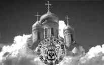Эта прикровенная сакральная Империя, покинутое нашим народом государство, Третий Рим, Новый Иерусалим стоит и ждет возвращения своих подданных, точнее верноподданных.
Вот мы робко заглядываем в нее. В ней нет жителей, в ней нет правителей. Пока, в отсутствие царя земного, ее хранит Царь Небесный: Скипетр и Держава – в руках Его Пречистой Матери Пресвятой Богородицы. Империя эта держится и хранится верою и молитвами наших предков, отдавших свои жизни имперскому служению, сложивших головы на полях сражений за Веру, Царя и Отечество. Наша бывшая и будущая священная Империя стоит и ждет в ярком блеске величия и сиянии славы их подвигов и побед в битве за государственность, в битве против Глобального каганата.
Вот мы идем по ее территории, нет, не идем, летим над ней. Ибо просторы ее необъятны. Там нет искусственных границ, нарезанных впоследствии хазарскими расчленителями. Ведь Империя строилась на основе дружбы и мира русского народа с народами иноплеменными.
«От Омска, Петропавловска и Челябинска на юг – киргизы, калмыки. От Иркутска тоже на юг – буряты, монголы. Со всеми этими народами наш русский мужичок и казак жили в дружбе, взаимоотношения их зиждились на полном доверии. Вследствие свойственной доброты русского человека происходило сращивание всех народностей в одну общую семью, и эта семья составляла Российскую Империю».
Интересны отношения с татарами. В течение почти 300 лет наш народ был под монголо-татарским игом, но несмотря на все набеги и войны сохранил с ними добрые отношения и не мстил за прошлое. И, что примечательно, сначала Православие существовало в рамках исламского государства, а затем, когда Россия стала великой, Ислам стал мирно существовать в рамках Православной империи. Эти две религии сосуществовали друг с другом и стали главными историческими субъектами строительства исторической имперской государственности.
Хазары же после своего поражения не переставали против нее бороться. Они вступили на разрушительный путь ненависти, мести, реванша и войн на тотальное уничтожение. Хазары одержимы местью не только в отношении Православия, но и Ислама.
Вспомним, что именно представители этих двух религий, объединившись, подняли в свое время восстание против правителей Хазарии, принявших агрессивный иудаизм, который означал отход от ветхозаветной традиции. Это восстание, как уже говорилось ранее, было жесточайшим образом подавлено, утоплено в крови православных и мусульман. Но именно тогда было положено начало историческому союзу этих двух религий в многовековой борьбе против желающей их уничтожить Хазарии.
Доброта же русского человека к татарам никогда не угасала. И. Волегов приводит тому интересные доказательства: «Например, в Уфимской губернии татары пользовались большими земельными наделами. Эту землю они сами не обрабатывали, а сдавали в аренду нашим русским мужичкам. Наши русские обрабатывали эту землю и даже жили на ней, а когда приезжал хозяин этой земли татарин к нашему русскому мужичку получить аренду, он этого татарина сажал за стол, угощал его чаем и называл его князем. Надо сказать, что татары очень любили когда их русские называли князьями, тогда они за аренду не требовали, а только просили “на чай”. “Моя люби чай чарга”. Итак, веками у них сохранялись добрые взаимоотношения, не было между ними никаких ссор и не поднимали между собой исторических вопросов, и так же не существовало национальной ненависти друг к другу».
Прикровенная, оставленная Империя, где живет дух добра, великодушия, прощения и трудолюбия наших предков. Ее поля пусты, на них никто не работает. Они ждут своих хлебопашцев, крестьян-патриотов, понимающих, что кто-то должен работать на земле, чтобы кормить Русь-матушку.
Эта сакральная Империя находится в ожидании своих, ответственных перед Богом и людьми, православных правителей, способных решить один из главных вопросов – аграрный вопрос, загнавший нынешнюю Россию в тупик. Ибо никто не хочет работать на земле.
Будущие имперские правители непременно обратятся к аграрному вопросу, так как это вопрос жизни и смерти народа и государства. Они вспомнят, как неуклонно и последовательно решало его царское правительство, которое, как пишет И. Волегов, «принимало меры и проводило в жизнь переселение народа из бедных районов на хорошие сибирские земли, этим людям отпускало денежные ссуды на развитие сельского хозяйства. Аграрный вопрос был актуален и рассматривался особой государственной комиссией при штате ученых экономистов… Все это проходило планомерно, и путь для улучшения быта и социального положения российского народа находился в рамках закона эволюции.
Царское правительство не занималось демагогией, не кричало с трибуны о выдаче всяких благ, не обещало молочные реки с кисельными берегами, а оно создавало сильную Великую Россию, т. е. такую Россию, в которой бы мог спокойно жить и трудиться каждый человек – и она уже была великой».
Да и цифры говорят сами за себя: «Статистика за 1904 год показывает, что Россия в то время имела: коней – 26 миллионов, рогатого скота – 36 миллионов, овец – 52 миллиона и свиней – 22 миллиона. Накануне же Первой мировой войны в 1913 году, по сведениям министерства сельского хозяйства, живность в России по сравнению с 1904 годом увеличилась почти в два раза.
Хлеб Россия экспортировала в Европу во все государства по их требованию. Много экспортировала мяса, масла скотского, которое специально готовилось в огромном количестве. Жители российских городов не поедали этих продуктов, т. к. их было очень много. Для использования всех продуктов существовали маслодельные артели, которым помогали государственные кредитные кассы. Этот продукт не обесценивался, несмотря на то, что рынка для сбыта в России не было. Сбыт на иностранные рынки не позволял делать быстрых торговых оборотов вследствие скопления крупных партий для отправки за границу, а деньги были нужны крестьянину на жизнь и для развития сельского хозяйства, поэтому кредитные кассы были нужны».
Кстати сказать, на фоне этого изобилия хазарские революционеры, чтобы поднять народ на бунт, прибегли к их излюбленному инструменту – лжи. Они стали распространять откровенную клевету, что, якобы, в России истощились все запасы для снабжения армии, и народ уже накануне голода. И им удалось добиться того, что петроградские рабочие приходили к Думе с плакатами: “Долой войну, дайте народу хлеба!”
Хлеб был в изобилии – в Сибири, на Волге и в губерниях Черноземной полосы было достаточно ссыпных пунктов и элеваторов.
«Перед Первой мировой войной у нас уже не было чеховских мужиков, сидевших в курной избе с лучиной. Также не было помещиков Фамусовых, Чичиковых и Плюшкиных. Крестьянин в деревне освещал свое жилище керосиновой лампой, а в большие праздники или когда много гостей, зажигал лампу “молния”. Уже трудно было найти такой дом, где бы была в доме одна комната. Сохой уже на тощей кобыленке крестьянин не пахал под посев, а запрягал в плуг пару добрых коней или быков».
Волегов вспоминает: «Наша армия в то время была снабжена всем необходимым лучше, чем в первые годы войны. Главное интендантство заверяло, что Россия была в состоянии продолжать войну еще пять лет. Между Россией и Германией получился контраст. В России положение с транспортом и снабжением армии улучшалось с каждым годом войны, а в Германии получилось обратное явление – чем дальше, тем больше ощущались недостатки в продуктах питания. В начале 1917 года там уже был введен рацион для мирного населения. Это являлось главным фактором для Германии как можно скорее кончать войну. Россия в это время была накануне победы и имела все ресурсы, чтобы победить».
| И опять это ложь, потому что лучше всего о состоянии государства говорили сводки с фронтов, неудачи русской армии. |
Казалось бы, я писала о многих достижениях российской священной государственности ранее. Но мысль неуклонно, как будто по чьей-то воле свыше, снова и снова возвращается к тем дням былого Имперского величия, заставляя еще раз написать об этом, привлечь внимание моего дорого читателя к нашей славной истории. Наверное, это нужно и важно для того, чтобы мы, спустя много лет страданий и лишений, пришли не только к пониманию, но и к глубокому убеждению, что лучшей модели государственности для России, чем Православная империя, не существует. Россия может существовать только как Империя. В противном случае она обречена на смерть.
Имперская модель создает колоссальный запас прочности, позволяющий государству не только выживать, но и развиваться, и успешно защищаться в условиях таких жесточайших кризисов, как мировые войны.
Вопрос имперскости – это очень важный вопрос нашей идентичности, являющейся стержнем, главной опорой нашего национального сознания и достоинства. Чтобы их сохранить, наш народ должен помнить, что «они сыны и дочери исторической великой России и могут с гордостью считать себя русскими».
Продолжая свое путешествие в прикровенную Империю, мы мчимся над огромными просторами Сибири, которую в нынешней России оккупанты-хазары превратили, осуществив мечту Троцкого, в «безлюдную пустыню, населенную белыми неграми», преимущественно мигрантами, работающими там по вахтовому методу и не считающими эту землю своей.
Но мы летим над другой Сибирью, имперской, богатой, изобильной, которая помнит то, о чем писал в своих воспоминаниях И. Волегов: «Сибирь – это богатство России. Измерить это богатство в настоящее время не представляется никакой возможности, ибо оно еще лежит не тронуто и не исследовано. Крестьянину Сибири природа предоставила все, от чего он мог обогатиться. Землю, которая давала богатые урожаи, поля для скотоводства, реки для рыболовства и тайгу для охоты – от всего у него был доход.
Бывало, поедешь из города в деревню на летние каникулы с пятью или шестью рублями (зарплата рабочего в 1913 году была 20 золотых рублей в месяц, а народного учителя 25-30 золотых рублей. – Прим. авт.) – за эти деньги получишь хорошенькую чистенькую комнату и будут вас кормить целый месяц, как на убой. Дадут сибирские шаньги, блины или оладьи, штук десять сваренных вкрутую яиц, миску сметаны, топленое масло в глиняной масленке, огромный кувшин молока, ну, а чай непременно – это завтрак. Во время обеда подавали не менее пяти блюд, почти все молочные, а из мясных – один суп из солонины. Свежее было только курица или гусь. Засолов ставили к обеду много: грузди, огурцы, редьку и, как сладкое, после всего подавали свежие ягоды – чернику, землянику или малину с молоком. Ужинали тем, что осталось от обеда, и вечерний чай с брусникой и домашним печеньем».
Сибирь имперская помнит, что была в ней мощная энергия жизни и была она наполнена жителями. «А Забайкальское казачество гордилось тем, что в случае нападения врага на Россию, при объявлении общей мобилизации, они могли выставить 14 полков. Об этом каждый казак знал, и он на это смотрел, как на прямую обязанность сражаться за Веру, Царя и Отечество. Жили забайкальские казаки, как помещики».
И это уклад жизни простого народа… Дух этого уклада тоже хранит брошенная нами Империя. Вот, как о нем написал в своих воспоминаниях А. Вертинский: «Раньше жили не спеша. Выходили замуж, рожали детей в более или менее спокойной обстановке, болели обстоятельно – лёжа в постели по целым месяцам, не спеша выздоравливали и почти ничем, кроме хозяйства не занимались. Без докторов, без нудных анализов, без анкет.
Наша нянька, заболев, на вопрос «Что с тобой?» отвечала всегда одно: «Шось мене у грудях пече». А болезни-то были разные.
Умирали тоже спокойно. Бывало, дед какой-нибудь лет в девяносто пять решал вдруг, что умирает. А и пора уже давно. Дети взрослые, внуки уже большие, пора землю делить, а он живёт. Вот съедутся родственники кто откуда. Стоят. Вздыхают. Ждут. Дед лежит на лавке под образами в чистой рубахе день, два, три… не умирает. Позовут батюшку, причастят его, соборуют… не умирает. На четвёртый день напекут блинов, оладий, холодца наварят, чтобы справлять поминки по нём, горилки привезут два ведра… не умирает. На шестой день воткнут ему в руки страстную свечу. Все уже с ног валятся. Томятся. Не умирает. На седьмой день зажгут свечу. Дед долго и строго смотрит на них, потом, задув свечу, встаёт со смертного одра и говорит: «Ни! Не будет дела!» И идёт на двор колоть дрова».
| Байки рассказывать все были горазды в разные времена. |
В городах вновь открываемой нами сакральной Российской Империи, по которой мы робко путешествуем, пусто, но это пока. Вся ее атмосфера полна ожиданием и трепетом. Она знает, что покинувший ее народ, как блудный сын обязательно вернется, нагулявшись, прокутив все, что имел, все, что она ему оставила в наследство, пройдя через лишения, голод и страдания. Он опять придет к ней с покаянием, прося у нее защиты и помощи. И она его примет и простит. Именно это возвращение народа в Российскую империю через обретение веры, будет символизировать и общенародный акт раскаяния, и готовность идти в бой за Отечество в неизбежной, непрекращающейся борьбе с атакующей Хазарией.
Как замечательно написал Волегов: «Народные вожди и диктаторы приходят и уходят, а народ остается всегда, как остается и имя его родины – Россия. Придет время, когда и это смутное время пройдет, как проходили все другие, и снова народ будет свободен, приняв Божественную силу Церкви Христовой». Это и будет знаменовать наше возвращение в Россию имперскую, в Третий Рим, в Святую Русь.
С твердою верою в милость Божию
и с непоколебимою уверенностью
в конечной победе будем исполнять
наш святой долг защиты Родины до конца
и не посрамим земли Русской.
Государь Николай II
Во время одного из многолюдных банкетов генерал русской армии, герой русско-турецкой войны (1877-1878) Михаил Дмитриевич Скобелев выступил со знаменательной речью: «Опыт последних лет убедил нас, – если русский человек случайно вспомнит, что он, благодаря истории, все-таки принадлежит к народу великому и сильному, если, Боже сохрани, тот же человек случайно вспомнит, что русский народ составляет одну семью с племенем славянским, ныне терзаемым и попираемым, тогда в среде доморощенных и заграничных иноплеменников поднимаются вопли негодования, что этот русский человек находится лишь под влиянием причин ненормальных, под влиянием каких-либо вакханалий… Престранное это дело, и почему нашим обществом овладевает какая-то странная робость, когда мы коснемся вопроса для русского сердца вполне законного, являющегося результатом всей нашей тысячелетней истории… Сердце болезненно щемится. Но великим утешением для нас вера и сила исторического призвания России!»
Краткая историческая справка о Скобелеве повествует о том, что солдаты называли Скобелева «белым генералом» за то, что он выезжал на белом коне, в белом кителе и белой фуражке, представляя отличную цель для противника. Действовал так не из бахвальства, а приучая войска к храбрости… Под его командованием была одержана блестящая победа под Ловчей, осуществлены два штурма Плевны, зимний переход через Балканский хребет, бой под Шейновом и занятие Сан-Стефано под Стамбулом, поставившее победную точку в военных действиях.
Скобелев был блестящий командир и патриот России имперской, остро чувствующий ее вселенское призвание.
Сегодня исторический выбор народа России заключается в том, куда он пойдет, а точнее вернется – либо в Российскую империю, «Русь новую по старому образцу», построенную как «единая Церковь». Либо, отказавшись от своей государственности, вернется в рабство к Хазарии, к архаике негосударственного родоплеменного устройства, обрекая себя и свою веру на полное уничтожение. Первый путь – путь Жизни, второй – путь смерти и исторического предательства памяти предков, веками строивших и защищавших имперскую государственность.
Хазарской империи антихриста может противостоять только Российская Православная империя, носительница духа Христова, который единственно способен победить антихриста. Это признает также и Ислам, который здесь оказывается нашим объективным союзником.
В.H. Лосский в своей работе «По образу и подобию», в главе под названием «Господство и Царство (эсхатологический этюд) пишет, что брань, которую мы должны под началом Христа «вести здесь, на земле, за то Царство, которое не от мира сего, можем мы вести только оружием Христовым, «потому что брань не против крови и плоти, но против духов злобы поднебесных» (Еф. 6, 12)».
Православная империя в союзе с Церковью ведет эту брань, не может ее не вести, ибо Церковь основа ее существования и призвания, определяющая смысл ее политики во всех сферах жизнедеятельности государства и народа. Так что брань, которую ведет Церковь – это и брань Империи. Иного в православной Империи быть не может. И эта брань должна вестись непрерывно.
«Не следует забывать, – пишет Лосский, – что исполнение Божьего господства, которое есть также и достижение полноты святости, осуществляется на различных уровнях и в различных планах, которые мы можем усматривать лишь отчасти. Выполнение нашего высочайшего призвания прежде всего относится к судьбе земного космоса, где люди суть созданные по образу Божию тварные ипостаси этого космоса. В этом плане, который и есть план богословия, Церковь будет вести свою брань до скончания века».
Православная империя, в рамках своих политических, экономических и социальных возможностей и полномочий, оказывает Церкви всяческую поддержку, участвует в этой брани и, таким образом, значительно способствует ее успеху. Православная империя, таким образом, оказывается мощной силой и угрозой Хазарской глобальной империи, которая действует по той же схеме только на основе обратного подобия, опираясь не на Церковь Христа, а на церковь сатаны, и ведет брань в его интересах.
Вот и выходит, что силы пока явно не равные. С одной стороны, Православная Церковь без государственной поддержки ее брани (современное наше государство всячески заигрывает и пытается угодить Западу, поставленному Хазарией под контроль). А, с другой стороны – церковь сатаны, пользующаяся безграничной поддержкой и всем арсеналом Хазарской глобальной империи, ведущей войну против человечества, подчиняющей его злу и готовящей его к принятию антихриста.
Так что выбор очевиден. Он носит одновременно и религиозный и политический характер. Подчеркну, что это выбор между жизнью и смертью. И выбора, как такового, в сущности, нет. Только безумец и самоубийца может выбрать хазарскую тиранию вместо Святой Руси.
И результатом этого выбора должен стать наш возврат в Православную веру и в Православную империю, к ее историческим традициям, и наполнением всех ее уголков и сфер жизнью, началом подвига беззаветного и безкорыстного служения ей.
Это строительство Царства, способного защитить себя и других, и противостояние Хазарии должно стать, как в далекие времена, нашей главной национальной духовной, политической и экономической целью или, как сейчас говорят, национальной идеей.
Как через отход народа от веры Империя пала и лишилась богоугодного руководства, так и через обретение веры народом Империя возродится и обретет так востребованное сейчас патриотическое руководство, способное повести страну по богоугодному пути. Так что вера в деле нашего спасения – это фактор первичный. «По вере вашей да будет вам». Нужно помнить, что времени на раздумья и раскачивание в условиях тотального и пока успешного реванша Хазарии, у нас практически не осталось. В такой момент нельзя проявлять малодушие, сомнение и страх перед противником и грандиозностью наших планов. «Не бойся, малое стадо! ибо Отец ваш благоволил дать вам Царство» (Лк. 12, 32).
Определившись с выбором в сторону имперской государственности, мы должны определиться с нашей дальнейшей стратегией.
На первый взгляд может показаться, что нужно избрать стратегию изоляции и, замкнувшись в себе, заниматься исключительно внутренним устройством. Это минимальная стратегия.
Но есть и максимальная стратегия, которая предполагает выход за территориальные границы и создание зон защиты имперских интересов России и ее союзников в борьбе с новой Хазарией. Хазария наглеет все больше и больше. Пользуясь своей безнаказанностью, она активно наступает, захватывает или ставит под контроль все новые и новые территории, ведет агрессивные войны, окружает нас военными базами, а мы сидим и ждем, пока она на нас нападет. Это не имперское, пораженческое поведение народа, отказавшегося от борьбы, трусливо ждущего оккупанта в надежде на то, что после безропотной капитуляции он помилует свою жертву. Югославия и Ирак показали, что не помилует – уничтожит. Сначала государство, а затем – народ.
| Итак, очередной призыв к войне! |
Империи нужна активная, а не реактивная, наступательная политика, стратегия максимализма, которая в отличие от стратегии минимализма, создает пространство жизни и безопасности. Минимализм – это все равно, что жизнь в узком скафандре. Ты слишком уязвим и зависим, но главное ты – не свободен в своих действиях. В скафандре ты просуществуешь только ограниченное время, потом – ты обречен.
Как создавать эту буферную зону, это пространство для жизни? Так же, как его создавала Российская империя – путем политическим, экономическим или военным. Да, да военным. Мы имеем дело с вооруженным до зубов, рвущимся к реваншу и, планирующим войну против нас, противником. Наши внутренние хазары-демократы обычно впадают в истерику, начинают биться головой об стену и кричать, что у нас нет противников. У них, конечно, нет. Хазария для них родная, а для нас враг, ведущий против нас войну на уничтожение. Поэтому военные меры для империи – это нормально и спасительно.
В.H. Лосский пишет: «Мы получили царское помазание Духа Святого, но мы еще не царствуем со Христом. Как юный Давид, который после помазания его Самуилом должен был до своего воцарения претерпеть ненависть Саула, должны мы противоборствовать полчищам сатаны, лишенного, как Саул, власти, но все еще остающегося „князем мира сего“».
Исторически имперская идея православной государственности – это идея защиты и освобождения народов от владычества Хазарии.
И огромную роль здесь играет русская армия. Генерал П. Н. Врангель, принявший командование Добровольческой армией 22 марта ст. ст. 1920 г., переименовал ее приказом от 28 апреля в Русскую Армию.
Севастополь. Из приказа 3580 от 26 августа 1920 г. Главнокомандующего Русской Армией:
«Величие Российского государства покоилось на могучей армии и флоте. В переживаемое нами лихолетье небольшие числом, но крепкие духом возрождающиеся русская армия и флот грудью своей отстаивают от красного Интернационала последний клочок необъятной когда-то нашей Родины. Верю, что настанет время и русская армия, сильная духом своих офицеров и солдат, возрастая как снежный ком, покатится по родной земле, освобождая ее от извергов, не знающих Бога и Отечества.
Будущая Россия будет создана армией и флотом, одухотворенными одной мыслью: «Родина – это все». Вдохнуть в армию эту мысль могут прежде всего господа офицеры – душа армии» (Врангель П.Н. Записки: в 2 ч. Ч. 2. М., 1995, с. 224).
Известный русский военачальник, тоже знаменитый «Белый генерал» Сергей Леонидович Марков написал работу «Памяти М.Д. Скобелева».
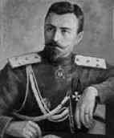4 мая 1917 года Марков напишет: «Легко быть смелым и честным, помни, что смерть лучше позорного существования в оплеванной, униженной России». Обратимся к его небольшой, но емкой по содержанию книге о Скобелеве, где приведено такое высказывание Михаила Дмитриевича: «Всякая нация имеет право и обязанность расширять свою территорию до естественных границ. Мы, славяне, например, должны взять Босфор и Дарданеллы, иначе мы потеряем всякое «историческое значение». Если нам не удастся наложить руку на эти проливы, то мы задохнемся, как бы обширна ни была наша земля. Пора покончить с сантиментальными заявлениями, и видеть пред собою только наши интересы. Наполеон их хорошо понял, когда в Эрфурте и Тильзите предлагал Александру I сообща переделать карту Европы. Он предлагал нам Турцию, Молдавию, Валахию, но только под тем условием, чтобы мы ему предоставили разделаться по-своему с немцами и англичанами. Мы не сумели его понять. Другими словами, он предлагал нам истребить самых злейших врагов наших и вдобавок осыпать нас разными благодеяниями, чтобы отблагодарить нас за позволение».
История России – это история войн, потому что Россия никогда не переставала быть мишенью Хазарии, которая сама или через поставленные под ее контроль правительства, стремилась уничтожить нашу страну и народ.
Колено Даново и руководимая им Хазария не знало и не знает «пути мира». Как написал святой апостол Павел: «Гортань их – открытый гроб; языком своим обманывают; яд аспидов на губах их. Уста их полны злословия и горечи. Ноги их быстры на пролитие крови; разрушение и пагуба на путях их; они не знают пути мира» (Рим. 3, 13-17).
Война главный и единственный непрерывно используемый инструмент Дана – «аспида» в отношении к России.
Поэтому исторически перед Российской империей не стоял выбор воевать или не воевать, а как, пойдя на меньшие жертвы, избежать жертв колоссальных. Это навязанный нам Хазарией выбор, выбор очень жесткий и драматичный – между малой кровью в наступлении и победе и кровью большой в отступлении и поражении. Третьего не дано. Именно в этом смысл высказывания Скобелева.
С окончанием войны в числе русских войск, оставленных для оккупации Болгарии, был и 4-й армейский корпус, которым командовал Скобелев.
Население Болгарии боготворило Скобелева, а он, верный своей натуре, работал над созданием здесь когорты людей, способных отстоять свою независимость и разделаться с турками без помощи русских войск. «Если нужно отдайте жен, детей, имение, но берегите ваши ружья», – вот завет, оставленный Скобелевым братушкам.
У таких, как Скобелев нам нужно учиться храбрости и силе духа в бою с врагом во имя победы и славы России. Стоит вспомнить слова художника В.В. Верещагина о Михаиле Дмитриевиче: «Кто не был в огне со Скобелевым, тот положительно не может себе понятия составить о его спокойствии и хладнокровии среди пуль и гранат, – хладнокровии тем более замечательном, что, как он сознавался мне, равнодушия к смерти у него не было. Напротив, он всегда, в каждом деле, боялся, что его прихлопнут и, следовательно, ежеминутно ждал смерти. Какова же должна была быть сила воли, какое беспрестанное напряжение нервов, чтобы побороть страх и не выказать его».
Генерал Марков пишет, что Скобелев был тот вождь, который должен был повести русские полки, а с ними и единокровных славян на врага и добиться победы, как бы ни был могущественен этот враг.
Во время отпевания 39-летнего генерала Скобелева преосвященный Амвросий сказал:
«Слезы текут из глаз, тяжело и горько нам, Отечество теряет дорогого сына, а мы – великого современника. Плачь русская крестьянка – он был отцом детям твоим, ополчившимся на врагов Отечества. Плачь русский народ – в нем ты потерял просвещенного заступника за родную землю и выразителя твоей блестящей славы».
Нынешней России как никогда нужен человек, которому, как в свое время Скобелеву, можно было вверить силу народа – армию и ее грядущие успехи.
Империи нужны защитники такого мужества и отваги. Нам нужно знать об этих героях, учиться у них любви к Отечеству и готовности отдать за него свою жизнь. Пока же внутренние хазары, захватившие многие наши СМИ и каналы телевидения, делают все, чтобы народ не знал своих героев – примеров беззаветного служения Родине. Они кормят нас информационными отбросами, унижающими народ, оскорбляющими его достоинство, заставляющими забыть историю и стыдиться ее.
| Правда и ложь, чуть-чуть правды и море лжи. Идите воевать, это хорошо - воевать. |
Даже память народная о таких героях, как Скобелев, воспринимается хазарами как угроза. Они понимают, что «миссия человека, подобного Скобелеву, не прекращается со смертью». Потомство берегло как священную драгоценность, память о нем и в его подвигах черпало новые силы в годину испытаний.
Именно поэтому, чтобы подорвать дух народа через безверие и безпамятство сразу после революции хазары-большевики издали декрет о сносе памятников русским царям и героям.
В пункте четвертом документа говорилось: «Совет Народных Комиссаров выражает желание, чтобы в день 1 мая были уже сняты некоторые наиболее уродливые истуканы и выставлены первые модели новых памятников на суд масс». В число «наиболее уродливых истуканов» первым делом попал именно памятник Михаилу Дмитриевичу Скобелеву.
Скобелевская площадь была переименована в Советскую, а город Скобелев стал Ферганой.
У вас, наверное, может появиться мысль о том, кто оценил этот имперский подвиг Российской империи по защите и освобождению братских народов, кто вспомнил, что именно она помогла им стать государствами. Кто отблагодарил ее за это? И почему в ответ она получила не благодарность, а предательство? Взять хотя бы те же Болгарию и Украину. И потому не стоит ли нам отказаться от этой стратегии максимализма?
В ответ на эти возражения приведу потрясающее по глубине пророческого проникновения и актуальности высказывание Ф. М. Достоевского из его «Дневника писателя»: «Распространяться не буду, но знаю, что нам отнюдь не надо требовать с славян благодарности, к этому нам надо приготовиться вперед. Начнут же они, по освобождении, свою новую жизнь, повторяю, именно с того, что выпросят себе у Европы, у Англии и Германии, например, ручательство и покровительство их свободе, и хоть в концерте европейских держав будет и Россия, но они именно в защиту от России это и сделают. Начнут они непременно с того, что внутри себя, если не прямо вслух, объявят себе и убедят себя в том, что России они не обязаны ни малейшею благодарностью, напротив, что от властолюбия России они едва спаслись при заключении мира вмешательством европейского концерта, а не вмешайся Европа, так Россия, отняв их у турок, проглотила бы их тотчас же, «имея в виду расширение границ и основание великой Всеславянской империи на порабощении славян жадному, хитрому и варварскому великорусскому племени».
Долго, о долго еще они не в состоянии будут признать безкорыстия России и великого, святого, неслыханного в мире поднятия ею знамени величайшей идеи, из тех идей, которыми жив человек и без которых человечество, если эти идеи перестанут жить в нем, – коченеет, калечится и умирает в язвах и в безсилии. Нынешнюю, например, всенародную русскую войну с царем во главе, подъятую против извергов за освобождение несчастных народностей, – эту войну поняли ли наконец славяне теперь, как вы думаете?
Но о теперешнем моменте я говорить не стану, к тому же мы еще нужны славянам, мы их освобождаем, но потом, когда освободим и они кое-как устроятся, – признают они эту войну за великий подвиг, предпринятый для освобождения их, решите-ка это? Да ни за что на свете не признают! Напротив, выставят как политическую, а потом и научную истину, что не будь во все эти сто лет освободительницы-России, так они бы давным-давно сами сумели освободиться от турок, своею доблестью или помощию Европы, которая, опять-таки не будь на свете России, не только бы не имела ничего против их освобождения, но и сама освободила бы их.
Это хитрое учение наверно существует у них уже и теперь, а впоследствии оно неминуемо разовьется у них в научную и политическую аксиому. Мало того, даже о турках станут говорить с большим уважением, чем об России. Может быть, целое столетие, или еще более, они будут беспрерывно трепетать за свою свободу и бояться властолюбия России; они будут заискивать перед европейскими государствами, будут клеветать на Россию, сплетничать на нее и интриговать против нее.
О, я не говорю про отдельные лица: будут такие, которые поймут, что значила, значит и будет значить Россия для них всегда. Они поймут всё величие и всю святость дела России и великой идеи, знамя которой поставит она в человечестве. Но люди эти, особенно вначале, явятся в таком жалком меньшинстве, что будут подвергаться насмешкам, ненависти и даже политическому гонению.
Особенно приятно будет для освобожденных славян высказывать и трубить на весь свет, что они племена образованные, способные к самой высшей европейской культуре, тогда как Россия – страна варварская, мрачный северный колосс, даже не чистой славянской крови, гонитель и ненавистник европейской цивилизации.
У них, конечно, явятся, с самого начала, конституционное управление, парламенты, ответственные министры, ораторы, речи. Их будет это чрезвычайно утешать и восхищать. Они будут в упоении, читая о себе в парижских и в лондонских газетах телеграммы, извещающие весь мир, что после долгой парламентской бури пало наконец министерство в Болгарии и составилось новое из либерального большинства и что какой-нибудь их Иван Чифтлик согласился наконец принять портфель президента совета министров.
России надо серьезно приготовиться к тому, что все эти освобожденные славяне с упоением ринутся в Европу, до потери личности своей заразятся европейскими формами, политическими и социальными, и таким образом должны будут пережить целый и длинный период европеизма прежде, чем постигнуть хоть что-нибудь в своем славянском значении и в своем особом славянском призвании в среде человечества. Между собой эти землицы будут вечно ссориться, вечно друг другу завидовать и друг против друга интриговать.
Разумеется, в минуту какой-нибудь серьезной беды они все непременно обратятся к России за помощью. Как ни будут они ненавистничать, сплетничать и клеветать на нас Европе, заигрывая с нею и уверяя ее в любви, но чувствовать-то они всегда будут инстинктивно (конечно, в минуту беды, а не раньше), что Европа естественный враг их единству, была им и всегда останется, а что если они существуют на свете, то, конечно, потому, что стоит огромный магнит – Россия, которая, неодолимо притягивая их всех к себе, тем сдерживает их целость и единство. Будут даже и такие минуты, когда они будут в состоянии почти уже сознательно согласиться, что не будь России, великого восточного центра и великой влекущей силы, то единство их мигом бы развалилось, рассеялось в клочки и даже так, что самая национальность их исчезла бы в европейском океане, как исчезают несколько отдельных капель воды в море.
России надолго достанется тоска и забота мирить их, вразумлять их и даже, может быть, обнажать за них меч при случае…».
Когда сегодня мы наблюдаем страстное желание таких стран, как Грузия и Украина войти в НАТО, примкнуть к невидимой Хазарии в лице видимого Запада, мы должны осознавать, что в них говорит не стремление к независимости или национальному самоопределению, а глубинное желание найти сильный центр, имперское ядро, к которому можно было бы прислониться. Они привыкли жить в империи и пользоваться ее преимуществами. Когда Хазария, развалив СССР, лишила их этих преимуществ, принудив уйти из империи, они стали искать другую империю, которая также бы о них заботилась. А поскольку, кроме хазарской, никакой имперскости не осталось, они пошли туда, наивно думая, что это будет продолжение прежней хорошей жизни. Но вскоре окажется, что приняли их туда для заклания, то есть с целью уничтожения, прежде всего, как носителей православной веры – главной мишени Хазарии.
Россия не может быть к этому безучастна. Бог дал ей не только дар священной имперской государственности, но и возложил обязанность защиты православной веры и народов – ее носителей, и народов, готовых встать с ней в строй в борьбе против Хазарии. Чтобы создать мощный противовес Хазарии и выполнить эту свою обязанность, Россия должна опять стать Империей, сосредоточить в себе позитивное имперское ядро. Иного выхода у России и нашего народа нет. Ведь, если ты не сопротивляешься злу, значит, ты ему потворствуешь, помогаешь, тем самым «участвуешь в делах тьмы», творимых Хазарией.
По мысли И. А. Ильина, «несопротивляющийся злу сам разламывает стены своего духовного кремля». И горе тому народу, который «утратит волю и способность к этой борьбе (со злом): он или возродит в себе эту волю, или погибнет, ибо злодеи истребляют его лучших сынов, а оставшихся превратят в своих покорных рабов…».
Если Россия не использует данный ей Богом дар православной имперскости, она уподобится тому самому рабу из евангельской притчи о талантах, который по лености и лукавству зарыл свой талант. Участь его была, как известно, печальна. Этого «негодного „раба приказано было выбросить“ во тьму внешнюю; там будет плач и скрежет зубов» (Мф. 25, 30).
Ведь на Страшном Суде Христос будет судить также и народы. В числе народов, ожидающих ответа в день судный, будет стоять и Русь.
| Коллективная ответственность перед Христом, перед Богом - это что-то новое. Я об этом в Новом Завете не встречал. |
В «Энциклопедическом словаре Брокгауза и Ефрона» читаем: «Таким образом в нашей картине представляются на суде не отдельные личности- грешники: еретики, гонители и т. п…, но выводятся целые народы». То есть будет не только суд над людьми но и суд над народами. И, надо полагать, что от того, как каждый человек служил своему народу, будет зависеть и суд частный.
Святитель Игнатий Брянчанинов в «Аскетических опытах» пишет о Страшном Суде: «Величественно изображено в Евангелии от Матфея второе, славное пришествие Господа, нелицеприятный и страшный суд Его над племенами и народами. Эта необыкновенная картина, представленная с необыкновенной простотой и ясностью, невольно оживляется перед взорами ума, поражает сердце страхом».
Святой праведный Иоанн Кронштадтский так писал о притче о талантах: «Страх, братия, обнимает душу, когда помыслишь, что между христианами есть множество ленивых рабов, которые живут беспечно, в удовольствиях, и вовсе не помышляют об этой страшной вечной тьме внешней, где их ожидает непрестающий плач и скрежет зубов.
Господи, твори волю Твою с нами! Молимся Тебе, да обратятся все ленивые рабы к Тебе в покаянии и добродетели. Если же нет, то они поистине достойны Твоего грозного, но праведного суда! Кто имеет уши слышать, да слышат. Аминь».
Этому рабу уподобляются не только либералы-западники, с упоением роющие могилу нашей православной имперскости и сдающие российский суверенитет Хазарии. Этому рабу уподобляются также и русские националисты, кричащие «Россия для русских», не позволяющие народу понять, что талант православной имперскости, полученный Россией от Господа, означает не что иное, как ее обязанность служить Богу и ближним, а не отдельной этнической группе, отворачиваясь от других страждущих.
И в этом смысле светский национализм стоит на службе Хазарии и, таким образом, духовно смыкается с западничеством.
Подчеркну, что расстановка сил сейчас такова, что в мире существует только два противостоящих друг другу сакральных центра, два имперских ядра: пока не материализованная прикровенная православная Российская империя – оплот всех устремленных к Богу, и активно материализующаяся глобальная Хазария – оплот антихриста. Божественный порядок и восставший против него новый мировой порядок, то есть тотальная тирания и рабство.
Хазария ведет битву против России на протяжении всей истории своего видимого и невидимого существования. Сейчас эта битва достигла своей кульминации и приобрела решающий характер. Приведение к власти в качестве президента США Обамы – марионетки финансовых кланов, организовавших революцию в России и убивших русского царя, означает дальнейшую радикализацию политики подконтрольного Хазарии Запада.
Террористические акты 11 сентября в США были провокацией, организованной Хазарией в целях получения повода для начала войны по вооруженному установлению своей тирании. Нынешний мировой финансовый кризис – это уже глобальная провокация, направленная на полную смену всей парадигмы развития человечества. Хазарское руководство понимает, что Россия, а точнее Российская священная империя, является главным препятствием на пути достижения этой цели.
Имперская идея имеет духовный, политический и экономический потенциал, задающий смысл всему происходящему, позволяющий все понять и оценить. Но, главное, она создает фундамент для объединения не только всех народов Российской империи в царском духе, но и народов в других странах, слабых порознь, но сильных вместе под покровом имперского щита Святой Руси. Глобальный каганат активно готовится к войне с ней, и сейчас уже очевидно, что вооруженного столкновения нам не избежать.
В идее священной империи заложен высокий смысл симметрии Отечества земного и Отечества небесного. И защита Отечества земного, означает здесь защиту Отечества небесного.
Здесь каждый православный есть воин Христов. Здесь каждый должен осознавать всю полноту и меру своей ответственности перед Отечеством и перед Богом. И начинается эта ответственность с души. Только через это мы сможем возродить великую Россию.
И. Ильин писал: «Скажем прямо и недвусмысленно: поколение безответственных шкурников и безответственных честолюбцев не освободит Россию и не обновит ее; у него нет и не будет тех духовных сил и качеств, которые строили подлинную Россию в прошлом и которые необходимы для ее будущего.
Русский человек, пройдя через все национальные унижения, беды, лишения и страдания, должен найти в себе духовное начало и утвердиться в нем, – постигнуть и принять свое духовное естество и призвание; и только тогда перед ним откроются двери в грядущую Россию». (Иван Ильин. «О чувстве ответственности»).
Особо важное место принадлежит нашему благословенному воинству. При всех испытаниях, выпавших на его долю за последнее время и потерях с ними сопряженных, именно ему предстоит быть главными защитниками Отечества. И в грядущей войне нужно осознать, что главным фактором победы в ней будет не то, чем воевать, и даже не кому воевать, а за что умирать. Ведь, если завтра война, то никто не пойдет умирать за нынешний проворовавшийся олигархат. А вот идея защиты великой Империи и объединенных в ней народов, идея восстановления законной российской государственности задает такой нужный ныне сакральный смысл, дает нам защиту Отечества небесного и небесного воинства. Земное русское воинство становится в его ряды и принимает эстафету от своих предков, победивших Хазарский каганат и мужественно отражавших все попытки реванша невидимой Хазарии.
В феврале 1917 года предательство Российской империи и помазанника Божия началось с измены высшего военного руководства. Сейчас с нашего воинства и через него должен начаться процесс обретения Империи и ее защиты. В этом обретении будет формироваться сильная духом и непобедимая армия Российской империи.
Война в Осетии была преддверием больших сражений будущей войны, развязанной Хазарией против Святой Руси. Наша победа в этой войне стала проявлением возрождающегося имперского духа и имперского сознания, главными носителями которого являются наши воины. Эта победа подтвердила то, что писал А. Деникин о русском воинстве: «Если бы в этот трагический момент нашей истории не нашлось среди русского народа людей, готовых… принести свою кровь и жизнь за разрушаемую родину – это был бы не народ, а навоз для удобрения беспредельных полей старого континента, обреченных на колонизацию от пришельцев с Запада и Востока. К счастью, мы принадлежим к замученному, но великому русскому народу».
И будем верить в наши дальнейшие победы во славу обретенной священной Империи, нашей восстановленной законной государственности, и помнить слова святого князя Александра Невского, сказанные им накануне неравной битвы со шведами: «Братья, нас немного, а враг силен, но не в силе Бог, а в правде. Не побоимся множества врагов, потому что с нами Бог!»
| Странное дело, вроде бы прямой призыв к войне, но власть не торопится книгу внести в список запрещённых, почему? |
Война в Южной Осетии изменила ситуацию в мире, точнее она предельно обнажила расстановку сил, сделала ее четкой и ясной.
Что стало, наконец, четким и ясным для народа? Россия находится в политической изоляции, потому что практически никто не высказал поддержки ее действий в Осетии, несмотря на очевидность ситуации. Лишний раз подтвердились слова Александра III, что у России есть только два союзника – это ее армия и флот.
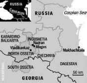Что еще проявилось со всей очевидностью? Запад, контролируемый и управляемый невидимой Хазарией, находится в военной конфронтации с Россией. Поэтому, когда мы говорим общепринятое «Запад», мы должны иметь в виду именно невидимую Хазарию, строящую Глобальный каганат. И это не Холодная война, как все дружно утверждают. Это подготовка к войне горячей, к войне против нашего народа, веры и Отечества. Договор, подписанный после осетинских событий между США и Польшей о размещении объектов ПРО на ее территории, является лишним тому подтверждением.
Западники-атлантисты внутри России уже не смогут так беззастенчиво врать относительно того, что у России нет врагов и что Запад не просто наш друг, товарищ и брат, но и абсолютный авторитет, установкам которого мы должны следовать, предав свои и традиции, и историю.
После событий в Осетии народ сам начал понимать, кто враг, а кто друг, без помощи глашатаев демократии и либерализма, которые по указке Запада обокрали наш народ, разорили и развалили великое государство. Маски сорваны и под овечьей шкурой Запада оказался хищный оскал волка. И какие бы добрые и справедливые дела мы ни совершали, как бы мы потом перед ним ни оправдывались, мы все равно будем не правы, будем оставаться жертвой, мишенью для нападения, потому что «уж виноват ты в том, что хочется мне кушать».
Помните как у Тютчева:
Напрасный труд – нет, их не вразумишь, –
Чем либеральней, тем они пошлее,
Цивилизация для них фетиш,
Но недоступна им ее идея.
Как перед ней ни гнитесь, господа,
Вам не снискать признанья от Европы:
В ее глазах вы будете всегда
Не слуги просвещенья, а холопы.
В наше поистине эпохальное время, когда Запад осуществляет проект нового мирового порядка, предназначением России сейчас, впрочем, как и всегда, является вселенская защита веры Христовой.
Именно по этой причине Запад боролся и будет бороться против России как против единственной преграды на пути установления царства антихриста. Мы не просто другие, мы духовный антипод Запада.
После событий в Осетии «внутренний Запад» в нашей стране, пятая колонна, западники во власти и в СМИ не смогут уже так нагло и открыто врать, что России никто не угрожает. Прозападная пропаганда призвана была деморализовать народ, отвратив его от мысли о том, что история нашей страны – это история войн, которые мы выигрывали, в том числе, и потому, что постоянная память войны служила мобилизующим началом и формировала постоянную готовность к ней, готовность к защите Отечества.
События в Осетии показали, что Россия находится в изоляции военно-стратегической, потому что практически по всему периметру границ она окружена вражескими базами, которые образуют санитарный кордон, созданный США и НАТО.
События в Осетии для всех сделали очевидным тот факт, что идет откровенная масштабная подготовка к войне с Россией, а Грузия и Украина нужны как плацдармы для этих милитаристских приготовлений и размещения там баз НАТО. Плацдармы, кстати, не только военные, но и духовные, поскольку и там, и там сделана ставка на раскол Православия и, что трагичнее всего, на войну православных против православных.
Война в Осетии не оставила также иллюзий относительно того, что Запад будет на стороне справедливости и объявит добро добром, а зло – злом. Все происходит как раз наоборот. И то, что Россию сразу же выставили виноватой, а Грузию правой является ярким тому подтверждением. Запад будет здесь жесток и беспощаден. Ему нужен предлог для войны против нас и именно для его создания служат новые этические стандарты, установленные архитекторами глобального мирового порядка.
Это этика безусловного обвинения России и самооправдания Запада, то есть представления добра злом, а зла добром. Это этика лжи, подмен и извращений, и в ее координатах у нас нет шансов оправдаться и доказать свою правоту ни в одном международном институте, где рулит Запад. Все эти обращения наших руководителей в различные высокие инстанции с тем, чтобы доказать правомочность наших действий и преступность грузинского режима в условиях ставки на аморальность, ничего не дадут. Трибуны этих институтов очень ловко будут использованы для развертывания мощной антироссийской кампании, чтобы сформировать в западном массовом сознании образ врага в лице России, которого нужно как можно скорее атаковать и уничтожить. Это то, что нужно Западу.
Запад, выступая на стороне Грузии, дерзко и вероломно попирает нормы международного права. А они свидетельствуют о справедливости и законности позиции Южной Осетии и Абхазии, с одной стороны, и, с другой стороны, о преступности политики грузинских властей и всех тех, кто их поддерживает и готовит их к очередной войне в регионе.
Обратимся к юридическим основаниям, подтверждающим правомочность требований двух кавказских республик.
Как следует из юридической экспертизы ситуации, этносы, которые оказались после распада СССР в границах Грузии, исторически существовали в виде суверенных государств независимо друг от друга и были объединены только при развале Российской империи в 1918 году.
Грузия добровольно вошла в состав Российской империи 18 января 1801 года. Тогда в ее составе не было ни Абхазии, ни Южной Осетии. Да и быть не могло, потому что Осетия вошла в состав Российской империи раньше, чем Грузия – в 1774 году. Абхазия же с 1864 по 1918 год напрямую управлялась российской администрацией и тоже не была в составе Грузии.
В соответствии с международным правом Грузия могла создать самостоятельное государство только с той территорией, с какой она входила когда-то в царскую Россию.
Российская империя по великой милости своей приняла Грузию в свой состав. Известно, что, когда грузинский царь Александр в 1586 году просил русского царя Федора принять Грузию под российское подданство, то грузин оставалось не более 40 тысяч. Православные храмы и святыни Грузии были разрушены и осквернены, страна была полностью разорена.
После принесения Грузией клятвы на верность Российской империи, Россия взяла на себя обязательство защищать Грузию и сразу же подтвердила это, пригрозив Персии войной.
Кроме того, была оказана еще и помощь в восстановлении грузинских храмов и православных святынь.
То есть, приняв Грузию в свой состав в 1801 г., Россия взяла на себя огромное бремя и дополнительную ответственность. Поэтому русские императоры, включая Павла I, несмотря на многочисленные просьбы и буквально мольбы Грузии, не решались пойти им навстречу. В 1798 году, вступивший на грузинский престол Георгий XII, умолявший Павла I о присоединении Грузии, получил последний отказ. Сын Павла, император Александр I, все же принял положительное решение.
17 ноября 1800 г. – царь Георгий XII обратился к императору России с «прошением на коленях», в котором просил принять свой народ в «вечное подданство».
Вот что пишет о мучительном для России периоде принятия этого решения дореволюционная «Большая российская энциклопедия: «Сознавая всю тяжесть жертв и забот, которую возложило бы на Россию полное присоединение страны, разоренной врагами внешними и раздираемой внутренними смутами, император колебался. Государственному совету при вторичном обсуждении вопроса о присоединении Грузии было объявлено о «крайнем отвращении государя поступить на принятие грузинского царства в подданство России». Но совет остался при прежнем своем мнении».
При этом, как пишут, главной причиной, побудившей русского царя удовлетворить прошение Грузии, были не имперские амбиции, а долг по отношению к православным братьям по вере, оказавшимся на грани полного уничтожения в демографическом, религиозном и политическом отношении.
Принять Грузию под крыло Российской империи означало не только готовность включить ее в состав государства, но и готовность защищать ее. В тех условиях это означало готовность за нее идти на жертвы, то есть проливать кровь. Как сказал генерал М. Скобелев: «Только русские позволяют себе такую роскошь – воевать из чувства сострадания».
Хронологически события разворачивались следующим образом. В 1801 году император Александр I присоединил Восточную Грузию к России. Из Картли и Кахетии образовалась Тифлисская губерния России. К этому времени единая Осетия уже 27 лет была в составе России.
В 1804 году в состав России вошла Имеретия и образовалась маленькая Кутаисская губерния.
В декабре 1811 года русские войска штурмом взяли Ахалкалак.
16 мая 1812 года Россия в войне с Турцией наносит ей очередное поражение, в результате чего подписывается Бухарестский мирный договор. В соответствии с ним, Россия (а не Грузия) получает участок берега Черного моря с г. Сухум и Мегрелию (без г. Пот).
В 1828 году русская (а не грузинская) армия с боями овладела городами Ахалцих, Карс, Анапа, Пот.
2 сентября 1829 года подписывается Адрианопольский мирный договор, согласно которому к России отошла вся полоса от Анапы до Поти, а также Ахалцихская область.
3 марта 1878 года после очередного поражения Турции, в Сан-Стефано подписывается мирный договор, в соответствии с которым, России (а не Грузии) отходят Карс, Ардаган, Баязет, Батум, Гурия.
Итак, вышеназванные земли, которые сейчас занимает Грузия, ей изначально не принадлежали, а были завоеваны русской армией в ходе боев и сражений.
Эти победы были одержаны Россией, а не Грузией, которая была всего лишь маленькой частью огромной защитившей ее империи. Эти земли, политые русской кровью, отошли России на основании международных договоров, и именно она имеет на них законное право.
В наше время так же, как и Крым, эти земли были подарены предателями Отечества таким же предателям, продавшим себя невидимой Хазарии, ставшим ее ничтожными лакеями и под лживым лозунгом этносуверенитета присосавшимся к русским землям.
Грузинский народ и его православные пастыри должны понимать, что своей жизнью и сохранением Православной веры они обязаны России и русскому народу, отдавшему жизни своих лучших сынов за спасение братьев по вере. Это был пример настоящей брани за веру, за спасение своих единоверцев.
Как написал по этому поводу Чавчавадзе: «Успокоилась, давно не видевшая покоя, уставшая от грабежа и разрушений, от бесконечных битв и войн страна… Началась новая эра, эра спокойной и безопасной жизни».
В составе Российской, а затем и советской империи Грузия процветала.
А сейчас… С 1991 года она стала независимой от России, но впала в другую зависимость от злейшего врага православия – Хазарии, стала ее вотчиной, местом шабаша и разгула одержимых ненавистью к России сил. Грузия скатилась к нищете, упадку экономики и культуры. Она превратилась в криминальное образование, во главе которого оказались разорители.
Хазарская оккупация принесла Грузии как раз те самые грабеж и разрушения, бесконечные битвы и войны, от которых спасла ее когда-то Россия.
Осетинская драма показала также, что нынешнее время поляризации и время выбора неотвратимого и безотлагательного, потому что у битвы на Кавказе неизбежно будет продолжение в России. И это продолжение активно раскручивается. В Ингушетии ситуация такова, что можно говорить о начале гражданской войны, в любое время могут «полыхнуть» Дагестан и Кабардино-Балкария, где все сильнее становятся позиции радикальных исламских фундаменталистов, призывающих к борьбе с «неверными». Ситуация в Чечне тоже может «рвануть» в любую минуту. Убийство в центре Москвы Руслана Ямадаева, находившегося в оппозиции к Кадырову, явно направлено на то, чтобы столкнуть влиятельные чеченские тейпы в кровной мести.
Находившийся рядом с Русланом Ямадаевым бывший военный комендант Чечни Сергей Кизюн получил тяжелые ранения. Генерал-полковник Кизюн был связан с Главным разведывательным управлением Генштаба. Вместе с Сулимом Ямадаевым, братом убитого Руслана, Кизюн в свое время создал батальон «Восток», отличившийся в ходе боевых действий на территории Абхазии, которые велись параллельно с боевыми действиями в Осетии.
То, что стреляли в Кизюна, говорит о том, что это покушение можно и нужно рассматривать не только как попытку спровоцировать гражданскую войну в Чечне. Ведь все сразу стали говорить, что это убийство дело рук Кадырова. Но, по сути, это был еще и знак устрашения ГРУ ГШ, попытка, так сказать, сдерживания его действий.
Так что это была тщательно спланированная диверсионная операция с целью дестабилизации обстановки на Кавказе и выведения из строя людей, способных защитить в этом регионе интересы России, организовать и возглавить силы для этой защиты. В этом же контексте можно рассматривать гибель генерала Трошева в таинственной авиакатастрофе.
Попутно отметим, что, по словам очевидцев, преступники, стрелявшие в Ямадаева и Кизюна, скрылись на «Ауди» темного цвета. Свидетели утверждают, что один из стрелявших – человек азиатской внешности. На лице его была марлевая повязка, поэтому были видны только глаза.
Безусловно, это было убийство высокой степени сложности, которое мог совершить только специально обученный этому профессиональный убийца. На таких убийствах специализируются не кустари-одиночки, а тщательно подготовленные киллеры из частных военных компаний (ЧВК) – транснациональных армий-наемников, находящихся под конт ролем Израиля, США и Великобритания, армий все более и более материализующейся Хазарии.
Драматизм сложившейся ситуации обусловливает критический характер выбора, который должна сделать российская власть, все ее составляющие в интересах защиты и обороны России.
Сейчас наша власть сидит на двух стульях. С одной стороны, отдаются совершенно справедливые приказы защитить осетинский народ от геноцида, что соответствует интересам России. С другой стороны, мы допускаем Запад к разрешению этого конфликта, который территориально его никак не касается. А как касается? Военно-стратегически, экономически и политически. Но это уже интересы Запада, которые входят в противоречие с национальными интересами России в этом регионе. То есть Запад здесь противник России, в том числе и военный. А мы допускаем его к вмешательству на Кавказ и сами делаем его стороной разрешения конфликта. Для чего? Для того, чтобы он влез в этот регион и противодействовал России? Но тогда мы защищаем интересы Запада, а не интересы Отечества. Когда шли боевые действия, только ленивый не говорил о том, что все эти цветные революции организованы США, что руководство Грузии получает зарплату из Америки, что Саакашвили не начал бы боевые действия без согласования с Вашингтоном. Известно, кто платит, тот и заказывает музыку. И, зная все это, мы ведем переговоры с Бушем, звоним Райс, на которой пробы негде ставить, и обращаемся к ним, как будто они здесь ни при чем. Короче, «приходи к нам тетя кошка нашу мышку покачать».
Телекомпания CNN привела высказывание одного высокопоставленного чиновника в администрации Джорджа Буша: «Мы не будем иметь дело с русскими так, как раньше, и это последствия того, что они сделали. Москва в гораздо большей степени почувствует гнев западных стран, чем Советский Союз, вторгшийся в 1968 году в Чехословакию».
Сам Буш сказал, что вмешательство России в грузино-югоосетинский конфликт «нанесло значительный ущерб позициям России в мире» и «поставило под угрозу» ее отношения с США и Европой.
Райс заявила, что «международная репутация России и роль, которую она играет в мировом сообществе, поставлены на карту ее агрессивными действиями в отношении Грузии». Вот насчет этих «агрессивных действий» и «международной репутации» так и хочется сказать: ну чья бы корова мычала».
Дальше больше, американский конгресс возложил ответственность за начало войны на Москву. В письменном заявлении спикера палаты представителей Нэнси Пелоси говорится: «Двухпартийное руководство палаты предс тавителей США едино в осуждении недавнего вторжения России в суверенное государство Грузия».
Так, вице-президент США Джозеф Байден, выступая в феврале 2009 года на международной конференции по безопасности в Мюнхене, заявил, что Америка не признает независимости Южной Осетии и Абхазии: «Соединенные Штаты не признают Абхазию и Южную Осетию в качестве независимых государств. Мы не будем признавать сферу влияния. Мы и впредь будем придерживаться мнения, что суверенные государства имеют право принимать свои собственные решения и выбирать себе союзников» (http://www.iht.com/articles/2009/02/07/europe/07munich-424836.php).
Подтекст этого заявления таков, что США намерены поддерживать Грузию и использовать этот спровоцированный конфликт как повод для разжигания войны против России в интересах Хазарии с целью полного уничтожения нашей государственности. А насчет «суверенных государств» и «собственных решений» и, тем более, «выбора союзников» – это кто у нас суверенный? Грузия под контролем Израиля и США? Кто у нас выбирает себе союзников и принимает собственные решения? Миша Саакашвили или его окружение? Логика здесь одна: «это правильно, потому что я это сказал, и я так хочу».
А насчет того, что они «не будут признавать сферу влияния», – тогда нам тоже не нужно признавать их сферы влияния, включая Кавказ, Среднюю Азию, Украину и все постсоветское пространство, где они развернули свою бурную антироссийскую деятельность. Альтернатива здесь одна: если там не будем мы – там будут они и угроза войны. Если они себя ведут дерзко и безцеремонно, мы в ответ должны активно противодействовать этой дерзости и безцеремонности. Наглость и агрессивность нужно пресекать, так как они имеют тенденцию к постоянному усугублению.
Чтобы об них не запачкаться, нужно от них дистанцироваться.
На мюнхенской конференции Ангела Меркель заявила: «В наших интересах включить Россию в новую архитектуру безопасности (читай войны)». То, что это в ваших интересах, мы не сомневаемся, но, к несчастью, наши интересы, как показывает история, прямо противоположны. Поэтому вы, как вольные каменщики, стройте свою новую архитектуру своего нового мирового порядка сами. Нас в этот процесс не втягивайте, чтобы потом не расстраиваться от того, что не получилось по-вашему, по-хазарски.
А то вот французский президент Саркози в Мюнхене в расстроенных чувствах сказал: «Давайте будем честными в этом вопросе, между Европейским союзом и Россией возникает все больше и больше недоверия». Но так, если вы поставляете оружие Грузии и готовите ее к войне с Россией, о каком доверии может идти речь. В существующей ситуации недоверие России Западу (читай Хазарии) – есть недоверие вероломному противнику, жестокому агрессору. Такое недоверие – это, пусть слабая, но мера самозащиты.
У американской администрации произошел общий обморок по поводу того, что в феврале 2009 года Киргизстан объявил о том, что закрывает американскую военную базу в Манасе, которую, помимо всего, США используют как главный перевалочный пункт для переброски наркотиков из Афганистана. Администрация Обамы объявила, что решение о закрытии базы Киргизстан принял под нажимом Москвы. Ну почему такие обороты – «под нажимом»? Вы что, по себе судите? Что – эта база там оказалась, потому что Киргизстан вам ее навязал, и вам неудобно было отказать? Ведь она оказалась там под вашим жестким давлением.
Что же касается решения Киргизстана отказать вам в вашей базе, служащей плацдармом подготовки к войне с Россией и частью сети наркотрафика, то мы здесь процитируем вас, а точнее Джо Байдена: «Мы и впредь будем придерживаться мнения, что суверенные государства имеют право принимать свои собственные решения и выбирать себе союзников». Киргизстан не желает участвовать в ваших мерзких преступлениях. А нынешний колониальный режим Грузии жаждет этого. Грузия не только не является суверенным государством, но она еще оккупировала территории суверенных государств, которые исторически никогда в ее состав не входили, и занимает земли, исторически принадлежащие России. Будьте суверенными, только без всех этих оккупированных вами, вопреки международному праву, территорий.
В резолюции 49-й сессии Комитета ООН по уничтожению расовой дискриминации от 8 марта 1996 г. в п. 7 ч. «В» говорится: «…право народов на самоопределение является одним из основных принципов международного права». И далее: «…в случае самоопределения народа и выхода его из состава государства, принять все меры для осуществления мирного, ненасильственного изменения государственности».
То есть, с учетом этих обстоятельств, в отношении Южной Осетии и Абхазии со стороны Грузии имела место интервенция и оккупация.
Оккупация в международном плане определяется как «…насильственное вмешательство одного государства во внутренние дела другого государства, направленное против его территориальной целостности, политической независимости или иного».
Но была еще и агрессия. В документе, принятом 14 декабря 1974 г. Генеральной ассамблеей ООН, «Определение агрессии» (ст. 1) говорится: «Агрессией является применение вооруженной силы государством против суверенитета, территориальной неприкосновенности или независимости другого государства или каким-либо другим образом, несовместимым с Уставом ООН».
Кроме того, еще до войны Грузия отказалась выполнить рекомендации СБ ООН и ОБСЕ о подписании соглашения о «неприменении силы» с Абхазией и Южной Осетией. Это означает, что она встала на путь насильственного присоединения и подчинения Абхазии и Южной Осетии, попытка чего и произошла в августе 2008 года. Интенсивные военные приготовления к новой войне начались практически сразу же после прекращения боевых действий на территории Абхазии и Южной Осетии и продолжаются до сих пор.
При этом стратегическая цель Тбилиси состояла в том, чтобы интернационализировать этот конфликт, то есть трансформировать грузино-абхазский и грузино-осетинский конфликты в грузино-российский конфликт. А затем привлечь к «урегулированию» конфликта Запад, создав повод в глазах мирового общественного мнения для войны Запада (читай Хазарии) с Россией.
В отношении России раскручивается тот же сценарий, который был применен в Югославии и в Ираке. Не зря Буш назвал Югославию моделью.
И после этого мы к ним обращаемся, отчитываемся перед ними. Мы что хотим, чтобы они вместе с нами защищали наши интересы? Но у них есть свои, прямо противоположные нашим. И они их жестко, нагло и цинично реализуют, без всякого согласования с нами, опосредованно, с помощью Саакашвили, ведя против нас войну. Причем, без всяких сантиментов, на которые мы до недавнего времени были горазды.
Мне могут возразить, что нужна дипломатия. Может быть, но не с ними. Эти ребята понимают и используют только силу, причем военную. Вот и вся дипломатия. В стратегии национальной безопасности США говорится, что главным инструментом обеспечения национальной безопасности являются вооруженные силы, на втором месте разведка, и только на третьем дипломатия. Вот, когда они с помощью вооруженных сил уничтожили Югославию, убили 1,5 миллиона мирных жителей в Ираке, с помощью разведки организовали антироссийские революции в Грузии и на Украине, тогда они включают дипломатию и ставят все под свой не только военный, но и политический контроль. Их дипломатия – это дипломатия взведенного курка. И потому она так успешна. Война в Осетии – это война США, война Запада в целом, война невидимой Хазарии против России. И потому у России не было другого выхода, как вести себя по законам войны. Ответить на насилие насилием, чтобы предотвратить намного более масштабное насилие и жертвы уже на территории России.
Что бы сделали США, будь они на месте России и будь у них в руках ее победа? Угадать можно с одного раза. Они бы довели дело до конца. Они никогда не допустили бы существования режима, который, войдя во враждебный военный блок, угрожал бы безопасности страны, то есть они сразу ликвидировали бы режим, чтобы не пустить туда силы коалиции противника. Существование этого режима и размещение там военных баз означает, что их кольцо по периметру границ замкнется, страна будет окружена, что позволит агрессору начать глобальную войну. То есть смещение режима позволило бы ликвидировать опасный плацдарм этой войны и военную угрозу не только России, но и региону, и миру в целом.
Кроме того, будь США на месте России, они бы при полной поддержке населения способствовали освобождению народов Аджарии и армянской Джавахетии, что обеспечило бы выход к границе с Арменией.
Таким образом, был бы установлен контроль над нефтепроводом и обеспечена поддержка стратегически очень важной Армении. Это позволило бы влиять на Азербайджан и установить контроль над всем кавказским регионом. Стратегические цели были бы достигнуты, стратегическая инициатива перехвачена, и эскалация войны предотвращена. Войска коалиции противника были бы блокированы, их планы по захвату Кавказа и превращению его в плацдарм для войны против Ирана и России были бы сорваны.
В противном случае, возможная агрессия Запада в отношении ненавистного Израилю Ирана, исторического врага Хазарии, замкнет кольцо блокады вокруг Армении, и мы неизбежно потеряем ее, а вместе с ней и весь наш Северный Кавказ.
Конечно, если бы мы действовали бы решительно, то есть одержали бы решительную победу над наглым международным противником, на Западе поднялся бы международный шум. Но он и так поднялся, причем еще больший. Противник получил передышку, перегруппировал и стянул силы, и начал крупномасштабную информационную операцию в лучших традициях черной пропаганды, нагло обвинив Россию в преступлениях, которые совершил он сам. Цель – убедить мировое сообщество в том, что туда нужно ввести свои, то есть международные, войска и заставить нас вывести наш флот из Украины. Эта цель, ради которой и организована Западом провокация в Осетии, успешно достигнута и достигается. Враг принудил нас играть по своим правилам (в противном случае мы бы заставили его играть по своим, и он бы никуда не делся). Стратегическая инициатива была сдана. Будем надеяться, что временно. Нужно приложить все усилия, чтобы выйти из этой игры, куда мы оказались втянуты, и начать свою масштабную игру, неуклонно заставляя противника принимать наши правила.
На Кавказе Россия встала перед выбором между жизнью и смертью нашего государства и народа. Потому что, если на этой территории не будем мы, там будет наш противник, который начнет против нас беспрецедентную по своей жестокости и жертвам войну.
Здесь тот случай, когда у России нет выбора. Она оказалась в ситуации откровенной подготовки войны против нее. Она должна себя защитить и делать это надо решительно и быстро. Относительно шума и крика со стороны Запада, нужно отметить, что его реакция на события в Осетии показала, – все, что бы мы ни сделали, как бы мы ни были правы, нас все равно объявят не только виноватыми, но и преступниками. У нас нет и никогда не будет шанса оправдаться. Так же, как в свое время не смогли оправдаться Югославия и Ирак.
На Востоке говорят: если ты на своем пути будешь бросать камнем в каждую лающую на тебя собаку, ты никогда не дойдешь до своей цели. Так что пусть уж собака лает, а караван идет. Они же у нас не спрашивают разрешения, когда реализуют свои агрессивные планы, направленные против России: размещают свои базы, организуют цветные революции, диверсии, теракты, занимаются подрывной деятельностью. При этом, заметим, мы им ничем не угрожаем. Поэтому вполне логично с нашей стороны в ответ на их стратегию агрессии продумать и осуществить нашу стратегию защиты. Подчеркну, что речь здесь идет о предотвращении чудовищной по своим последствиям войны Запада против России. Политическая власть в России должна сделать выбор: хочет ли она ее предотвратить или мы будем продолжать оправдываться перед агрессором в условиях войны. А она грядет. Почему мы все время заискивающе заглядывали в глаза Западу и при этом упорно не хотели посмотреть в глаза правде. И главное, что эту правду скрывали, да и продолжаем скрывать от народа, который является главной потенциальной жертвой будущей агрессии.
Что же касается международного права, то все делается в соответствии с ним, родным. В нем существует такое понятие, как «непосредственная угроза». Эта когда агрессор проводит видимые, очевидные для всех, приготовления к войне. Так вот в этом случае международное право позволяет стране – потенциальной жертве агрессии, начать первой войну против агрессора. А что все эти базы по периметру границ России, все эти объекты американской ПРО, все эти цветные революции, организованные США в целях создания плацдармов для войны против России, не есть ли это очевидные приготовления к войне против России? Так что все могло бы быть в соответствии с нормами международного права.
Кстати война в Осетии велась против граждан России, а значит, и против нашей страны. И не нужно говорить, что наши решительные действия повлекли бы жертвы. На тот момент никто бы не оказал никакого сопротивления, если бы подключили сюда Православную церковь в Грузии и России. Ведь базы НАТО в Грузии означают, что Грузия идет под власть антихриста. Согласна ли на это Православная церковь в Грузии? Согласны ли ее иерархи нести ответственность за то, что не возвысили свой голос и не обратились к своей пастве с тем, чтобы предупредить ее о том, что грозит ей в случае вступления в НАТО. Нет не в военном, а в духовном отношении. А так грузинские иерархи обратились за защитой к Евросоюзу, который, по сути своей, является специально созданным хазарами оплотом нового мирового порядка и царства антихриста.
Там, где появляются глобализаторы, там, где появляется НАТО, там не только льется кровь, там уничтожается традиционная религия, чтобы потом на этом «чистом поле» насадить религию глобальную. Мы видели это в Югославии, где были уничтожены практически все православные святыни в Косово. Мы видели это и в Ираке, где с самого начала атаки главными объектами ее стали вся инфраструктура культуры, науки и образования. Американские военные целенаправленно уничтожали и организовывали разграбление музеев, где хранились бесценные экспонаты, которые образовывали основу цивилизационной идентичности народа. Одна из сотрудниц Центрального музея в Багдаде тогда сказала: «Они уничтожили нашу цивилизацию». Но то же самое было сделано в Осетии при обстреле Цхинвали.
Сообщения об атаке на Осетию, по сути своей, повторяют стратегию американцев в Ираке. В результате вторжения грузинских войск были полностью разрушены или сильно повреждены православные храмы, многие памятники истории и культуры, в том числе древняя Кавтская церковь Святого Георгия (VII-IX вв.) (разрушена до основания), крепость Сабацминда (XV-XVIII вв.), церковь Хвтисмшобели (XVIII в.), а также ряд соборов и церквей, являющихся памятниками осетинской культуры. Полностью разгромлены здания музеев.
Уничтожены практически все памятники известным деятелям Осетии, а также Монумент Славы, аллея Памяти выдающихся писателей…
В Южной Осетии находились уникальные храмы византийского периода. В результате бомбардировок они, вероятно, будут безвозвратно утрачены.
Агрессор проявил беспрецедентную жестокость. В церкви Пресвятой Богородицы в Цхинвали укрылись дети и женщины. Церковь сожгли вместе с ними.
И при всем этом, мы доверились Западу, зная, что именно он вооружал Саакашвили. По объему помощи, которую оказывают США иностранным странам, Грузия находится на втором месте после Израиля.
Ни для кого не было секретом, что военный бюджет Грузии рос астрономически, что ее вооружал тот же самый Запад. Те же самые США и Израиль не только поставляли оружие, но и проводили военную подготовку грузинской армии. Все эти военные приготовления были для того, чтобы выступить за Россию или против нее? «Против», скажете вы. Так, почему же тогда мы рассматриваем США и Израиль как своих союзников и партнеров? Более того, военные США и Израиля принимали участие в этой войне на стороне Грузии. Они же разрабатывали военную стратегию. Да и само название «Чистое поле», которое было дано Грузией операции в Осетии, явно не грузинского происхождения. Военная операция имела целью с помощью ковровых бомбардировок добиться максимально большего уничтожения мирного населения и изгнания его с территории Осетии, а затем и Абхазии. Здесь видно, чьи уши торчат. Израиль в своей политике в отношении Палестины руководствуется этой же тактикой выжженной земли, которая выражается в известном сионистском девизе – «земля без народа для народа без земли», суть которого и заключается в создании «чистого поля» без палестинцев на палестинской территории.
Как следует из сообщений израильской прессы, Грузия получила 18 малых и 5 больших БПЛА. Эфрайм Инбар, израильский профессор политологии, директор Центра стратегических исследований сказал, что «Грузия действительно приобретала израильские беспилотные летательные аппараты и другие виды вооружений». «Кроме того, израильские специалисты обучали и готовили грузинский спецназ и части сухопутных войск».
Наемники, сотрудники частных военных компаний, базирующихся в Израиле, «отставные генералы и старшие офицеры Армии обороны Израиля (ЦАХАЛ) работали на Кавказе, передавая грузинским военным опыт ведения боев в условиях городов и поселений». Кроме того, израильские специалисты модернизировали самолеты «Су-25», стоявшие на вооружении ВВС Грузии и заключили соглашение о поставках штурмовых винтовок «Тавор» и систем залпового огня.
Сообщается также, что реакцией значительной части израильского общества на бомбардировки Осетии и геноцид ее народа стали демонстрации в «поддержку Грузии» в Тель-Авиве и Иерусалиме.
Грузинский министр по вопросам реинтеграции Темур Якобашвили заявил, что «Израиль должен гордиться отличной подготовкой и тренировкой грузинской армии. Теперь мы должны сражаться против великой России, и я надеюсь на полную помощь Белого Дома, потому что Грузия сама по себе не может выстоять. Важно, чтобы весь мир отчётливо понимал, что то, что происходит в Грузии, окажет огромное влияние на весь мир. Это не чисто грузинские дела – это дело всего мира» (http://www.ynetnews.com/articles/0,7340, L-3580136,00.html).
Эти слова – такое же предательство, как и предательство Иуды Искариота из колена Данова, заложниками и инструментом которого стали Грузия и грузины. Хазария и ее руководители – данитяне, изначально заряжены, запрограммированы на уничтожение всего православного и, прежде всего, православного народа, а точнее, народов. Ведь хазары хотят столкнуть в битве на взаимное уничтожение православные народы – грузин, осетин, великороссов и малороссов.
Хазарское лобби в США и в Израиле всячески разжигает огонь этой братоубийственной войны, вероломно попирая всякую правду, историческую справедливость, международное право и вытекающие из него законные интересы России.
Известно, что с 2000 года Израиль поставил Грузии оружие и обеспечил боевую подготовку ее военных на сотни миллионов долларов. Об этом пишет Ари Егози в статье «Война в Грузии: израильская связь», опубликованной 10 августа 2008 года. Эти поставки были санкционированы Министерством обороны Израиля.
Подготовка также проводилась израильской секретной службой Шин Бет, которая десятилетиями осуществляет незаконные казни и пытки палестинцев на оккупированных Израилем территориях. В подготовку были вовлечены израильская полиция и крупнейшие в стране военные компании, занимающиеся торговлей оружием Elbit и Rafael.
Известно, что Израиль осуществляет незаконные военные акции в отношении других стран, используя частные военные компании, которые связаны с государственными структурами Израиля, реализуют его интересы за границей и действуют только с санкции Министерства обороны Израиля.
Военная ось Тель-Авив – Тбилиси оказывается сцементированной на самых высоких уровнях. Министр обороны Грузии Давид Кезерашвили, который внес большой вклад в это сотрудничество, является гражданином Израиля и бегло говорит на иврите.
Среди других персоналий, вовлеченных в сотрудничество, и в частности, в торговлю оружием, стоит назвать бывшего израильского министра и мэра Тель-Авива Рони Мило, а также несколько высших офицеров израильской армии. Одним из них является бригадный генерал Гал Хирш, который командовал израильскими силами на границе с Ливаном в июле 2006 года во время Второй ливанской войны. Об этом пишет Йоси Мелман в «Haaretz». После войны Хирш ушел в отставку и организовал частную военную компанию Defense Shield, базирующуюся в Израиле и имеющую тесные связи с Министерством обороны и вооруженными силами Израиля.
Накануне войны в Осетии Хирш лично проводил учения грузинских военных, которые предусматривали отработку ведения боев по «очистке» домов в городе.
Кроме этого в подготовке войны в Осетии и в ее ведении принимали участие израильские ЧВК Global CST – владелец генерал Исраэль Зив, и Nirtal – владелец Нир Шаул, тоже бывший военный. Они выполняли контракты, заключенные Министерством обороны и разведывательными службами Израиля.
Эта непосредственная и активная вовлеченность Израиля в конфронтацию с Россией позволяет сделать заключение, что Израиль, как пишут западные эксперты, является «действующим лицом, стороной широкого сценария США по окружению России и сдерживанию ее возрождающейся мощи». И Грузии отведено в этом сценарии важное место. Из уст грузинского руководства даже прозвучало, что «каждая бомба, которая падает на наши головы – это атака на демократию, Европейский Союз и Америку». Ну, судя по этому заявлению, в грузинском руководстве все головы снес кто-то до нас.
Израиль с хазарским руководством во главе вообще боролся против нас по всему миру. Израиль помогал режиму апартеида в Южной Африке бороться против поддерживаемых СССР повстанцев на оккупированных Южной Африкой территориях Анголы и Намибии. Израиль готовил связанные с США эскадроны смерти правого толка, которые боролись с левыми правительствами и движениями в Центральной Америке. После 2001 года Израиль заявил о себе как об эксперте по борьбе с «исламским терроризмом». Его частные военные компании заработали на этой «экспертизе» колоссальные суммы, а израильская разведка Моссад получила доступ к военной информации ряда стран. Так что террористические атаки в США принесли израильским ЧВК огромные дивиденды.
Наверное, с этой целью они их и организовывали. Во всяком случае, причастность Моссада к этой глобальной провокации практически ни у кого не вызывает сомнений, равно как и причастность Пентагона.
Президент Венесуэлы Хуго Чавес недавно, обвиняя Колумбию, которая является одним из крупнейших получателей американской помощи, назвал эту страну «Израилем Латинской Америки». По мнению западных экспертов, Грузию по этой аналогии можно назвать «Израилем Кавказа», обеспечивающим интересы США и Израиля в регионе.
В связи со снесенностью голов в руководстве Грузии, оно не в состоянии понять, что играть с большими державами для маленькой страны очень опасно.
Публицист Лев Гунин в статье «Война Израиля против Грузии и России» (Монреаль, 8 августа 2008 г.) пишет о том, что «главным агрессором на Кавказе» является Израиль. Так у власти в Грузии оказался «ставленник (фактически – наместник) Израиля, человек с еврейской ментальностью, преступник и садист, американский гражданин Михаил Саакашвили. Грузия стала второй Палестиной, где без суда и следствия уничтожаются все противники израильского режима (марионеточного правительства Саакашвили), где ведётся отстрел оппозиционных диктатору лидеров. Оставшаяся трусливая оппозиция – это подставные лица, фактически подотчётные израильскому наместнику».
Политические приёмы и мышление Саакашвили – «калька с израильских».
Лев Гунин обращает внимание на то, что «не случайно начало военных действий Грузии совпало со зверским террористическим актом в Сочи, где от взрыва бомбы на пляже двоих людей буквально разорвало на куски, а десятки получили ранения. По обстоятельствам этого взрыва, доступным в печати, можно сделать вывод, что террористы пришли со стороны моря (грузинский военный катер? израильская подлодка?), и потому виновных никогда не найдут, или обвинят каких-нибудь козлов отпущения. Этим террористическим актом России дали понять, какие средства имеются в распоряжении тех, кто не желает российского вмешательства в грузинско-осетинский конфликт. Идеологически, а также по стилю исполнения взрыв в Сочи – дело рук израильского спецназа и вполне соответствует манере, в которой Израиль расправляется с активистами освободительного движения на оккупированных им территориях».
Публицист, сравнивая действия Грузии в отношении Южной Осетии и действия Израиля в отношении Палестины, отмечает их абсолютную идентичность и один и тот же почерк. Во время боевых действий грузинские танки и бульдозеры утюжили дома осетинских сёл, вместе с находящимися под их обломками людьми точно так, как это делают оккупационные израильские власти на территории, захваченной Израилем Палестины. Грузины обстреливали осетинские больницы, школы, университеты, машины скорой помощи, не позволяя оказывать помощь раненым точно так, как это делают израильтяне на оккупированных ими территориях.
Недавние чудовищные по своей бесчеловечности события в секторе Газа служат полным тому подтверждением.
Гунин приводит следующие факты, свидетельствующие, что не только политические методы и идеология «импортированы» Грузией из Израиля, но еще и много чего материального.
После развала СССР в Грузии открыты сотни представительств Израиля, его организаций, новые синагоги, еврейские клубы и школы. Торговля между Грузией и Израилем заняла центральное место в торговом обороте страны. Израильские фирмы и конторы в Тбилиси на каждом шагу. Грузия выходит чуть ли не на первое место по паломничеству израильских туристов.
Израильские фирмы проникли на внутренний грузинский рынок. Израильские суда или принадлежащие израильским компаниями суда под флагами других стран десятками, если не сотнями, бороздят воды Чёрного моря у берегов Грузии. Армянские и азербайджанские СМИ писали о том, что в Грузии замечены также израильские военные корабли. В Грузии аккредитованы израильские журналисты и военные корреспонденты. И самое страшное: израильский спецназ и разведка принимал и принимает участие в зверских акциях против грузинской оппозиции, в казнях и пытках ее представителей.
Израиль уже давно проводит разведывательные операции не только против Южной Осетии и Абхазии, но также против Северной Осетией и других приграничных районов на территории Российской Федерации. В целях разведки используются израильские беспилотные самолёты, которые совершают полёты не только над Южной Осетией и Абхазией, но и над территорией Российской Федерации.
Израиль сначала отрицал присутствие его беспилотников на Кавказе, а потом признал только сам факт продажи израильских беспилотников Грузии. Но ведь эксплуатируются они не грузинской стороной, а Цахалом – Армией Обороны Израиля. Ведь обработкой поступающей с них информации, занимается израильская сторона, что свидетельствует о ее включенности в боевые действия на Кавказе против России.
Если США мы иногда официально покритиковывали (хотя это одно время запрещалось), то Израиль был вообще предметом вожделенного восторга и трепета. Ему так доверяют, что даже визы отменили. В течение многих лет так хорошо, как к Израилю наше руководство не относилось ни к одной стране.
Гунин подчеркивает, что Израиль не признаёт практически никаких международных договоров, правил и принципов и сам их легко нарушает. «Ни одному договору с Израилем и его союзниками нельзя верить, ни одному слову израильских политиков, никаким их обещаниям или заверениям».
Подтверждением тому служит информация, переданная Интерфаксом, относительно того, что, хотя Израиль в ответ на резко негативную реакцию России и заявил о введении эмбарго на поставки вооружений в Грузию, но, на самом деле, никакого эмбарго не было. По сообщению Интерфакса, «госминистр Грузии по вопросам реинтеграции Темур Якобашвили опроверг сообщения о введенном Израилем против Грузии эмбарго на поставки вооружения… Он сообщил, что МИД Грузии «уже имел контакты со своими (израильскими) коллегами, и разговора о какой-либо блокировке поставок оружия не идет». «Речь идет о классификации по поставкам разных видов вооружения, что предполагает поставки одного вида вооружения быстро, а другого – с выполнением определенных формальностей», – подчеркнул Якобашвили».
Кроме того, имеются сведения о присутствии в Грузии 5 отборных израильских пехотных батальонов, израильского спецназа, а также по меньшей мере трех израильских военных самолётов.
«Всё это, – пишет Гунин, – позволяет квалифицировать ситуацию как израильскую агрессию против Грузии, Южной Осетии, Абхазии и России. А на очереди Карабах, на рубежах которого израильские военные специалисты готовят азербайджанских экстремистов к войне против Армении».
Поддержка Армении особенно сейчас приобретает для России крайне важное стратегическое значение.
Профессор Майкл Чосудовски в своей статье «Война в Ливане и битва за нефть», написанной ещё 26 июля 2006 г. и опубликованной Gglobalresearch 9 августа 2008 года, пишет о том, что газопровод Баку-Тбилиси-Джейхан 13 июля 2006 г. соединил Каспийское море с Восточным Средиземноморьем, что точно совпало с израильскими варварскими бомбардировками Ливана (Michel Chossudovsky «The War on Lebanon and the Battle for Oil» Gglobal-research, August 9, 2008).
На торжественном открытии газопровода доминировали официальные лица Израиля, Британии и США. Нефтепровод намеренно вели в обход территории Российской Федерации, через территории Азербайджана и Грузии.
Если раньше лидерами нефтяного консорциума были британцы и американцы, то к 2007 г. лидером становится Израиль, учитывая его влияние в британских и американских компаниях и контрольный пакет акций в них.
Но самое главное, Чосудовски отмечает, что Грузия и Азербайджан подписали долгосрочной договор по военному сотрудничеству с Израилем. Израиль сделал ставку на азербайджанскую нефть, откуда надеется получать 20 процентов своей нефти и даже продавать её за границу.
Чосудовски видит в очередном нападении Израиля на Ливан в 2006 г. (сегодня это уже война в Южной Осетии) часть тщательно спланированного и глобально скоординированного Израилем в сотрудничестве с США стратегического плана, ориентированного на эскалацию войны.
Официально признается только то, что этот нефтепровод будет доставлять нефть на западные рынки, но ничего не говорится о доставке нефти с Каспия в Израиль. При этом целью Израиля является не только удовлетворение своих потребностей в нефти, но и её продажа на другие рынки.
Есть еще одно подтверждение связи между войной в Южной Осетии и Израилем – это полусекретный полёт Саакашвили в Израиль 5 августа 2008 г., буквально накануне грузинской агрессии. Кроме того, практически в это же время – 1 августа 2008 г. Саакашвили стал хозяином проводившейся в Тбилиси Конференции президентов крупных американских еврейских организаций, лично присутствуя на праздничном ужине. Об этом 2 августа 2008 года написала израильская газета Haaretz.
На встрече Саакашвили сказал: «Мы любим Америку, мы любим Израиль, мы любим войну в Ираке». И еще он заявил собравшимся буквально следующее: «Обидеть Израиль, это значит обидеть Грузию. Единственное место в мире, где я себя чувствую дома – это Израиль».
Л. Гунин сообщает еще об одном событии, происшедшем за три недели до конференции. Грузинский спецназ арестовал иранского гражданина, должностное лицо иранского правительства. Хотя Тбилиси утверждал, что арестовали его на территории Грузии, но, на самом деле, иранский чиновник был похищен грузинским спецназом из Армении. По слухам, эту услугу потребовали от президента Саакашвили главы американских еврейских организаций, в обмен на проведение конференции именно в Тбилиси.
Иран неистовствовал и грозился отомстить. Иранские представители назвали арест своего человека международным разбоем, нарушением международного права и потребовали его немедленного освобождения. Иранский Министр иностранных дел даже прибыл лично в Тбилиси на торжество, связанное со вторым сроком президентства Саакашвили, с целью добиться освобождения иранского гражданина, но Саакашвили был непреклонен. Иран в ответ пригрозил, что две тысячи грузинских солдат, размещённых вдоль ирано-иракской границы, теперь должны опасаться за свою жизнь. Иран порвал дипломатические отношения с Грузией и заявил, что поддержит любую военную операцию России против Грузии в Осетии или Абхазии.
Из книги бежавшего в Канаду высокопоставленного чиновника израильского Моссада Виктора Островского «Дорогой лжи» известно, что израильские палачи тренируют карателей самых кровавых и бесчеловечных режимов на Земле.
Утверждают, что в широкой экономической, политической и военной интервенции Израиля в Грузии принимают активное участие хазарские кланы банкиров и, прежде всего, клан Рокфеллеров.
Информационный центр Тренд, специализирующийся на вопросах безопасности, обороны и разведки, сообщает, что передовые грузинские войска одеты в форму НАТО, носят самые лучшие каски и бронежилеты, и вооружены автоматами М-16 американского производства.
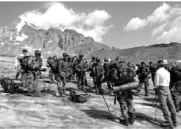Таким образом, война фактически идёт не между Осетией и Грузией, но между Израилем, США и Россией. Причём по всем показателям Израиль играет самую важную роль.
Согласно тому же Тренду, на территории Грузии, помимо израильских боевиков, находились 11 тысяч американских военных советников, специалистов, десантников и разведчиков, которые готовили грузинское вторжение в Южную Осетию.
И все же с Божией помощью мы их победили.
Об участии Израиля в этой войне написала израильская организация Дебка. Эта организация, имеющая своих информаторов в израильском Моссаде и в израильской армии и отражающая взгляды израильских военных и разведчиков, несогласных с курсом теперешнего израильского руководства, сообщала: «В пятницу утром 8 августа грузинские танки и пехота при помощи израильских военных советников захватили столицу отделившейся республики Южной Осетии Цхинвали». Речь шла о прямом израильском командовании этой варварской военной операцией.
Ссылаясь на данные из турецких источников, Л. Гунин пишет, что важную роль в координации подготовки израильско-грузинской военной авантюры в Осетии сыграл посол Израиля в Турции Мордехай Амихай. Он лично инвестировал в грузинской нефтепровод большую сумму денег и надеется, что израильские компании смогут добывать нефть в Турции и газ в Туркменистане, переправляя их по газо- и нефтепроводу через Грузию-Турцию в страны Запада, в качестве альтернативы российской нефти и газу. Точно в стиле Хазарии, которая захватывала силой пути транзита и получала прибыль от переправляемых по ним товаров.
В войне на Кавказе замешаны не только интересы бизнеса, но и стратегические геополитические интересы Израиля, стремящегося взять реванш над Россией за разгром Хазарского каганата и установить свою власть над некогда занимаемой им территорией.
Израиль остервенело добивается отсечения России от дивидендов от продажи нефти и газа, которые так необходимы для экономического, социального и военного возрождения российского государства.
Л. Гунин пишет, что его отчёт, составленный им с помощью его друзей и корреспондентов, не охватил и одной тысячной части израильского участия в агрессии против Осетии и России.
По оценкам израильской газеты Ma’ariv ежегодная помощь Израиля Грузии составляет 300 миллионов долларов.
Известно, что с помощью эксклюзивных межгосударственных связей, хазарских организаций, каждая из которых играет роль пятой колонны в любом государстве, с помощью угроз и посулов, триумвирату Израиль-Британия-США (читай колено Даново) удалось склонить своих союзников к оказанию Грузии невиданной и широчайшей военной помощи. В эту помощь включились Эстония, Латвия и Украина, Германия, Франция, Италия, Румыния, Дания, Нидерланды, Косово, и т.д.
Л. Гунин приводит фотоматериалы и их информационное сопровождение, подтверждающие эти связи.
17 апреля 2008 года делегация Министерства обороны США встретилась с министром обороны Грузии.
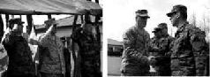А вот фотографии, сделанные 21 марта 2008 года по случаю выпуска грузинских военнослужащих, подготовленных французскими военными инструкторами в соответствии с соглашением между Францией и Грузией, подписанным в 2004 году.
В информационном сообщении говорится, что начальник объединенного штаба грузинских ВС поздравил военных с окончанием курса и сказал: «Этот день является еще одним шагом вперед. Грузинские вооруженные силы имеют теперь инструкторов, подготовленных по стандартам НАТО». Руководитель программы подготовки с французской стороны Лионел Пешера сказал, что он удовлетворен уровнем подготовки грузинских военнослужащих. Целью подготовки было обучение военнослужащих боевым действиям в горной местности.
Итак, выпуск проходил 21 марта 2008 года, а следующий курс занятий, как следует из сообщения, планировалось провести летом этого же года, то есть, надо полагать, накануне войны в Осетии.
Таким образом, Президент Франции Саркози с одной стороны готовит Грузию к войне, а с другой стороны, после начала боевых действий лицемерно разыгрывает роль миротворца.
А вот еще одно свидетельство вовлеченности Франции в подготовку вооруженных сил Грузии.
28 марта 2008 года делегация французских вооруженных сил посетила Министерство обороны Грузии. Визит состоялся в рамках двустороннего сотрудничества в военной сфере между двумя странами, предусматривающего, в том числе консультирование военно-морских сил Грузии по вопросам их реформирования.
По мнению экспертов, в целях получения оснований для прямого военного вмешательства НАТО на Кавказе возможна дальнейшая дестабилизация обстановки в этом регионе путем провоцирования этнических, религиозных и территориальных конфликтов с включением Азербайджана, Грузии, Армении, Северного Кавказа, а также социального взрыва на юге России.
В случае успеха диверсионных действий и обострения ситуации вооруженное вмешательство НАТО на Кавказе планируется провести стремительными темпами, опережающими возможную реакцию России.
В контексте этих приготовлений следует рассматривать и двухдневный саммит глав государств и правительств Евросоюза, завершившийся в Брюсселе 12 декабря 2008 года.
Сообщается, что лидеры стран ЕС одобрили Европейскую стратегию безопасности и политику «Восточного партнерства», участие в которой предложено Армении, Азербайджану, Грузии, Молдове, Украине и Беларуси. Цель новой инициативы Евросоюза – сформировать всеобъемлющий «санитарный кордон» по периметру границы с Россией.
Фактически главным условием «партнерства» является отказ от статуса сателлита России и смена геостратегического вектора.
По оценкам экспертов, силы ЕС на Кавказе и курс на «Восточное партнерство» – взаимосвязанные меры в рамках подготовки войны против России.
Но события в Осетии показали, что у Израиля есть свои антироссийские цели, которые он намерен и дальше осуществлять в Грузии. И то, что из Грузии Израиль в спешном порядке вывозит на свою территорию всех грузинских евреев, свидетельствует, что горячая пора на Кавказе только начинается и что эскалация конфликта впереди. Израиль это точно знает, потому что участвует во всем этом.
Почему Израиль воюет против России? Мы много наслышаны о том, что у США есть свой проект, что они претендуют на мировое господство и т.д. и т.п. А раз мировое господство, то очевидно, что без покорения России этого господства достичь нельзя. Понятно, что США воюют против нас. Но у Израиля тоже есть мировой проект, намного более амбициозный, чем у США. Это сионистский проект. Основоположник и теоретик сионизма Теодор Герцль написал: «Чтобы владеть миром, надо овладеть Россией». Вот поэтому Израиль воюет против России.
Грузия – часть хазарского, сионистского плана Израиля по уничтожению России.
Ключевые фигуры в правительстве Грузии, либо граждане Израиля, либо его яростные сторонники. Израиль инвестировал в Грузию более 1,5 миллиардов долларов и предлагает, чтобы нефтепровод Баку-Тбилиси-Джейхан был продолжен до израильского порта Ашкелон для дальнейшей транспортировки в южную и восточную Азию.
Военные приготовления Грузии к новой войне, куда будут включены вооруженные силы не только Израиля, но и контролируемых им стран НАТО, идут полным ходом. У России нет времени на раскачку. Нужно понимать, что, если она потеряет Абхазию, Южную Осетию и Армению, она потеряет Северный Кавказ. После этого возникнет угроза цепной реакции распада Российской Федерации.
Хазары-сионисты в лице неоконсерваторов через сеть своих многочисленных структур и лиц поставили под контроль Америку, которая стала их инструментом в ведении войны за мировое господство. Война в Осетии – один из этапов этой войны.
Сионизм, равно как и неоконсерватизм – это хазарское движение. Об этнической доминанте неоконсерватизма много написано в Америке практически во всех крупных СМИ.
Единственная самая мощная лоббирующая группа в американском Конгрессе это Американо-израильский комитет по общественным связям (AIPAC). Перед этой структурой отчитываются американские президенты, именно ей изо всех сил хотят угодить все те, кто претендует на этот пост. Обама не был здесь исключением.
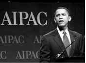Неоконсерваторы добились того, что интересы Израиля стали интересами Америки и война Израиля стала войной Америки.
Экстремистское сионистское движение неоконсерваторов было основано последователями Троцкого, яростного борца против нашей страны, по указанию которого были уничтожены миллионы православных христиан. Геноцид осетин – это продолжение того чудовищного геноцида, начатого сионистами во главе с Троцким.
Именно неоконсерваторы подняли шумиху в прессе с требованием наказать Россию и посильнее. И поскольку под контролем произраильского лобби находятся практически все СМИ, ситуация в них излагается с точностью до наоборот.
«Occidental observer» в номере от 16 августа 2008 года, комментируя события в Осетии и ненависть американских неоконсерваторов к России, пишет: «Если вы типичный неоконсерватор, то есть тот, кто видит мир преимущественно сквозь сионистские линзы и не может различить интересы США и Израиля,…то вы будете чувствовать себя очень несчастным из-за того, что России удалось разбить грузинскую армию и угрожать Грузии сменой режима. Израиль имеет сильные связи с Грузией».
Дальше в статье говорится о проявлениях этой неоконсервативной ненависти к России. Так американские неоконсерваторы, то есть произраильское лобби, поддерживали войну в Югославии, результатом которой стало отделение Косова от Сербии, союзницы России. Они борются за независимость Чечни от России, за вступление в НАТО бывших советских республик. Они поддержали агрессивный антироссийский курс США и создание объектов ПРО в Польше и Чехии. На их совести война не только в Югославии, но и в Ираке, где Россия понесла колоссальные экономические убытки. Они толкают США к войне против Ирана, с которым Россия связана экономически и геостратегически.
Статья в «Occidental observer» завершается следующим предостережением: «Мы можем ожидать столь же длинной и упорной еврейской кампании против России, такой же мощной и разрушительной, как в революционный период 1881-1917 годов».
Это слово «сионизм» у нас практически вышло из употребления. Хотелось бы напомнить определение, которое дает ему «Советский энциклопедический словарь» (М. 1980 г.).
«Сионизм – реакционная шовинистическая политика и идеология. Возник в конце ХIХ века. Выдвинул лозунг создания в Палестине еврейского государства и переселения туда всех евреев. Характерные черты сионизма – воинствующий шовинизм, расизм, антисоветизм. Высший орган Всемирная сионистская организация, созданная в 1897 г. Руководящие центры сионизм находятся в Израиле, где он является государственной доктриной, а также в США».
У сионизма есть еще и духовные цели. Его последователи должны построить на месте мусульманской святыни мечети Аль Акса (видимо, каким-то образом уничтожив ее), Третий храм Соломона и короновать там своего верховного правителя – мошиаха, который должен возглавить мировое правительство. В Православии его называют антихристом.
Судя по событиям в Осетии, антисоветизм трансформировался сейчас в антироссийскую деятельность милитаристского характера.
В 1999 году Пентагон подготовил доклад для высшего военного и политического руководства США. В нем говорилось: «Будущая опасность заключается не только в разворачивающихся враждебных международных тенденциях, но в риске, что руководство страны может их не распознать».
Угроза непонимания и недооценки угроз национальной безопасности России проявилась со всей очевидностью во время и после войны в Осетии.
Задолго до этой войны внешне выбор России по самопровозглашенным республикам выглядел так: либо мы признаем эти республики и осложняем отношения с Западом, либо мы их не признаем в угоду Западу.
Длительный период мы шли по этому, второму пути. И нам казалось, что наше стремление угодить будет залогом мира и стабильности в регионе. Война в Осетии показала, что выбор, на самом деле, был глубинным. Он заключался между своевременным признанием и установлением порядка на наших условиях или через затягивание решения этого вопроса, предоставить Западу возможность начать войну и получить повод войти на территорию Грузии.
А то, что у Запада были именно эти намерения: вторгнуться на Кавказ под подобным предлогом и использовать территорию Грузии как плацдарм для дестабилизации обстановки в регионе и войны против России, сомневаться не приходится.
Не просто же так 9 января 2009 года в Вашингтоне министр иностранных дел Грузии Григол Вашадзе и Госсекретарь США Кондолиза Райс подписали Хартию о стратегическом партнерстве двух стран. Ее содержание носит конфиденциальный характер, то есть засекречено даже от ведущих политических партий в Грузии.
Правда, на следующий день после подписания неофициальный текст Хартии был размещен на сайте ИА REGNUM. Там нет ничего неожиданного. Наоборот, все очень даже ожидаемо.
Суть документа кратко сформулирована Вашадзе и Райс в их выступлениях в связи с подписанием Хартии.
Как сообщает агентство GHN, Вашадзе заявил: «Грузия должна вернуться к западному миру. Я очень горд, что дожил до этого дня. Мы подчеркиваем, что благодарны за то, что делают США и этот документ нашего стратегического партнерства устанавливает не только права для Грузии, но и обязанности, которые Грузия должна выполнить».
Конди поет ему в унисон о том, что «Грузия может быть уверена, что в лице США у нее есть друг». По ее словам, «этот документ показывает, насколько продвинулись вперед отношения наших стран в сфере безопасности, обороны, культуры и экономики. США всегда поддерживали и будут поддерживать территориальную целостность Грузии».
В тексте Хартии «Часть I. Принципы партнерства» практически все семь принципов, так или иначе, связаны с обеспечением этой территориальной целостности и увязываются с сотрудничеством в области обороны и безопасности:
«1. Поддержка суверенитета, независимости, территориальной целостности и нерушимости границ друг друга представляет основу наших двусторонних отношений».
… «3. Сотрудничество в сферах обороны и безопасности между демократиями имеет существенное значение для эффективного реагирования на вызовы, угрожающие миру и безопасности».
И далее, все это, ни больше ни меньше, представляется как условие сохранения свободы и мира в Европе:
… «4. Сильная, независимая, суверенная и демократическая Грузия, которая обладает ответственной оборонной силой, вносит свой вклад в утверждение безопасности и благополучия не только всех граждан Грузии, но и свободной и мирной Европы».
Но ведь, «территориальная целостность» Грузии с точки зрения США и Запада в целом подразумевает включение Абхазии и Южной Осетии. А если речь в Хартии идет об «обороне» Грузии, то под этим надо понимать присоединение Абхазии и Южной Осетии. Но они добровольно не присоединятся. Значит, имеется ввиду насильственное присоединение. Но там находятся наши войска, и мы признали независимость этих двух государств. Значит, речь идет о войне, не о локальном вооруженном конфликте с Абхазией и Южной Осетией, а о крупномасштабной войне с Россией. Понятно, что Грузия никогда бы не пошла самостоятельно на такое столкновение. За Грузией США, за Грузией весь Запад, за Грузией одержимая жаждой реванша Невидимая Хазария. Именно она сейчас будет воевать с Россией, используя в качестве пушечного мяса грузинскую армию и частные военные компании, снабжая их американским, в целом натовским оружием. Надо полагать, именно участие грузинской армии в этой войне и подразумевал Вашадзе, говоря об «обязанностях, которые Грузия должна выполнить».
В тексте Хартии опять НАТО как вожделенные бусы для папуасов:
… «6. Соединенные Штаты Америки будут содействовать усилиям Грузии углублять связи с другими нациями Евроатлантического содружества в политической, экономической, социальной и сфере безопасности».
«7. Партнеры заявляют, что их общую цель представляет полная интеграция Грузии в европейские и трансатлантические политические, экономические, а также институты безопасности и обороны на основе удовлетворения Грузией необходимых стандартов».
Вашадзе свою позицию по вопросу НАТО обозначил раньше по итогам встречи в Брюсселе. По сообщению ИА REGNUM, он сказал, что Тбилиси будет «спокойно и продуманно двигаться в сторону НАТО и ЕС». «В Брюсселе случилось главное – найден выход из казуистического процедурного тупика. Грузия не получила ПДЧ (Программы для членства в НАТО), но получила все, из чего он состоит. Как это будет называться, не имеет решительно никакого значения».
Зачем НАТО нужны такие неспокойные страны как Грузия и Украина? Ответ на этот вопрос дал представитель России в Совете Россия-НАТО Д. Рогозин, который давал интервью 24 января 2009 года на радио «Эхо Москвы». При обсуждении проблемы приема в члены НАТО нестабильных государств, он сказал: «Я несколько раз спрашивал, в том числе моих коллег, зачем они это делают? Грубо говоря, в военном отношении и Хорватия, и Албания – это не плюс для НАТО, а, может быть, даже минус. Уж ноль-то точно! Никакого прибавленного потенциала НАТО не получит в результате приёма этих двух государств. Но ответ меня просто поразил. «Мы принимаем Балканские государства, расширяем НАТО, для того, чтобы сменить политическую идентичность этих государств». То есть, фактически сделать так, чтобы эти государства стали частью западного мира… Это мондиалистский подход. Это, действительно, попытка экспансии определённой политической культуры на всё большей и большей территории. В ответ я говорил: «А что, Украина должна вступить в НАТО тоже для того, чтобы поменяли политический пол?» По сути дела это и есть доказательство антироссийской сути расширения НАТО на восток. Поэтому я согласен с Вами, что НАТО иногда берёт на себя ответственность за неспокойные регионы, и на них накладывает свою лапу, но это делается именно для того, чтобы взять под контроль политический процесс в этом государстве».
Этот процесс постановки под контроль НАТО нередко идет через дестабилизацию обстановки в регионе в целях получения оснований для международного вмешательства, прежде всего, силами НАТО, именно этот сценарий был обкатан в Югославии. Сейчас его пытаются использовать на Кавказе, в том числе и на нашей территории – Северном Кавказе.
После «пятидневной войны» у криминальных националистических элит народов Северного Кавказа появилась новая установка на возможность «косовского варианта» с переходом под международный протекторат. В Косово этот международный протекторат известно, чем закончился.
Вообще югославская модель, которую Запад пытается реализовать и у нас, довольна проста. В югославской модели ставка делалась на три группы сил. Это оппозиционные политические и социальные организации и группы внутри страны (повсеместное системное разжигание протестных настроений и выступлений); сепаратисты, эксплуатирующие этнический фактор; пятая колонна (коррумпированные Западом чиновники во властной элите, прежде всего, в политических, экономических и военных кругах).
Руководство страны должно вовремя нейтрализовывать агрессивные действия этих сил против нашей государственности, чтобы пресечь попытки дестабилизации обстановки и не дать повода для интернационализации спровоцированных Западом конфликтов и дальнейшего вмешательства НАТО.
Цель НАТО заключается в том, чтобы сменить политическую идентичность государств с национальной (государственнической) на глобальную мондиалстскую (антигосударственническую и антироссийскую). В этом суть «экспансии определённой политической культуры» (хазарской культуры добавим мы) «на всё большие и большие территории». И прием в НАТО – это не что иное, как взятие «под контроль политического процесса» в странах-членах этой организации. НАТО означает разгосударствение государств, приватизацию их вооруженных сил и превращение их в вассалов с последующей интеграцией в Глобальный каганат.
Эти идеи нашли свое отражение в Хартии о стратегическом партнерстве между США и Грузией.
В тексте Хартии идет конкретика опасных путей реализации перечисленных выше принципов: «В рамках комиссии НАТО-Грузия, Соединенные Штаты Америки и Грузия составят и осуществят организационный план, целью которого является повышение соответствия возможностей и координации НАТО и Грузии, в том числе путем учений и улучшения оборудования вооруженных сил Грузии».
Иначе говоря, речь идет об обеспечении оперативной совместимости в случае войны. Войны с кем? Из второй части документа становится ясно, с кем: «Признавая то, что миру и стабильности в мире угрожает опасность, принимая во внимание обязательство, вытекающее из соглашения 12-го августа о прекращении огня между Грузией и Россией, Соединенные Штаты Америки и Грузия планируют расширить рамки программ сотрудничества в сферах обороны и безопасности, с целью устранения этих угроз и содействия миру и стабильности. Сотрудничество и партнерство между Соединенными Штатами Америки и Грузией в сферах обороны и безопасности полезно, как для обоих государств, так и для региона».
То есть, «расширение рамок программ сотрудничества в сферах обороны и безопасности» напрямую увязывается с «опасностью миру и стабильности в мире» и войной между Грузией и Россией и имеет «целью устранение этих угроз». Но если речь идет о сотрудничестве в области обороны, то априори предполагается, что эти угрозы будут устраняться военным путем.
Вот и весь расклад, вот и вся секретность. Но так просто, с бухты-барахты, войну не начнешь. Нужен повод, чтобы сказать, что «миру и стабильности в мире угрожает опасность», а следовательно, нужна провокация. Вот эту провокацию сейчас и готовят. Но готовят-то, прежде всего, против России.
Есть среди заложенных в Хартию принципов – и про демократию. А как же без нее. В некоторых местах текста вместо традиционных и принятых в таких документах слов «страны» или «стороны» используется слово «демократии». Дворняжку, появившуюся путем многократных скрещиваний всяческих порочных режимов и патологических политических курсов, хотят выдать за тип элитных государств. А, если ты недемократичен, тебя дворняжки объявляют «политически нелегитимным».
«2. Наша дружба основывается на общем понимании и признании совместной веры, что демократия представляет собой главную основу политической легитимности и, соответственно, стабильности».
В своем выступлении в связи с подписанием Хартии, министр иностранных дел Грузии, отдавая дань объявленной Хазарией моде на американскую демократию как поводу для тотальной войны, заявил: «Мы знаем, что должны быть открытым, демократичным и либеральным обществом и вместе с США мы сможем достичь этой цели».
Таким образом, под видом сотрудничества в сферах обороны и безопасности, под видом устранения внешних угроз и защиты демократии США и НАТО стремятся вторгнуться на территорию Грузии для использования ее как плацдарма в войне против России.
После войны в Осетии ситуация стала складываться именно по этому сценарию. Подтверждением тому сообщение Интерфакса от 18 октября 2008 года, где говорится, что Президент Южной Осетии Эдуард Кокойты выразил недоумение по поводу того, что находящиеся в регионе международные наблюдатели не реагируют на провокационные действия грузинской стороны.
«Ситуация в приграничной зоне республики Южная Осетия и республики Грузия вновь осложняется. Практически каждый день фиксируются обстрелы постов правоохранительных структур Южной Осетии и похищения людей», – заявил Э.Кокойты Интерфаксу.
«Международные наблюдатели при этом весьма странно выполняют свою миссию, не реагируя на это. Тенденциозность международных наблюдателей очевидна. Их деятельность не способствует улучшению ситуации, а наоборот, усугубляет ее», – отметил Э.Кокойты.
«Грузия своими действиями нарушает план Медведева-Саркози при молчаливом наблюдении за этим международных представителей», – добавил он.
Несколько лет назад американскими и европейскими стратегами был разработан проект «Большой Кавказ». Главной геополитической целью проекта является создание федеративного государственного образования под контролем США в составе Грузии, Армении, Азербайджана и северокавказских республик России.
В соответствии с этим планом, Саакашвили был подготовлен и приведен к власти для того, чтобы выполнить две основные задачи:
1. Интенсифицировать конфликты на Кавказе, прежде всего Грузии с Россией;
2. Создать предпосылки для размещения американского и европейского контингента в зоне «Большого Кавказа».
Саакашвили эти задачи выполнил. Контингент стран НАТО находится на Кавказе. Но для реализации главной геополитической цели – создания федеративного государственного образования, согласно проекту, требуется построить военную инфраструктуру США в Закавказье.
Ее строительство ведется уже несколько лет в рамках программы Пентагона «Каспийская пограничная инициатива», которая пока сосредоточена на Азербайджане и Казахстане с последующим расширением на некоторые другие бывшие советские республики. Пентагон уже построил и планирует построить командно-штабные центры, а также центры по воздушным и морским секретным операциям. В Азербайджане Пентагон создает базу для развертывания сил специальных операций (мобильных сил) со штаб-квартирой в Баку.
Программа, аналогичная Каспийской инициативе, существует и в НАТО, якобы для того, чтобы охранять трубопроводы, идущие через Каспий-Турцию-Балканы. Получается, что одни и те же трубопроводы будут охранять войска США и НАТО. Не много ли стражников? Они что друг другу не доверяют? Вовсе нет. В военно-стратегическом отношении они друг друга должны дополнять, обеспечивать оперативную совместимость своих войск в этом регионе, где они планируют воевать против России.
И потом, против кого они хотят защищать эти трубопроводы? Говорят, «против террористов». Но кем финансируются эти террористы и откуда они перебрасываются? Известно, откуда. Это давно не секрет. Из Саудовской Аравии, находящейся под контролем США, из Турции – члена НАТО, ну и из других стран, имеющих к этому блоку отношение. Для чего? Для борьбы против нашей страны. Так что не будем о террористах. Запад сам создает террористические организации, как была создана Аль-Каида, в целях борьбы против СССР, а потом ее использовали как предлог для начала глобальной войны в интересах Хазарии.
Очевидно, что охрана трубопроводов – это только предлог.
Под этим предлогом в районе Кавказа развернут контингент американских и натовских сил. Они размещены на бывших советских военных базах в Азербайджане.
Но, если следовать логике атлантистов, у нас ведь тоже в этом регионе есть трубопроводы, которые затрагивают наши интересы. И, более того, положение в сопредельном Закавказье напрямую определяет ситуацию на нашем Северном Кавказе, что связано с обеспечением стабильности и территориальной целостности России.
Поэтому закономерно будет и нам под тем же самым предлогом охраны наших нефтепроводов разместить на Кавказе в достаточном количестве свои войска и свой флот. Мы на это имеем абсолютное и преимущественное по сравнению с атлантистами право. А то ведь мы очень робеем перед ними, а они в ответ очень наглеют перед нами. И чем дальше, тем больше.
Недопонимание и недооценка угроз национальной безопасности России, исходящих от действий Запада по претворению в жизнь Проекта «Большой Кавказ» и программы «Каспийская пограничная инициатива» привели к тому, что мы эти угрозы не только допустили, но и своим бездействием позволили им осуществиться.
Практически полностью состоящий из неоконов Американский комитет за мир на Кавказе (раньше он назывался Американский комитет за мир в Чечне), куда входят многие ярые русофобы, включая Бжезинского и Ричарда Перла, работая в русле проекта «Большой Кавказ», упорно продвигал идею, что только международное вмешательство на Кавказе может стабилизировать там обстановку. То есть они всеми силами хотели добиться интернационализации конфликта. И в результате спровоцированной Западом агрессии в Осетии, им это удалось. Причем мы сами их туда пригласили вследствие все тех же непонимания, недооценки и игнорирования масштаба и серьезности угрозы и нашей концептуальной ориентации на принцип «защищенности от угроз», вместо принципа «предотвращения угроз», требующего опережающей реакции на угрозу.
Сделав Запад стороной урегулирования на Кавказе, и в частности в Осетии, мы, по сути, выступили против интересов России и ее безопасности. Мы пустили козла в огород. Козлов оказалось много. Втянув в переговоры США, мы де-факто сделали их стороной урегулирования. Сами, что называется, своими руками. Имея в руках абсолютное стратегическое преимущество, полученное в результате стремительной победы наших военных, которая ввела Запад, то есть в данном случае противника, в состояние шока и растерянности. Мы не воспользовались этим и, более того, позволили вмешаться сюда еще и ЕС. И вот примчался Саркози. И мы, победители, с ним ведем переговоры, как ежели бы он был нашим союзником в этой победе, другом, товарищем и братом. Но Саркози в силу своих идейных установок вовсе даже и не партнер, а как раз наоборот. Курс Саркози и Израиля, который вооружал Саакашвили – это одно и то же. Маски, личины могут быть разные, но суть одна.
Как пишет «Еврейская электронная энциклопедия»: «Главное отличие саркофагов от других видов гробов в том, что саркофаги не зарывали в землю, а ставили в склепе или мавзолее; поэтому саркофаги богато украшались».
«Горе вам, книжники и фарисеи, лицемеры, что уподобляетесь окрашенным гробам, которые снаружи кажутся красивыми, а внутри полны костей мертвых и всякой нечистоты; так и вы по наружности кажетесь людям праведными, а внутри исполнены лицемерия и беззакония» (Мф. 23, 27-28).
Именно такую ассоциацию вызывает личность Саркози.
Его избрание на пост президента Франции Запад встретил с большим воодушевлением. Восторженным отзывам в самых престижных СМИ не было предела. Саркози – союзник США. И это уже говорит само за себя. Как пишет еврейская пресса, Саркози принадлежит к древней еврейской фамилии Маллах. В XV веке семья Маллах бежала от испанской инквизиции во Францию, а потом в Салонику. В Греции члены этой семьи возглавили сионистское движение. В настоящее время Маллахи являются известными в мире сионистскими лидерами. На Павлика Морозова он оказался не похож и стал активно реализовывать сионистский, а значит и антироссийский, проект нового мирового порядка (глобализации).
Для этого он, заступив на президентский пост, в первую очередь назначил советником своего друга известного идеолога глобализации Жака Аттали. «Скажи мне, кто твой друг, и я скажу, кто ты». Жак Аттали является членом трех главных масонских организаций – Бильдербергского клуба, Трехсторонней комиссии и Совета по международным отношениям.
19 апреля 2007 года «Herald Tribune» публикует одну из его программных статей, где он говорит о необходимости «распространить глобализацию в экономике» на политику «с помощью концепции установления демократии» (заметим попутно, что США успешно это реализовали в Ираке). Далее Аттали пишет: «Нам нужно реорганизовать и реанимировать институты глобального мирового правительства». Эта структура, которая непосредственно призвана готовить установление мировой тирании в форме всеобщего физического и духовного рабства.
Саркози инициировал создание Союза для Средиземноморья (СДС), аналога Евросоюза, в полном соответствии с идеей «глобализация через регионализацию». Основополагающий документ был подписан в июле 2008 года. В союз вошли государства Европы, Ближнего Востока и Северной Африки, исключая Ливию. Муамар Каддафи отказался приехать на встречу, сравнив СДС с «минным полем» и заявив, что «этот план имеет целью вновь поставить арабские страны под власть европейцев».
Союз для Средиземноморья включил 43 государства: 27 стран-членов Евросоюза, 10 стран Юга – Алжир, Египет, Израиль, Иорданию, Ливан, Марокко, Мавританию, Сирию, Тунис, Турцию, а также Палестинскую автономию и Албанию, Хорватию, Боснию и Герцеговину, Черногорию и Монако. Ливия имеет статус приглашенного члена новой организации. Богатые ресурсами страны – лакомый кусок для Запада.
В результате создания этой региональной организации был запущен механизм постепенного растворения суверенитета стран-членов путем стандартизации всех сфер их жизни, включая экономическую, политическую, социальную, экологическую и духовную. Поскольку ряд членов этой организации традиционно сотрудничает с Россией и традиционно имеет с ней дружеские отношения, включение их в глобалистский, а значит, в антироссийский проект, имеет цели деструктивного характера. Они заключаются в том, чтобы отторгнуть пророссийски настроенные страны от России, поставить их под контроль Запада, а в дальнейшем, когда они полностью запутаются в его паутине, заставить их выступить против России, как это произошло с Грузией.
В рамках Союза будут реализовываться 6 конкретных проектов, среди которых создание ЕС-Средиземноморского университета и развитие предпринимательства, что означает попытку установления цивилизационного и экономического контроля Запада над странами Средиземноморья.
Подчеркну, что инициатором и организатором создания СДС выступил именно Саркози. Это было одним из главных пунктов его предвыборной программы.
В своем интервью «Time», данном 30 сентября 1991 года, его советник Аттали заявляет следующее: «Уничтожение советской угрозы не означает, что мир стал более безопасным местом, без каких-либо конфликтов. Сейчас нам нужна глобальная миротворческая сила». То есть вооруженная сила, которая будет устанавливать новый мировой порядок с помощью силы и подавлять с помощью силы всех несогласных и сопротивляющихся. Эта «глобальная миротворческая сила» должна находиться на службе у «глобального мирового правительства». Частью этой силы сейчас являются войска НАТО, которые надлежит разместить на территории Грузии, чтобы иметь плацдарм для войны против России.
Саркози сказал, что «будущее Европы на Юге». СДС должен помочь «добиться победы в борьбе с терроризмом, интегризмом и фундаментализмом». Можно не сомневаться, что с «интегризмом и фундаментализмом», то бишь, с государственностью и ее национальной исторической традицией будут бороться путем насильственного дезинтегризма и денационализации, а всех несогласных объявят террористами.
Саркози, которого мы сделали посредником в решении грузино-югоосетинского конфликта, имеет тесные связи с ЦРУ и является его выдвиженцем. В журналистском расследовании Тьерри Мейсана подтверждается, что «Проект Саркози» был тщательно продуман и отрежиссирован. В ход был пущен весь богатый арсенал американской разведки. Так, в частности, были вброшены фальшивые списки, которые обвиняли ряд политических деятелей Франции в сокрытии банковских счетов в Люксембурге. Среди «опозоренных» оказался и Саркози. Он тут же отправляет дело в суд и обвиняет в клевете своего политического конкурента по президентской гонке премьер-министра Доминика де Вильпена. Он не скрывает, что намерен отправить его в тюрьму.
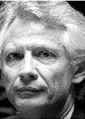На самом деле списки были запущены членами Франко-Американского фонда, где президентом был царь американской разведки Джон Негропонте.
Относительно Негропонте можно сказать, что он был послом в Гондурасе, когда США финансировали эскадроны смерти.
Когда же он был послом США в ООН, он наложил вето на резолюции Совета безопасности, осуждающие террористические действия Израиля, и, в частности, убийство шейха Ахмеда Ясина.
Директором же Франко-Американского фонда, запустившего фальшивку, направленную на дискредитацию конкурента Саркози по президентской гонке, был Франк Виснер, тесно связанный с ЦРУ и Министерством обороны США.
Так вот, этот самый Виснер в свое время, женился на второй жене отца Саркози, у которого с ней было двое детей, сводные брат и сестра нашего Николя. Он был в таких теплых отношениях со второй семьей своего отца, что поехал учиться в США по линии специальной программы от американского Госдепа. Виснер же в то время работал на ЦРУ.
Затем, когда Саркози стал уже Министром по бюджету и представителем французского правительства, Виснер сменил Пола Вулфовица на посту первого заместителя министра обороны США, отвечающего за политическое планирование. О его связях с Саркози все молчали. Перед Иракским кризисом стали планировать уничтожение голлистского крыла, то есть идейных голлистов во Франции и приход к власти Саркози. План состоял из трех этапов: 1) ликвидация лидеров Партии голлистов и перехвата Саркози руководства в ней; 2) ликвидация конкурента справа, открытие дороги для Саркози и выдвижение его в качестве кандидата на пост президента; 3) ликвидация любого серьезного конкурента слева, чтобы быть окончательно уверенным в успехе выборов.
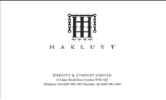Эта операция ЦРУ и Министерства обороны США позволила заставить Жака Ширака ввести Саркози в правительство, несмотря на их взаимную ненависть. Он стал министром внутренних дел, отвечающим за сеть внутренней разведки, что позволило ему внедрить своих людей на ключевые посты в руководстве страны.
Но вернемся к скандалу с фальшивым списком тайных счетов, направленным на то, чтобы обвинить в клевете и убрать Доминика де Вильпена. Итак, эти списки распространил Франко-Американский фонд, руководителями которого были Негропонте и находящийся в тесных связях с Саркози Франк Виснер.
Как выяснилось впоследствии списки были сделаны в Лондоне компанией «Хаклюит amp; Ко», которая является совместной структурой ЦРУ и МИ6, где, какое совпадение, Франк Виснер также является директором.
Вильпен отвергает обвинения в клевете, но его все же обвиняют и запрещают покидать свой дом, и де-факто временно выводят из политической жизни. Так нейтрализуют главного конкурента справа и открывают путь Саркози к президентству.
После того, как нейтрализовали конкурента Саркози справа, осталось убрать конкурента слева от Социалистической партии.
И опять в ход пускают интриги. Членские взносы Социалистической партии опускают до предельно низкого, чисто символического уровня, чтобы привлечь новых членов. И вот тысячи молодых людей обращаются с просьбой принять их в партию. Среди них, по крайней мере, десять тысяч членов, которые, на самом деле, являются членами троцкистской Партии ламбертистов (названной так по имени основателя Пьера Ламбера). Эта небольшая организация левоэкстремистского толка имеет длинную историю сотрудничества с ЦРУ в борьбе против СССР. Она является аналогом партии СД США Макса Шахтмана, ставшей основательницей движения неоконсерваторов в Америке.
Когда решался вопрос о выдвижении кандидата от социалистической партии на пост французского президента, выбор должен был быть сделан между Лораном Фабиусом, который представлял опасность для Саркози, и Сеголен Ройяль.
Проникшие в партию ламбертисты проголосовали за Ройяль. В операции по удалению Фабиуса важную роль сыграл член Социалистической партии Доминик Штраус-Кан, связанный с США марокканец еврейского происхождения, который читал лекции в Стэнфордском университете и был взят туда тогдашним проректором Кондолизой Райс.
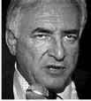После того, как Саркози стал президентом, он и Райс в знак благодарности за оказанную услугу назначили Кана главой Международного валютного фонда. Кан – член масонской ложи Великий Восток Франции.
Параллели с известной пословицей можно продолжить. Например, «скажи мне, каковы твои первые решения на посту президента, и я скажу, кто финансировал твое избрание».
Так вот, первым решением Саркози на посту президента было разрешение его друзьям Доминику Десеню и Патрику Партушу увеличить число игровых автоматов в их казино.
Компания «Groupe Lucien Barrire», которой руководит Десень, имеет во Франции 13 отелей класса «люкс», 13 казино, 57 ресторанов и дискотек, включая известный ресторан в Париже на Елисейских полях «Le Fouquet’s». Именно в «Le Fouquet’s» Саркози отмечал победу на президентских выборах.
Став президентом Франции, Саркози сделал своей главной опорой четырех человек. Это:
Клод Геан - генеральный секретарь Елисейского дворца;
Франсуа Пероль - заместитель генерального секретаря Елисейского дворца;
Жан-Давид Левит - советник по дипломатическим вопросам;
Ален Боэр - ответственный за секретные службы.
Остановимся подробнее на каждом из этих персонажей.
Клод Геан руководил президентской компанией Саркози и был правой рукой Шарля Паскуа, друга и наставника Саркози.
В 90-х годах Паскуа, несмотря на свое сомнительное прошлое, был назначен Министром внутренних дел и воспользовался своим положением, поставив под контроль казино и игорный бизнес. Тогда же он установил тесные связи с Саудовской Аравией и Израилем и стал почетным офицером Моссада.
Что касается Моссада, то у Саркози тоже оказалось рыльце в пушку. 22 октября 2007 года влиятельная французская газета «Le Figaro» опубликовала статью, где утверждалось, что французский лидер раньше работал и до сих пор работает на израильскую разведку.
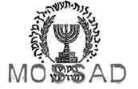Как следует из статьи, в 1978 году правительство Менахема Бегина приняло решение внедриться в партию голлистов для того, чтобы превратить ее в «партнера Израиля». Операция была названа «Рафаэль Ейтан» по имени бывшего шефа Моссада. Саркози был завербован секретной израильской службой в 1983 году и стал израильским шпионом высокого ранга.
Документы, которые оказались в редакции «Le Figaro», свидетельствуют, что Саркози до сих пор продолжает оставаться агентом израильской разведки.
Принадлежность к Моссаду, возможно, тоже связала Паскуа и Саркози. Когда в Партии голлистов началась борьба между историческими голлистами и правым крылом, куда входили связанные с Ротшильдами банкиры-финансисты, которых представлял Баладюр, Паскуа и молодой тогда Саркози поддержали крыло Ротшильдов и фактически предали Жака Ширака. Конфликт достиг своего пика в 1995 году, когда Эдуард Баладюр стал соперником своего бывшего друга Жака Ширака на президентских выборах. Но потерпел поражение. Есть информация, что Паскуа и Саркози причастны к защите интересов мафии на Корсике.
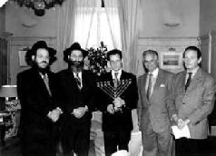Так вот Клод Геан был как раз правой рукой Паскуа. Следующий член четверки особо доверенных и близких президенту Саркози людей – Франсуа Пероль - заместитель генерального секретаря Елисейского дворца. Он же – управляющий банка Ротшильда.
Саркози связан с Ротшильдами самыми тесными связями. Эдуард Ротшильд – давний друг Сар кози и совладелец «Rothschild amp; Cie Banque». В июле 2003 года банки Ротшильдов в Лондоне и Париже объединились и образовали компанию «Concordia BV», куда вошел «Rothschild et Cie Banque». Этот банк контролирует банковский бизнес во Франции и континентальной Европе.
К четверке особо приближенных к Саркози лиц относится также Жан-Давид Левит, советник по дипломатическим вопросам, по прозвищу «Дипломатор», по аналогии с терминатором.
Первым главой государства, принятым Сарко на посту президента был именно Мишико Саакашвили. Кстати, в связи с конфликтом Грузии и России, стоит привести цитату из статьи Винсана Жовера, опубликованной в середине ноября 2008 года в журнале «Nouvel Observateur» и размещенной на сайте Инопресса: «Саркози придумал план – извлечь выгоду из конфликта, завязав с новым российским президентом особые отношения. 2 сентября французский президент приглашает на завтрак в Елисейский дворец несколько экспертов, среди которых сын Андре Глюксмана Рафаэль, журналистка Лора Мандевиль, политолог Мари Мендра и Элен Каррер д'Анкос, чтобы рассказать о своей новой стратегии. По словам одного из присутствовавших на той встрече, Саркози сказал им, что, по его мнению, Медведев более либеральный, чем Путин, поэтому ему надо помочь. По его словам, он хотел сыграть ту же роль, что Тэтчер в отношениях с Горбачевым».
Стратегию, которую применили к Горбачеву, на Западе называют стратегией «мягкой силы». В соответствии с ней, противника называют «партнером», но, вместе с тем, методами «мягкого принуждения» втягивают в процессы саморазрушения.
Как пишет «Nouvel Observateur», эту «тэтчеровскую» стратегию Саркози применил 9 сентября, на подмосковной даче во время обсуждения плана из шести пунктов. Когда «российская сторона заблокировала переговоры из-за одной ключевой фразы, тогда Саркози пригрозил уйти, сказав Медведеву: «Дмитрий, тебе 42 года, ты молодой руководитель, к тебе хорошо относятся. Это невероятный шанс. Не упускай его. Если ты откажешься, я не смогу помешать европейцам принять против тебя санкции. Ты хочешь стать изгоем?» – приводит издание слова французского президента. По словам Кушнера, так Саркози удалось вырвать подпись у Медведева».
К портрету Левита стоит добавить, он – сын бывшего директора Еврейского агентства. Был послом Франции в ООН, но тогдашний президент Жак Ширак сместил его с этого поста, посчитав, что он слишком близок к Бушу. У Саркози такие люди в чести. Удивительно только, что при столь тесной связи с Бушем он им, как страшилкой, пугает других.
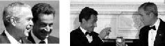Дипломатический советник Елисейского дворца Жан-Давид Левит рассказал журналу «Nouvel Observateur» о разговоре между Саркози и российскими лидерами, который состоялся в Кремле 12 августа. Николя Саркози встретился с Владимиром Путиным и Дмитрием Медведевым и пытался убедить их прекратить боевые действия в Грузии и не брать Тбилиси. В статье говорится, что вопрос этот возник потому, что из перехваченных французскими спецслужбами переговоров Саркози стало известно, что значительная часть российской армии намерена пойти до конца и свергнуть Саакашвили. Кроме того, Саркози имел основания предполагать, что Кремль уже сформировал для Грузии пророссийское правительство, к которому должна была перейти власть.
По словам Жана-Давида Левита, «Саркози сказал им, что они не должны этого делать, потому что мир этого не допустит. На что Путин ответил: «Я этого Саакашвили повешу…». «Повесишь?» – «Почему бы и нет, – ответил российский премьер. – Американцы же повесили Саддама Хусейна». «Да, – сказал тогда Саркози, – но неужели ты хочешь закончить, как Буш?» Путин подумал, потом сказал: «Тут ты прав». Таким образом, пишет автор статьи, «Саркози спас голову Саакашвили…» Левит убежден, что Саркози сыграл огромную роль в процессе «мирного урегулирования».
И, наконец, еще одна очень закрытая, теневая и очень примечательная фигура из четверки, на которую опирается президент Саркози. Это эдакий серый кардинал – Ален Боэр. Его имя окутано тайной. Он отвечает за разведывательные службы. Боэр – внук Великого раввина Лиона, был Великим Мастером главной масонской ложи страны – «Великий Восток Франции», был номером 2 в Агентстве национальной безопасности США в Европе. АНБ является ведущей американской спецслужбой в области радиоэлектронной разведки и контрразведки. Это самая засекреченная и самая закрытая из всех организаций, входящих в Разведывательное сообщество США. Что же касается масонства, то стоит еще раз напомнить, что главными его целями являются уничтожение христианства, и, прежде всего, Православия, а также ликвидация национальной государственности в целях создания глобального антигосударства – глобальной Хазарии.
Лозунгами «Великого Востока Франции» являются – «разделять, чтобы властвовать; доминировать, чтобы диктовать; извращать, чтобы держать под контролем; убивать, чтобы положить конец».
Мы вступаем в отношения, ищем поддержки у Саркози, человека, связанного с тайными обществами, о которых Архиепископ Аверкий (Таушев) в проповеди «Кому мы служим?» говорит: «Все сейчас так отравлено ядом Богоотступничества и открытого и безстыдного служения диаволу. Особенно опасно и губительно дать вовлечь себя в какие бы то ни было отношения или сношения с тайными обществами и организациями, проникнутыми явно или скрыто антихристианским духом, и пользоваться их материальной помощью или какой бы то ни было поддержкой, ибо за это рано или поздно так или иначе придется расплачиваться, продав таким образом «кому-то» свою духовную свободу. Даром, вполне безкорыстно и без всякаго разсчета в наши дни никто почти уже не помогает». («Современность в свете Слова Божия». Слова и речи, Том 4).
Готовы мы за эту «помощь» расплачиваться самым дорогим – нашей «духовной свободой»? Готовы мы ее отдать ради сиюминутных сомнительных выгод и политической конъюнктуры?
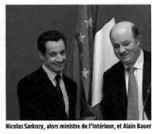Продолжим наше повествование о президенте Франции, навязавшем России свою «помощь» на Кавказе. Почти что родственник Саркози, знакомый нам уже Франк Виснер, которого президент Буш назначил специальным посланником по решению вопроса независимости Косова, настоял на том, чтобы Саркози сделал министром иностранных дел Бернарда Кушнера, который также влез в вопрос урегулирования конфликта в Осетии.
Так вот Кушнер после назначения получил две приоритетных задачи – обеспечение независимости Косова и прекращение прежнего курса политики Франции в отношении арабских стран.
Кушнер – еврей из Прибалтики, начал свою карьеру с создания гуманитарной неправительственной организации «Врачи без границ».
Благодаря деньгам, полученным от американского Национального фонда за демократию (который является крышей ЦРУ и организатором цветных революций), он по заданию Бжезинского принял участие в операциях против Советских войск в Афганистане в одном ряду с Осамой бен Ладеном и братьями Карзаями. В 90-х годах Кушнер уже оказывается на другом задании рядом с Алией Изетбеговичем в Боснии и Герцеговине. С 1999 по 2001 года Кушнер занимает пост Верховного представителя ООН в Косове.
Кушнер – один из авторов концепции «гуманитарной интервенции», которая используется как прикрытие агрессивных войн США и НАТО.
Кушнер активно выступал в поддержку вооруженных интервенций в Боснии, Косово и Ираке.
Кушнер также сторонник «гуманитарных» военных интервенций в Африке, которую Саркози рассматривает как одну из самых важных зон интересов французского империализма.
Какая удивительная география в его карьере: Афганистан и Косово. Казалось бы, они так далеки. А вместе с тем, они тесно связаны между собой. Чем связаны?
Проследим эту связь. Младший брат президента Афганистана Хамида Карзая является одним из крупнейших в стране наркобаронов. Под контролем США страна стала крупнейшим производителем героина в мире. Установлено, что транспортировка наркотиков осуществляется на самолетах ВВС США. Основная их часть идет в Россию, против которой ведется настоящая наркотическая война, жертвами которой являются миллионы в основном молодых людей. Но наркотики доставляются также в Кэмп Бонстид в Косово. Дальше они идут людям Хашима Тачи, то есть албанской наркомафии, которая пришла к власти как в Афганистане, так и в Косово. Прибыль от этого наркотрафика используется спецслужбами США, Израиля, Великобритании и Франции для финансирования преступной мировой войны, которую ведет глобальная элита за установление нового мирового порядка. Главным препятствием на этом пути и потому главной мишенью, объектом уничтожения в этой войне, подчеркну, является Россия.
В октябре 2008 года «Русский вестник» сообщил о том, что Атта Мохамад Нур, один из самых влиятельных политических деятелей Афганистана, губернатор северной провинции Балх, назвал США и Великобританию «главными мировыми наркодилерами» и виновными в производстве наркотиков и наркотрафике в Афганистане». «Крупные сети наркомафии функционируют на За паде, где проникли в правительства некоторых западных стран, таких как США, Великобритания и Франция».
Выступая в северном афганском городе Мазари-Шариф, административном центре провинции Балх, Атта Мохамад Нур заявил: «Эти страны не уважают афганские законы, и все их помыслы сосредоточены только на собственной корыстной выгоде».
Карзай и Тачи являются давними личными друзьями Бернарда Кушнера, несмотря на то, что об их преступлениях написаны снабженные убедительными доказательствами международные доклады.
Саркози вводит также в правительство в качестве Министра экономики и финансов Кристин Лагард. Она сделала свою карьеру в Соединенных Штатах, где руководила престижной юридической фирмой «Бейкер amp; Маккензи».
Известно, что эта фирма является главным финансистом чикагского филиала одной из трех основных масонских структур – Совета по международным отношениям.
В Центре вице-президента Дика Чейни по международным и стратегическим исследованиям Лагард тесно сотрудничала с Бжезинским. Вместе с ним она руководила рабочей группой, которая контролировала приватизацию в Польше.
Короче, на ключевых постах во Франции, которая взяла на себя роль «миротворца» в Осетии, находятся одни «наши» люди, которые принадлежат к глобальному историческому, духовному врагу и ненавистнику Руси – колену Данову, стоящему у руля невидимой Хазарии.
Просматривается еще одна закономерность. Высшее французское руководство тесно связано с США и Израилем. Центральной фигурой, обеспечивающей эти связи и координирующей их, является сам Саркози. Причем связи эти имеют, прежде всего, глубинный личный, духовный характер.
Вот только один эпизод. Саркози, Сесилию и их детей приглашают летом на отдых в США в Волфенборо.
И так «случайно» произошло, что это место оказалось недалеко от владения президента Буша. Счет был оплачен Робертом Агостинелли, банкиром, сионистом и одним из лидеров американских неоконсерваторов, который сотрудничает с журналом «Commentary», издаваемым Американским еврейским комитетом (American Jewish Committee - AJC).
Саркози на своем посту президента с бешеной активностью включается в строительство нового мирового порядка. Он задает мощные импульсы сооружению всех его составляющих. Благодаря его энергичным усилиям, появляется Союз для Средиземноморья, который наряду с Евросюзом и Североамериканским союзом составляют основу нового политического порядка. Он включается в строительство второй составляющей нового мирового порядка – нового экономического порядка. И вот мы видим его 19 октября 2008 г. в США, куда он приехал вместе с главой Еврокомисии Жозе Мануэлем Баррозу, чтобы обсудить с Бушем в его загородной резиденции Кэмп-Дэвид проблемы мирового финансового кризиса. Эдакий консультативный междусобойчик между своими в непринужденной атмосфере. Лейтмотивом этой встречи могут служить следующие слова Баррозу: «Международная финансовая система – ее основополагающие принципы, регулирование и институты – требуют реформирования. Нам нужен новый глобальный финансовый порядок (new global financial order)».
Саркози подхватывает эту тему и, вторя Баррозу, заявляет: «Это всемирный кризис и поэтому он требует всемирного решения».
Все в полном соответствии со словами хазарского банкира Дэвида Рокфеллера: «Мы находимся на пороге глобальных изменений. Все, что нам нужно, это подходящий масштабный кризис, и народы примут новый мировой порядок».
Итак, Саркози за очень короткий период стал одним из катализаторов двух основополагающих составляющих нового мирового порядка – нового экономического (финансового) порядка (в материальной сфере жизнедеятельности человечества) и нового политического порядка (в ментальной сфере). Но не они главные. Хазары это четко понимают. Даже захватив экономическую и политическую власть над миром, добившись экономического и политического лидерства, они не смогут стать полновластными лидерами, если не завоюют власть духовную. Только упразднив традиционные религии путем их намеренного искажения и извращения, они смогут на руинах человеческой духовности создать универсальную религию для всего мира, чтобы человечество не только приняло антихриста, но и страстно захотело его прихода как «спасителя» от того хаоса, который они устроили в экономике и государственности.
Это идея Бжезинского о необходимости перехода от превосходства к глобальному лидерству – хазарскому всемогуществу.
Всемогущество означает, по сути, власть не над странами и даже не над регионами. Это власть над цивилизациями, стержнем которых является религия. Это власть над душой человечества, высшая форма власти, которая должна принадлежать только Богу. Их притязания на эту власть являются ничем иным, как вызовом Ему, свидетельством того, что в них живет и действует тот, кто в чудовищной гордыне восстал против Него и продолжает буйствовать в своей непомерной страсти обрести духовную власть над миром, превратить всех в духовных рабов. Для осуществления этого богоборческого замысла этот революционер и человекоубийца выбрал для своего воплощения худшее из худших – дух колена Данова. Дух, который из поколения в поколение, персонифицируясь в разных представителях хазарской религиозной антисистемы, жестко выполняет сатанинские указания и ведет человечество к гибели.
И в реализации этой идеи Саркози полностью смыкается с Бушем.
О том, что Буш и Саркози по своей духовной сути одно и то же, свидетельствуют эти две фотографии, где оба показывают сатанинский знак – символ Бафомета. Фотография Буша сделана на пекинской Олимпиаде 2008 года.
Практически сразу после избрания Саркози едет на Мальту и проводит несколько дней на 65-метровой яхте вместе со своим другом Винсентом Боллоре, миллиардером, связанным с банком Ротшильдов, которые причастны ко всем антироссийским политическим мерзостям, включая революцию в России. Как какая-то мерзость, направленная против нашей страны, происходит, ищите Ротшильдов.
Тот, кто контролирует объем денег в любой стране, является абсолютным хозяином всей промышленности и торговли. И, когда вы начинаете понимать, что вся система очень легко контролируется тем или иным образом несколькими очень могущественными людьми наверху, вам станет понятно, как возникают периоды инфляции и депрессии.
Президент США Джеймс Гарфилд.
Через несколько недель после того, как он сделал это заявление, он был убит 12 июля 1818 года
Ротшильды - это разветвленный клан банкиров, история которого уходит в глубь веков, распространивший свое влияние по всему миру.
Ротшильды происходят от хазар, бежавших в Европу. После падения Хазарии хазары не могли бежать на юг и на Ближний Восток. Их гнали персы, их гнали армяне, их гнали аланы. Их гнали многие народы, с которыми хазары исторически вели войны и рассматривали их как своих врагов.
Поэтому они двинулись в Европу, и именно Европа их приняла.
Клан Ротшильдов происходит из хазар, оказавшихся в Европе и захвативших там ключевые экономические рычаги управления.
Это, конечно же, относилось к финансам. Ведь их идолом был золотой телец, которому они религиозно поклонялись. С помощью денег и подкупа они поставили под контроль многие правительства и таким образом за хватили политическую власть.
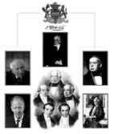Эту технологию подчинения правительств и государств хорошо описал Натан Ротшильд (1777-1836): «Кто контролирует выпуск денег, контролирует правительство». «Не важно, какая марионетка сидит на троне в Британской империи. Человек, который контролирует выпуск денег в Британии, контролирует Британскую империю, я и контролирую выпуск денег в Британии».
Поэтому, не случайно, именно барону Вальтеру Ротшильду была в 1917 году адресована Балфурская декларация, где была выражена поддержка со стороны британских правительственных кругов идеи создания сионистского государства в Палестине.
Ротшильды играли ключевую роль в формировании и укреплении сионистского движения и создании государства Израиль. Именно они в 1897 году были среди главных организаторов Первого съезда сионистов.
Влияние Ротшильдов было столь велико, что один французский комментатор в XIX веке констатировал: «Есть только одна власть в Европе, и это Ротшильды».
Ротшильды – один из крупных хазарских династических кланов, связанных с масонством (иллюминатами), и имеющих целью создание нового мирового порядка.
Ради этой своей цели они шли и идут на любые преступления, включая организацию самых кровопролитных революций и мировых войн, где главной мишенью неизменно была Россия.
Сразу же после революции в России, которая финансировалась хазарскими банкирами, Chase Bank Ротшильдов/Рокфеллеров захватил власть над централизованным капиталом и над российским государством.
Кристиан Раковский (Хаим Рейковер), бывший кровавый диктатор Советской Украины, личный друг Троцкого один из основателей коммунистического интернационала, член ложи иллюминатов и бывший советский посол в Париже, на допросе в 1938 году сделал шокирующие заявления относительно революции и планов Ротшильдов. Материалы допроса Раковского были впоследствии опубликованы в книге «Красная симфония». Он подтвердил, что иллюминаты Ротшильды планировали использовать коммунизм для установления мировой диктатуры сверхбогачей.
В 1937 году в США была написана и издана небольшая книжка «Троцкий и евреи за русской революцией» («Trotsky and the Jews behind the Russian revolution» переиздание 1980 г. USA, Christian Defense League. Пер. Джона Галепено. М., 2003). Ее автор, русский человек, эмигрант из России, бывший комиссар гражданской войны, пишет: «Империя Ротшильдов, включающая в себя Англию и Францию, давно мечтала присоединить к себе неисчислимые природные богатства России. Демократическое правительство Керенского, которого поддерживал Ротшильд, создавало благоприятные условия для преобладания сионистов… Именно Ротшильдовская группировка сионистов сверг ла царя в 1917 году…».
«Если бы гражданская война была результатом борьбы политических партий, она бы быстро закончилась. И белые, и красные быстро бы выдохлись. То, что происходило на самом деле, это была война между мафией Ротшильда и мафией Шиффа, которые постоянно стимулировали эту войну финансами. Это объясняет, почему гражданская война длилась так долго. Это объясняет, почему гражданская война была намного более жестокой, чем только что закончившаяся Мировая война. Это было потому, что на самом деле, это была не война, а целенаправленное истребление народов с целью максимальной депопуляции, обезлюдивания России. Максимальная депопуляция открывала финансовым королям дорогу к использованию для своей выгоды природных богатств России».
Кстати, хазары все время поносили Сталина за репрессии. Но вот, что говорит Раковский: «Таким образом, после смерти Ленина, когда Троцкий остался наедине со Сталиным, который начал лихорадочную деятельность, то мы уже предвидели своё поражение в Центральном Комитете. Мы должны были быстро соображать в этой ситуации, и мы решили прикинуться союзниками Сталина, стать сталинистами, ещё большими, чем он сам, начать перегибать его палку и тем самым саботировать его политику. Всё остальное вы знаете сами».
А что это за «лихорадочную деятельность» начал Сталин, о которой сказал Раковский? Первое, что сделал Сталин – он обратился ко всем трудящимся страны посылать в партию передовых честных людей. Это обеспечило приток новых молодых сил, не зараженных троцкизмом. Из общего числа коммунистов – 735 тысяч в 1924 г. – 241,5 тысячи были представителями этого призыва. И еще Сталин выдвинул лозунг – «мы русские революционеры». Он обратился к народу: «Мы отстали от передовых стран на 50-100 лет. Мы должны пробежать это расстояние в десять лет. Либо мы сделаем это, либо нас сомнут».
Финансируемая Ротшильдами война под названием «Мировая революция» Троцкого продолжилась в Мировой войне Гитлера.
Гитлера тоже финансировали Ротшильды. Они совершили преступления против своего народа, принесли в жертву жизни многих евреев, чтобы использовать это как предлог для образования государства Израиль.
Многие исторические факты свидетельствуют о том, что все перевороты и войны начиная с конца 18 века, были инспирированы Ротшильдами.
Мировое правительство невидимой Хазарии возглавляют именно они – династия Ротшильдов. Они несут в себе хазарскую доминирующую черту – жажду воевать и убивать. Христос обличил эту страсть духовных лидеров зарождавшейся уже тогда религии антихриста: «Ваш отец диавол, и вы хотите исполнять похоти отца вашего; он был человекоубийца от начала и не устоял в истине, ибо нет в нем истины; когда говорит он ложь, говорит свое, ибо он лжец и отец лжи» (Ин. 8, 44).
Организованная Ротшильдами и мировым правительством Первая мировая война привела к 10 млн. убитых и 20 млн. раненых. Революция в России стоила жизни еще 30 млн. Это только в период пятилетки Троцкого-Ленина у власти, то есть до 1924 года.
Первая мировая война принесла Эдварду Ротшильду и хазарскому мировому правительству более 100 миллиардов долларов. И потом им захотелось это повторить, и они привели к власти Гитлера и устроили Вторую мировую войну, которая стоила новых десятков миллионов убитых.
И та и другая мировые войны были направлены, прежде всего, на достижение религиозных целей. В результате Первой мировой войны была уничтожена православная монархическая государственность и русский царь, который был против создания сионистского государства в Палестине. В результате Второй мировой войны – это государство, созданное на основе не этнической, а религиозной идентичности хазар и их духовного вождя колена Данова, все же было учреждено.
Сейчас Ротшильды и другие банкиры организовали финансовый кризис и поставили на повестку дня Третью мировую войну, которая должна уничтожить традиционную национальную государственность, вследствие какой-нибудь провокации разрушить мечеть аль Акса, построить Третий храм и, измотав человечество войною вконец, на обломках национальной государственности создать Глобальный каганат, привести к власти антихриста, выдав его за «главного миротворца» и царя всех народов.
К высшим чинам армии антихриста, в первую очередь, относятся финансовые магнаты Ротшильды с их штаб-квартирой в Лондоне – основатели и вдохновители всемирной организации хазар-сионистов, одержимых страстью к глобальному господству и богатству, и способных ради этого на любые преступления.
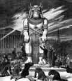Генрих Гейне сказал: «Деньги – бог нашего времени, а Ротшильд их пророк».
Ключевую роль в организации глобального распада играют Ротшильды и их агенты Рокфеллеры, использующие в качестве своего оружия государственного уничтожения Федеральную резервную систему.
Известно, что идеологом закона о федеральной резервной системе в США был именно барон Альфред Ротшильд из Лондона.
Эндрю Хичкок («History of the Money Changers», 2006) и Юстас Малинс («Secrets of the Federal Reserve», 1991) показывают, что Федеральный резервный банк является абсолютным лидером мировых финансов и причастен к организации преступлений мирового масштаба, включая революции и войны.
Хичкок подчеркивает, что «главной целью Федеральной резервной системы является построение мирового государства, корпоративного Нового мирового порядка». Но ведь это и есть цель Невидимой Хазарии.
Напомню слова Натана Ротшильда: «Не важно, какая марионетка сидит на троне в Британской империи. Человек, который контролирует выпуск денег в Британии, контролирует Британскую империю, я и контролирую выпуск денег в Британии».
Сейчас Ротшильды контролируют деньги в США и потому контролируют эту страну.
В 1787 году Томас Джеферсон сказал: «Если американский народ когда-нибудь разрешит контролировать выпуск их денег сначала через инфляцию, а потом через дефляцию, банки и корпорации, которые вырастут вокруг них, будут лишать народ всей собственности до тех пор, пока их дети не проснутся бездомными на континенте, завоеванном их отцами». Все точно, как будто сказано только вчера.
В 1907 году банкиры решили добиться именно этого. Ротшильд и Якоб Шифф, глава Kuhn, Loeb and Co., выступая в нью-йоркской Торговой палате, заявили практически ультиматум, суть которого сводилась к следующему: «До тех пор, пока у нас не будет Центрального банка с адекватным контролем кредитных ресурсов, эта страна будет переживать самый тяжелый и далеко идущий по своим последствиям финансовый кризис в ее истории».
И, действительно, кризис начался. Агент Ротшильдов J. P. Morgan и его подельники в результате тайного сговора обвалили фондовый рынок. И Конгресс пошел навстречу Моргану. Он делал деньги из ничего и Конгресс разрешал это делать. Он выпустил $200 000 000 и стал героем. Затем был подписан закон, учреждающий Национальную валютную комиссию. Эта комиссия должна была изучить банковскую проблему и дать рекомендации Конгрессу. Естественно, в комиссию вошел J. P. Morgan и его подельники. Председателем комиссии стал сенатор Нельсон Олдридж, дедушка по материнской линии вице-президента Нельсона Рокфеллера и Дэвида Рокфеллера, который станет главой Совета по международным отношениям.
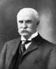Сенатор Олдридж тут же предпринял путешествие в Европу, где он провел консультации с частными центральными банками Англии, Франции и Германии, то есть с Ротшильдом, Ротшильдом и Ротшильдом.
После возвращения Олдриджа из Европы произошла встреча банкиров, на которой, кроме Олдриджа, был еще и Пол Варбург, получавший зарплату от фирмы Kuhn, Loeb amp; Company за то, чтобы он лоббировал создание частного центрального банка в Америке. Присутствовал также Якоб Шифф.
Семейства Ротшильдов, Варбургов и Шиффов переплелись в результате брачных союзов, стали практически одной семьей и составили то, что называется теперь иллюминаты. Их цель – господство на планете через диктатуру мирового правительства, глобальную армию и чипированное население.
После избрания в 1913 году Вудро Вильсона президентом США Морган, Пол Варбург, Бернард Барух и другие предложили новый план, который Варбург назвал Федеральная Резервная Система.
И руководство Демократической партии выступило в поддержку этого плана и за принятие соответствующего закона, который бы учреждал создание того, что до сих пор носит название Федеральная Резервная Система.
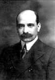Прокурор Альфред Крозиер тогда сказал по этому поводу: «Закон передает банкирам исключительно опасную власть – делать деньги».
В 1911 году, то есть до избрания Вудро Вильсона президентом, агент Ротшильда и близкий советник Вильсона Эдвард Мэндел Хаус написал книгу, которая называлась «Филип Дрю – администратор». По форме это был роман, но на самом деле, детальный план будущего правительства США, которое должно «установить социализм в таком виде, как об этом мечтал Карл Маркс».
Шиффы, Варбурги, Каны, Рокфеллеры и Морганы сделали Хауса своим доверенным лицом. Одним из институтов, которые описаны Хаусом, была как раз Федеральная резервная система. Хаус был приставлен Ротшильдами к Вильсону в качестве советника. И, таким образом, реальная власть в Америке принадлежала вовсе не президенту США.
Они делают это до сих пор – приставляют к президентам в качестве советников своих агентов. Это их технология. Все близкие советники руководителей таких стран, как Франция, Великобритания и США были либо из семьи Ротшильдов, либо контролировались ими.
Закон о Федеральной резервной системе был подписан 22 декабря 1913 года. Момент для этого был выбран удачный, когда сенаторы уехали на рождественские каникулы. Более того, сенаторам было обещано руководством, что во время каникул закон не будет вынесен на голосование. Впоследствии, в связи с тем, что принятие произошло во время рождественских каникул, это событие назвали «избиением младенцев».
Юстас Малинс пишет: «Вудро Вильсон подписал Закон о Федеральной системе 23 декабря 1913 года. История доказала, что в этот день Конституция перестала быть руководящим законом американского народа, и наши свободы были переданы небольшой группе международных банкиров».
США как государство и американский народ, лишившись своих свобод в результате заговора хазарских банкиров, оказались заложниками этой группы, ориентированной на уничтожение национальной государственности путем провоцирования войн, революций и кризисов.
В свое время Комитет по делам банков и жилищным проблемам Палаты представителей подготовил доклад, который назывался «Директора Федеральной резервной системы: исследование корпоративного и банковского влияния». Как следует из этого доклада, верхушка иерархической структуры руководства Федерального резервного банка выглядит следующим образом.
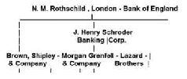Владельцами акций Федерального резервного банка в Нью-Йорке являются люди, которые инспирировали и провоцировали самые важные политические и экономические события, начиная с 1914 года, и которым принадлежат крупнейшие банки. Это Ротшильды – Rothschild Bank (Лондон, Берлин, Париж), Братья Лазар – Lazard Brothers (Париж), Израэль Мозес Сеиф – Israel Moses Seif Banks (Италия), Шиффы Kuhn Loeb Bank (Германия, Нью-Йорк), Варбурги – Warburg Bank (Амстердам, Гамбург), Братья Леман – Lehman Brothers (Нью-Йорк), Goldman Sachs (Нью-Йорк), Рокфеллеры (Нью-Йорк) и Морганы (Нью-Йорк).
То есть, основная часть тех, кто владеет ФРС – это иностранцы. И именно они решают судьбы. Федеральная резервная корпорация печатает деньги и дает их в кредит американскому правительству с выгодой для себя.
Интересы этой корпорации заложены в основу подавляющего большинства американских законов и нормативных правовых актов, касающихся практически всех аспектов жизни общества. Таким образом, под контролем Федеральной резервной системы оказались все сферы жизнедеятельности страны, включая ее руководство, что дало основания назвать ФРС ГОСУДАРСТВОМ. Таким образом, считается, что законы в США имеют частный характер. И все те, кто их официально пишет – Институт Федерального права, всевозможные профессора-юристы – являются не кем иным, как агентами интересов зарубежных банков. В результате образовалась олигархия юристов и банкиров, которые контролируют три ветви власти в Америке. В результате была упразднена 13-я поправка к Конституции США, в первоначальном тексте которой говорится: «Если гражданин Соединенных Штатов примет, попытается получить или сохранить любой аристократический титул или почетное звание, или без согласия Конгресса примет или попытается сохранить любой подарок, официальную пенсию, должность, пособие или какое-либо иное вознаграждение от любого императора, короля, принца или иностранной державы, такой человек перестает считаться гражданином Соединенных Штатов и лишается права занимать любую доверительную должность».
Как следствие нарушения Конституции в Соединенных Штатах появилось то, что было названо «теневым правительством», которое, будучи наднациональным и антинациональным по своей сути, стало контролировать государственную власть и осуществлять руководство страной.
Так в Соединенных Штатах сложилось мнение, которое выражено в следующей цитате: «Америка стала государством-банкротом, которое полностью перешло в собственность к кредиторам. Они владеют Конгрессом, они владеют исполнительной властью, они владеют властью судебной. Им принадлежат все структуры государственного управления. У вас есть свидетельство о рождении? Оно тоже принадлежит им».
По сути, в США сформировалась хазарская модель управления страной – дирархия – двоевластие. Это означает, что существует номинальный центр управления – правительство США (каган), и существует реальный центр управления (бек) – руководство Невидимой Хазарии (мировое правительство Глобального каганата). Но наличие двух центров управления – это есть признак сети, которая является отходом от дающей стабильность государственнической модели, построенной на иерархии. Но поскольку сеть априори борется против иерархии, то дирархическая (полицентрическая) модель закладывает динамит под американскую и в целом Западную государственность. Но именно этого хазарам и нужно – уничтожить национальную государственность и на ее руинах воздвигнуть Глобальный каганат антихриста.
Это символичное, очень образное слово «руины» вошло в название посвященной финансовому кризису серии статей в британской «Guardian». Эта серия названа кратко и емко – «Дорога к руинам». Под этой рубрикой 26 января 2009 «Guardian» опубликовала статью (Julia Finch «Twenty-five people at the heart of the meltdown…»), где названы двадцать пять человек, виновных в финансовой катастрофе. В публикации, в частности, говорится: «Самый тяжелый экономический кризис со времен Великой депрессии не является естественным, объективным явлением, но рукотворной, искусственно созданной катастрофой…» И дальше называются имена тех, кто все это спровоцировал.
И тут мы находим все тех же банкиров и все те же банки, исторически причастные ко всяким мерзостям и трагедиям. На первом месте, как и следовало ожидать, стоит Федеральная резервная система (читай Ротшильды). На втором месте – Bank of England (это тоже Ротшильды).
Об этом Банке пишут, что слово «корона» в Англии ассоциируется вовсе не с королевской семьей, а с Bank of England (E.C. Knuth «The Empire of the City»). «Международная финансовая олигархия использует аллегорию «корона» как символ власти и имеет свою штаб-квартиру в старом Лондоне… – гигантский Bank of England – учреждение, находящееся в частной собственности, не подконтрольное британскому парламенту и являющееся, в действительности, суверенной мировой державой». И дальше отмечается, что владеющие банком Ротшильды «продолжают влиять на мировую экономику. Известно, что они стоят за процессом объединения европейских стран в одно политическое целое, что является очередным шагом к созданию мирового правительства, управляющего объединенным миром». «Британский парламент является рабом этой невидимой и неслышимой силы. Видимые и слышимые лидеры являются всего лишь марионетками, которые танцуют по команде… Ротшильды через Bank of England управляют большей частью мира».
На третьем месте среди организаторов нынешнего финансового кризиса Guardian помещает входящий в мировую финансовую олигархию банк Goldman Sachs. В числе виноватых мы находим также связанных с ФРС Lehman Brothers.
В статье называются также различные фамилии такие, как Клинтон, Буш-младший, британский премьер-министр Гордон Браун, спекулянт Сорос, бывший глава ФРС Алан Гринспен и другие. Но очевидно, что они являются либо марионетками «невидимой и неслышимой силы» Хазарского каганата, либо его частью.
Армия банкиров в своей войне за власть использовала то, что миллиардер Ворен Бафет назвал «финансовое оружие массового уничтожения».
Как оказалось, финансовое оружие массового уничтожения связано с другим ОМУ – наркотическим. Все закономерно: одни преступные деньги связаны с другими такими же преступными. В конце января 2009 года Исполнительный директор Управления ООН по наркотикам и преступности (UNODC) Антонио Мариа Коста сказал в интервью австрийскому еженедельнику «Профиль», что деньги от наркотиков очень часто становятся единственным доступным капиталом в период, когда кризис выходит из-под контроля. По словам Коста: «Во многих случаях деньги, поступающие от наркотиков, являются единственным на данном этапе ликвидным инвестиционным капиталом. Во второй половине 2008 года ликвидность была главной проблемой банковской системы, и, таким образом, ликвидный капитал стал важным фактором».
Управления ООН по наркотикам и преступности обнаружило доказательства того, что «межбанковские кредиты финансировались за счет денег, источником которых была торговля наркотиками и другие преступные виды деятельности». «Есть свидетельства того, что банки спасают положение именно таким образом», – сказал Коста.
При этом Коста отказался назвать страны или банки, которые получали деньги от наркотрафика и не указал, какие суммы были вовлечены в эти операции (http://www. iht.com/articles/reuters/2009/01/25/europe/OUKWD-UK-FINANCIAL-UN-DRUGS.php).
Ну и какая же это борьба с наркотиками и преступностью, если не называют имена и адреса преступников. А, если не называют, значит покрывают. А, если покрывают, значит соучаствуют. А, если боятся называть, значит речь идет об известных и влиятельных банках, которые контролируют процессы. А таких банков совсем немного. Они как раз и перечислены в статье «Guardian». Правильно у них называется рубрика, посвященная кризису – «Дорога к руинам» – к руинам человеческой морали, к руинам законности и правопорядка, а через это к руинам государственности. Кризис нужен был еще и для того, чтобы отмыть преступные деньги, полученные от наркотрафика из Афганистана, из других мест и используемые Невидимой Хазарией на ведение глобальной преступной войны, в огне которой должен материализоваться Глобальный каганат. Войны, которую ведут США, а точнее, эксплуатируемый хазарами американский народ, который сейчас брошен в жертву идолам колена Данова.
В статье «Guardian» приводятся слова профессора Н. Раубини из Нью-Йоркского университета, предупреждавшем еще в 2006 году о грядущем финансовом кризисе, который признал, что вся банковская система США является сейчас банкротом. Прекрасный шанс совершать сделки и покупать все по низкой цене. Как сказал Ворен Бафет: «Настало великое время, когда можно купить кусочек американского будущего по дешевке».
Под влиянием банковского подхода к государству и обществу в США произошло удивительное явление. Суды стали признавать только два класса людей – должники и кредиторы. Это ли не начало рабства, пролог к нему?
Но точно так же сейчас разделен весь мир – с одной стороны, государства-должники, а с другой стороны – хазарские банки-кредиторы, которыми владеют банкиры из колена Данова. И эти банки держат государства за горло под угрозой банкротства и великой депрессии, и государства вынуждены идти у них на поводу. Но эта власть основана на шантаже. Она материально никак не обеспечена. За ней стоят ложь и обман. Она основана не на реальных деньгах, а на захваченном банкирами праве на манипулирование и управление ими. Существует международный хазарский банк-кредитор, который с помощью своих агентов внутри какой-то страны и провокаций доводит ситуацию в ней до финансового кризиса и нарастания революционных настроений. Затем власть в этой стране, чтобы остаться у власти, обращается к банкирам, и они прекращают организованные их же агентами провокации и улаживают дельце. Власть, несмотря на то, что она попала в полную зависимость от банка, довольна. Она осталась у власти. Но наступает время, когда банк требует вернуть кредит. А заплатить нечем. Тогда власть расплачиваются натурой – суверенитетом и государственностью, что, в конечном итоге, приводит к крушению государственности. Но уничтожение государственности – и есть самая главная цель банкиров колена Данова, главное условие создания Глобального каганата с антихристом во главе. Именно по этой причине России, как самодостаточной стране, нужно выйти из сценария Нового мирового порядка, где все роли написаны коленом Дановым в качестве режиссера. России нужно предложить миру свой противостоящий хазарскому сценарий развития, спасительный для нее и для национальных государств, способный вывести их из кабалы банкиров. В основу этого проекта должны быть положены идеи нашей страны как воплощения Третьего Рима – Нового Иерусалима. Святая Русь должна выйти и вывести других из распада в созидание.
Ротшильды – это ключевые игроки нынешнего заговора банкиров невидимой Хазарии. Считается, что Ротшильды являются локомотивом поезда, идущего в Россию через Балканы, поезда, который везет армии НАТО для борьбы против России.
Такой же сценарий был разыгран ими во Вторую мировую войну. Бывшая Югославия – это фаза в крестовом походе империи Ротшильдов и других подобных им хазарских кланов на восток, против России. Балканы и Сербия оказались на пути этого зверя.
Важной компанией Ротшильдов в этом регионе является Карлайл Груп (Carlyle Group). Запомните это название, мы к нему еще вернемся.
Ротшильды контролируют и используют в качестве своего инструмента Международную кризисную группу (the International Crisis Group), возглавляемую главным агентом Ротшильдов и патологическим русофобом Джорджем Соросом. Именно он был одним из главных организаторов антироссийских революций в Югославии, Грузии и на Украине.
Карлайл Груп и Международная кризисная группа в течение многих лет поддерживали сепаратистов в Косово и проводили агрессивную антисербскую политику. Косово представляет большой интерес для Ротшильдов, потому что это, как его называют, «сербский Кувейт» с огромными запасами свинца, цинка, золота, угля. Ротшильды вложили в этот регион большие инвестиции. Поэтому отделение Косова было очень важно для интересов Ротшильдов.
Для реализации своих разрушительных целей в интересах строительства Глобального каганата Ротшильды создали систему неправительственных организаций и фондов, среди которых особое место принадлежит Фонду глобальной безопасности.
Фонд глобальной безопасности это гигантский криминальный фонд иллюминатов. Его капитал составляет 65 триллионов долларов. Этот фонд был основан для реализации преступных целей – коррумпирования правительств, убийств, спонсирования террористических и преступных организаций и т.д.
Эшли Моут из Евросоюза во время своего выступления на одном из форумов этой организации задал следующий вопрос относительно деятельности этого фонда: «Господин председатель, хочу обратить ваше внимание на Фонд глобальной безопасности (Global Security Fund), учрежденный в начале 1990-х под руководством Якоба Ротшильда. Это находящийся в Брюсселе фонд, и это необычный фонд. Он не занимается торговлей, он нигде не зарегистрирован и у него абсолютно специфическая цель. Он используется для геополитического конструирования под руководством разведывательных служб. Раньше я уже задавал вопрос о возможной вовлеченности разведывательных ресурсов Евросоюза в управление фондами, предназначенными для преступных целей, взяток и подкупа и имеющих счета в оффшорных зонах. И я не получил ответа. К этому вопросу я добавляю еще один: «Каковы связи Евросоюза и Фонда глобальной безопасности и каковы его отношения с институтами Евросоюза?»
Мистер Моут так и не получил ответа на свой вопрос. Сразу же после этого он попал в список первой десятки лиц, подлежащих ликвидации.
Сейчас позиции Ротшильдов очень сильны в Европе, Азии, особенно в Китае, Индии, а также в Бразилии. Они вовлечены в крупные сделки в США, связанные с реструктуризацией по причине банкротства. Нынешний спровоцированный хазарскими банкирами финансовый кризис резко увеличил эти банкротства, а следовательно, и потребности в такого рода услугах. Это тот случай, когда банкротство делает деньги.
Эти банкиры – преступники, совершившие и планирующие совершить глобальные преступления в отношении человечества. Давайте еще раз посмотрим, откуда их корни? Да, геополитически они из Хазарии. Но духовно, чье преступление они продолжают?
В Евангелии от Иоанна (12, 1-6) написано: «За шесть дней до Пасхи пришел Иисус в Вифанию, где был Лазарь умерший, которого Он воскресил из мертвых. Там приготовили Ему вечерю, и Марфа служила, и Лазарь был одним из возлежавших с Ним. Мария же, взяв фунт нардового чистого драгоценного мира, помазала ноги Иисуса и отерла волосами своими ноги Его; и дом наполнился благоуханием от мира. Тогда один из учеников Его, Иуда Симонов Искариот, который хотел предать Его, сказал: Для чего бы не продать это миро за триста динариев и не раздать нищим? Сказал же он это не потому, чтобы заботился о нищих, но потому что был вор. Он имел при себе денежный ящик и носил, что туда опускали».
Он мог взять столько, сколько хотел. Но ему всего этого было мало. И, чтобы получить еще 30 серебряников, он предал Христа. «Дороже больших денег для вора и сребролюбца только… – очень большие деньги».
Иуда, напомню, был из колена Данова, которое впоследствии стало духовным руководителем Хазарии, сначала видимой, а затем невидимой. Колено Даново поклонялось и продолжает поклоняться идолу – золотому тельцу. Смешавшись с хазарами, оно утратило свою этничность, но сохранило свой дух измены, воровства, предательства и христопродавства. Теперь в лице банкиров дух колена Данова предает и обворовывает все человечество, толкает его на путь поклонения золотому тельцу. Спровоцированный банкирами финансовый кризис нацелен на то, чтобы люди в поисках хлеба насущного, перестали бы думать о Боге, а стали бы думать только о материальном – о деньгах. О том, как их заработать любыми путями, даже ценой преступления, ценой предательства Христа, чтобы найти себе пропитание. Именно на этот путь толкают банкиры-данитяне человечество. Именно в этом духовная суть нынешнего финансового кризиса и цель хазарских банкиров – превратить всех в Иуд из колена Данова. Иуда предал Спасителя по прямому внушению диавола: «Вошел же сатана в Иуду, прозванного Искариотом, одного из числа Двенадцати, и он пошел, и говорил с первосвященниками и начальниками, как Его предать им» (Лк. 22, 3-4).
Но, как известно, это путь саморазрушительный, самоубийственный – путь поклонения антихристу, путь смерти.
Это дает повод для разного рода пессимистических прогнозов относительно будущего США.
И еще есть одна параллель. Иуда мог воспользоваться украденными из апостольской общины деньгами только при одном условии: если община прекратит свое существование. И он добился своего. После того, как Христос был взят в плен, практически все Его ученики в страхе разбежались.
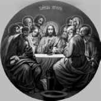Банкиры-данитяне, принявшие от Иуды духовную эстафету, хотят завладеть богатством США, но понимают, что это возможно только, если это государство прекратит свое существование, только, если все государства прекратят свое существование.
Как пишут богословы, самой большой страстью Иуды была любовь к богатству – сребролюбие. А самым заветным желанием, возможно – должность министра финансов в царстве Мессии, где он смог бы воровать такие суммы, которые самым удачливым ворам мира даже не снились. Но Христос не хотел становиться религиозным и политическим лидером Израиля. Он вообще уклонялся от прямого конфликта с властями. Мысль о том, что Спаситель откажется от Крестного Подвига, соблазнившись земным царством, действительно – сатанинская. После распятия Христа самой страшной потерей для Иуды, наверное, было то несбывшееся богатство, которое Иуда уже считал своим. В мечтах он уже распределял финансовые потоки, идущие в казну Мессии со всех концов света. Спаситель не стал бороться за земную власть.
Хазарские банкиры из колена Данова вступают в прямой конфликт с властями, желая захватить власть в земном глобальном царстве. Для них государство – это враг. Они хотят с помощью спровоцированного ими финансового краха в государствах добиться краха национальной государственности, чтобы сформировать свое министерство финансов в царстве антихриста, которого они для осуществления этой своей заветной мечты приведут к власти как религиозного и политического лидера.
Конец хазарских банкиров будет таким же, как и конец сребролюбца и христопродавца Иуды, о предательстве которого святитель Иоанн Златоуст написал: «Заметьте это вы, сребролюбцы, и подумайте, что стало с предателем? Как он и денег лишился, и согрешил, и душу погубил свою? Таково тиранство сребролюбия! Ни серебром не воспользовался, ни жизнию настоящею, ни жизнию будущею, но… удавился».
Проблема России как государства заключается в том, что ей противостоит империя, которая решает, прежде всего, религиозные задачи и преследует исключительно религиозные цели, и именно им подчинена вся их политика и экономика, все имперское строительство. Невидимая Хазария материализовывается через духовную консолидацию. Наша же власть делает все точно наоборот. Суетится где-то в политике, в экономике. И эти усилия носят крайне непоследовательный, во многом аварийный характер, свидетельствующий об отсутствии большой стратегии элементарного государственного (не говорю имперского) строительства. Причем все идет по биологическому принципу: стимул – реакция. Нередко даже, если и стимул есть – нет реакции. Не знаю, может быть, просто народ не информируют об этих реакциях. Но, во всяком случае, народ видит то, что на поверхности – море стимулов и ноль реакций. Нет, ну народ, конечно, ставят иногда в известность о чем-то хорошем. Например, о том, что у нас образовалась куча денег, правда не в результате грамотной и эффективной структурной экономической политики, а в результате того, что мы просто накачали нефти, которая стоила очень дорого. Мы это, по сути, национальное богатство кинули за границу, уподобившись Буратино, который закопал свои денежки в стране дураков. На них нашлись, конечно же, лиса Алиса и кот Базилио. И денежек не стало, а вместе с этим они еще и цены на нефть резко понизили, и мы оказались в трубе. Так вот про то, что деньги есть, народу говорят, а что их не стало, ему не сказали, он просто сам догадался, вернее, почувствовал на себе.
Сейчас начался кризис. Этот кризис может развалить общество и страну. На это хазары делают ставку. Но повторю, что они достигают фантастических успехов в своих злодеяниях, потому что ориентированы на религиозные цели, жестко подчиняют им политику и экономику и через это добиваются имперской консолидации и материализации мощного Глобального каганата. Мы же вообще про наши священные религиозные цели забыли и копошимся в каких-то бессистемных политических и экономических мерах и полумерах, во многом корыстного и коррупционного характера. Мы уходим в частности, замечаем только деревья, а леса-то не видим.
В отрыве от системо- и смыслообразующих религиозных целей, мы утратили возможности имперской консолидации. И потому вне этой связующей все и всех скрепы мы неизбежно потеряем страну, если вовремя не одумаемся. Время не ждет. Ситуация требует экстренных мер во всех сферах нашей государственной жизни с опорой на религиозное осмысление происходящего. В положении, в котором оказалась наша Святая Русь, у власти должны быть те, кто в любой момент готов отдать жизнь за Христа и служение Отечеству. И очень важно, чтобы наш народ в подавляющем большинстве начал мыслить религиозными категориями, понять, что только в вере сейчас спасение каждого человека, семьи и страны.
И главная роль здесь принадлежит Церкви. Проповеди в храмах и не в храмах должны читаться не об абстрактном спасении, что граничит с прекраснодушием, а о спасении в наше конкретное время, что должно граничить с мобилизацией.
Наш противник продумывает все до мелочей наперед. Хазария еще не материализовалась, но уже разработан ее паспорт.
Уже и сайт в интернете создан под красноречивым названием «Мировое правительство граждан мира» (World Government of World Citizens). Там вывешен образец Паспорта мира. В статье, посвященной этому документу, говорится, что мандат на его выпуск дает статья 13(2) Всеобщей Декларации прав человека, в которой говорится, что «каждый имеет право покинуть любую страну, включая свою собственную и вернуться в свою страну».
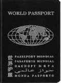Паспорт мира, как говорится на сайте, это 30-страничный документ, читаемый только через машину. Значит это связано с биометрической информацией, выводящей на глобальный контроль. Информация содержится на английском, испанском, французском, русском, арабском и китайском языках, а также на масонском эсперанто. То бишь, и мы попали в граждане мира. А почему? Да потому, что в заграницы у нас ездит руководство и обеспеченная публика, в руках которой страна Россия, и персональные биометрические данные этой элиты и маршруты ее передвижения нужно отслеживать. А для чего? Ну, чтобы через эти биометрические данные привлечь кого надо к сотрудничеству, а непослушных просто убрать. В этом паспорте среди обязательных данных нужно указывать в обязательном порядке имя вашего лечащего врача.
Паспорт мира представляет реализацию права «путешествовать по планете Земля». Это, оказывается, есть «знак освобождения человеческого существа». А вот сам факт «принятия паспорта национального государства – это знак человека-раба, невольника и подвластного». Короче, «свободу Юрию Деточкину». Если, кто не хочет быть рабом, отказывайся от своей страны, потому что в ней ты невольник, и колеси до одури по миру. И, вообще, зачем ее защищать в грядущей войне, беги в «свободный» Каганат.
А дальше – больше. «Уже само по себе право на свободу передвижения есть вызов системе суверенитета национальных государств». Из чего гражданин мира делает вывод о том, что ни суверенитет, ни государства, ни вся эта международная система государственности вообще не нужны. Главное – право на кочевничество. Мы плавно съезжаем в коммунизм Маркса, осуществляется его и Троцкого заветная мечта – пролетарий не имеет Отечества, и пролетарии всех стран, то есть граждане мира, соединяйтесь. «Коммунизм – светлое будущее всего человечества». Не в бровь, а, как говорится, в глаз.
Но пока, они вынуждены сделать реверанс в сторону ненавистной им государственности, и пишут, что все же паспорт мира должен соответствовать требованиям, предъявляемым к соответствующим документам в национальных государствах. Сейчас этот паспорт признан 174 государствами мира, включая и Россию. Как-то это признание у нас тихо и незаметно прошло. Никто у граждан не спросил, хотят ли они, чтобы их выпихивали из своей страны и запихивали как чурку в граждане Глобального каганата. Ну, наверное, как всегда, забыли. Здесь бы Церковь наша должна была сказать свое веское слово, но ее тоже, видно, не поставили в известность.
«Короче, – написано в заключении статьи, – Паспорт мира представляет собой объединенный мир, в котором мы живем». А, зачем нам нужен этот объединенный мир с Мировым правительством, которое выдает Паспорта мира для граждан мира – об этом там не говорится. Ну, видимо, потому что те, кто относит себя к гражданам мира, это знают, а остальным не обязательно. А почему? Потому что они рабы. Ведь из того, что написано на сайте Мирового правительства, вытекает, что кто остается с национальным государственным паспортом, тот раб. Таким образом, человечество поделили на граждан мира, которые готовы предать свое Отечество и войти в Глобальный каганат антихриста, и тех, кто остается верен Отечеству и не хочет под власть антихриста, коих и отнесли к рабам. Вот мы и вывели тот режим, который будет в Глобальном каганате. Это – рабовладельческий строй. Только рабство тут особенное. Оно не является, как в древние времена, простой физической несвободой, из которой раб не может вырваться физически. Это несвобода изощренного свойства – духовная. Она по выбору человека, которому говорят: «Ты полностью свободен и можешь пользоваться всеми преимуществами этой свободы, только стань гражданином мира. Но, если ты отказываешься, то ты автоматически превращаешься в раба со всеми вытекающими репрессивными последствиями для твоего рабского существования».
Вот и получается, что Новый мировой порядок – это глобальное духовное рабство, куда загоняют человечество, и главным рабовладельцем там будет антихрист.
Также на этом сайте среди «документов Мирового правительства» (я это не пишу от себя, они так и называются – «документы Мирового правительства») – Свидетельство о браке граждан мира. Надо понимать, свобода передвижения по миру сопровождается свободой заключения брака в местах передвижения, равно как и выхода из него по причине отъезда в другое место кочевничества.
Вот такая незамысловатая философия запихивания в граждане мира и перехода к новому мировому порядку.
Не могу не привести цитату с сайта Мирового правительства граждан мира: «Мы живем сейчас в единой глобальной цивилизации. Наша планета впервые за длинную историю человечества в течение нескольких десятков лет оказалась накрытой единой цивилизацией» (Вацлав Гавел)
Об этом же и Ротшильды толкуют.
Ротшильды, не скрывая, говорят о своих глобальных планах. Во время своего визита в Дубай осенью 2008 года барон Дэвид де Ротшильд заявил репортеру, что «он разделяет мнение большинства народа, что сейчас мы живем в новом мировом порядке. По его мнению, банки снизят долю долгового финансирования, и будет новая форма глобальной власти» (Rupert Wright «The first barons of banking», The National, November 06. 2008).
И еще он признался, почему его бизнес так хорошо идет, несмотря ни на что: «Мы более проницательны, чем другие». Может быть, эта повышенная проницательность объясняется просто тем, что они сами устраивают провокации и кризисы, заранее зная, какие прибыли они от этого получат.
Делая реверанс в сторону мусульман в ОАЕ, Ротшильд говорит: «Конечно, нет сомнений, что Ротшильды это еврейский клан, но мы горды быть в этом регионе».
Лукавит барон относительно своих добрых намерений. Ведь, известно, что Ротшильды принадлежат к так называемому Совету тринадцати ордена Иллюминатов. В этот Совет входят наследственные сатанисты, имеющие в качестве одной из своих главных целей доведение человечества до нищеты и дальнейшее его закабаление, превращение в рабов. И этот финансовый кризис, который еще называют «кредитным кризисом» является началом или частью реализации этого плана.
Но это их хазарская схема. А у нас расклад другой. Ты либо с Богом, и тогда ты по-настоящему свободен в надежде Жизни Вечной, либо ты с тем, кто против Бога борется, и тогда ты, действительно, раб темных сил, обрекающих тебя на смерть.
Я пишу эту книгу и привожу факты в надежде на то, что главные чувства, которые они должны пробудить в душе – это то, что в этой драматической ситуации, когда враги вокруг, что называется, обложили и ты понимаешь, что опасность наступает и кольцо сжимается все больше и больше, единственной надеждой на спасение является только Всемогущий Бог. Он и только Он, как это уже не раз бывало в нашей тысячелетней истории, может нам сейчас помочь. И потому нужно как никогда усердно лично и соборно Ему молиться. «Где двое или трое во имя Мое, там Аз посреди них»!
«Сперва стань верным, чтоб стать Соборным, и услышишь Глас Божий и Волю Отца Небесного. И Сам Господь Духом Святым укажет всем Своим куда и как идти!»
Сейчас в этом серьезнейшем положении, в котором мы оказались, мы своими силами не справимся, потому что враг, действительно, очень силен, но не сильнее Бога. В вере Православной наше спасение. В ней и только в ней будущая победа Духа Христа над духом антихриста, каким бы грозным он сейчас нам ни казался. От силы нашей веры зависит, сможем ли мы отложить активно готовящийся Даном его приход. Я пишу это не для того, чтобы мы расслабились в панике, но для того, чтобы, понимая сущность событий, мобилизовали все свои внутренние силы на духовную брань, к которой нас призвал Господь своим примером. И, можно не сомневаться, Он никогда не оставит нас без помощи свыше и всегда будет с нами, если только мы будем с Ним. Только на фоне полного мрака, ты понимаешь, что такое Свет, сходящий с небес, и устремляешься к Нему всем своим существом. Ибо в Нем избавление от мрака.
«Наши задачи сейчас воистину эсхатологичны». Это сказал священник Владимир Христовый. Он предложил «перед лицом грядущих катаклизмов и мнимого торжества христоборцев и русоненавистников сформулировать особый Чин русской жизни и смерти, церковный Чин русского бытия, как особой формы Православного Богослужения». Это самое главное! В нашей России все должно быть чинно, строго и свято. И еще, как священник это замечательно выразил: «Человеческие расчеты, факторы и рассуждения, «политтехнологии» и «оргоперации», дипломатические трюки и страхования тут не при чем. Чушь всё это! Если мы благое дело попытаемся сделать «их» методами, то тогда чем мы отличаемся от них? А их методы известны, и переиграть их «на собственном поле» невозможно, так как они профессиональные интриганы и асы-подлецы.
Наше поле борьбы – Небо! и только Небо! Небо ведь на земле начинается. Но до Небушка надо дотянуться – вот в чем главная проблема. Неохота, лень, маловерие, малодушие, надежда на «авось», ложные цели да высокое самомнение и прочее подобное… Суетливые только суету и могут породить, но мы не можем позволить себе осуетить последний духовный рубеж нашего погибающего Отечества. Небо взирает на нас, и ожидает небесных поступков».
Нужно готовить таких людей, которые будут активно действовать «не от себя и не для себя – а для спасения Русского Православия, а с ним и Святой Руси! Что может быть более серьёзным? Это, по сути, дело для Христовых мучеников, ибо им предстоит жесточайшая битва с врагами как видимыми, так и невидимыми… Просто провозглашать благонамеренные декларации на руинах России – дело безполезное и безплодное. Надо бороться, биться, сражаться… Вообще-то, накопившиеся перед нами задачи под силу токмо святым».
И надо знать правду о том, что происходит, как бы тяжела она ни была, надо понимать, в чем заключаются угрозы и с Божией помощью находить пути спасения. А если враг начнет вооруженную агрессию против Святой Руси, мобилизовать и физические силы для обороны Отечества. И в этом случае никогда не забывать, что «Бог – не в силе, Бог – в правде».
Что же делать, Бог ссудил нам родиться именно в это время и послужить Ему в нашей стране, главном оплоте истинной веры нашей Православной, форпосте и бастионе борьбы с глобальной Хазарией и главной ее мишени. Но тогда, в древности, русскому войску сражаться с сильным Хазарским каганатом, тоже было нелегко. Но, по молитвам святой равноапостольной княгини Ольги, справились. Так и сейчас будет. Святая равноапостольная княгиня Ольга, моли Бога о нас!
Чтобы мы были в отношении планов колена Данова так же «проницательны», как они в отношении перспективы, которую они нам готовят своими провокациями, главное понять матрицу их действий, чтобы знать, чего ожидать. Ну и, соответственно, стараться с Божией помощью защитить себя.
Цель их нам ясна – построение Глобального каганата на обломках национальной государст венности и традиционной веры.
Главным препятствием для них в осуществлении этих планов является Россия. Поэтому решающей схватки с ними нам не избежать. И к ней мы должны быть готовы в военном и экономическом, политическом, психологическом и информационном отношениях, то есть ментально в нашем сознании и, самое главное, мы должны быть готовы духовно.
Мне возразят и скажут, это на данном этапе нереально. И на эти настроения рабской обреченности хазары и рассчитывают. Значит нужно думать над тем, как это сделать хотя бы частично, а потом и полностью реальным. Состояние безнадежности и беспомощности еще никого до добра, а, тем более, до победы, до «нашей победы», не доводили.
Но надо сказать, что такому государству, как США, в тысячу раз тяжелее, чем нам. У нас есть надежда и пристанище в вере, а у них этого нет. Вместо истинной веры им их прохазарское и откровенно хазарское руководство подсовывает христианский сионизм и прочий духовный эрзац. А ситуация там в связи с организованным Ротшильдами и компанией финансовым кризисом, прямо скажем очень и очень тревожная, если не сказать, взрывоопасная.
Но вернемся к матрице действий иллюминатов-данитян, которыми движет хазарская неистребимая «похоть к убийству». Вследствие чего они достигают своих целей исключительно с помощью войн. Самый легкий способ спровоцировать войну – устроить экономический кризис, вызвать тем самым социальную нестабильность, подвести к политическому кризису (в форме угрозы переворота/революции, либо в форме гражданской войны), ну а затем народу предлагается мировая война как единственный путь выхода из всех проблем.
С начала века эта матрица с выходом в мировые войны оказывалась привязанной, как это ни странно звучит – к процессам, происходящим, прежде всего, в США.
Ниже приводится диаграмма крупных финансовых кризисов в США в период с 1910 по 2008 годы. (Источник – Federal Reserve Bank of Saint Louis). Федеральный резервный банк это очень авторитетный источник, потому что он был основан хазарскими банкирами, они им руководят и держат, таким образом, под финансовым прицелом всю Америку.
На данном графике первая надпись слева от показателей, отмеченных первым эллипсом, гласит «Великая депрессия», дальше справа от второго эллипса написано сокращенно Вторая мировая война. Затем третий эллипс, обозначающий стагфляцию. И дальше подходим к нашим дням. График зашкаливает. Он намного выше, чем во время, предшествующее Второй мировой войне. И около этой неудержимо рвущейся вверх линии написано «Другая депрессии или другая Мировая война?»
Почему прежде всего в США хазары взрывают эту мощнейшую экономическую бомбу. Да потому что только эта страна с ее самым мощным в мире военным потенциалом способна втянуть мир в мировую войну. Хазары накачивали Америку военными расходами, как наркотиками, они подсадили ее на иглу войны так, что без нее у Америки начинается ломка, способная привести к гибели.
Поэтому для продолжения даже элементарного существования ей нужно все больше и больше наркотика, который называется войной. И неслучайно там возникли паразитирующие на войне и заинтересованные в ней частные военные компании (ЧВК) – прообраз Глобальной армии Глобального каганата. Эта транснациональная армия состоит из солдат, которые воюют не за Отечество, а за деньги и идут на войну не умирать, а убивать. У них психология и душа граждан мира. Это военные кочевники, которые, в отличие от обычных, перемещаются по свету не в поисках новых впечатлений или доходов, в поисках войны. У них война – внутренняя органическая потребность, как у хазар. Это – самая настоящая армия антихриста.
Для того, чтобы заставить США включиться в мировую войну, нужно подвести народ к мысли о войне как о единственном спасении. Пока что в Афганистане и Ираке воюют американская армия и ЧВК, но не весь народ. Что нужно для того, чтобы заставить народ не просто согласиться на войну (как в случае с Афганистаном и Ираком), но даже потребовать ее, и пойти воевать. Нужна провокация в виде некоего события, которое может вызвать шок.
Накануне Второй мировой войны – это был Перл-Харбор. О том, что это была организованная правительством США провокация, направленная на то, чтобы привести население в шок и захотеть отомстить именно военным путем, было написано в книге «Невидимая Хазария».
Состояние локального шока вызвала провокация с террористическими актами 11 сентября. И народ согласился на локальные войны в Афганистане, а потом в Ираке.
Для того, чтобы запустить глобальную войну и втянуть в ее участие весь американский народ, в стране нужно устроить провокацию, которая вызовет тотальный шок.
Своеобразной артподготовкой к ней является мировой финансовый кризис. Кстати, этот кризис имеет еще одну очень важную направленность.
Ведь там, где кризис, там страдания, а там, где страдания, там у людей без веры (а сделано было все, чтобы таких стало подавляющее большинство в мире) появляется желание их как-то облегчить. И тут им предлагают именно то, о чем написано в книге «Невидимая Хазария» – наркотики. И Хазария получает огромное количество подданных-зомби, готовых на любые жертвы и преступления ради дозы. И на фоне управляемого хазарами хаоса войны возникает хаос отношений в человеческом сообществе, вызванный криминализацией и асоциальным поведением людей, одержимых нарко- и прочей зависимостью. Так они получают гигантские доходы от войны и от наркотиков одновременно.
Кризис имеет крайне негативную динамику. Как следует из прогноза Global Europe Anticipation Bulletin (GEAB N°30, December 16, 2008), уже в ближайшем будущем, ожидается обострение мирового финансового кризиса. В глобальной экономике проявятся три крупных дестабилизирующих процесса:
1. Станет очевидным затяжной характер кризиса,
2. Взрыв безработицы по всему миру,
3. Риск внезапного коллапса пенсионных систем, основанных на частных фондах.
Кризис ударит по сотням миллионов людей и может вызвать социальный хаос.
В соответствии с прогнозом, преодоление кризиса в США, Великобритании и возврата к нынешнему уровню можно ожидать только к 2018 году.
Фондовый рынок, возможно, восстановит уровень 2007 года только через десять лет, если вообще его восстановит.
По оценкам LEAP/E2020, нынешний кризис является более глубоким и длительным, чем кризис 30-х годов.
Поэтому можно ожидать перевода мирового финансового кризиса в военную фазу.
Вы спросите, где набрать такую большую армию, которая бы могла вести глобальную войну в интересах не своих государств, а глобальной элиты Глобального каганата? Тут все продумано. Посмотрите на прогноз. Финансовый кризис спровоцирует взрыв безработицы по всему миру. Гигантская армия безработных, которым нужно кормить семьи и платить за жилье. Иначе они будут не только голодными, но и бездомными. Государство не может им предоставить работу и дать требуемые им средства. А кто может? А могут частные военные компании. К ним и толкает финансовый кризис глобальную армию безработных, чтобы превратить их в глобальные вооруженные силы невидимой Хазарии, которые будут воевать за ее интересы против национальных государств.
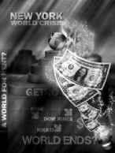(На плакате внизу написан вопрос: «Наступает конец мира?»).
Где взорвется – не будем гадать. Мест на земле много. Но то, что это будет связано с Россией, в этом можно не сомневаться.
Сегодня в США существует практика, когда законы принимаются в засекреченном виде, то есть секретные от законодательной власти, которая за них обязана голосовать. И ничего. Голосуют. Но, если законодательные акты, которые касаются всей страны, всего народа, принимаются в тайне от него, значит есть что-то, что от него упорно скрывают. А значит что-то в США варится, значит готовится какая-то провокация, в которую будет вовлечена вся страна. Мировое правительство невидимой Хазарии во главе с Ротшильдами не щадит никого ради достижения своих целей. США, оказавшись под контролем колена Данова, обречены. Америка – жертва, попавшая в руки хищника без малейшей надежды на спасение.
Все эти годы после Второй мировой войны хазарские банкиры накачивали ее деньгами, богатством, властью, оружием, что обеспечило ей физическую мощь и силу. А параллельно шел процесс обездушивания. В итоге родилась «сверхдержава», которая напоминает теленка, откормленного хозяевами, и которого ведут теперь на убой.
Вот этот засекреченный закон, о котором упомянуто выше и который свидетельствует о том, что готовится какая-то провокация.
Это закон, о котором американцы говорят: «мы должны быть обеспокоены» – «Закон о готовности страны к терроризму» (Homeland terrorism preparedness bill). Задаем детский вопрос: «К терроризму от кого?». И, наверняка, получим такой же детский ответ: «От Аль-Каиды».
Но вот цитата бывшего лидера Палаты общин британского парламента и бывшего министра иностранных дел Робина Кука: «Правда заключается в том, что не существует никакой исламской армии или террористической группы, называемой Аль-Каидой. И любой информированный офицер разведки это знает. Но существует пропагандистская кампания в целях заставить общественность поверить в присутствие определенной организации, представляющей «дьявола», и все это только для того, чтобы склонить телезрителя к признанию единого международного лидерства в войне против терроризма. Страна, которая стоит за этой пропагандой – США» (www.daily.pk Wednesday, 24 December 2008 «There Is No 'Al Qaeda' says Ex UK Foreign Secretary»).
В июле 2005 года «Guardian» публикует статью Кука: «Аль-Каида, дословно в переводе с арабского «база данных» была изначально компьютерным файлом тысяч муджахединов, которые были завербованы и подготовлены ЦРУ для борьбы с русскими». Кук также написал, что «бен Ладен – это продукт монументального просчета западных спецслужб, в течение 80-х годов его вооружало ЦРУ и финансировали саудиты, чтобы начать джихад против русских в Афганистане» (Robin Cook «The struggle against terrorism cannot be won by military means» guardian.co.uk, Friday 8 July 2005).
Через четыре недели после публикации этой статьи Кук внезапно почувствовал боль в сердце и скоропостижно скончался. Это случилось 6 августа 2005 года во время его пребывания в Шотландии. Согласно официальному заключению о причинах смерти, Кук умер от гипертонической болезни сердца. Хотя медики из бригады неотложной помощи, которая выехала его спасать, утверждали, что он умер от переломанной шеи.
Кук, будучи лидером Палаты общин британского парламента с 8 июня 2001 года по 17 марта 2003 года жестко выступал против вторжения в Ирак в марте 2003 года. Его слова в качестве эпитафии написаны на его могиле: «Может быть, я не добился успеха в том, чтобы остановить войну, но я обеспечил право парламента решать вопрос о войне».
Вернемся к правам американского парламента и к «Закону о готовности страны к терроризму» (Homeland terrorism preparedness bill). И опять задаем тот же вопрос: «К терроризму от кого?». И уже не получаем ответа. Аль-Каида – миф и продукт ЦРУ, используемый для прикрытия организованных и организуемых спецслужбами невидимой Хазарии провокаций.
Значит название «Закон о готовности страны к терроризму» нужно понимать как «Закон о готовности страны к очередной провокации спецслужб, организуемой в форме масштабного теракта». Вот теперь все стало на свои места. То есть, страна не готова к терроризму, а спецслужбы США как пионеры всегда готовы что-нибудь такое сорганизовать. Они сорганизуют, а страна окажется не готова. Нужно, чтобы все было синхронно. Грандиозный сценарий требует грандиозной массовки.
Принятие закона сопровождалось колоссальной спешкой и нажимом. Вовсю старался Министр внутренней безопасности США Майкл Чертофф. Это «наш» хазарский парень Миша Чертов из семьи потомственных раввинов – известных толкователей Талмуда, чьи предки эмигрировали из царской России. Всё схвачено.
У хазар в США наверху вертикали власти абсолютное численное превосходство. Обратите внимание на читку закона в Конгрессе (http://www.youtube.com/watch?v= PWlw3vo_ALA amp;feature=email). Республиканец Джон Халлер представляет Закон, зачитывает и всё пропускает – это, дескать, классифицировано, то есть секретно, – это секретно, это секретно и т.д. Здесь «играем, здесь не играем, здесь жирное пятно – рыбу заворачивали».
Не могу удержаться, чтобы не процитировать выступление Халлера: «Конгресс сейчас будет голосовать за одобрение Закона о готовности страны к терроризму. Закон требует расходов на меры экстренного реагирования вплоть до… и включая… Ах, извините эта часть засекречена… долларов для подготовки к террористической атаке или атакам национального масштаба, совершенным… (ЗАСЕКРЕЧЕНО). Расходы на персонал, участвующий в отражении атаки, и транспортные средства будут увеличены вдвое, если более 80% населения страны окажутся под воздействием… (ЗАСЕКРЕЧЕНО). Это финансирование будет увязано с первой атакой на… (ЗАСЕКРЕЧЕНО) или первой крупномасштабной вспышкой…(ЗАСЕКРЕЧЕНО) в зависимости от того, что произойдет в первую очередь.

Гражданские и военные подразделения должны быть подготовлены к мерам по локализации распространения и борьбе против…(ЗАСЕКРЕЧЕНО), включая облучение… (ЗАСЕКРЕЧЕНО), сопровождающегося возможностью… (ЗАСЕКРЕЧЕНО), переносимых по воздуху…(ЗАСЕКРЕЧЕНО), плотоядные… (ЗАСЕКРЕЧЕНО) или всего перечисленного выше в случае такого события как… (ЗАСЕКРЕЧЕНО) массовое… (ЗАСЕКРЕЧЕНО) бегство снижаются или в противном случае становятся неконтролируемыми…
Подразделения Военно-воздушных сил могут также быть направлены на борьбу с… (ЗАСЕКРЕЧЕНО), благодаря их возможностям.
Если событие произойдет в сельской местности… Боже!… – (длинная пауза) – ах… это (ЗАСЕКРЕЧЕНО), намного превышающих наши самые кошмарные ожидания. Если потери будут превосходить (ЗАСЕКРЕЧЕНО)…
Рассмотрев сейчас этот закон, я прошу вас, пожалуйста, за него проголосовать».
Всё секретно. Ничего не зачитано. Закон принят. И кто сказал, что в США демократия и свобода?
С одной стороны, ее попросту выкидывают в помойку, а с другой – доводят до полного абсурда, что равносильно выкидыванию в помойку только со смехом.
В Огайо, например, судья постановил, что местные бомжи могут указывать в качестве адреса при получении бюллетеня для голосования скамейку в парке (вроде: вторая справа под дубом у пруда)
(Judge rules Ohio homeless voters may list park benches as addresses/http://dispatch.com/live/content/loc…e.html?sid=101).
Но демократия перестает быть смешной, когда используется как знамя войны, под которым Хазария ведет глобальную войну за свое господство, за победу Глобального каганата.
По большому счету, мировая война уже началась. США открыто говорят и пишут о «глобальной» и «длительной» войне. В качестве повода, как всегда, была использована провокация, построенная на их главном оружии – лжи. Во Вторую мировую это был поджег Рейхстага и Перл-Харбор, в наше время – организованные ими же теракты 11 сентября и прогнозируемые аналитиками более серьезные акции с применением ядерного оружия.
Судя по упомянутому выше засекреченному закону, готовится масштабная провокация в США как очередной повод для масштабных разрушительных действий, для масштабной войны.
Беспокоиться есть о чем. И основания для этого тоже есть. Судите сами. 16 сентября 2007 года The Sunday Telegraph сообщила что Белый дом разработал программу эскалации войны. Дальше сообщается, что 7 сентября 2007 года директор ЦРУ генерал Майкл Хайден, одетый в полную военную форму, выступил перед членами одной из трех главных масонских структур – Совета по международным отношениям: «Наши аналитики оценивают с высокой степенью точности, что центральное руководство Аль-Каиды планирует тщательно законспирированные заговоры против территории США. Мы оцениваем с высокой степенью уверенности, что Аль-Каида сосредоточена на целях, которые приведут к массовым жертвам, драматическим разрушениям и крайне негативным последствиям».
Это значит, что администрация уже в течение нескольких лет готовит сценарий второй крупномасштабной атаки на Америку. Кстати, перед самым своим уходом именно «атаку на Америку» назвал Буш-младший самой серьезной проблемой, с которой придется столкнуться новому президенту. Согласно источникам в Пентагоне, которые ссылаются на секретный военный документ, «еще один террористический акт (второй после 11 сентября) может создать оправдание и возможность для удара против определенных известных целей».
Это означает, что второе 11 сентября может рассматриваться как часть военной доктрины и планирования.
Террористический акт под «ложным флагом» или даже угроза такого теракта могут быть использованы для оправдания войны. Угроза использования или действительное использование ядерного оружия может привести к объявлению американской администрацией «Катастрофического чрезвычайного положения», что позволит поставить под централизованный контроль всю правительственную и частную корпоративную деятельность до тех пор, пока не будет восстановлено «конституционное правление».
Итак, директор ЦРУ Хайден выступил со своим прогнозом крупномасштабного теракта с массовыми жертвами 7 сентября, The Sunday Telegraph опубликовала свою статью об эскалации войны практически вслед за этим 16 сентября.
После этого с 15 по 20 октября 2007 проводятся самые крупные и самые дорогостоящие американо-канадские военные учения «Непроницаемый щит 2008» (VS-8), где в сценарии отрабатывается отражение террористической атаки на США с применением ядерного оружия. В основе сценария учений – вооруженное столкновение с Россией.
Напомню эмблему этих учений. На ленте с двух сторон две змеи навстречу друг другу – символы колена Данова (эти же символы были найдены на раскопках Хазарии) и надпись – девиз змеи – «никто не причинит мне зла безнаказанно». Эту же надпись с девизом змеи можно найти на королевском гербе Великобритании. Неистребимая ненависть к России, пронесенная сквозь века.
Кстати, очень символично и другое совпадение – название учений содержит слово «щит» – “shield” – шильд: фамилия Ротшильд переводится как «красный щит»).
Но этому выступлению Хайдена и учениям предшествовало одно очень необычное и таинственное событие.
30 августа 2007 года, впервые с 1968 года, американский бомбардировщик B-52H Stratofortress пролетел над территорией США с комплектом готовых к бою ядерных крылатых ракет. Мощность ядерного заряда по этим типам ракет оценивается в пределах от 5 до 150 килотонн. Для сравнения бомба, сброшенная на Хиросиму была мощностью 13-15 килотонн.
В результате этого полета были нарушены многие военные предписания. Согласно установленным нормам, боевые самолеты с боеготовым комплектом могут совершать полет только по приказу командующего Объединенного штаба начальников штабов или должностного лица Национального военного командования. Все эти регулятивные установки были полностью нарушены. Никто из указанных лиц приказа на полет не давал.
Но полет был совершен. Отсюда можно предположить, что помимо официального командования существует параллельное более влиятельное, имеющее намного большие полномочия теневое командование, которое может позволить себе безнаказанно игнорировать приказы и инструкции официального командования.
Посмотрим, по какому маршруту двигался бомбардировщик. Он вылетел с базы ВВС в Миноте (Северная Дакота) и приземлился на базе ВВС в Барксдейле (Луизиана). Это практически половина территории страны.
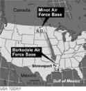Затем Associated Press сообщает, что самолет приземлился в Барксдейле с 5 боеголовками на борту. Но офицеры с базы Минот, откуда вылетел самолет, сказали на условиях анонимности, что боеголовок при вылете было 6. После этого Associated Press меняет свою информацию и сообщает, что в Барксдейле приземлилось 6 боеголовок. Но теперь уже офицеры из Барксдейла стали настаивать, что приземлилось не 6, а 5 боеголовок. Куда делась одна боеголовка? Вопрос остался без ответа.
А затем произошло вот, что. Пресса со ссылкой на источники в Пентагоне сообщила, что все летчики, выполнявшие полет, погибли в результате «трагических несчастных случаев» в течение двух недель после полета. Некоторые погибли с семьями. Вот список таинственно погибших в течение двух недель в несчастных случаях летчиков. Тодд Блу погиб со всеми членами семьи, находясь в отпуске в Виржинии. Адам Баррс был пассажиром машины, которая врезалась в дерево и затем загорелась. Вестон Киссель погиб в аварии на мотоцикле, находясь в отпуске в Теннеси. Клинт Хаф ехал вместе со своей женой Линдой на мотоцикле Harley Davidson 2007 года выпуска. Они разбились. Джон Фруэ - его тело было найдено около Бэджер Пик (Вашингтон).
В течение полутора месяцев после полета также при трагических обстоятельствах погибли два офицера, которые готовили этот полет.
Кто стоит за всем этим адским сценарием крупномасштабной катастрофы с использованием оружия массового поражения, который заложен в засекреченном «Законе о готовности страны к терроризму». Кто хочет, организовав страшную провокацию с колоссальными жертвами, превратить ее в повод для войны? Только тот, кто очень хочет этой войны, кто готов пойти на все, чтобы ее начать, только тот, кто понимает, что без войны он не сможет достичь своих целей. Только тот, кто одержим страстью достичь их ценою убийства многих людей. Для кого смерть – это и цель, и средство, и идол, который требует все больших жертв. Это персонифицированный в человекоподобных существах дух колена Данова, дух антихриста, которому Дан служит.
Глобальная армия Глобального каганата имеет в своем арсенале уже упоминавшиеся нами частные военные компании (ЧВК), специализирующиеся на ведении боевых операций, а также частные разведывательные компании (ЧРК), занимающиеся проведением разведывательных операций по всему миру. ЧРК, также как и ЧВК заключают контракты с федеральными ведомствами США и выполняют их задания по ведению войны в интересах невидимой Хазарии.
Деятельность одной из самых крупных ЧРК – «Карлайл групп» – рассмотрим подробнее, в связи с тем, что она имеет прямое отношение к «нашему миротворцу» Саркози.
Сводный брат Саркози по отцу – Пьер Оливер, ставший приемным сыном Франка Виснера, напомним, очень влиятельной фигуры в американской разведке, с помощью его связей делает себе карьеру. Франк Карлучи, бывший номером два в ЦРУ, назначает Пьера-Оливера директором инвестиционного фонда «Карлайл Групп»
(Carlyle Group), одной из крупнейших и полусекретных транснациональных корпораций.
Компания известна также своей связью с крупными частными военными компаниями, которые по заданию глобальной элиты проводят боевые операции по всему миру, организуют военные провокации, диверсии, террористические акты и правительственные перевороты. Занимаются разведкой и подготовкой вооруженных формирований в других странах, включая сейчас Грузию и Украину (а в прошлом Югославию).
Итак, «Карлайл групп» в июле 2008 года приобрела за 2,54 млрд. долларов часть корпорации «Буз Ален Хэмилтон» (Booz Allen Hamilton), которая является самым крупным поставщиком услуг, технологий и агентуры для разведывательных служб США, то есть гигантской частной разведывательной компанией (Tim Shorrock, Spies for Hire, USA. 2008).
Из семи членов Совета директоров компании «Буз Ален» трое являются представителями «Карлайл групп». Это Дэниэл Экерсон, Питер Клэр и Ян Фуджияма.
Активы «Карлайл» составляют 75 млрд. долларов. Начиная с 1990-х годов, эта компания тесно связана с частными военными компаниями, и можно сказать, является их родоначальницей.
Купив «Буз Ален», Карлайл групп превратилась во владельца крупнейшей в Америке частной разведывательной армии с огромным влиянием в мире не только частных разведывательных, но и частных военных компаний.
«Буз Ален», находящаяся в штате Вирджиния, насчитывает 20 000 человек персонала и имеет ежегодный доход 4 млрд. долларов. Большая часть этих доходов поступает за счет выполнения разведывательных услуг для правительственных ведомств США.
«Буз Ален» является ключевым советником и главным поставщиком разведывательных услуг для лидеров разведывательного сообщества США – Центрального разведывательного управления и Разведывательного управления министерства обороны, Агентства национальной безопасности, а также для Министерства обороны, Министерства внутренней безопасности, Национального контртеррористического центра и для большинства боевых командований Пентагона.
«Booz Allen Hamilton» была основана в 1914 году как консультативная фирма в области управления, но в 1940 году она стала работать на американские вооруженные силы. Начиная с конца 90-х годов, компания установила тесные связи с Агентством национальной безопасности (АНБ) США, мощной разведывательной структурой, на которую, как говорилось выше, работал Ален Боэр, особо доверенное лицо из близкого окружения Саркози, отвечающее за вопросы безопасности. Напомним, что АНБ занимается слежением за телефонными разговорами в глобальном масштабе, за электронной почтой и Интернетом в интересах Пентагона и политических структур США. В своей работе АНБ использует «Буз Ален» как главного поставщика услуг и консультанта.
Компания выполняет заказы для Управления Директора национальной разведки США. «Буз Ален» работает сейчас над одним из самых важных недавно запущенных разведывательных проектов, который называется Криптографическая программа модернизации. Это программа реализуется в интересах вооруженных сил США и имеет целью соединение различных разведывательных технологий для создания по разным параметрам единого электронного пакета данных о противнике. Такой пакет предназначен для использования при проведении боевых, в том числе специальных, операций и позволяет находить и отслеживать противника.
Кристофер Линг, вице-президент «Буз Ален», в ежегодном докладе корпорации отметил: «Мы находим инновационные пути интегрирования разведки и операций, обеспечивающие возможности визуализации и управления данными».
В «Буз Ален» работают профессионалы в области разведки экстра-класса. Она может нанимать лучших специалистов и платит им большие деньги. Старшим вице-президентом там работает Майк Макконнел, бывший Директор национальной разведки США.
Сообщается, что «Буз Ален» активно действует не только на военном, но и на экономическом фронте войны с терроризмом, войны, оказавшейся очень выгодным мероприятием и принесшей компании большие прибыли.
Несмотря на то, что «Буз Ален» сейчас активно работает по контрактам с военными и разведывательными ведомствами и очень близка к высшему руководству США, тем не менее, она прилагает энергичные усилия, чтобы не допустить контроля над своей деятельностью со стороны руководства страны. То есть, компании есть что скрывать от государства. Следовательно, есть сферы, где ее интересы и интересы государства расходятся. Но если так, то, по логике, это свидетельствует о наличии целей, которые носят негосударственно или антигосударственно ориентированный характер. Но ведь такие же антигосударственные цели преследует и «невидимая Хазария». Эта двойственность позиции «Буз Ален» обусловлена тем, что она, прежде всего, является частично разведывательной структурой глобальной армии Глобального каганата, работающей на колено Даново. При этом, выполняя заказы государственных ведомств, она использует их как щит и источник финансирования для решения своих хазарских задач.
Портфель государственных заказов компании сейчас насчитывает около 9 млрд. долларов. К этому стоит добавить еще и совместные проекты, выполняемые «Буз Ален» во взаимодействии с другими корпорациями. Их общая стоимость равна более 32 млрд. долларов.
В 2007 году Конгресс, пытаясь как-то отследить деятельность «Буз Ален», назначил комиссию по контролю реализации одного из контрактов, выполняемых компанией. Инициатором этого был сенатор от Калифорнии Генри Ваксман, председатель Комитета по правительственному контролю и реформам палаты представителей.
Для работы в этой контрольной комиссии были наняты 98 человек. Но проблема заключалась в том, что 65 человек из этого состава, как выразился Ваксман, «не работали на правительство. Они работали на „Буз Ален“».
В этом же 2007 году Конгресс инициировал еще одно расследование, которое касалось контроля расходов Министерства внутренней безопасности США на оплату услуг частных военных и разведывательных компаний. Речь шла о сумме 16 млрд. долларов. Среди главных поставщиков услуг, оказавшихся в центре скандала, была названа «Буз Ален», которая выполняла контракты для Управления разведки Министерства внутренней безопасности. Но и здесь компания вышла сухой из воды. По этому поводу один из конгрессменов обреченно сказал: «Проще говоря, мы должны знать, кто отвечает за Министерство внутренней безопасности – его руководители и персонал или частные компании».
Это только два эпизода из массы контрактов, выполняемых «Буз Ален». Две попытки контроля из тысячи оснований для его включения, которые, учитывая мощные хазарские связи корпорации, изначально были обречены на провал.
«Буз Ален» имеет самые тесные связи с заместителем Министра обороны по разведке и управлениями Министерства обороны США и Объединенного комитета начальников штабов, которые занимаются планированием и проведением разведывательных и информационных операций по всему миру.
Вице-президент «Буз Ален» Вильям Вэнсли, бывший офицер военной разведки, руководит группой специалистов, занимающихся стратегическим планированием и обеспечивающих деятельность Национальной секретной службы. Это структурное подразделение ЦРУ, которое проводит тайные операции и вербует агентов в других странах.
Другой вице-президент Роберт Нунан, генерал-лейтенант в отставке, который был заместителем начальника штаба сухопутных войск по разведке, занимается военной разведкой и вербовкой шпионов в интересах разбросанных по всему миру объединенных командований США, а также обеспечивает разведывательные операции, проводимые Разведывательным управлением Министерства обороны США.
Если кто-то хочет ознакомиться с их деятельностью более подробно, далеко ехать не надо. Компания «Буз Ален» имеет свое представительство в Москве, расположенное на Большой Дмитровке. От Лубянки это 763 м на восток. Справочник «Большая Телефонная Книга» (Желтые страницы) дает не только точный адрес, но и фрагмент карты Москвы с указанием, где это гнездо американской разведки расположено. У «Буз Ален» есть еще одно представительство в другом месте Москвы. Надо полагать, это запасная явка.
В России официально корпорация работает под прикрытием оказания консалтинговых, транспортных и строительных услуг. Обычно ЧВК и ЧРК действуют как транспортные и строительные компании.
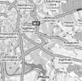Вот попробуй сейчас закрыть представительство «Буз Ален». Тут же вся эта армия правозащитников, которая боролась против СССР и против КГБ и в конце концов добилась уничтожения и того и другого, начнет кричать, что закрытие этой компании, это попрание прав человека, демократии и свободы. Так получается, что у нас вся антигосударственная деятельность укладывается в борьбу по этим трем направлениям – за права человека, за демократию и свободу.
Саркози, приехав к нам в качестве «миротворца», знал и о «Карлайл групп», и о «Буз Ален» и о многом другом.Есть маска, и есть личина. Маска есть способ скрыть личину и ввести противоположную сторону в заблуждение. Маска – это президент Франции Саркози, и мы ему раскрываем объятия, и ведем с ним переговоры как с государственным деятелем Франции, ожидая, что он ответит нам взаимностью. Но под маской есть личина, которая полностью развеивает все иллюзии относительно взаимности и заставляет относиться к нему как к противнику. Личина – это Саркози – член руководства глобальной сети невидимой Хазарии, ставленник ЦРУ и британской разведки, агент Моссада, марионетка Ротшильдов, связанный с сионизмом и масонством.
И мы хотим, чтобы эти ребята были на нашей стороне? Чтобы они к нам прислушивались и радели за справедливость? Чтобы они признали преступление преступлением? Да для них преступление – это и есть высшая форма справедливости и добродетели. И Россия для них главный враг, которого они имеют целью полностью уничтожить. А мы, робко стоя перед ними как ученик перед строгим учителем, пытаемся им что-то доказать и, главное, оправдаться. «Оставь надежду всяк сюда входящий».
И вот этого Саркози мы пускаем в наш огород и таким образом признаем его, а вместе с ним и ЕС, то бишь, Запад, стороной урегулирования конфликта.
Сделав Запад стороной урегулирования, мы инициировали процесс интернационализации конфликта, чего уже давно добивался хазарский супостат.
Это было просто их хрустальной мечтой, которую не удалось реализовать в Чечне. И вот теперь такой подарок в Грузии. Им нужен предлог для масштабного военного присутствия на Кавказе в целях войны и оккупации России. Но после устроенной ими провокации в Осетии все это будет подаваться как необходимая мера в установлении мира в регионе. Это у них такая хитрая стратегия под масонским девизом – «мир через войну». Они об этом говорят уже в режиме автомата, не задумываясь. Буш 18 июня 2002 года прямо так, и не задумываясь (думание, судя по всему, не входит в его обязанности, поэтому он так и говорит, не задумываясь), сказал: «Я хочу, чтобы вы знали, что, когда мы говорим о войне, мы на самом деле говорим о мире». Откровенный ты наш и незамысловатый. Но зачем же так длинно? Можно ведь и покороче, как у Оруэлла в его романе «1984 год»: «Война – это мир».
Им очень нужна эта война под маской мира для установления их нового мирового порядка с антихристом во главе. Из пророчеств известно, что он придет как раз, когда народ устанет от войны, и прикинется до поры до времени справедливым, и станет, якобы, устанавливать мир, и люди поверят ему, выступят за то, чтобы он стал верховным правителем.
Различные войны, которые превращают мир в тотальную кровавую бойню, нужны глобализаторам для того, чтобы вызвать у людей это состояние постоянного страха, полной изнуренности и отчаяния, чтобы они с радостью приняли этого «миротворца».
Понятно, что Осетия – это провокация, чтобы втянуть нас в войну. И она была организована так нарочито зверски, чтобы мы не могли не втянуться, чтобы у нас не было другого выбора. Для нас атака на Осетию было такое чудовищное преступление, что мы не могли его не пресечь. Именно на это убийцы сделали ставку.
Устроители мирового порядка жестко и методично идут к своей цели уничтожения России, не разбираясь в средствах и не останавливаясь ни перед чем. Они утратили все человеческое, они перестали быть людьми и стали функциями того, кого они должны возвести на престол в глобальной империи.
Их задача с помощью провокаций запустить войну в Грузии и на Украине, и втянув туда Россию, разжечь пожар глобальной и тотальной войны на ее уничтожение с участием всех ядерных держав мира. Причем в основном в этой войне против России будут воевать наемные транснациональные армии, находящиеся под началом частных военных компаний, действующих совместно с частными разведывательными компаниями и способных на самые грязные преступления и провокации.
Наемники воевали в Югославии и готовили по заказу США банды албанских наркодельцов и работорговцев, формируя из них Армию освобождения Косова. Они воюют в Ираке. Численность американской регулярной армии там 140 тысяч, а наемников 180 тысяч человек. Самые зверские преступления, которые совершаются там над иракским населением и заключенными – это их рук дело. Это биороботы, для которых смыслом жизни стало убийство. Они воевали сейчас и в Осетии. И можно не сомневаться, что православный храм, где укрывались осетины, уничтожили именно наемники.
По источникам, близким к военным кругам США, известно, что в Грузии работают 1500 «советников» скандально известной и причастной ко многим преступлениям ЧВК «Blackwater», самой крупной и очень влиятельной компании в США. Там же на постоянной основе находятся боевые подразделения американской компании «Cubic». Сюда же добавьте израильские ЧВК, и вы поймете, кто противостоит нашим войскам в Грузии.
ЧВК выполняют заказы США и Израиля, но официально там нет вооруженных сил этих стран. Они тут, якобы, ни при чем. Ловко устроились. Но уши-то все равно торчат. В связи с тем, что нам в этой войне будут противостоять в том числе и наемники, это будет необычная война с новым противником, организованным по сетевому принципу.
В течение 18 месяцев перед агрессией в Грузию из США и Израиля шли мощные поставки оружия и боеприпасов.
Как следует из источников, близких к Пентагону, под видом гуманитарной помощи в Грузию прибыли контингенты американских войск с полным вооружением и оснащением. Они присоединяются к уже находящимся там силам ЧВК «Blackwater» и израильским войскам. Корабли ВМС США готовы обеспечить поддержку сухопутным войскам с моря.
Америка и Израиль uber alles (превыше всего)! Новый Рейх рвется к войне. Кто будет отвечать за Холокост, который они организовали в Осетии?
Мы с Божией помощью выдержим все испытания и одолеем врага, если будем стоять в вере.
В ходе этой новой мировой войны кто-то, знамо кто, под ее прикрытием скинет бомбу на мечеть Аль Акса в Иерусалиме. На руинах мечети сразу же быстрыми темпами Израиль начнет строительство Третьего храма, потому что все там к приходу нового мирового правителя готово. Уже изготовлена золотая корона, которая будет надета на него при коронации.
События в Осетии, дестабилизация обстановки на Кавказе в сочетании с финансовым кризисом – это то, что нужно невидимой Хазарии для решающего удара. Новая мировая война сейчас как никогда реальна.
Российское руководство, если оно хочет сохранить Россию и ее народ, не должно идти на поводу у хазарских архитекторов. Нужно оказывать сопротивление их политике внутри страны и на мировом уровне. Это необходимое условие спасения и себя и других стран и народов от гибели. И это единственное условие спасения препятствующей строительству Глобального каганата системы традиционной государственности в мире, оплотом которой является Россия.
Для достижения этих целей Россия просто обязана объединить вокруг себя страны третьего мира. В этом объединении будет заложена большая энергия сопротивления. И опираться в своих призывах к объединению Россия должна не только и не столько на экономические и политические мотивы, но, прежде всего, на религиозные. Все, что происходит сейчас в мире – это чисто религиозные процессы, которые имеют проекцию на все сферы человеческой жизнедеятельности. И только в контексте этих процессов можно объяснить и понять все, что сейчас происходит. И только этот контекст покажет народам степень колоссальной опасности, которая нависла сейчас над миром. И только это религиозное осмысление и духовная мобилизация сможет его спасти.
Религиозные координаты внесут простоту и ясность понимания всего происходящего, чудовищного преступления, совершаемого нагло и дерзко на глазах у всех народов и против них.
Если России удастся сплотить вокруг себя страны третьего мира, то в мире окажется два полюса. С одной стороны, все те, кто за свою национальную государственность и идентичность и против духовного поклонения антихристу (у мусульман он называется Даджал), а с другой – те, кто поклоняется ему и служат ему вместе с Ротшильдами и хазарскими банкирами, со всеми вытекающими отсюда последствиями.
Ситуация столь критически опасна, что это нужно делать без промедления. Нужно менять язык описания процессов, происходящих в мире. Нужно уходить от антитеизма в объяснении экономических или политических событий, что только запутывает людей и уводит их от истины, толкая на путь гибели. Вопрос стоит именно так – что вы выберете: жизнь или смерть?
В случае создания Россией такого блока сопротивления врагу рода человеческого, возникнут две сверхдержавы вокруг двух имперских духовных ядер – Святой Руси и невидимой Хазарии. И опять они вступят в брань, в решительную для судеб планеты битву.
И в этой брани властям Руси нужно использовать силу. Ведь речь идет о спасении души очень многих людей. Душа человека – это храм. Она должна быть обителью Господа, домом молитвы, а банкиры ее делают «домом торговли» и «вертепом разбойников». Господь употребил силу и, сделав бич, выгнал из храма меновщиков.
Как пишет архиепископ Аверкий (Таушев), «Господь, молившийся впоследствии за Своих распинателей: «Отче, отпусти им: не ведят бо что творят» (Лк. 23, 34), не только употреблял резкие слова осуждения, но прибегал иногда и к очень сильным и решительным мерам физического воздействия: так, Он дважды - в самом начале Своего общественного служения – и вторично – в самом конце его, незадолго до Своих крестных страданий, совершил изгнание торгующих из храма. Живо и образно передают нам об этих событиях святые евангелисты. Не будучи в состоянии стерпеть безобразного торгашества…, Господь Иисус Христос, «сделав бич из веревок, выгнал из храма всех, и овец и волов, и деньги у меновщиков разсыпал, а столы их опрокинул», сказав при этом продавцам: «Дома Отца Моего не делайте домом торговли» (Ин. 2, 14-17). А после Своего торжественного входа во Иерусалим перед Своими страданиями, Он снова, войдя в храм, «выгнал всех продающих и покупающих, опрокинул столы меновщиков и скамьи продающих голубей, и говорил им: «Написано: Дом Мой Домом молитвы наречется, а вы сделали его вертепом разбойников» (Мф. 21, 12-13; Мк. 11, 15-17; Лк. 19, 45-46)». (Архиепископ Аверкий (Таушев) «Современность в свете Слова Божия. Слова и речи». Том 2, «Отпущение грехов и мнимая христианская любовь и всепрощение»).
Это были только два случая, когда Господь применил силу. И в одном, и в другом случае упоминаются меновщики. А кто такие были эти меновщики? Вот, что пишет о них «Библейская энциклопедия»: «Меновщик (Ин. 2, 14) – когда Иудея сделалась римской областью, то от иудеев требовался взнос податей в римское казнохранилище, именно полсикля, по еврейскому курсу. Разменом денег занимались особые меновщики. С этой целью они стояли при вратах храма, куда стекались со всех сторон иудеи-чужестранцы. Их обманчивый образ действий и вымогательства весьма вероятно и вызвали со стороны Господа грозный упрек образу их действий выражением из Писания: «Дом Мой домом молитвы наречется, а вы сделали его вертепом разбойников» (Мф. 21, 13, Ис. 56, 7, Иерем. 7, 11). Меновщики, быть может, имели обыкновение получать особенные выгоды от дачи денег в заем, причем, разумеется, в сделках их не было места снисхождению, и тем заслуживали они общее негодование». Но ведь образ действий меновщиков – это и есть образ действий современных банкиров-данитян, действующих в интересах Невидимой Хазарии, в интересах Глобального каганата.
И этим действиям тех, кто превращает душу человечества в «дом торговли» и «вертеп разбойников», Россия должна противостать. Однажды, победив древнюю, видимую Хазарию, паразитическое государство, грабившее славян, она это сделала. Господь сделал это дважды. Теперь пришел черед второго раза в победе над Хазарией невидимой.
«Надо хорошо знать и помнить, – пишет архиепископ Аверкий (Таушев), – что совершенно чуждо истинному христианству зловредное толстовское учение «о непротивлении злу» (кстати сказать, погубившее нашу несчастную Родину-Россию и ввергнувшее ее в страшные кровавые ужасы большевизма!): всякий истинный христианин непримирим ко злу, где бы и в ком бы он его ни встречал. Примеру Самого Господа Иисуса Христа и Его Святых Апостолов следовали затем на протяжении всей истории Церкви и все истинные христиане, всегда осуждавшие зло и боровшиеся с ним, хотя бы это стоило им всевозможных тяжких лишений и даже самой жизни. Так боролись со злом темного язычества и идолопоклонства святые мученики, не только пассивно умиравшие за Имя Христово, но и весьма решительно осуждавшие, иногда в весьма резких словах и выражениях и даже действиях заблуждения и нечестие идолопоклонников».
Русь в противлении злу поклонения идолу колена Данова – золотому тельцу, в стремлении освободить народы от ига идолопоклонников, должна объединить вокруг себя страны Третьего мира, должна попытаться привлечь на свою сторону и народы стран Запада. Они ведь тоже оказались под угрозой как носители национальной, пусть слабой, но государственнической идентичности.
Многие считают, что ожидаемый крах доллара и крах США – это взаимосвязанные события. В связи с финансовым кризисом ожидают массовых волнений в США. Возможно, для их подавления, как говорят эксперты, в нарушение закона 1878-го года сейчас в США создаются т.н. силы быстрого реагирования на территории США. Это делается в соответствии с тем же самым законом о готовности к терроризму. Можно убить двух зайцев сразу. А волноваться властям есть из-за чего.
Как сообщила «Washington Post»: «Американцы перестали покупать машины, мебель и перешли на покупку огнестрельного оружия и боеприпасов». Увеличилась продажа сейфов (люди не верят банкам). Фирмы, торгующие оружием в США, процветают. Скупается все подряд, от пистолетов до значительно более серьезных средств убийства. «Улица» против банкиров с Уолл-Стрита. Именно в военных терминах описывается сейчас в прессе это противостояние с банкирами. Вот только один пример заголовка: «Федеральная резервная система – это оружие убийства Уолл-стрита, направленное против США».
Рост протестных настроений – это не единичные эпизоды в «благополучной» Америке. Это – распространяющаяся тенденция, которая может перерасти в доминирующее революционное настроение в американском обществе. Агрессия в обществе будет увеличиваться на фоне обострения социальных проблем, вызванных финансовым кризисом. Но вдь этот кризис сам по себе и есть провокация, организованная банкирами. Организованная для чего? Для достижения их целей, известно каких. Одной из главных, которая стоит именно сейчас на повестке дня, является уничтожение национальной традиционной государственности, в том числе и американской.
Вебстер Тарпли в своей статье в «Global Research» (Webster G. Tarpley «End the Fed, End Wall Street Bankster Rule, End the Derivatives Depression», December, 2008) пишет, что ФРС нанесла разрушительный удар по экономике США. За последние 40 лет уровень жизни снизился на 2/3, страна превратилась в представляющий лунный ландшафт памятник безумию постиндустриальной экономике услуг. Чтобы вернуться к здоровым денежным отношениям, нужно возродить современное промышленное производство. Стабильная валюта обеспечивается способностью национальной экономики производить физические товары, которые остальной мир хочет покупать.
По сути, США превратились в паразитическое государство, которое промышляет разбойничьими войнами по типу рэкета. Но ведь именно такой и была древняя Хазария. Она тоже ничего не производила и паразитировала только за счет бесконечных войн, грабежа и насилия. Америка, оказавшись под властью колена Данова, повторяет геополитическую судьбу древней Хазарии.
Как пишет Тарпли, традиционная экономика США была вовсе не такой, как сейчас. Она не была монетаристской. В противовес монетаристской мифологии американская система никогда не имела ничего общего со «свободной торговлей» и «свободными рынками». Наоборот, в свои лучшие времена, она была основана на традициях протекционизма, прагматизма и дирижизма, то есть государственно-монополистического регулирования. Американская система исторически означала национальный банк, протекционистский тариф, национальную инфраструктуру, финансируемую федеральным правительством. Подъем США как мировой, великой промышленной державы был обеспечен благодаря протекционистскому тарифу и контролируемой валюте.
Затем пришли банкиры, создали ФРС, и началось разрушение экономики. Джон Кеннеди попытался вернуть страну к здоровой экономике, но банкиры с помощью ЦРУ его убили. Тарпли отмечает, что нынешняя депрессия в США вызвана монетаристским дерегулированием, то есть уходом государства из экономики. Монетаризм основан на том, что рынок всегда непогрешим, а правительство – всегда враг. Монетаристские догмы представляют собой смесь подходов Герберта Гувера, Роберта Тафта (члена масонской ложи «Череп и кости»), Бари Голдуотера, Рональда Рейгана и других реакционных республиканцев. Современная, доведенная до абсурда версия монетаризма – это доктрина Милтона Фридмана и его финансируемой Рокфеллером Чикагской школы. Ее выкормыши в лице Гайдара и прочие, как их называли, «чикагские мальчики», внедрили разлагающую все и вся монетаристскую заразу в российскую экономику.
За монетаризмом – все те же хазарские банкиры, использующие его очень успешно в качестве борьбы против своей главной мишени – национальной государственности, основой которой является национальная экономика. Они решили ее приватизировать, а затем разрушить, разрушив таким образом государство. Тарпли свидетельствует, что нынешняя Великая депрессия в США вызвана также и приватизацией (большой привет Чубайсу, не к ночи будет помянут). Примером подобной приватизации является компания «Fannie Mae», которая прекрасно работала в течение 30 лет как государственная структура. Но потом ее приватизировали и открыли дверь для мародерских злоупотреблений, которые сейчас уже стали всем известны. Рынок нефти и газа тоже дерегулирован. Из этого такие компании, как «Goldman Sachs», «Morgan Stanley» и другие геенны с Уолл-стрита получают максимальные выгоды через спекулятивные фонды, использующие производные финансовые инструменты и нацеленные на получение максимальной прибыли при любых условиях.
На мировом уровне необходимо ликвидировать Международный валютный фонд (МВФ) и Всемирный банк, которые целенаправленно уничтожают экономики национальных государств.
Эти две структуры играют важную роль в финансовых планах хазарских банкиров, оказывая давление на страны третьего мира, принуждая их реструктурировать свою экономику так, чтобы поставить ее под контроль и в зависимость от глобальных структур. Так происходит процесс сдачи государствами своего экономического суверенитета. Главной жертвой при этом оказывается народ.
В обмен на предоставленные кредиты от государств требуют согласия на повышение налогов и сокращение субсидий.
Вебстер Тарпли в своей статье «Секретный план для мировой диктатуры МВФ» пишет, что существует конфиденциальный стратегический документ, который является не чем иным, как попыткой навязать диктатуру МВФ всей планете, ликвидировав при этом всякую надежду на экономическое выздоровление, на модернизацию развивающихся стран и одновременно с этим на сохранение национального суверенитета.
В соответствии c этим планом, МВФ будет диктовать экономическую политику всем государствам. Известно, что принципами МВФ являются жесткие ограничения, уход государства из экономики, ее дерегулирование, приватизация, сокращение заработной платы, свободная торговля, тотальная конкурентная борьба всех против всех, деиндустриализация, а также запрет на введение перспективных технологий. Это политика направлена на уничтожение государств и удушение человечества.
Тарпли пишет, что настоящими врагами экономического прогресса являются банкиры с Уолл-стрита, дельцы-финансисты и финансовые олигархи. Если вы позволяете им контролировать правительство, результаты оказываются катастрофическими. Поэтому, убежден Тарпли, нужно «бороться за то, чтобы вырвать правительство из рук банкиров». Нужно отменить разрушительную и антинациональную монетаристскую систему, национализировать Федеральную резервную систему и перейти к традиционной государственнической и социально ориентированной модели, основанной на полной занятости через возрождение промышленного производства. Производство означает инфраструктуру, обрабатывающую промышленность, строительство, сельское хозяйство, транспорт и все то, что связано с торговлей реальными, материальными товарами. И, наоборот, свободный рынок и монетаризм, которыми все так восхищаются, означает игорные дома, наркотики, проституцию, финансовые спекуляции, отмывание денег и прочие пороки, порождаемые отсутствием реальной экономики. Результат здесь один – полная нравственная деградация, обнищание и вымирание народа и разрушение государства.
В США практически подряд идут сообщения в СМИ о трагедиях, вызванных спровоцированным банкирами кризисом. Вот лишь некоторые из них. В Калифорнии семья из 7 человек: отец, мать и пятеро детей (две пары близнецов и дочка) были найдены мертвыми в своем доме. Оба родителя работали в одной фирме, одновременно потеряли работу и решили пойти на страшный грех самоуничтожения всей семьи.
Еще новость c Fox news: 93 летний старик найден замерзшим в своем доме в США, так как ему отключили отопление за задержку оплаты.
Молодой человек умер от того, что не мог пойти к зубному врачу, денег не было.
Их демократия – это форма уничтожения народа и государственности. С одной стороны, набивающие карманы политики-коррупционеры и воры-банкиры, с другой стороны – простые люди, которые умирают из-за того, что лишены того, что обеспечивает естественное право человека на жизнь – работы, жилья, медицинской помощи, отопления.
По данным экономиста Майкла Хадсона, 1% населения США владеет 70% богатства этой страны. Это беспрецедентный в американской истории разрыв. Секретный план иллюминатов направлен на его дальнейшее увеличение. Америка идет курсом самоуничтожения.
Новая команда Обамы, приход которого к власти финансировал агент Ротшильдов Сорос, будет продолжать этот курс.
Америка сейчас находится в таком дипломатическом положении, что война может начаться благодаря лозунгам типа «Война, которая положит конец всем войнам», «Сделаем мир безопасным для демократии.
(Джон Блейн, 20 октября 1923 г.)
Неважно, кто выиграл выборы. Кукловоды вокруг Обамы – большей частью члены Совета по международным отношенииям. Так называемая «элита», глобалисты. Это, в основном, те же люди, которые руководили администрацией Клинтона и обоих Бушей. Обама – это еще один безпомощный, пустой костюм, который выбрали, подготовили, навели лоск, упаковали и продали доверчивой, наивной и ленивой американской публике.
(из американской прессы)
На следующий день после избрания Обамы на пост президента один тайский юноша сказал слова, которые облетели впоследствии весь мир: «Он первый в мире по-настоящему глобальный президент США. У него было азиатское детство, у него африканские корни и у него средневосточное имя».
Далее посыпались аналогичные комментарии о глобальной роли Обамы как политика. Нельсон Мандела в своем поздравительном письме к Обаме написал: «Ваша победа продемонстрировала то, что ни один человек в мире до вас никогда не осмеливался даже мечтать о желании изменить мир, сделав его лучшим местом».
Обама – это символ, идеальный образ «гражданина мира», гражданина нового мирового порядка, лишенного национальной, а следовательно, государственнической идентичности. Он – правитель США не как государства, а как части появляющейся глобальной империи, желающий изменить мир, сделать его совершенным (как тут не вспомнить древнюю ересь хилиазм). Перемены – вот, что он пообещал Америке. Это стало стержнем его предвыборной программы, идеологом которой был «главный политический стратег» Обамы Дэвид Аксельрод.
Все бы было нормально, если бы он пообещал перемены Соединенным Штатам. Мы бы пожалели американский народ, вспомнив старое восточное проклятие: «Чтоб ты жил в эпоху перемен». Мы неоднократно в истории испытывали этот ужас на себе, на жизни нашей страны, принося себя в жертву, чтобы предостеречь мир от этих самых перемен, которые оборачиваются войнами, большой кровью и утратой государственности. Но, к сожалению, этот наш опыт не стал уроком для других.
Обама пообещал перемены не только США, но и миру. А это уже совсем другое дело. Кто может дерзнуть изменить сложившийся мировой порядок? Только тот, кто имеет мировую поддержку. И она у Обамы есть.
По сложившейся традиции хазарской системы управления в форме двоевластия, у кагана Обамы есть коллективный царь-бек, настоящий правитель, хазарская команда, реализующая через кагана свои цели.
И в то время, как многочисленные счастливые «граждане мира», не осведомленные об истинных целях прихода Обамы, повсюду ликовали и праздновали его избрание, коллективный царь-бек уже намечал конкретные шаги для достижения своих главных целей по уничтожению национальной государственности и формированию мирового правительства глобального каганата.
К числу фундаментальных стратегий, направленных на уничтожение национальной государственности, относится стратегия десуверенизации, то есть постепенной или стремительной сдачи суверенитета. Примером стремительной, насильственной сдачи суверенитета являются Югославия и Ирак, что было достигнуто с помощью вооруженной агрессии в отношении этих стран. Ну, а образцом постепенного, так сказать, мирного разгосударствления государства и подчинения его наднациональному, внешнему центру могут служить страны Евросоюза, Союза для Средиземноморья и формирующегося Североамериканского союза, куда Обама, по замыслу царя-бека, должен как в топку бросить суверенитет США.
В свое время, представляя Клинтона, вице-президент Альберт Гор сказал: «Есть некоторые вопросы, которые выше идеологии. То есть позиция настолько едина, что она объединяет людей в обеих партиях. Это означает, что наша страна может реализовывать двухпартийную политику на протяжении десятилетий. Так было, когда мы выиграли холодную войну. Так было, когда мы обеспечили мир и урегулирование на Среднем Востоке. И таким же образом Соединенные Штаты Америки обеспечили более свободную торговлю и более широкие рынки для нашей продукции, а также для продукции других стран по всему миру. НАФТА служит примером такого вопроса, пользующегося двухпартийной поддержкой».
Напомню, что Североамериканское соглашение о свободной торговле (НАФТА) было подписано между Канадой, США и Мексикой и основывалось на модели Евросоюза. Соглашение вступило в силу 1 января 1994.
Высказывание Гора свидетельствует о том, что, как республиканцы, так и демократы едины в своем намерении сдать суверенитет США и потому Обама получит здесь полную поддержку.
Понятие «суверенитет» в отношении США, конечно, является условным, потому что политическое руководство этой страны находится под полным контролем хазарского центра мирового управления.
За два года до подписания НАФТА Строб Тэлбот, член масонской организации «Совет по международным отношениям», бывший заместителем госсекретаря с 1994 по 2001 год, сделал аналогичное сказанному Гором заявление, свидетельствующее о готовности правящей в Вашингтоне элиты, сдать даже номинальный суверенитет США: «В 21 веке, как вы знаете, государства отомрут; все страны признают единую глобальную власть. В конце концов, национальный суверенитет не был такой уж великой идеей».
Реализация этой цели десуверенизации США и других стран мира и есть стержень тех перемен, которые пообещал Обама и ради которых он был приведен к власти.
Это самым непосредственным образом касается и России и постсоветского пространства, зоны ее традиционных интересов, где для обеспечения нашего суверенитета и безопасности требуется пророссийская ориентация.
Кавказ здесь является одним из самых уязвимых и нестабильных регионов. В июле 1997 года исполнявший на тот момент обязанности госсекретаря Строб Тэлбот в своей программной речи, провозглашающей политику США в кавказском регионе, заявил, что «независимость, благосостояние и безопасность» являются взаимодополняющими целями для всех стран региона и что в интересах правительства США поддержать эти устремления. Тэлбот выделил четыре приоритета в регионе: укрепление демократии, экономическая реформа на основе свободного рынка, мир и сотрудничество между государствами региона и их интеграция в мировое сообщество (Strobe Talbott, «A Farewell Flashman: American Policy in the Caucasus and Central Asia» - речь, произнесенная 21 июля 1997 г. в Институте Центральной Азии при отделении углубленных международных исследований (Paul H. Nitze School of Advanced International Studies) Университета Джонса Хопкинса).
Проявлением этой политики было расширение военного сотрудничества стран региона с США, европейскими и другими правительствами под эгидой НАТО и через другие двусторонние программы.
В журнале «Foreign Affairs», издаваемом Советом по международным отношениям, в номере за июль/август 2007 года была напечатана статья Обамы «Возобновляя американское лидерство». Как следует из аннотации к статье, она повествует о том, что «Америка должна возобновить свое лидерство в мире – военное, дипломатическое, духовное, чтобы противодействовать новым угрозам и извлечь выгоду из новых возможностей. Америка не может отвечать на вызовы этого века одна, мир не может отвечать на них без Америки».
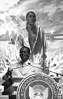Обама пишет: «Мы должны повести за собой мир». Под стать Бендеру с его Нью-Васюками, Обама заявляет: «Задача Соединенных Штатов обеспечить глобальное лидерство». Все это связано с «великой перспективой и историческим предназначением Америки».
«Если меня изберут президентом, то я начну с возобновления этой перспективы и этого предназначения в тот же день, как только займу должность». Эти мессианские притязания нашли отражение в некоторых плакатах, где Обама представлен в роли мессии.
Он намерен достичь глобального лидерства не только политического, но и духовного, что и составляет основу сионистского проекта глобального государства.
В узком смысле, лидер – это человек, чье право решать и управлять признано группой. Глобальный лидер, таким образом, – это некое образование, чье право решать и управлять признано человечеством. Но сейчас, когда человечество поделено на народы, имеющие свою религиозную идентичность и живущие в национальных государствах, право решать и управлять в духовной сфере принадлежит Богу, а в сфере политической – национальной власти. Глобальное лидерство в духовной и политической сфере только одной страны предполагает отказ от религиозной идентичности и национальной власти и передачу права решать и управлять только одной стране или, точнее, группе лиц, которые эту страну используют для достижения своих целей. Коротко, это означает отказ от традиционной веры и национальной государственности. Ведь если признавать кого-то лидером, значит ставить его выше себя, ориентироваться на него как на высший авторитет и подчиняться ему.
Если какое-то национальное государство само, добровольно готово в ущерб своим национальным интересам, сдавая свой суверенитет, подчиняться США или подконтрольному им Западу, признав их как высший авторитет, значит, США добились своей цели и стали для этого национального государства лидером.
Но есть страны, которые не признают этот авторитет и не хотят добровольно отказываться от религиозной идентичности и государственности. И такие страны, не желающие подчиняться, не видят в США даже регионального лидера. На этот случай у претендента на глобальный престол есть другие, силовые методы утверждения себя в качестве лидера. Источником его власти в этой ситуации становится насилие. Именно на нем основывается лидерство. Глобальное лидерство утверждается с помощью глобальной войны.
Обама так пишет об этом: «Чтобы возобновить американское лидерство в мире, мы должны немедленно начать работать над восстановлением наших вооруженных сил. Сильные вооруженные силы, вот то, что более, чем необходимо для поддержания мира». Правда, в контексте идеологии Обамы – мир означает войну, а поддержание мира – означает усмирение, ликвидацию сопротивления тех, кто не признает лидерства и не хочет с этим мириться.
«Мы должны использовать этот момент для того, чтобы одновременно перестроить наши вооруженные силы и подготовить их для задач будущего. Мы должны сохранить возможность быстро уничтожать любую обычную угрозу нашей стране и нашим жизненно важным интересам. Но мы должны быть также лучше подготовлены для проведения наземных операций для того, чтобы справиться с противниками, которые ведут асимметричные и высоко адаптивные кампании в глобальном масштабе». Как известно, зоной жизненно важных интересов США сейчас объявлен весь мир. Поэтому это высказывание означает глобальную агрессивную войну против тех, кто не позволяет США реализовывать свои жизненно важные интересы на территории чужого государства и не согласен с такой постановкой вопроса.
Но, поскольку только одними бомбардировками с воздуха в отношении несогласных с глобальным лидерством не обойдешься, требуются еще и наземные операции для преодоления сопротивления народа, не желающего отказываться от своей веры и государственности и не признающего глобального политического и духовного лидера. Народу в условиях уничтожения власти и разгрома вооруженных сил в результате подкупа и измены их высшего руководства (как это было в Ираке), остается рассчитывать только на себя и на партизанское движение, иррегулярные действия, которые больше всего пугают «глобального лидера».
Для ведения войны Обама предусматривает увеличение численности сухопутных сил и сил морской пехоты. «Мы должны комплектовать наши вооруженные силы самыми лучшими войсками и инвестировать в их способность одерживать победы. Мы должны обеспечить наших военнослужащих самым лучшим оборудованием, надежной защитой, самыми высокими зарплатами и лучшими возможностями подготовки. Каждая программа обучения должна быть пересмотрена в свете текущих потребностей и имеющихся пробелов, а также вероятных будущих сценариев угроз».
Они серьезно готовят свои вооруженные силы к ведению глобальной агрессивной войны за глобальное лидерство. Скажите, а как можно стать глобальным лидером, не покорив самой большой по площади и самой богатой ресурсами страны мира, коей является Россия? Да никак. Это абсолютно невозможно и немыслимо. Поэтому все эти масштабные приготовления, вся эта милитаризация, стремительное наращивание военных расходов подчинено только одной главной цели: покорить Русь, взять реванш за разгром Хазарии.
Обама был приведен к власти хазарами для того, чтобы начать войну против нашей веры и государственности за духовное и политическое господство над Святой Русью.
И готовятся они воевать не с властью и даже не с нашими вооруженными силами. Для них они, надо полагать, уже не представляют никакой угрозы. Судя по тому, что пишет Обама, они планируют вести асимметричную войну против нашего народа как носителя пугающего их Православия и идеи сильной православной имперской государственности. Асимметричная война означает войну нетрадиционную, которая ведется нетрадиционными методами, как правило, иррегулярными силами.
Этот сценарий нам нужно отрабатывать уже сейчас. Остатки наших вооруженных сил должны будут его продумать и в случае вооруженной агрессии возглавить партизанское движение, которое, как в древности, станет, скорее всего, главной силой сопротивления хазарским наемникам из США. Подчеркну, что они готовятся именно к этим иррегулярным боевым действиям, которые, по их прогнозам, охватят всю территорию бывшего Советского Союза, а точнее, Российской империи. Это и будут «противники, которые ведут асимметричные и высоко адаптивные компании в глобальном масштабе». И, как видно из вышеизложенного, никакая Аль-Каида здесь не при чем.
Сети наркотрафика, контрабанды оружия и частных военных компаний у хазар тоже под контролем. Это, в сущности, финансовое и диверсионное дополнение к их вооруженным силам. Других сил, кроме сил народов Российской империи, которые могут быть названы противником Хазарии и которые способны организовать и вести «асимметричные и высоко адаптивные кампании в глобальном масштабе» нет. Мусульманские народы, не желающие быть покоренными, примкнут к России.
На самом деле, это будет битва нашего народа за Святую Русь, за воплощаемые ею Третий Рим и Новый Иерусалим.
Далее в своей статье Обама пишет: «Наши вооруженные силы должны будут перестроить свой потенциал и реформировать других». Эти реформы армий других стран, которые проводят США в рамках разных программ типа «Обучи и оснасти», на деле означают встраивание колониальных армий в стратегию захвата мирового господства и полную сдачу суверенитета стран, признавших США глобальным лидером. Их готовят к этой самой асимметричной войне, то есть к ведению иррегулярных действий.
Для этого колониальные армии перестраиваются на сетевые принципы. Рушится иерархическая организация регулярных сил национальных государств и создается сетевая структура иррегулярной армии наемников. Таким образом, сейчас реформируют армию Грузии. Ее планируют превратить в своего рода бандформирования, оснащенные современным вооружением и средствами защиты, которые будут вести сетевую войну против нас.
Напомню, что концепция сетевой войны, которую активно внедряет у себя и среди своих союзников Пентагон, предусматривает создание подразделений, способных самостоятельно действовать на обширных территориях, при необходимости объединяясь для выполнения общей задачи (сетевой принцип построения).
Как написано во Всеобъемлющем докладе о состоянии ВС США: «Территориально рассредоточенные операции в Тихом, Индийском океанах, Центральной Азии, Среднем Востоке, на Кавказе, Балканах, Африке, Латинской Америке делают очевидным особое значение небольших отрядов, способных выполнять специфические задачи, четко ориентированные на местные условия».
Для этого и созданы в армии США и затем, по приказу Саркози, в армии Франции так называемые мобильные бригады. Они предназначены для ведения сетевых войн в глобальном масштабе.
Нам, судя по всему, придется столкнуться с этим типом войн не только на Кавказе, но и на всей нашей территории. Но сеть без руководства со стороны регулярных иерархически организованных вооруженных сил, быстро выходит из-под контроля, теряет управляемость и легко может быть включена в другие сети, например, в сети частных военных компаний, пополнив собой армию глобальной Хазарии. На это и делается ставка, на полную оперативную совместимость сетевых сил десуверенизированных государств с сетями ЧВК и на их полное поглощение этими сетями.
Опасность для России при этом заключается в том, что согласно принятому в Министерстве обороны РФ решению о переходе на принцип мобильных бригад, у нас будет сокращено по самым скромным подсчетам 230 тысяч военнослужащих, из них около 150 тысяч офицеров. Правда, их планируют переучивать. Но за короткий срок нельзя подготовить профессионала высокого уровня, которого может кто-то взять на достойное место. В условиях финансового кризиса и стремительно нарастающей безработицы они оказываются за бортом общества. У них есть семьи, которые нужно содержать. Гд е им можно заработать денег? Единственная их профессия – это война. И главное место, где их будут ждать с распростертыми объятиями и где им будут платить большие деньги – это транснациональные армии – частные военные компании (ЧВК). Этих увольняемых офицеров, как будто нарочно, толкают в наемники, им не оставляют другого выхода. Но ЧВК используются для войны против России. 230 тысяч – это резерв для готовой профессиональной армии, причем со знанием русского языка, психологии, местности, обычаев и т.д, и т.п. Нас, как в начале прошлого века, опять загоняют в капкан, страшной по масштабам уничтожения, гражданской войны.
Обама настроен агрессивно, впрочем, как и его исторически воинственные хазарские хозяева, которых он убеждает в своем милитаризме, пытаясь им понравиться: «Я не буду сомневаться в том, чтобы использовать силу в одностороннем порядке в случае, если возникнет необходимость защитить американцев или наши жизненные интересы повсюду, где бы ни было совершено нападение или где бы ни возникла непосредственная угроза.
Мы также должны быть готовы к использованию вооруженных сил в условиях превышения самообороны с тем, чтобы обеспечить общую безопасность, которая является фундаментом глобальной стабильности, в целях поддержки друзей, участвуя в операциях по установлению стабильности и восстановлению или по противодействию массовым злодеяниям».
У масонов есть такой лозунг: «извращать, чтобы держать под контролем». Вот эта цитата – это сплошное извращение, то есть ложь, используемая для того, чтобы держать под контролем массовое сознание. Это такой криптоязык.
То, что здесь названо «превышением самообороны», на самом деле означает превентивную войну против того, кого они наметили уничтожить. Далее в цитате следуют понятие «общая безопасность», которой в условиях ставки на агрессию, быть просто не может. Это ложь и манипулирование словами.
В ситуации, когда кто-то стремится к глобальному лидерству, утверждая его с помощью оружия, «глобальная стабильность» означает не что иное, как подавление оружием всех, кто не захочет подчиниться.
Затем Обама говорит о поддержке друзей, под которыми следует понимать преданных глобальной элите марионеток, которых она сама же и привела к власти в результате войн, революций и переворотов. В Осетии они поддерживали друга Саакашвили. Когда-то другом был Хуссейн. Потом они его убили.
В связи с этими друзьями возникает полная информационная бессмыслица. Ведь если у них есть друзья, то в этой парадигме должны быть и враги. Но если есть враги, то как можно говорить об «общей безопасности»? Значит, эта «общая безопасность» означает безопасность для глобальной элиты и их марионеток. Для этих последних до поры до времени.
А что же подразумевается под «операциями по установлению стабильности и восстановлению»? Так у них называются войны в Ираке и Афганистане, в которых счет погибших среди мирного населения идет на десятки и сотни тысяч.
И дальше прямо по пословице – «на воре шапка горит» – Обама пишет об «операциях по противодействию массовым злодеяниям». В таком случае им нужно будет вести войну против самих себя, то есть совершить самоубийство.
Все это уже было с Гитлером и фашистской Германией. «История учит тому, что она ничему не учит».
Эта цитата, как и всё, что написано в статье – образец криптоязыка, писание между строк. Вся эта идеология в чистом виде укладывается в хазарскую антисистемную идеологию сионизма, одним из ответвлений которой стал неоконсерватизм. Его основоположником был Лео Штраус (1899-1973), хазарин, эмигрировавший из Германии в США.
Хотя Обама и его команда на словах заявляют, что выступают против неоконсерватизма и неоконсерваторов, но на деле они, в полной мере, следуют неоконсервативным идеям и принципам. Более того, нынешняя команда Обамы практически наполовину состоит из этих самых неоконсерваторов, то есть произраильского, то есть прохазарского лобби.
Коротко напомню основные идеи Штрауса, которые стали фундаментом политики США и Запада в целом.
– Направленность на обеспечение интересов и безопасности Израиля.
– Приоритетная роль вооруженных сил (лозунг «мир через силу»).
– Люди делятся на тех, кто предназначен управлять (высших) и тех, кем нужно управлять (низших).
– Власть мистической аристократии, руководящей человечеством и указывающей ему, что есть добро, а что зло. («естественное право высших править низшими»)
– Людьми можно управлять только тогда, когда они объединены, а объединить их можно только против других людей.
– Политический порядок может быть стабилен, если он объединен общей угрозой. Если ее нет, то ее нужно сфабриковать.
– Ставка на войну. Постоянная война, а не постоянный мир является идеалом.
– Обман граждан теми, кто находится у власти, имеет критически важное значение.
Ну и наконец, основа каббалистической философии – это криптоязык, то самое писание между строк. Штраус так пишет об этом в одной из своих работ: «…автор, который хочет обратиться только к думающим людям, должен писать таким образом, чтобы только внимательный читатель смог понять истинное значение, заложенное в содержание его книги.
…Писание между строк. Это выражение очевидно метафорично» («Persecution and the Art of Writing», Leo Strauss, The Maharal of Prague and Rabbi Judah The Prince).
Статья Обамы и есть «писание между строк», изложение иными словами идеологии неоконсерватизма.
Раздел своей статьи, посвященный вооруженным силам, Обама заканчивает мыслью о том, что, если США затевают какую-то войну, то в нее должны быть втянуты все союзники и друзья-марионетки: «Но когда мы используем силу в ситуациях превышения самообороны, мы должны приложить все усилия, чтобы обеспечить максимальную поддержку и участие других».
Для того, чтобы обеспечить «максимальную поддержку и участие других», их вооруженные силы должны быть полностью совместимы в оперативном и организационном отношении с силами США. Поэтому их всех, включая Грузинские вооруженные силы, переводят на сетевые принципы военного колониального строительства, которые требуют создания «мобильных бригад».
Максимальное привлечение других означает эскалацию войны и ее глобализацию, означает превращение «постоянного мира в постоянную войну» – реализацию идеи и идеала Штрауса.
Но вот, наконец, читая статью, мы находим упоминание о России. Об отношениях с нашей страной Обама пишет так: «Мы не должны проявлять нерешительность в продвижении большей демократии и обеспечении подотчетности в России».
Обама, видимо забыл, что Россия пока еще числится в ряду суверенных государств и, к счастью, не относится к друзьям-марионеткам США. Непростительная потеря памяти у молодого человека.
Ну и насчет «продвижения демократии» в России. О какой демократии идет речь? О демократии по-американски, по-неоконсервативному, по-обамовски.
Обаму поддержали известные в США демократические организации, которые, послушав его выступления в ходе предвыборной кампании и узнав его моральные установки, признали его своим. Так вот светоч демократии Обама получил полную поддержку от таких организаций, как: Национальная лига действий в защиту права на аборт (100% за Обаму), Национальная организация женщин, выступающая за права лесбиянок (100% за Обаму), основанная Аланом Гутмахером Федерация планирования семьи, выступающая за аборты (100% за Обаму), и стоящий на позициях либерализма Американский союз гражданских свобод (83% за Обаму).
В штате Иллинойс Обама выступил против Акта о защите детей, родившихся живыми, который подразумевал медицинскую помощь зародышу, выжившему после аборта.
Среди первых решений, принятых Обамой, указ о снятии запрета на финансирование из госбюджета США деятельности международных организаций, занимающихся в странах третьего мира планированием семьи, которое включает не только производство абортов, но и пропаганду абортов и стерилизации, а также растление детей под маркой так называемого полового воспитания.
Позиция Обамы в отношении абортов это не просто позиция политика. Это свидетельство его духовной позиции. Ведь аборты – это убийство и смерть. Это состояние души, которая ориентирована на убийство и смерть, которая будет их сеять везде. Колену Данову, которое исторически поклоняется Молоху, требующему человеческих жертвоприношений, как раз и нужен был такой правитель-марионетка, для которого убийство и смерть – это норма. А раз так, то война для него, необходимая сейчас мировым банкирам, будет потребностью.
Сообщается, что сразу после издания указа, соответствующее уведомление президентская администрация направила в Агентство международного развития США, через которое осуществляется финансирование организаций, практикующих либо пропагандирующих аборты, в том числе, занятых планированием семьи.
Россия в свое время оказалась одной из жертв агрессии этих организаций, финансируемых по линии США. Это стоило нам колоссальных человеческих потерь, с которыми не сравнится никакая из пережитых войн.
Что же касается полового воспитания, то, как оказалось, оно еще к тому же занимается пропагандой гомосексуализма. Это тоже в духе Обамы. Его приверженность интересам сексуальных меньшинств широко известна и является предметом его гордости.
Был открыт целый сайт «Лесбиянки, гомосексуалисты, бисексуалы и трансвеститы (ЛГБТ) за Обаму». Он открывается цитатой из Обамы: «…в своей основе права ЛГБТ свидетельствуют о том, кто мы такие, как американцы…»
Обама показал, кто он такой, и назначил открытого гомосексуалиста Джона Берри главой Управления по кадрам своей администрации, ответственным за кадровую политику в отношении всех гражданских федеральных служащих. До этого Берри был директором Смитсоновского зоопарка в Вашингтоне, а перед этой должностью занимал пост заместителя министра внутренних дел в администрации Билла Клинтона.
Новый американский президент пообещал принять закон об однополых браках и закон, который заставлял бы работодателей принимать на работу ЛГБТ и вводил бы ответственность за отказ. Невольно возникает вопрос, а на религиозные христианские организации этот суровый закон тоже будет распространяться?
Обама намерен включить любые высказывания против ЛГБТ в перечень преступлений на почве ненависти, распространив на них действующий в США соответствующий закон.
Под эту статью тогда подпадает Первое послание к Коринфянам святого апостола Павла, где это извращение рассматривается как грех, несовместимый со спасением человеческой души: «Или не знаете, что неправедные Царства Божия не наследуют? Не обманывайтесь: ни блудники, ни идолослужители, ни прелюбодеи, ни малакии, ни мужеложники, ни воры, ни лихоимцы, ни пьяницы, ни злоречивые, ни хищники – Царства Божия не наследуют» (1 Кор.6, 9-10).
Обама также сказал, что его первым законом будет закон о свободе выбора, который легализует аборты по желанию. Этот закон практически сведет к нулю все существующие ограничения на аборт, то есть человекоубийство. Но тогда, Книга, где написана заповедь «не убий» тоже оказывается вне за кона. Но если человекоубийство становится нормой закона, то такой закон может быть написан только теми, кто служит тому, кто «…был человекоубийца от начала» (Ин. 8, 44).
В обществе, где грех объявляется нормой и даже идеалом, а высказывания против него преступлением, создается фундамент для объявления Евангелия вне закона, а власть, способствующую этому, можно смело назвать сатанократией.
Но если Евангелие оказывается вне закона, то людям неизбежно дадут что-то, что должно его заменить, своего рода анти-Евангелие. Ведь известно, что престол в душе никогда не бывает пуст. Там или Бог, или враг рода человеческого. И вот в Америке распространяются сообщения о том, что Обама «принесет в мир новое Евангелие» и даже сравнивают его с божеством.
Вот, если это и есть та демократия, которую они хотят «продвигать» в России, то мы, православные люди, будем не просто в стороне, мы будем против нее бороться, поскольку она несет в себе антихристианский, антихристов дух.
Путешествуя по тексту обаминой статьи, мы наталкиваемся на отношения с Африкой. Такой ажиотаж, такая трогательная забота США об урегулировании конфликтов, которые они сами там провоцируют, финансируют и подогревают с помощью ЧВК, которые там кишат как змеи. Зачем им Африка, зачем огонь бесконечных войн там? По мнению американских экспертов, это делается по следующим причинам.
В Африке много сырья. Но есть еще одно обстоятельство, которое не дает хазарам покоя. В Африку активно внедрился и распространил свое влияние Китай. Африка для Китая – очень важный источник ресурсов. США ставят задачу убрать Китай из Африки. Как убрать, ведь он сам не уйдет. Для этого пущены все средства, чтобы дестабилизировать обстановку в Африке и вынудить Китай уйти из охваченного организованными США войнами региона. В конце концов, народы Африки, измученные и изнуренные этими войнами, сами сдадут себя, свой суверенитет и свою государственность глобальной элите. Только бы кончилось кровопролитие. Таким образом, достигается региональное лидерство, как предпосылка лидерства глобального. А Африка после периода управляемого хаоса становится готова к вступлению в Глобальный каганат.
Но как же Китай? Ведь он лишился ключевого источника ресурсов, а без них не обойдешься. Страна колоссальная, потребности колоссальные. Что делать и где искать ресурсы? Единственным регионом оказывается Сибирь, где Китай сталкивают с Россией. Обама приведен к власти, чтобы реализовать этот сценарий: через дестабилизацию обстановки в Африке вытеснить Китай, установить контроль над регионом, разгосударствить его, включить его в новый мировой порядок и столкнуть в чудовищной войне Китай и Россию. Вот задача Обамы как президента. «Уничтожай своих врагов руками своих врагов».
В плане глобализации и внедрения нового мирового порядка в каждый дом Обама планирует пойти много дальше, чем его предшественники. Так он заявляет в статье о том, что планирует создать Фонд глобального образования, капитал которого составит 2 млрд. Этот фонд должен, как заявляет Обама, «объединить мир вместе в вопросах ликвидации дефицита глобального образования». Мы все привыкли к понятию «национальное образование», применяемому в суверенных национальных государствах. Переход с национального на глобальное образование – это нечто новое, означающее десуверенизацию одной из ключевых сфер, на которых основан государственный суверенитет и сама государственность. Эта и другие инициативы Обамы подтверждают тот факт, что ему поручено выполнить масштабную работу по глобальным переменам, которые он обещал ничего не подозревающему американскому народу и человечеству.
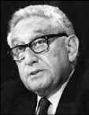Один из наиболее влиятельных представителей глобальной элиты Генри Киссинджер, заявил, что войны, ведущиеся по всему миру и международное уважение к Бараку Обаме, создали оптимальные условия для установления «нового мирового порядка» (Drew Zahn. World Net Daily January 6, 2009). Эту ремарку Киссинджер сделал в своем интервью CNBC. Когда его спросили, какой международный конфликт будет определять внешнюю политику администрации Обамы, он ответил: «Избранный президент приходит в свой офис в момент, когда происходят беспорядки во многих частях мира одновременно. Это и Индия, и Пакистан, движение джихадистов. Так что вы не можете сказать, что есть одна проблема, которая является самой важной. Но он может дать импульс американской внешней политике, частично потому, что его избрание с воодушевлением принято во всем мире. Его задачей будет разработать всеобъемлющую стратегию для Америки в этот период, когда действительно может быть создан новый мировой порядок. Это – великая возможность, это не только кризис».
В другом своем интервью, в прошлом году, которое Киссинджер дал PBS, он коснулся этой же темы, сказав: «Существует необходимость для нового мирового порядка. Я думаю, что в конце срока этой администрации со всем этим беспорядком и в начале срока следующей администрации мы можем действительно быть свидетелями создания нового мирового порядка, потому что народы, смотрящие в пропасть, даже в исламском мире, в какой-то момент вынуждены будут прийти к заключению, что их ожидания должны осуществиться в условиях другой системы» (Drew Zahn. World Net Daily January 6, 2009).
И, наконец, еще одно последовавшее за этим интервью Киссинджера, данном им Чарли Роуз, где он сказал, что нынешний глобальный кризис должен рассматриваться как возможность перейти к миру без границ, где национальные интересы вытесняются глобальной необходимостью.
Известно, что Киссинджер является постоянным участником заседаний Бильдербергского клуба, сверхсекретной организации глобальной элиты Невидимой Хазарии. В этот клуб входят представители правительственных кругов, политической и бизнесэлиты, а также академических и журналистских кругов. Как следует из просочившейся информации с последнего заседания Бильдерберга, его участники обсуждали глобалистскую повестку дня и необходимость реализации идеи, что понятие национального суверенитета является устаревшим и регрессивным».
Обозреватель CNBC, бравший интервью у Киссинджера, задал ему следующий заключительный вопрос: «Вы уверены в людях, которых президент Обама избрал в качестве своего окружения?» Киссинджер ответил: «Он назначил исключительно талантливую группу людей как в международной, так и в финансовой сферах».
Ну кто бы в этом сомневался. Международные советники Обамы либо поддерживали, либо до сих пор поддерживают войну в Ираке. На экономическом фронте у Обамы самые тесные связи с первыми лицами Федеральной резервной системы. Его теплые отношения с Бжезинским тоже хорошо известны. Обама является членом Совета по международным отношениям. Он участвовал вместе с Хилари Клинтон в тайной встрече в доме члена Бильдербергского клуба Дианы Файнштайн в то время, когда в 2008 году всего в нескольких милях от этого дома проходило заседание Бильдерберга. Приведем только несколько избранных Обамой в свое окружение лиц (Victor Thorn. «Change? Obama Inner Circle Filled With Bilderbergers». December 22, 2008).
Тимоти Гейтнер - министр финансов. Член Бильдерберга, Совета по международным отношениям, Трехсторонней комиссии, глава Федерального резервного банка Нью-Йорка, директор по вопросам политики развития МВФ, член связанной с Kissinger amp; Associates Группы тридцати (G30), архитектор закона о срочной государственной ссуде банкам.
Пол Волкер - руководитель Консультативного совета по реструктуризации экономики при Белом доме. Член Бильдерберга, Совета по международным отношениям, председатель североамериканского отделения Трехсторонней комиссии. Бывший глава Федеральной резервной системы в эпоху президентства Картера и Рейгана. Президент Федерального резервного банка Нью-Йорка, член G30, директор компании «Ротшильд Вулфенсон». Давний партнер семьи Рокфеллеров.
Как пишет Вебстер Тарпли в своей статье «Привет от Барки: Профсоюзы выброшены за борт» (22.11.2008): «Режим Обамы формируется из банкиров, банкирами и ради банкиров… Обама выступает в роли не более чем ничтожной куклы торговцев деривативами с УоллСтрит и махинаторами оккупационных войн».
Рам Эммануэль - правая рука президента Обамы, руководитель аппарата Белого дома. Это – третий по значимости пост в правительственной иерархии США. Он несет ответственность за подбор кадров для аппарата правительства, связь между Белым домом и Конгрессом США, внутреннюю политику страны и работу кабинета министров. Согласно американским законам, министры не отчитываются напрямую президенту США, а передают информацию главе канцелярии, который затем решает, кто из них встретится с президентом. Исключение из этого правила составляют лишь глава госдепартамента и министр обороны, которые общаются с президентом при посредстве советника по национальной безопасности.
Вебстер Тарпли пишет: «Первые назначения в команде Обамы напоминают не о «новом курсе» Рузвельта, а о корпоративном государстве в стиле Муссолини… Назначение злобного хама по имени Рам Эммануэль на должность главы аппарата вызвало оторопь даже у самых завзятых или замшелых комментаторов. Рам – бывший офицер израильской армии, охваченный страстью производства войн» («Привет от Барки: Профсоюзы выброшены за борт», 22.11.2008)
Эммануэль был главным советником Клинтона в Белом Доме с 1993 по 1998. Сначала он стал помощником президента по политическим вопросам, а потом старшим советником по обороне и стратегии.
Эммануэль служил добровольцем в израильской армии во время войны в Персидском заливе.
Позицией “пленных не брать” заслужил прозвище «Рамбо».
Он – пламенный сионист. Его отец был членом израильской террористической организации Иргун. Шерман Школьник из Чикаго назвал Рама Эммануэля «действующим главным резидентом Моссада в Северной Америке».
Рам Эммануэль является соавтором книги «План: Величайшая идея для Америки». Заключительная глава в ней, посвященная международной политике, названа «Новая стратегия завершения войны с террором». В ней, в частности, говорится: «Используя все рычаги, нам необходимо сделать нашу страну безопасной. Америка должна возглавить мировую борьбу против распространения зла и тоталитаризма. Нам необходимо создать военную «зеленую линию» в мире под контролем специальных сил США и морской пехоты, для этого необходимо увеличить численность армии США на 100 000 человек…».
И еще одна цитата: «Мы должны перестать пытаться воевать с террором только за себя. И наконец, мы должны дать нашим войскам право на операции здесь, дома. И мы должны защитить нашу родину и гражданские свободы, создав для этого внутренние контртеррористические силы, подобные британской МI15…».
Об Эммануэле говорят, что “он посылал протухшую рыбу бывшим коллегам после того, как их пути расходились”. Это знак, который посылает мафия.
В 1996 году в ночь после выборов “Эммануэль был настолько зол на врагов президента, что на торжественном ужине с коллегами по предвыборной борьбе он встал, схватил столовый нож и начал выкрикивать список предателей, крича “Мертвый!… Мертвый!… Мертвый!” и вонзая нож в стол после каждого имени. Когда все было закончено, стол выглядел как лунный пейзаж. Это напоминало что-то из фильма «Крестный отец» («The Enforcer», Rolling Stone, Oct. 20, 2005).
Хилари Клинтон - государственный секретарь. Член Бильдерберга, Совета по международным отношениям, Трехсторонней комиссии, тайный агент ЦРУ. Как пишут эксперты: «Клинтон приставлена к Обаме своего рода «смотрящей» от Бильдербергского клуба и ряда других наднациональных мировых институтов. Рядом с ней Бжезинский, Киссинджер, Олбрайт и другие реальные авторы американской внешнеполитической стратегии и идеологии мирового господства».
Саманта Пауэр, которая ушла в отставку с должности советника Обамы по внешней политике, сказала о Клинтон следующее: «Она монстр… Количество мошеннических проделок, которые ею совершались, поистине велико».
Две фотографии являются наглядной иллюстрацией того, что эти «муж и жена – одна сатана».
Роберт Гейтс - министр обороны. Член Бильдерберга, Совета по международным отношениям, бывший директор ЦРУ. Возглавлял совместно с Бжезинским рабочую группу в Совете по международным отношениям.
Джанет Наполетано - министр внутренней безопасности. Член Совета по международным отношениям. Джеймс Джонс - советник по национальной безопасности. Член Бильдерберга, Трехсторонней комиссии, бывший верховный главнокомандующий объединенными вооруженными силами НАТО в Европе, бывший глава европейского командования ВС США, генерал морской пехоты в отставке. Член совета директоров компаний Шеврон и Боинг. Сотрудник Института Брента Скоукрофта по международным проблемам (считается, что именно Скоукрофт после развала СССР стал широко использовать понятие «новый мировой порядок»). Сотрудниками этого института являются также Бжезинский и Киссинджер.
Сьюзан Райс - посол США в ООН. Член Совета по международным отношениям, сотрудник Брукингского института, финансируемого Фондом Форда и Рокфеллерами. Член Аспенской стратегической группы, наряду с такими акулами Бильдерберга как Ричард Армитидж и Мадлен Олбрайт.
Лоренс Саммерс - возглавляет Национальный экономический совет. Член Бильдерберга, Совета по международным отношениям, Трехсторонней комиссии, министр финансов во время президентства Клинтона, главный экономист Всемирного банка, бывший президент Гарвардского университета, член совета директоров Брукингского института, большой сторонник глобализации, протеже Дэвида Рокфеллера.
Дэвид Аксельрод - главный советник Обамы. Главный политический стратег Обамы. Сионист. Аксельрод формировал и создавал кандидата в президенты Обаму в течение 16 лет. «The New York Times» так пишет об Аксельроде:
«Это главный стратег Обамы, которому он особо доверяет». (Barack Obama - David Axelrod - Obama’s Narrator, 1.04.2007).
Аксельрод встретил Обаму, когда Обаме было 30 лет. Бетти Лу Зальцман, специалистка по прогрессивной политике в Чикаго и дочь очень влиятельного сиониста Филиппа Ключника, бывшего президента ложи Бнай-Брит, предложила, чтобы Обама и Аксельрод познакомились друг с другом. С тех пор «Аксельрод работал с историей жизни Обамы вновь и вновь». Бетти Лу Зальцман поддерживала и финансировала политическую карьеру Обамы с 1992 года. В том же году, когда Обаме было 30 лет, Зальцман сказала Аксельроду и другим: «Он будет нашим первым черным президентом». После этого Зальцман наняла Аксельрода создать из Обамы кандидата в президенты.
Аксельрод пишет для Обамы речи и инструктирует его как себя вести.
Аксельрод определил путь, по которому пойдет Обама: «Избранный президент США Барак Обама в своей политике будет исходить из того, что между США и Израилем существуют «особые взаимоотношения».
Аксельрод подтвердил также, что Обама «намерен тесно работать с израильтянами». «Они являются нашим отличным союзником, самым важным союзником в регионе, и это тот основополагающий принцип, из которого он (Обама) будет исходить в работе», – сказал советник избранного президента США (РИА Новости 29/12/2008).
Произраильская позиция Обамы была отмечена прессой. Так «The Chicago Jewish News», рупор Израиля в США, опубликовала длинную статью на эту тему (Obama and the Jews’ by Pauline Dubkin, October 24, 2008), где содержится следующая цитата: «Евреи создали его (Обаму). Куда бы вы ни посмотрели, везде вокруг него еврейское присутствие». Это всепроникающее присутствие в формировании Обамы как президента дало основание некоторым журналистам сравнить его с големом, человекоподобным монстром, созданным раввином-каббалистом для того, чтобы он уничтожал врагов.
Статья Обамы заканчивается просто знаковыми словами: «Настал момент восстановить доверие и обновить веру нашего народа…, который снова поведет за собой мир».
Ну вот и до веры добрались. Раньше у нас был гегемон политический, а теперь в свете глобализации возникает и глобальный духовный.
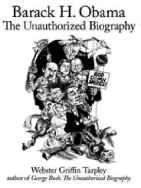Вебстер Тарпли – автор книги «Барак Обама. Несанкционированная биография» пишет, что Обама является «злом, которое трудно себе представить». Обама, по мнению Тарпли, будет представлять «современную версию фашистского корпоративного государства времен Муссолини». Динамика прихода Обамы к власти напоминает динамику прихода к власти Муссолини в условиях нарастания фашизма в Италии.
Вот только некоторые выводы, которые делает Тарпли, основываясь на своем исследовании. Предвыборная кампания Обамы представляла собой «мощную попытку манипулирования, разделения, фрагментации, деморализации и дезориентации американского народа». «Его методы являют собой беспрецедентную атаку на человеческую свободу и сознание». Тарпли убежден, что Обама будет энергично проводить политику Сороса-Бжезинского, направленную на усиление конфронтации с Россией, используя для этого предлоги защиты прав человека и различные гуманитарные соображения. Это то, что американцы обкатали в Югославии в рамках концепции «гуманитарная интервенция». Тарпли пишет, что нет более безумной идеи, чем вступать в войну с Россией. Но именно на это нацелен Обама. «Обама придаст американскому империализму псевдо-революционное второе дыхание. Обама, действительно, самый опасный политик-империалист».
Джо Байден тоже одержим антироссийскими настроениями. В Сиэтле 19 октября 2008 года он пообещал международное столкновение с Россией в период режима Обамы. Тарпли говорит, что для создания образа врага из России могут быть совершены провокации в форме террористических актов, в которых потом обвинят Россию. «Все это планируется сделать для того, чтобы включить Россию в список врагов и получить повод для организации против нее вооруженной агрессии объединенных сил, состоящих из стран Восточной Европы, являющихся марионетками США».
Все это четко вписывается в контекст текущих событий. Newsru.com в своем сообщении 1 декабря 2008 года приводит слова первого заместителя руководителя Департамента военной контрразведки ФСБ России генерал-лейтенанта Владимира Носова: «Грузинские власти не отказались от силового решения возвращения в состав Грузии республик Южная Осетия и Абхазия. В этих целях предпринимаются шаги, направленные на дестабилизацию обстановки в независимых республиках, активизируется разведывательно-диверсионная деятельность против контингента российских войск».
В сообщении указывается, что ФСБ России получена информации о том, что в течение осени этого года спецслужбы Грузии провели на своей территории несколько задержаний российских граждан, посещавших свои семьи, в числе этих задержанных были также военнослужащие Минобороны России. «После этих задержаний, которые снимались на видеокамеру, россиянам подбрасывалось оружие, специально подготовленные «шпионские» материалы и тому подобное. Затем под угрозой длительного лишения свободы и преследования родственников сотрудники грузинских спецслужб заставляли задержанных давать под видеокамеру сфабрикованные «показания», – подчеркнул Носов.
По его словам, суть этих фабрикаций грузинских спецслужбы сводилась к тому, что «российские граждане якобы направлялись с различными заданиями, имевшими конечной целью убийство президента Грузии и свержение его режима».
В ФСБ России не исключают, что фабрикуемые фальшивки грузинские спецслужбы планируют вбросить в ближайшее время в грузинские и западные СМИ, направить в Гаагский суд в качестве «доказательств» против России.
Высказывания Байдена, по убеждению Тарпли, не оставляют сомнения, что Обама принесет с собой такую опасную международную конфронтацию, о которой неоконы раньше даже и не мечтали».
Тарпли не сомневается, что «ареной новых угроз теперь является уже не Средний Восток, но, прежде всего, Россия. И это уже показали события в Грузии. Весь американский внешнеполитический истеблишмент истерически сосредоточен на сведении счетов с Россией. Эта новая форма политики элиты оси Лондон-Нью-Йорк-Вашингтон, стремящейся таким образом навязать англо-американский мировой порядок на следующую сотню лет».
Тарпли в своей статье, посвященной поддержке Обамы со стороны Збигнева Бжезинского, (Confirmed - Obama Is Zbigniew Brzezinski Puppet 3-21-08), пишет: «Збиг молчит о том, что настоящей причиной, по которой он хочет сгладить некоторые аспекты американской агрессии на Среднем Востоке, является его желание освободить ресурсы для их использования в намного более масштабных и опасных авантюрах, которые готовит сейчас Трехсторонняя комиссия». Напомню, что это одна из трех главных масонских хазарских тайных организаций, к которым относятся еще Бильдербергский клуб и Совет по международным отношениям.
Сорос и Бжезинский два кукловода Обамы. Он – их марионетка. Сорос его финансировал, Бжезинский накачивал его идеологией.
Збиг стоял за отделением Косова и передачей его под власть террористической Армии освобождения Косова, что было хорошо спланированным ходом против Сербии и России в целях подготовки грядущей Операции Барбаросса II в войне с Москвой. Через своего сына Марка, еще одного высокопоставленного внешнеполитического контролера Обамы, Збиг стоит за кризисом, связанным с размещением в Польше и Чехии американских объектов ПРО. Збиг является вдохновителем новой политики ЦРУ, направленной на убийства пакистанского населения (под предлогом борьбы с террористами) без проведения консультаций с правительством этой страны.
ЦРУ тесно связано с семьей Обамы. Как пишет Тарпли, Обама был одним из 8 студентов, которые были отобраны, чтобы изучать советологию под руководством Бжезинского, который является высокопоставленным офицером ЦРУ. Затем Обама начал работать на связанную с ЦРУ Международную бизнес корпорацию, одной из специализаций которой является вербовка агентов для ЦРУ.
Кстати, офис этой организации находится также и в Москве на улице Зацепы. Особо любопытные могут зайти на сайт в Интернете.
На сайте корпорации сказано, что она «занимается организацией и проведением конференций, форумов и деловых встреч по актуальным вопросам международного сотрудничества для информирования, позиционирования и оказания содействия российским бизнес структурам на мировом рынке товаров и услуг».
А дальше идет информация, которую можно озаглавить «где ты, ягодка моя». Смотрите, что они пишут: «Мы объединяемся на удобных площадках для работы и общения представителей органов государственной власти, ведущих экспертов и аналитиков, главных отраслевых специалистов, представителей компетентных учреждений, научно-исследовательских и образовательных институтов, представителей малого и среднего бизнеса России и топ-менеджеров мировых компаний.
Мы создаем уникальную атмосферу для обмена информацией, развития диалога и сотрудничества, осуществления совместных планов и проектов, расширения международных контактов и дальнейшего заключения взаимовыгодных контрактов».
Интересно, а какой это информацией они там обмениваются и какие планы осуществляют с представителями органов государственной власти и компетентных учреждений, но, самое главное, какие взаимовыгодные контракты они с ними заключают.
Любопытно, что Центрально-Сибирская торгово-промышленная палата на своем сайте поместила анонс следующего содержания: «С целью обмена опытом в период с 15 по 21 февраля 2009 года в Мадриде, Барселоне (Испания) Международная Бизнес Корпорация проводит «Неделю Образования в Испании». В программе Форума: Конференция «Новейшие технологии в системе образования», посвященная обсуждению актуальных вопросов развития образовательной сферы. В мероприятиях примут участие руководители образовательных учреждений России, Администрация субъектов РФ, ведущие образовательные учреждения Испании. Уважаемый руководитель! Неделя образования станет для Красноярского края шагом для укрепления международных деловых контактов и реализации перспективных проектов. «Неделя Образования в Испании» – это развитие неформального диалога двух стран, практическое изучение возможностей продвижения интересов участников, изучения опыта и обмена информацией, определение приоритетов и стратегий развития сотрудничества в образовательной сфере. Центрально-Сибирская торгово-промышленная палата приглашает Вас принять участие в «Неделе Образования в Испании».
Зачем ЦРУ Сибирь понятно, зачем им нужно поставить систему нашего образования под свой контроль, включив в болонский губительный для нас процесс, тоже понятно. Понятно и то, для чего приглашают руководителей образовательных учреждений России и, самое главное, администрацию субъектов РФ. Можно представить себе содержание «неформального диалога» фактически с ЦРУ, и что будет в ходе этого диалога означать «практическое изучение возможностей продвижения интересов участников, изучения опыта и обмена информацией».
Понятно, зачем это нужно ЦРУ, но не понятно, зачем все это нужно нам.
Но вернемся к Обаме. Итак, после того, как он подружился с ЦРУ и стал их агентом, его карьера пошла как по маслу. Куда бы он ни баллотировался, в том числе и в американский сенат, его оппоненты вылетали с предвыборной гонки до выборов. А когда Обама выставил свою кандидатуру в президенты, его главным советником по внешнеполитическим вопросам стал никто иной, как один из высших офицеров ЦРУ Бжезинский.
Кстати, мать Обамы тоже была связана с ЦРУ и была их агентом. Ее завербовали в 1950 году, чтобы она проникла в быстро формировавшиеся вто время и широко распространившиеся организации, выступающие с националистических позиций и стоящие за права чернокожих.
Активную поддержку Обаме оказали также сенатор Джей Рокфеллер и руководитель Трехсторонней комиссии и Бильдербергского клуба Джозеф Най. Най является теоретиком концепции так называемой «мягкой силы», которая стала основой непрямого, тайного подхода в американской стратегии ведения современной войны. Как криптоязык трудно различить, так по аналогии с этим трудно различить эту самую «мягкую войну», которую можно назвать криптовойной. Это новая форма агрессии, основанная на ведении экономической войны, подрывной работе, диверсиях, обмане и организации государственных переворотов. Например, в виде цветных революций.
Най и Рокфеллер хотят, чтобы Обама мобилизовал эту мягкую силу и направил ее на то, чтобы придать новый импульс росту американского империализма. Цель Бжезинского – конфронтация с Шанхайской организацией сотрудничества как главным центром сопротивления американо-британскому глобальному доминированию.
Но главной целью здесь все же является Россия.
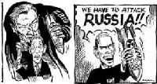27 августа 2008 года на съезде Демократической партии в Денвере нынешний вице-президент США Джозеф Байден, бывший тогда еще кандидатом, шедшим вместе с Обамой в паре, представил новый план настоящей войны – войны против России и Китая. Рассматривая этот план, аналитик Умберто Паскали в статье «Джо Байден: Россия, Китай, Индия: «настоящая война» (Global Research, August 28, 2008) пишет, что в нем повторяются ключевые идеи Бжезинского, одержимого решимостью идти к финальной битве с Россией и Азией.
Биография Байдена очень примечательна и связана с военными операциями. Он оказывал давление на президента Клинтона, требуя наказать сербов и послать американские частные военные компании для обучения боснийских боевиков. Байден первым объявил Слободана Милошевича военным преступником и стал, как сообщается, автором концепции «Lift and strike», ориентированной на нанесение ракетно-бомбовых ударов по Югославии и боснийским сербам, одновременно с введением эмбарго на поставки оружия в эту страну.
Кроме того, Байден вместе со своим другом, почетным президентом Совета по международным отношениям Лесли Гельбом разработал концепцию урегулирования иракского конфликта, где была заложена сионистская идея разделения Ирака на три государства – курдское, суннитское и шиитское.
Буш, как можно заключить из слов Байдена, провалил всю военную политику и вел неправильные, ненастоящие войны. Новая администрация Обамы развяжет настоящую войну, чтобы выступить против России, Китая и Индии.
Согласно позиции Байдена, администрация Буша была недостаточно воинственна. Напомню, что одной из отличительных черт хазарской натуры была чрезвычайная воинственность, даже страсть к войне. Война была их главным и единственным образом жизни. Антисистема, образовавшаяся из тюрков-хазар, исповедующих «агрессивный иудаизм», впоследствии создала идеологию сионизма – учение захвата власти над миром. Теодор Герцль – основоположник идеологии сионизма писал о том, что нельзя захватить мир, не покорив России. Байден сказал о себе: «Я сионист». Поэтому понятно, откуда у него эта хазарская воинственность и это сионистское стремление захватить власть над миром, используя войну против России.
Байден убежден, что военный истеблишмент будет с Обамой в этой «настоящей войне». Исходя из этой логики, надо полагать, войны в Афганистане и Ираке были ненастоящие, так, легкая разминка перед настоящим сражением.
Не случайным в связи с этими приготовлениями является и то, что Обама сохранил за Робертом Гейтсом пост министра обороны. Дело в том, что Гейтс близкий к Бжезинскому и его планам человек. Он работал с Бжезинским в Совете национальной безопасности во времена Картера. Для реализации маниакально русофобских планов Бжезинского (которому скоро стукнет 80 и он все никак не угомонится) и создается команда Обамы.
Экономический кризис в США сравнивают с «Великой Депрессией» 30-х годов, которую Рузвельт смог преодолеть благодаря тому что, спровоцировав атаку на Перл-Харбор, получил повод вступить во Вторую Мировую Войну. Именно благодаря этому он вышел из экономического кризиса. Война ему нужна была «как воздух». Аналогичная экономическая ситуация, ведущая к неизбежной войне, складывается и сейчас. Им нужна крупномасштабная, мировая война. А такой войной может быть только война против России, для чего нужно создать из России образ врага и убедить в этом население США.
Кстати, Франклин Рузвельт – это политический руководитель, который является для Обамы кумиром. Обама уже ведет приготовления к войне. Он, в частности, заявил об увеличении численности армии почти на 100 000 человек.
Обама еще до своего избрания заявил о планах привлечения молодежи к обеспечению безопасности США. Выступая 12 марта 2008 года в Чикаго в присутствии американских генералов и адмиралов, он произнес речь, посвященную национальной безопасности страны, как он ее назвал «ОбамАмерики». По сути, в речи была выдвинута мобилизационная стратегия, открывающая широкую дорогу деятельности частных военных компаний: «Мы должны закончить борьбу против Аль-Каиды. Мы не смиримся с существованием террористов, которые угрожают Америке. Мы должны использовать все элементы национальной мощи, чтобы бороться с угрозами 21 века. Мы должны увеличить нашу возможность ведения наземных операций. Мы должны дать нашим гражданским ведомствам возможность проводить операции наряду с нашими военными» («Obama's National Security Speech» Barack Obama, Remarks of Senator Barack Obama Endorsement by US Admirals and Generals, Chicago History Museum, March 12, 2008 Real Clear Politics).
И дальше следует такой призыв: «Мы должны побуждать молодое поколение американцев служить, оставаясь в гражданском статусе». Короче говоря, предлагается создать военизированные «гражданские силы обеспечения национальной безопасности», которые будут сформированы из американской молодежи, и «будут обладать такой же мощью» и «так же хорошо финансироваться, как и вооруженные силы США».
Ну, в общем, в какие фразы эти идеи не облекай, а все равно выходит «гитлерюгенд», то есть, в данном случае «обамаюгенд».
2 июля 2008 года Обама опять возвращается к этой идее в своем выступлении в Колорадо Спрингс и говорит об Америкорпусе (The AmeriCorps), формулируя аналог программы Гитлера для молодежи: «Сейчас наша нация менее безопасна. Бремя службы лежит на наших военных. Как президент я призову вас служить как активных граждан. Я призову новое поколение американцев присоединиться к нашим военным.
Я поставлю цель всем учащимся средних и высших школ проходить службу в течение 50 часов в год, и всем студентам колледжей проходить службу в течение 100 часов в год. Мы нуждаемся в вашей службе в этот момент, наш момент в истории». (Obama’s Remarks on Service, Wall Street Journal, July 2, 2008). Один из комментариев, оставленных американским читателем этой статьи на блоге, был предельно лаконичен: «Хайль Обама».
Обамизация означает милитаризацию Америки и направленность ее политики против России: «Вторжение России в Грузию создало серьезный вызов безопасности для США. Я буду противодействовать этому вызову, брошенному проявляющей все большую агрессивность Россией, и буду реализовывать стратегию, которая продвигает наши национальные интересы». Эта цитата была помещена на предвыборном сайте Обамы.
О возможном осложнении отношении с Россией в период президентства Обамы свидетельствует и тот факт, что его главным советником по вопросам политики в отношении России был Майкл Макфол, член Комитета конгресса по международным отношениям, один из руководителей Фонда Карнеги, фонда «Евразия», «Фридом Хаус» и других, связанных с американскими разведывательными службами, организаций. Именно они организовывали революции в Грузии и на Украине в целях смены режима. Причем наибольшее финансирование получала именно антироссийская составляющая этих переворотов.
Начинаются они, как правило, с того, что режим в стране-жертве политической агрессии объявляется недемократическим и, страшное дело, авторитарным. Ну а далее со всеми остановками, вперед к оккупационной или колониальной демократии. Майкл Макфол уже объявил режим в России авторитарным и, что примечательно, связал национальную безопасность США с необходимостью установления демократии в России. То есть, если у нас нет демократии, а они считают, что ее нет, то нацбезопасность США под жуткой угрозой. Мы тут все такие недемо кратичные спокойненько живем в России и не подозреваем, что тем самым создаем страшную опасность для США. То есть получается, кто выступает за демократию в России, тот выступает за американские интересы и безопасность США. А те, кто против демократии, тот враг. Майкл Макфол в своей статье «Доктрина Свободы» (Policy Review, апрель-май 2002) так прямо и пишет: «Мы должны изолировать и уничтожить наших врагов путем свержения их режимов… Последней целью американского могущества является создание международного сообщества демократических государств, которое включает в себя все регионы мира».
Причем, если ты будешь, как чистый ариец, извините, демократ, внутри своей страны защищать демократию, а, следовательно, вместе с ней интересы и безопасность США, тебе даже деньги за это будут платить. Майкл Макфол даже пишет, каким защитникам американских интересов они должны быть выделены. Их будут давать «смелым борцам за права человека, оппозиционным лидерам, бизнесменам и даже чиновникам внутри самих авторитарных режимов, тем чиновникам, которые еще настаивают на модернизации политической и экономической системы своих стран». Надо полагать, что если ты – чиновник, да еще и «смелый борец за права человека» (а зачем нам несмелые, несмелые нам не нужны), тебе заплатят вдвойне. Вот такая безбедная перспектива в условиях финансового кризиса вырисовывается. То есть, если увидите где-то борцов за демократию, знайте, они так деньги зарабатывают. Работа у них такая – демократию защищать. Ну а заодно и безопасность США обеспечивать в ущерб своей собственной, родной, национальной безопасности. Ну а если мы будем защищать чужую безопасность и интересы, то это получится уже колониальный режим. Короче, «демократизация» равно «колонизация».
Норман Ливергуд в своей статье «Новые стратегии политической клики» предупреждает: «Американские граждане должны знать грандиозные агрессивные планы, которые сейчас осуществляет криминальная политическая клика. Только полностью их понимая, мы сможем победить этот смертоносный заговор плутократов».
Ливергуд отмечает, что эти планы уже настолько очевидны, что клика даже, не скрывая, открыто публикует информацию о своем заговоре по политическому, экономическому и военному захвату мира. Представители глобальной элиты такие, как Бжезинский, Киссинджер и масса других составляют проект для своего глобального полицейского государства. Изучая эти проекты, мы можем понять, как демоническая клика планирует захватить полное господство над миром и затем это господство удерживать.
Описание чисто внешней стороны всего того, что происходит мире, невольно приобретает мозаичный, фрагментарный или, как сейчас выражаются, клиповый характер. Хаотичность описания внешних событий есть отражение хаоса, в который погружает мир хазарская антисистема. Мир воспринимается как поле битвы, где то здесь, то там взрывами вспыхивают разные события. Все эти стремительно меняющиеся события создают ощущение хаоса, распада целостности. Человек перестает понимать, что происходит, теряет способность самостоятельно осмысливать нагромождение событий и заодно теряет смысл жизни. Хаос в сознании порождает несвободу мыслей и хаос в душе, который, в свою очередь, есть преддверие духовного рабства. И, когда человек приходит в отчаяние от невозможности самому во всем разобраться и понять, что происходит, когда хаос захлестывает его и погружает в пучину, он инстинктивно ищет того, кто может навести порядок. И с удовольствием вверяет себя любому обольстителю, который предлагает мошеннические услуги и видимость порядка.
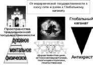Управляемый хаос для того и создается, чтобы уловить мятущиеся в хаосе души в рабство. Киссинджер заявляет: «Альтернативой новому мировому порядку является хаос» (Henry A. Kissinger, «The chance for a new world order,» International Herald Tribune, January 12, 2009). Ну так эта глобальная хазарская клика его и создает, чтобы вынудить народы принять этот ложный порядок.
Только вера наша православная может дать нам настоящие ориентиры в осмыслении того, что происходит и истинную свободу духовного выбора. Только она есть главный инструмент приведения хаоса в систему, задающую верный курс корабля нашей жизни в бушующем океане мира. И якорь этого корабля служит нам надеждой на спасение.
Когда мы проводим переговоры с руководителями США и других стран Запада, мы, естественно, строим наш диалог как общение между представителями национальных государств. Но проблема заключается в том, что мы с ними ведем разговор с этих позиций, а они выступают в отношениях с нами как представители мирового правительства Глобального каганата, связанные, переплетенные между собой и повязанные совершенными ими масштабными преступлениями. Для них их государственность только ширма для достижения главной цели – создания нового мирового порядка. Для них государственность, своя или чужая – помеха на пути реализации этих планов. И на данном этапе они способны действовать против своей государственности так же беспощадно, как они действуют против государственности других стран.
13 марта 2008 года члены Палаты представителей США встретились на секретном заседании, которое в таком засекреченном режиме проводилось всего четвертый раз за всю историю этого органа власти. То, что там было сообщено имело настолько ошеломительный характер, что кое-кто из присутствовавших там депутатов, все же рассказал об услышанном.
Членам Палаты представителей было сообщено то, что можно было бы назвать сценарием развала государственности Соединенных Штатов.
Этот сценарий включает:
– коллапс американской экономики;
– коллапс американской политической системы;
– гражданскую войну;
– облавы на американских граждан, обреченных быть бунтовщиками, которых спровоцировали выступить против правительства;
– помещение этих задержанных в лагеря, специально построенные для этих целей по всей территории США;
– возможные меры возмездия со стороны народа в отношении членов Конгресса за коллапсы;
– размещение членов Конгресса их семей в безопасных местах во время массовых общественных беспорядков;
– возможный распад США;
– необходимое и неизбежное слияние США, Канады и Мексики и создание Североамериканского союза;
– выпуск новой валюты «амеро» для трех народов этого Союза как необходимое экономическое решение;
– введение военного положения.
Итак, лидеры США и стран Запада сейчас выступают как представители мировой элиты против своей и чужой государственности. Поэтому нам нужно вести с ними переговоры с учетом этой их маниакально деструктивной и антигосударственнической направленности и не ожидать от них никакого позитива и уважения национальных интересов других государств. Иллюзии в этом отношении могут принести только вред и уже приносят его со всеми вытекающими отсюда разрушительными последствиями. При этом следует иметь в виду, что не только сами эти лидеры принадлежат к правительству невидимой Хазарии, но и их окружение, примером чему является команда Обамы.
В целях формирования глобальной религии хазары используют тот же принцип «глобализации через регионализацию». Этот принцип показал свою эффективность при строительстве нового политического и нового экономического порядка, когда страны, сдав свой политический и экономический суверенитет, согласились на создание, например, ЕС и евро. На очереди Североамериканский союз и амеро и так далее со всеми остановками.
Теперь нужно заставить цивилизации сдать свой суверенитет, то есть разрушить их через разрушение их основы – традиционной религии.
Руины традиционной государственности, необходимые для строительства Глобального каганата, возникают двумя путями. Во-первых, путем фрагментации, сепаратизма, сужения широкой многонациональной государственнической идентичности до идентичности этнической. Это процесс превращения государств-наций в этнические квазигосударства, подконтрольные невидимой Хазарии. Во-вторых, путем упомянутой регионализации, то есть расширения государственнической идентичности до транснациональной. Это процесс превращения государств-наций в региональные квазигосударства, подконтрольные невидимой Хазарии.
Несмотря на кажущуюся полярность этих двух путей: дезинтеграции и интеграции – эти две крайности смыкаются между собой, достигая одной и той же цели – подконтрольности Хазарии.
Аналогично этой же стратегии, руины традиционной духовности и, как следствие, руины цивилизации, необходимые для строительства Глобального каганата, возникают также двумя путями. Во-первых, путем фрагментации, раскола, сужения традиционной религиозной идентичности до идентичности сектантской или ее подмены идентичностью языческой и откровенно сатанинской. Во-вторых, путем упомянутой регионализации, то есть такой трансформации традиционной религии, которая влечет создание региональных религий, извращенных вероучений, подогнанных хазарами под потребности нового мирового порядка.
Здесь тоже происходит смыкание этих двух крайних подходов в единстве поставленной цели – подготовке духовного пространства человека и человечества к принятию глобальной религии антихриста.
Фрэнсис Фукуяма, один из ведущих американских философов, пишет: «К сожалению, базовый конфликт, перед которым мы стоим, гораздо шире и затрагивает не только небольшие группы террористов, но и всю общность радикальных исламистов и мусульман, для которых религиозная идентичность затмевает все другие политические ценности» (Ф. Фукуяма. Началась ли история опять? Огонек. 2002, 2 декабря).
То есть, если традиционная религиозная идентичность стоит выше политической, то, какой бы новый политический и экономический порядок вы не построили, эта идентичность не примет его и будет против него бороться. Мировое правительство невидимой Хазарии это понимает, и потому традиционная религиозная идентичность является главной мишенью и объектом уничтожения.
Подрывая традиционную религиозную идентичность, правительство Глобального каганата подрывает устои народа, связанные с его культурой, историей, победами в войнах, духом патриотизма, нравственной чистотой, то есть все то, что в конечном итоге формирует народ как национальную общность. Если русский народ перестанет быть носителем своего славного прошлого, одухотворенного величием объединяющей и вдохновляющей его Православной веры, он перестанет быть народом, утратив какую бы то ни было перспективу будущего существования. И всякие там проекты, «национальные идеи», «русские доктрины» и прочие искусственные, рукотворные нагромождения не помогут и не будут никогда реализованы в государственном масштабе, потому что без глубинного осмысления прошлого, при тотальном беспамятстве у народа не будет и будущего. Чтобы понять, что такое Третий Рим, нужно знать, что такое Рим Первый и Рим Второй и какой путь проделали наши предки, стремясь к этой мечте. И еще это позволит понять, почему нельзя строить Третий Рим в отрыве от Нового Иерусалима, и что вместе они составляют то, что на Руси называлось Святая Русь. Но это и есть наше великое прошлое, созидающее народ, способный создать великое будущее.
Для того, чтобы уничтожить народы и лишить их будущего, невидимая Хазария так яростно атакует традиционные религии, используя самые изощренные технологии и оружие массового духовного уничтожения.
Саркози является также одним из главнокомандующих войск духовных специальных операций. Следуя стратегии «глобализация через регионализацию», он двинул свои войска на поэтапный захват ислама через внедрение региональной религии. И вот он запускает один из важнейших своих проектов – «Ислам Франции», направленный на изменение и уничтожение ислама.
Для реализации проекта планируется построить десятки мечетей, где будут учить «исламу Франции», создать финансируемые правительством организации, которые будут поддерживать адептов модернизированного ислама – «мусульман Франции», выделить деньги на строительство гигантских культурных центров для «новых мусульман» – последователей «ислама Франции».
На самом деле, «ислам Франции» – часть разработанного в недрах ЕС и реализуемого секретного проекта «Европейский ислам» (Евроислам).
В соответствии с этим проектом британские власти приняли специальную программу, своего рода «ислам Англии», по формированию толерантных имамов и проповедников ислама, которые должны изменить ислам в соответствии с «европейскими ценностями». В свое время Тэтчер в качестве обоснования необходимости сохранения блока НАТО заявила: «Западной цивилизации угрожает опасность еще большая, чем коммунизм. И это – ислам».
В западных странах периодически организуются дискуссии с требованием запретить Коран.
В США создан и реализуется проект «американский ислам».
Одним из идеологов глобальной антиисламской стратегии США является Бжезинский, который пишет: «Ислам как таковой имеет внутренне присущую ему антизападную, антидемократическую направленность, обладает органической предрасположенностью к фундаменталистскому экстремизму» (З. Бжезинский. Выбор. Мировое господство или глобальное лидерство. М., 2005).
Но вы же сами этот экстремизм и культивировали, создав Аль-Каиду. Вы же сами его потом и использовали в целях борьбы против СССР в Афганистане и против России на Кавказе.
Вот этот созданный вами же фундаменталисткий экстремизм и есть не что иное, как модернизированный ислам.
В отношении к традиционным религиям вы следуете принципам организованной преступности, которые сводятся к трем последовательным шагам: коррумпирование (разложение) – эксплуатация (с помощью радикализации и милитаризации) – уничтожение.
На втором этапе эксплуатации хазары, спровоцировав радикализацию и милитаризацию религии, представляют ее как угрозу миру, которую нужно уничтожить.
Об этом красноречиво пишет Бжезинский: «Корень проблемы заключен в культуре и в философии ислама… А значит, в адрес западной цивилизации направлена глобальная угроза, которая требует столь же глобального антиисламского ответа» (З. Бжезинский. Выбор. Мировое господство или глобальное лидерство. М., 2005).
Накануне вторжения в Ирак один из главных его инициаторов, яркий пример воинственного хазарина, Пол Вулфовиц, бывший на тот момент заместителем министра обороны США, заявил: «Нам нужно реформировать ислам». Это и было одной из главных целей агрессии на Ближнем Востоке и, так называемой войны против терроризма, что подтверждает, в частности, и Дэниэл Пайпс: «Единственной целью войны с терроризмом должна стать модернизация ислама, то есть религиозное строительство». Стоит отметить, что, по данным The Forward, Пайпс вошел в список 50 самых влиятельных евреев в Америке. Наряду с Бжезинским, Хантингтоном и Киссинджером, Пайпс является одним из учеников Роберта Штроса Хупе – последователя Теодора Герцля, основателя сионизма. Роберт Штрос Хупе выступал за создание «универсальной империи» (читай Глобального каганата), способной спасти западную цивилизацию от русских и арабов. Европу он мыслил как «провинцию в составе империи, которая будет подчиняться НАТО».
Как они боятся этой коалиции православной России с исламским миром. Но его создание возможно только с опорой на религиозное представление об антихристе (даджале) как абсолютном зле, которому нужно противостоять и с которым нужно бороться. Измени религию, перекодируй борьбу на покорность, и никакой борьбы и никакой коалиции не будет. Это и есть главная цель модернизации.

Одного из вероучителей модернизированного ислама можно увидеть на фотографии. Это Юсуф Эстес во время выступления на конференции под названием «Нет исламу или знать ислам», когда он говорил, что мир, то есть толерантность, являются частью ислама. Но мир, по его словам, не может быть полным, если мусульмане не будут «подчиняться, повиноваться и покоряться». Именно в этих трех словах и состоит главный смысл религиозной модернизации.
К этому рабскому подчинению злу и глобальной элите и призывают проповедники нового ислама.
«Целью является глобальный, тотальный контроль всего. Глобальное правительство, Глобальный банк, глобальная валюта, глобальная армия и глобальная религия».
Генри Макоу
Главное, что произошло на пути модернизации традиционных религий, была субъективная интерпретация Ветхого Завета и последующий отход от него. Закон, призванный сурово осуждать грехи, был превращен интерпретаторами в свою противоположность, то есть в сплошной оправдательный приговор за самые чудовищные преступления. И далее этот оправдательный приговор занял место Закона. Книга Судей была превращена в Книгу адвокатов.
Блаженный Феодорит Кирский († 457 г) в своем труде «Изъяснение трудных мест божественного писания по выбору. Толкование на книгу Судей» пишет, что «Евреи, живя с Хананеями, Ферезеями и другими иноплеменниками, вступали с ними в брачные союзы, а чрез союзы сии приобщались их нечестью, ибо послужиша Ваалу и Астартам (Суд. 2, 13)».
Это точно укладывается в то, что произошло много позже с коленом Дановым и хазарами. Кстати, третья часть книги Судей – главы с 17 по 21 описывают идолослужение в колене Дановом.
Как пишет профессор П.А. Юнгеров в своем труде «Введение в Ветхий Завет»: «Описываемые беспорядки писатель объясняет так: «в те дни не было царя у Израиля, каждый делал то, что казалось ему справедливым» (Суд. 21, 25).
Нравственное падение Израиля излагается словами: «тогда сыны Израилевы стали делать злое пред очами Господа» (Суд. 2, 11; 3, 7; 4, 1; 6, 1; 8, 38…)».
В 18 главе написано: «и поставили сыны Дановы у себя истукан; Ионафан же, сын Гирсона, сына Манассии, сам и сыновья его были священниками в колене Дановом до дня переселения земли. И имели у себя истукан, сделанный Михою, во все то время, когда дом Божий находился в Силоме» (Суд. 18, 30-31).
Тем, кто стал служить Ваалу и Астартам, потребовался другой закон, не Закон обличения и обязанностей, а закон оправдания и прав нарушать Закон. Законопреступники в безмерной гордыне своей отвергли истинного Законоположника, не захотели Ему подчиняться и решили сами стать законоположниками.
Так появился исторический «заказ» на полное изменение Закона, на «модернизацию» Ветхого Завета, который был одной из основных книг у древних иудеев.
Сначала из Ветхого Завета были выделены как главные только первые пять книг Пятикнижие Моисея (или письменная Тора) – Бытие, Исход, Левит, Числа и Второзаконие. Остальные ветхозаветные книги оказались отодвинуты. Так Ветхий Завет сначала разделили на главное и неглавное. Это было начало процесса модернизации.
Затем взялись за это главное – за письменную Тору, и стали ее адаптировать, подгонять под свои интересы и мораль. Но важнейшей и конечной целью, как оказалось, было такое искажение Ветхого Завета, которое позволило убрать из него все свидетельства об Иисусе Христе и привнести лжесвидетельства об антихристе как о Мессии. Чтобы найти автора и инициатора этих изменений, зададим вопрос: «Кому это выгодно?»
Как следует из Писания, спасутся все двенадцать колен сынов Израилевых, только их в предконечные времена останется всего сто сорок четыре тысячи человек. Спасутся все, кроме колена Данова, из которого, по пророчествам святых отцов, произойдет антихрист. Если все двенадцать колен Израилевых будут среди спасаемых, то есть обратятся ко Христу и будут с Ним, то кто же из иудеев будет против Него, кто будет с антихристом? Ответ очевиден: из иудеев только колено Даново. Оно должно выполнить эту духовную задачу. Оно и только оно должно творить «тайну беззакония», чтобы привести к власти антихриста, чтобы совершить все зловещие приготовления, которые описаны в Апокалипсисе.
Колено Даново, бывшее когда-то правителем Хазарского каганата, сформировало мировое правительство невидимой Хазарии, стало главным архитектором нового мирового порядка – преддверия Глобального каганата, где должен воцариться антихрист. Но, даже имея все деньги мира и всю политическую власть в мире, это невозможно сделать без глобальной религии, которая ставит на место Христа антихриста. Ведь антихрист должен воцариться не как светский царь, а как верховный священник. Ему все должны поклониться в духе, все должны стать его духовными рабами. А это можно сделать, только предав забвению Христа и обратившись к другой религии – почитания антихриста.
Поэтому колену Данову нужно создать такую религию, которая и будет истинным «опиумом для народов». Оно и только оно является ее автором и инициатором. Оно извергло из своих недр происходившего из этого колена Иуду Искариота, предавшего Христа на распятие. Затем оно приступило к совершению «тайны беззакония», которая начала действовать еще при апостолах, – к распятию христианства, созданию религии антихриста.
Подчеркну, что в ее создании было заинтересовано исключительно колено Даново ради выполнения своей зловещей духовной апокалипсической миссии.
С чего нужно было создавать религию антихриста? Первое – с того, чтобы обелить носителей его духа, исполнителей «тайны беззакония». Поэтому из Ветхого Завета были сначала исключены книги, где обличается колено Даново, например, книга Судей и Пророки. В новой религии ничто не должно напоминать о преступлениях и грехопадениях Дана – будущего духовного вождя человечества.
В результате в Ветхом Завете было оставлено для широкого использования только Пятикнижие Моисеево (письменная Тора).
Но на этой основе Дан тоже не мог создать религию антихриста. Как можно ее создать, если Тора и вообще весь Ветхий Завет исполнен свидетельств о Христе?
Епископ Александр (Милеант) в своей книге «Библия. Толкование Пятикнижия Моисея» в подтверждение тому приводит убедительные цитаты из Ветхого Завета.
Христос неоднократно ссылался на свидетельство о Нем «Закона и пророков», то есть вообще ветхозаветных Священных Писаний: «Исследуйте Писания, ибо вы думаете через них иметь жизнь вечную: а они свидетельствуют о Мне» (Ин. 5, 39); «Ибо если бы верили Моисею, то поверили бы и Мне, потому что он написал о Мне» (Лк. 5, 46), – говорил Господь иудейским законникам.
Еще яснее и подробнее раскрывал эту истину Господь Своим ученикам, явившись им по воскресении, как свидетельствует евангелист Лука: «И начав от Моисея, из всех пророков изъяснял им сказанное о Нем во всем Писании… И сказал им: вот то, о чем Я говорил, еще быв с вами, что надлежит исполниться всему, написанному о Мне в законе Моисеевом и в пророках и псалмах» (Лк. 24, 27,44).
Кроме такого общего заявления, Господь указывает нередко и частные случаи ветхозаветных образов и пророчеств, имевших отношение к Его жизни, учению, крестным страданиям и смерти. Так, например, Он отмечает прообразовательное значение медного змея, повешенного Моисеем в пустыне (Ин. 3, 14), указывает на исполнение пророчества Исаии о «лете Господнем благоприятном» (Лк. 4, 17-21; Ис. 61, 1-2), говорит об осуществлении всех древних пророчеств, касавшихся Его искупительной жертвы (Мф. 26, 54; Лк. 22, 37) и даже на самом кресте, перед Своей искупительной смертью, восклицает: «Совершилось!» (Ин. 19, 30), указывая, что исполнилось всё то, что «многократно и многообразно было говорено через пророков» (Евр. 1, 1).
Но книги пророков оттеснены Даном как не главные в Ветхом Завете.
Епископ Александр пишет, что все евангелисты настолько часто ссылаются на исполнение ветхозаветных пророчеств, что выработали даже для этого специальные формулы: «а все это произошло, да сбудется реченное Господом через пророка,» или просто: «тогда сбылось реченное через пророка…, да сбудется реченное через пророков,» или же еще: «и сбылось слово Писания,» и целый ряд других, аналогичных выражений.
И еще две речи апостола Петра – одна после сошествия Св. Духа, другая после исцеления хромого, о которых повествуется во второй и третьей главах книги Деяний и которые полны ветхозаветными цитатами (Иоиль – Деян. 2, 16-21; Давид 2, 25-28, 34-35; Моисей 3, 22-23). Свою вторую речь апостол Петр заключает следующими словами: «И все пророки, начиная от Самуила и после него, также предвозвестили эти дни» (Деян. 3, 24).
Речь архидиакона Стефана дает в сжатом очерке всю ветхозаветную историю приготовления евреев к принятию Мессии-Христа (Деян. 7, 2-56). В той же книге Деяний заключено великое множество и других подобных же свидетельств: «И мы благовествуем вам то, что Бог обещал отцам нашим и что исполнил нам, детям их, воздвигши Иисуса» (Деян. 13, 32). Мы проповедуем вам, – говорили апостолы, – «свидетельствуя малому и великому, ничего не говоря, кроме того, о чем предвозвещали Моисей и пророки» (Деян. 26, 22). Словом, все учение апостолов о новозаветном Царстве Божием сводилось главным образом к тому, что они «уверяли о Христе от закона Моисеева и пророков» (Деян. 28, 23).
Апостол Павел, который был ревнителем отеческих преданий и глубоким знатоком ветхозаветного закона говорит, что «конец закона – Христос» (Рим. 10, 4), что «закон был для нас детоводителем ко Христу» (Гал. 3, 24), что верующие «быв утверждены на основании апостолов и пророков, имея Самого Иисуса Христа краеугольным камнем» (Еф. 2, 20), что все ветхозаветные проблемы «писаны были в наставлении нам» (1 Кор. 10, 11), что весь Ветхий Завет со всеми его религиозными церемониями и культом был лишь «тень будущего, а тело во Христе» (Кол. 2, 17), «закон, имея тень будущих благ, а не самый образ вещей» (Евр. 10, 1) и что, наконец, в основе всей истории домостроительства нашего спасения лежит «Иисус Христос вчера, и сегодня, и во веки тот же» (Евр.13, 8).
Итак, Ветхий Завет неразрывно связан с Новым Заветом. Святитель Амвросий Медиоланский писал: «Чаша премудрости в ваших руках. Эта чаша двойная – Ветхий и Новый Завет. Пейте их, потому что из обеих вы пьете Христа. Пейте Христа, потому что Он – источник жизни».
Епископ Александр подчеркивает: «Господь наш Иисус Христос составляет главный пункт и центральную идею всей Библии. Эта великая книга, составленная столь многочисленными и разнообразными авторами, разделяемыми между собой весьма значительными периодами времени, стоявшими под влиянием самых различных цивилизаций, представляет в то же время замечательное единство и удивительную цельность, благодаря, главным образом, постепенному развитию в ней одной и той же мессианской идеи».
«Новый Завет в Ветхом скрывается, Ветхий – в Новом открывается», – говорили средневековые богословы, основываясь на словах блаженного Августина.
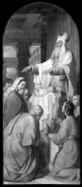Дальше приводятся цитаты из Ветхого Завета, где определены различные черты мессианского служения Христа: так пророк Валаам говорит об Его царственной власти (Числ. 24, 17), Моисей – о трояком Его служении: царском, первосвященническом и пророческом (Втор. 18, 18-19), о происхождении Мессии из царского рода Давидова (2 Цар. 7, 12-14), о рождении Его в Вифлееме (Мих. 5, 2) и от Девы матери (Ис. 7, 14), о торжественном входе Его в храм Иерусалимский (Малах. 3, 1), о разных, даже мелких обстоятельствах Его крестных страданий и смерти (Ис. 53; Пс. 21, 17-19; 39, 7-9; 40, 9-19; 68, 22; Зах. 11, 12 и др.), о Его славном воскресении (Ис. 53, 9-21; Пс. 15, 10; 19, 6-7; 40, 11;67, 7,14-17; 71, 7-19; Иоиль 2, 28; Ис. 2, Ис. 35, 1-2,10; 61, 1-2) и Его грозном втором пришествии (Дан. 7, 25 и 12, 7; Зах. 14, 2-3, 9 и др.).
«Таким образом, – пишет епископ Александр – с полным убеждением можно сказать, что главным и основным предметом Библии, начиная с первых глав книги Бытия (Быт. 3, 15) и кончая последними главами Апокалипсиса (Откр. 21, 6; 21, 21 и 22, 20), служит Богочеловек, Господь наш Иисус Христос».
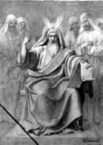В книгах пророка Моисея находятся следующие пять пророчеств о Мессии-Христе: О «Семени Жены», которое сокрушит главу змия-диавола (Быт. 3, 15); о том, что в Потомке Авраама благословятся все народы (Быт. 22, 16-18); о том, что Мессия придет во время, когда колено Иудино утратит свою гражданскую власть (Быт. 49, 10); о Мессии, в образе восходящей звезды (Числ. 24, 17); и, наконец, о Мессии, как величайшем Пророке (Втор. 18, 15-19).
В опубликованной на сайте «Православие.ру» статье религиоведа Юрия Максимова «Краткий обзор отношений Православия и иудаизма» (22/12/2008) дается убедительный анализ и большая подборка высказываний святых отцов об иудаизме.
Приведем в качестве иллюстраций фрагменты из этой статьи.
С обличением падения и отверженности иудеев выступили Тертуллиан († 220/240) в работе «Против иудеев», святитель Ипполит Римский в кратком «Трактате против иудеев». Святитель Иоанн Златоуст († 407) в конце IV века произнес «Пять слов против иудеев». Блаженный Августин († 430) в начале V века написал «Рассуждение против иудеев». Преподобный Анастасий Синаит († ок. 700) написал «Диспут против иудеев». В VII веке святой Леонтий Неаполийский († ок. 650) написал апологию против иудеев.
Священномученик Киприан Карфагенский († 258) оставил «Три книги свидетельств против иудеев». Это тематическая подборка цитат из Ветхого и Нового Заветов.
Первая книга содержит свидетельства о том, что «иудеи, согласно предсказаниям, отступили от Бога и утратили благодать, которая дарована была им прежде… и что их место заняли христиане, угождающие Господу верой и приходящие от всех народов и со всего мира». Во второй части показывается, как основные ветхозаветные пророчества исполнились во Иисусе Христе.
Западный святитель Грегентий Тафрский в VII веке составил запись своего диспута с иудеем Хербаном – диспут проходил в присутствии короля Омерита. Хербан, несмотря на аргументы святителя, продолжал упорствовать, тогда по молитве святого произошло чудо: среди присутствовавших при диспуте иудеев явился видимым образом Христос, после чего раввин Хербан вместе с пятью с половиной тысячами иудеев принял крещение.
Преподобный Никита Стифат (XI в.) написал небольшое «Слово к иудеям», в котором напоминает о прекращении ветхозаветного закона и отверженности иудаизма: «Бог возненавидел и отверг и служение иудеев, и субботы их, и праздники», о чем предсказывал еще через пророков.
В святоотеческих трудах можно найти немало резких слов об иудеях, например таких: «Всем они (иудеи) преткнулись, всюду сделались злоумышленниками и предателями истины, оказались богоненавистники, а не боголюбцы» (Ипполит Римский, святитель. Толкование на книгу пророка Даниила).
Дух Данов – дух антихристов не мог смириться с наличием свидетельств о Христе в Ветхом Завете. Поэтому после отделения как неглавных Книги Судей и Книг Пророков, Дан приступил к изменению Пятикнижия Моисея – письменной Торы под предлогом ее упрощения.
И решили создать устную Тору путем ее интерпретации.
В III веке по Р. Х. были написаны комментарии к письменной Торе, и появилась первая часть устной Торы, получившая название Мишна. Так было положено начало отходу от текста первоисточника.
Затем этот процесс продолжился и дух Данов, не успокоившись, решил интерпретировать уже не письменную Тору, а первую часть устной Торы. В результате появилась вторая часть устной Торы – Гемара, назначение которой – углубленное комментирование Мишны.
Причем не существовало ни каких-то определенных правил интерпретации, ни главного авторитета или последней инстанции, которые бы могли ее оценить. В большинстве случаев комментаторы подгоняли, то есть меняли Писание в соответствии со своими взглядами.
Мишна (комментарии к Торе) и Гемара (дальнейшая интерпретация этих комментариев) вместе составили Талмуд.
Вполне закономерно, что талмудизм как раз и стал государственной религией Хазарского каганата в древние времена. Он обслуживал интересы его правящей верхушки – колена Данова и был порожден его духом.
Талмудизм основан на идее избранности и культе материального. Талмуд учит: «Как человек в мире высоко стоит над животными, так евреи высоко стоят над всеми народами на свете».
Избранничество мыслится в Талмуде как право на господство.
Стержнем талмудизма является идея отрицания Первого пришествия Христа и ожидание Мошиаха-антихриста.
В соответствии с Талмудом, только еврей почитался за человека в собственном смысле слова, (остальные люди всего лишь животные, принадлежащие еврею на правах частной собственности). «Никогда ни один властвующий слой не додумывался до более мощного средства дисциплинировать и сплачивать народ в своих руках воедино». (Л. Тихомиров. Религиозно-философские основы истории. М., 1997).
Созданный впоследствии хазарами из колена Данова сионизм стал системой практической реализации целей талмудизма. Но при этом он вступил в противоречие с Ветхим Заветом, который сионисты отвергли и стали рассматривать как своего рода фольклорный сборник, не имеющий сакрального смысла. Ветхий Завет, в отличие от Талмуда, не вписывался в их идеологию и планы, и потому он стал им мешать, он им был не нужен. И они от него отказались.
Созданная в 1935 году ортодоксальная еврейская организация «Натурей карта», последовательно выступающая против сионизма, вообще призывает к мирной ликвидации государства Израиль, так как его существование противоречит основным постулатам Торы. В 1948 году представители этой организации категорически выступили против провозглашения государства Израиль.
Члены этой организации выражают свою солидарность с борьбой палестинцев. Как сообщило 10 февраля 2008 еврейское информационное агентство Курсор со ссылкой на ИА NRG, лидеры «Натурей Карта» направили соболезнования одному из лидеров ХАМАСа Махмуду аз-Захару по случаю гибели сына – Хусама в ходе столкновения с военнослужащими ЦАХАЛа.
Раввины Моше Бек, Исраэль Вайс и Аарон Коэн, лидеры «Натурей Карта» в США, Англии и Канаде не только выразили свои соболезнование безутешному отцу, но и подчеркнули, что «действия сионистов вызывают отвращение».
«Мы хотим, чтобы вы почувствовали все сострадание, которое в эти трагические дни испытывает по отношению к вам, к Газе и всей Палестине, еврейский народ, хранящий истинную Тору», – говорится в телеграмме.
«Мы никогда не имели и никогда не будем иметь никакого отношения к этому извращению и проявлению воли дьявола – сионистскому образованию «Израиль», – заверили аз-Захара лидеры «Натурей Карта».
После того, как президент Ирана Махмуд Ахмади-Неджад выступил в ООН с антисионистской речью, которая вызвала гневную реакцию в Тель-Авиве, группа евреев из «Натурей карта» встретилась с ним в Манхэттене.
Сообщалось, что раввин Исроэль Давид Вайс, который присутствовал на заседании, сообщил еврейским СМИ, что встреча была успешной и прошла в теплой и дружественной обстановке.
Раввин также заявил, что «иранский президент не против евреев, но против сионистского режима».
Объясняя связь «Натурей карты» с Ахмади-Неджадом, раввин Вайс сказал: «Иранский президент понимает разницу, и понимает, что не все евреи имеют сионистское мировоззрение. Мы не хотим стать свидетелями уничтожения иудаизма, но мы не будем принимать участия в продвижении сионистской идеи, мы лишь молимся и надеемся на конец государства Израиль». Вайс также подчеркнул, что «сионисты используют холокост в качестве оправдания за свои преступления».
По его словам, есть евреи верные Торе, и они выступают против сионизма за его отказ от Бога.
Вайс подвел итог встречи следующими словами: «На протяжении всех поколений Бог говорит о том, что Тора – наша защита. В связи с тем, что сионистское руководство отрицает Тору и отказывается следовать путем, предначертанным в ней, оно также игнорирует и предупреждения, в ней содержащиеся. Это может привести еврейскую нацию к новой катастрофе, именно против этого мы и выступаем».
Текст Талмуда изменяется до сих пор. Новые книги, посвящённые Талмуду, продолжают появляться на множестве языков и по сей день.
Как пишет Электронная еврейская энциклопедия: «Устный Закон подвергается изменениям в каждом новом поколении законоучителей, но тем не менее его считают почти абсолютным законом, он обладает большим авторитетом, чем пророчество (см. Пророки и пророчество) или какие-либо др. сверхъестественные явления».
Один из наиболее значительных комментариев к Талмуду относится к 18 веку и принадлежит раввину, каббалисту Элияху из Вильно (прозванному Виленским Гаоном), который стал основателем литовского направления в иудаизме.
Здесь уже напрямую виден хазарский след. Но хазары – это не этничность, это религиозность, заряженность на решение единственной и главной духовной цели – приведение к власти антихриста. Поэтому формирование глобальной религии антихриста и поклонение ему – это работа духа колена Данова, независимо от того в ком этот дух персонифицируется. Эта работа, которая в форме «тайны беззакония» не прекращалась сквозь века и поколения. Ее совершали либо сами данитяне, одержимые в достижении своей черной цели, либо те, кого Дан-змей, Дан-аспид ужалил, что и произошло с тюрками-хазарами и сейчас происходит с теми, кто позволил змею увлечь себя. Подчеркну, что современный Дан – это не этничность, это дух, который через людей, ставших его функциями, неуклонно идет по пути борьбы против Бога и служения тому, кто по непомерной своей гордыне против Него восстал. И глобальная религия – это многовековой продукт духа Данова, змея, который искушает теперь уже человечество вкусить плодов от древа познания.
«А от дерева познания добра и зла не ешь от него, ибо в день, в который ты вкусишь от него, смертью умрешь» (Быт. 2, 17).
Иеромонах Иов (Гумеров) пишет: «Давая испытательную заповедь, Бог предупреждал от ложного и опасного пути: попытки стать независимым от Бога властелином мира». В этом и заключается весь смысл устремлений и преступлений духа Данова, духа сатанинского – постепенно создать глобальную религию, независимую от Бога, стать властелином мира и привести к власти того, кто выдаст себя за Него и кому поклонится человечество, прельщенное этой религией.
Формирование талмудизма происходило в период II-VI веков, и Талмуд положил начало обретению этой «независимости». Нужно было обрести эту независимость не только на словах, но и в делах.
Дан понимал, что для создания религии антихриста, нужно не только отречься от Христа и уничтожить свидетельства о Нем, нужно не только замести следы своих преступлений, за что сурово обличали колено Даново пророки, но требуется пойти еще дальше – нужно начать поклоняться антихристу, участвуя в его ритуалах, изучая магию и творя колдовство.
Так параллельно с Талмудом создается каббала. Фундамент для каббалы заложил Талмуд. Известный каббалист Элифаз Леви пишет, что Талмуд есть основа чернокнижия.
Лев Гумилев пишет: «Талмудизм и каббала столь мало похожи на религию Авраама, Исаака и Иакова, что строгое различие их необходимо для понимания изучаемых процессов».
Поскольку колено Даново, осуществлявшее в Хазарском каганате духовное руководство, еще до пришествия на Кавказ занималось идолопоклонством и всякими оккультными ритуалами, оно с готовностью «отбросило» Ветхий Завет и приспособило под свои нужды подходящие для этого Талмуд и каббалу.
Каббала не только закрепила независимость от Бога, но поставила на это место антихриста как объект для поклонения, введя для этого особые практические церемонии черной мессы.
Как пишет Электронная еврейская энциклопедия, каббала – это «эзотерическое теософское учение с выраженными элементами мистики и магии». «Оформлению каббалы предшествовало появление в XII веке еврейского эзотерического учения на севере Франции и юге Германии – Хасидей Ашкеназ. Ранние каббалисты находились в контакте с его представителями, Хасидей Ашкеназ повлияли на создание так называемой практической каббалы и явились главными представителями экстатического направления в мистике». В каббале колено Даново узаконило те черные ритуалы, за которые его сурово осуждали ветхозаветные пророки.
Начиная со второй половины XIII века учение окончательно утверждается среди ашкеназов (то есть хазар) в Провансе, который стал «колыбелью каббалы».
С момента своего появления каббала натолкнулась и на резко отрицательное отношение некоторых авторитетов, видевших в ней угрозу традиционному иудаизму и воспринимавших ее как мракобесие.
Как пишет иеромонах Иов (Гумеров), каббала «это эзотерическое теософское учение по духу совершенно чуждо Священному Писанию».
Изложению каббалы посвящены две книги: Сефер Иецира (Книга создания) и Зогар (Книга света).
А.Ф. Лосев в «Диалектике мифа» отмечает, что сущность всей каббалы «заключается «в панизраэлизме: каббалистический „Бог“ нуждается в Израиле для своего спасения, воплощается в него и становится им, откуда и миф о мировом владычестве обоженного Израиля, от вечности содержащегося в самом «Боге». Отсюда становится понятным, почему и откуда появился сионизм.
Иеромонах Иов (Гумеров) пишет, что эзотерическое учение Сефер Иецира и Зогар принципиально несовместимо с библейским учением о Боге, мире, человеке и путях спасения человечества и ведет к оправданию зла.
В каббале чувствуется весьма напряженная сексуальная атмосфера, так что это – какой-то мистико-сексуальный социализм» (А.Ф. Лосев. Владимир Соловьев и его время, М.,1990, с.251-252).
Под влиянием каббалы широкое распространение сейчас получил культ плоти.
Прикладная каббала (каббала маасит) является разновидностью магии. Она широко использует амулеты и медитацию. Для гадания используются карты Таро. Каббалисты приписывают мистический смысл буквам и числам.
Иеромонах Иов (Гумеров) подчеркивает, что занятие любыми видами оккультизма (в том числе каббалой) вводит человека в общение с падшими духами. Зараженный недугом тщеславия и, не имея духовного зрения, чтобы увидеть впереди зияющую бездну, такой человек оказывается порабощенным демонами. Все занятия магией и оккультизмом кончаются духовной смертью. Каббала представляет фантастическую смесь эзотерического оккультизма, замешанную на языческих религиозно-философских идеях. Она свидетельствует о полном отпадении от великого и спасительного библейского учения. Люди, которые по своей слепоте начинают заниматься каббалой, не сознавая того, заключают договор с адом.
Наряду с Талмудом каббала является духовным фундаментом нового мирового порядка и связанных с ним идеологий сионизма и масонства.
Члены самой крупной масонской ложи иллюминатов, символами которой является полный комплект символики колена Данова и которая руководит установлением нового мирового порядка, называют себя зогаристами (от каббалистического Зогар), то есть «просветленными». Отсюда и название ложи – «иллюминаты», что свидетельствует об их приверженности к каббале.
Известно, что эта ложа, а точнее сатанинский клуб, призванный подорвать духовные и нравственные устои общества, была создана около 1770 года под руководством Мейера Ротшильда и была ориентирована на каббалистические пристрастия синдиката хазарских банкиров.
Как пишет в своей статье «Оккультная колонизация развитого мира?» писатель и известный журналист еврейского происхождения Генри Макоу: «Каббала – это сатанинское учение, источник оккультизма, ведовства, черной магии, ритуальных жертвоприношений не только животных, но и людей, это нумерология и колдовство. Это источник так называемого религиозного движения Нью Эйдж».
Макоу приводит слова Тексе Марса из Codex Magica: «Каббализм – это и есть настоящий иллюминизм. Он учит, что зло трансформируется в добро и, следовательно, Люцифер – это бог. Сатана – это единственный и настоящий бог. Это – главная доктрина каббализма и масонства».
В каждом поколении есть свой «Ваал (Баал) Шем» – это адепт каббалы, который, как считается, имеет магическую власть. Он манипулирует другими адептами и живет в роскоши. Его называют «Главой всех евреев». Он также управляет финансами.
В XVIII веке «Ваал Шем» Англии был Самуэль Якоб Фальк (1710-1782). В сентябре 1762 года доктор Адлер опубликовал отчет о деятельности Фалька в The Gentleman's Magazine. Он описал каббалиста как крещеного еврея и самого крупного мошенника и злодея во всем мире. Каббалист предлагал Адлеру научить его некоторым магическим приемам, если тот «раздобудет один фунт крови из вен честного протестанта».
Адлер принес свою собственную кровь Фальку, который использовал ее, чтобы рисовать оккультные символы, и производил другие отталкивающие ритуалы. Этот отчет помещен в книге Несты Вебстер, посвященной анализу секретных обществ («Secret Societies and Subversive Movements» 1924).
Макоу пишет: «Каббализм – это сатанинский культ, к которому принадлежат крупные банкиры. К этому культу принадлежат также наши ведущие политики, включая Джорджа Буша и Барака Обаму».
Каббала учит тому, что человек может узурпировать место Бога и по своему усмотрению перекроить действительность. Разразившийся финансовый кризис показал, что это место узурпировали сейчас банкиры. Цель мирового заговора банкиров сделать так, чтобы сатана был принят за Бога. Иллюминаты-каббалисты используют все средства – войны, революции, финансовые кризисы, чтобы осуществить эту цель и установить новый мировой порядок. Причем тирания мирового правительства устанавливается незаметно для ничего не подозревающего человечества.
Как следует из книги Несты Вебстер: «Именно в каббале даже больше, чем в Талмуде, иудаистская мечта о мировом господстве проявляется с особой настойчивостью».
В соответствии с Зогаром, Мошиах объявит войну всему миру: «Божество уничтожит всех гоев в мире. Только один Израиль будет существовать».
Кстати, созданную хазарской религиозной антисистемой новую Тору стали называть Торой Мошиаха.
В заключении к своей статье Г. Макоу отмечает, что «каббала рассматривает всех «евреев» как господ мира, пользующихся его богатством и услугами рабов. При этом к понятию «еврей» относят всех членов масонского ордена иллюминатов, который состоит из евреев и неевреев. Каббалистам не нужны непосвященные лица, включая евреев, не являющихся их адептами.
Г. Макоу, сам будучи евреем, жестко и аргументированно критикует каббалу. Зная еврейскую среду, он убежден, что от силы 10% евреев знают источники ненависти иллюминатов к человечеству, которыми являются талмудизм и каббала. Несмотря на это каббалисты-иллюминаты контролируют организованное еврейство, включая сионизм, а также некоторые религии и многие организации. Человечество находится в их тисках.
В стремлении навязать свою власть всему миру каббала смыкается с Талмудом. Еще в средние века евреи страдали от раввинов-талмудистов.
Сейчас действует сеть правительственных организаций, которая, руководствуясь принципами Талмуда, прикрывает свои злодеяния лозунгами борьбы за равенство, справедливость, против терроризма. Ничего не подозревающее человечество является жертвой этой клики. Ею разрабатываются и режиссируются все войны.
Макоу констатирует, что американская политика, культура и ценности находятся под контролем клики и, чтобы противодействовать наступлению эры мрака, нужно всеми силами разоблачать злодеяния клики и широко информировать как можно больше людей о трагических последствиях захвата ею глобальной власти.
Через масштабное осознание этих опасных процессов возможно масштабное противодействие и сопротивление этой мировой угрозе.
Талмудизм и каббала изменили ветхозаветное иудейство и стали основой современного иудаизма, в котором, как пишет о нем энциклопедия Википедия, «нет единого и общепризнанного института или лица, имеющего авторитет источника права, учительства или власти».
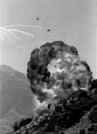В Талмуде изложено множество противоречащих друг другу мнений и постановлений, всевозможных магических рецептов и даже анекдотов, что дало основания называть его «фольклорным и мифическим сводом». Талмуд (в широком смысле слова как религиозное учение иудаизма) считается незавершённым и в него постоянно включаются новые и новые тексты.
Стоит отметить, что, если в Ветхом Завете колено Даново обличается за вероотступничество, то в Талмуде написано: «Если встретится тебе человек, всегда и всюду требующий справедливости, знай, что он – из колена Данова» (Талмуд, Псохим, 4а).
Разногласия при толковании Талмуда (Устного закона) были так велики, что естественным образом возникла необходимость его кодификации в некотором своде норм и правил. Как пишет Электронная еврейская энциклопедия, появилось «стремление популяризировать Устный Закон», создать «кодекс – стандартного и единого свода законов, пригодного для практической деятельности». Таким образом, на повестку дня была поставлена задача прокомментировать уже Талмуд, который, напомню, сам был дважды комментарием Пятикнижия. Так появился кодекс «Шулхан арух» («Накрытый стол»).
При этом сам текст Талмуда подвергся существенным изменениям. Как следует из Электронной еврейской энциклопедии, работая над противоречивыми источниками, автор «Шулхан аруха» выработал иерархическую систему выбора однозначного установления в случае расхождения мнений. Например, если мнения нескольких толкователей расходятся, то «единство мнений двух из них позволяет пренебречь мнением третьего». То есть выбор одного из нескольких субъективных мнений делался тоже субъективно.
«Шулхан арух» был впервые опубликован в Венеции в 1565 г. Сразу же после этого была поставлена задача изменить содержание книги и дополнить ее произведениями творчества хазар-ашкеназов и теми обычаями, которые возникли среди них, то есть непосредственно в колене Дановом. С 1569 г. «Шулхан арух» стал кодексом для ашкеназов.
Так к тому времени уже в течение 15 веков после Рождества Христова действовала «тайна беззакония», шла неустанная, непрекращающаяся работа по изменению текста Писания, по обретению независимости от Бога, по утверждению религии того, кого должно привести к власти колено Даново.
После 1569 г. среди ашкеназов появляются комментарии уже к «Шулхан аруху» и, как пишет Электронная еврейская энциклопедия, открывается новый вид творчества: «аналитические комментарии к «Шулхан аруху». Причем авторы «не столько объясняли, сколько интерпретировали «Шулхан арух», так что их текст не всегда совпадал с первым изданием.
Среди всех последующих версий «Шулхан Аруха» особо выделяется версия, написанная раввином Шнеуром-Залманом из белорусского местечка Ляды (1745-1812), который создал учение Хабад и распространил хасидское движение.
Затем раввин Шломо Ганцфрид из Ужгорода (1804-1886) создал сокращенную и упрощенную версию «Шулхан аруха». Раввин из Пинска Иехиэль Эпштейн добавил к труду свои новые разделы, «касающиеся неактуальных в наши дни проблем (Жертвоприношение, Чистота и нечистота ритуальные), которые, по его мнению, снова приобретут значение в будущем».
Таким образом, современный текст «Шулхан аруха» был сформирован собственно хазарами-ашкеназами, читай коленом Дановым.
«Шулхан арух» стал единственным и непререкаемым сборником законов, состоящим из 613 правил, регламентирующих практически всю жизнь иудеев. В энциклопедии Википедия сказано, что современный иудаизм основан на соблюдении закона в том виде, в каком он зафиксирован в Талмуде и кодифицирован в своде «Шулхан арух».
В целом Талмуд насаждает резко негативное, презрительное отношение ко всем не-иудеям, в том числе и к христианам. Книга поздних галахических постановлений «Шулхан-арух» предписывает по возможности уничтожать храмы христиан и все им принадлежащее («Шулхан-арух». Иоре де'а 146); запрещается также спасать христианина от смерти, например, если он упадет в воду и станет обещать даже всё свое состояние за спасение (Иоре де’а 158, 1); разрешается испытывать на христианине приносит лекарство здоровье или смерть; и, наконец, иудею вменяется в обязанность убивать еврея, который перешел в христианство (Иоре де'а 158, 1; Талмуд. Абода зара 26). В Талмуде содержится немало оскорбительных, кощунственных высказываний о Господе Иисусе Христе и Пресвятой Богородице (Юрий Максимов. Краткий обзор отношений Православия и иудаизма.)
С самого зарождения христианства иудеи стали резкими противниками и гонителями его. О гонениях их на апостолов и первых христиан немало сообщается в новозаветной книге Деяний апостольских.
При императоре-христианине святом Константине Великом напряженные отношения между иудеями и христианами нашли новые выражения. Хотя многие меры христиан-императоров, которые иудейские историки традиционно представляют как гонения на иудаизм, преследовали цель просто защитить христиан от иудеев. Иудеи имели обычай побивать камнями тех евреев, которые обращались в христианство. Святой Константин принял ряд мер к тому, чтобы лишить их такой возможности. Кроме того, отныне иудеи не имели права состоять на военной службе, а также занимать государственные посты, где от них зависели бы судьбы христиан.
Хотя эти меры по нынешним меркам могут показаться дискриминационными, но нужно принять во внимание, что, когда иудеи приходили к власти, оказавшихся в их подчинении христиан ждала не лучшая, а, порой, намного худшая участь (Юрий Максимов. Краткий обзор отношений Православия и иудаизма).
Талмуд, каббала и «Шулхан арух» формируют современный иудаизм. И это, по сути, новая религия, созданная в результате многочисленных, многовековых интерпретаций текста Писания и отхода от него.
Причем, если кто-то осмеливался выступить с критикой установок, содержащихся в Талмуде, каббале или «Шулхан арухе», хазары из колена Данова, прикрываясь чужой национальностью, тут же кричали и продолжают кричать, что это антисемитизм и чуть ли не оскорбление иудейской веры. Но ведь, если посмотреть на предысторию современного иудаизма, не является ли его создание отходом от веры ветхозаветных иудеев, ее попранием и, в конечном счете, формой антисемитизма со стороны несемитов-хазар, зараженных духом Дана, духом богоборчества.
Они боролись и борются со всем семитским не только физически, но и духовно, превратив Ветхий Завет в то, о чем пишет Генрих Грец, автор многотомной «Истории евреев», полжизни прослуживший доцентом в раввинской семинарии Бреслау, профессор тамошнего университета: «Тора, хотя многие евреи знали ее наизусть, стала для них самой непонятной книгой. Комментаторы – раввины и каббалисты – до того извратили смысл Торы, что в ней можно было найти что угодно, кроме истинного содержания. Польские учителя… вдалбливали в головы детей и подростков дикие вещи, которые они якобы нашли в этой священной книге, объяснялись плохим языком, приписывая Моисею эту тарабарщину. Удаленность от светской науки, которая росла с каждым столетием, способствовала тому, что Книга, которая должна была служить усладой души, отравляла сознание» (цит. по Грета Ионкис. Рабби Мозес из Дессау. Еврейское слово, №14 (187), 2004).
Дух Данов – автор этой религии, в которой объектом поклонения постепенно был сделан антихрист, приход которого под руководством колена Данова будет отмечен повсеместным ее распространением.
Хазары уже давно предпринимали попытки навязать эту религию. На Руси, в частности, ересь жидовствующих получила должный отпор.
Еще одна мощная попытка воздействия на христианство была предпринята одним из представителей рода, откуда произошел составитель «Шулхан арух» Йосеф Каро. Так вот его сородич Авигдор Каро был пражским раввином. Известно, что у него учился богословию будущий основатель Реформации христианства Ян Гус, впоследствии сожжённый инквизицией как еретик.
А вот в современной Америке расцвел пышным цветом христианский сионизм. Массы людей по всей планете практикуют каббалу. В души огромного количества детей этот яд вливается в виде Гарри Поттера. Причем вливают его сами же родители в слепой погоне за модой, не ведая, какой страшный вред они наносят своим же чадам, лишая их спасения и обрекая на духовную гибель. Ведь, если бы кто-то сказал им, что их ребенка хотят физически уничтожить, они тут же бы побежали его спасать. Но здесь речь идет об убийстве не тела, а души, о лишении ни жизни земной, а жизни вечной. Так как же они не понимают, что, вводя их в каббалу, они сами выступают убийцами души собственных детишек, не способных еще самостоятельно понять, где добро, а где зло.
Святитель Иоанн Златоуст в конце IV века произнес «Пять слов против иудеев», адресованных к тем христианам, которые посещали синагоги и обращались к иудейским ритуалам. Святитель объясняет, что после Христа иудаизм потерял свое значение, и потому соблюдение его обрядов противно воле Божией (Юрий Максимов. Краткий обзор отношений Православия и иудаизма). Это говорилось о Ветхом Завете, а тут прямой отход от него в бездну.
Есть два принципа антихриста – это обратное подобие и противление посредством подобия. Так вот Талмуд и каббала – это есть и обратное подобие Ветхого Завета. Это есть и противление посредством подобия, потому что как Ветхий Завет свидетельствовал о Христе как о Мессии, так современный иудаизм свидетельствует об антихристе.
Апостол Павел наставляет: «Все Писание богодухновенно и полезно для научения, для обличения, для исправления, для наставления в праведности, да будет совершен Божий человек, ко всякому доброму делу приготовлен» (2 Тим. 3, 16-17). Колено Даново ведет подготовку совсем к другим делам, не имеющим отношения ни к праведности, ни к добру.
О них пишет святитель Иоанн Златоуст, который указывает, к чему ведет «неведение Писания»: «Великая защита от грехов – чтение Писания, а неведение Писания – великая стремнина, глубокая пропасть. Великая гибель для спасения – не знать ничего из Божественных законов. Это незнание породило ереси, оно ввело и развратную жизнь, оно перевернуло все вверх дном. Ибо как лишенный естественного света не может идти надлежащею дорогой, так и не освещаемый лучом Божественных Писаний принужден непрестанно погрешать во многом, потому что бродит в глубокой тьме».
Следствия этого отступления – ереси, развратная жизнь, блуждание во тьме, как будто все про наше время написано. А эта перевернутость всего вверх дном. Ведь это и есть состояние или ситуация управляемого, то есть намеренно создаваемого хаоса, в который Хазария ввергает человечество.
В христианстве Священное Писание, состоящее из Ветхого и Нового Заветов, нераздельно.
Отбросить Ветхий Завет – это значит отказаться от человеческой природы Христа. Дело не только в том, что в истории Христа исполняются пророчества, которыми полон Ветхий Завет, так что в Евангелиях значимым оказывается и место (рождение в Вифлееме), и время событий (распятие перед Пасхой), и даже отдельные детали (римские солдаты не перебили голеней Иисуса, как нельзя было ломать и костей пасхального агнца). Дело еще и в том, что история спасения для христианина начинается не с Рождества, а с момента грехопадения человека, когда возникает сама потребность в спасении. Ведь сначала нужно понять, от чего вообще нужно спасать человечество, почему оно оказалось отделено от Бога и порабощено смерти. Об этом как раз и говорится в Ветхом Завете. Более того, его «кровавость» во многом объясняется тем, что это – честное и подробное повествование о падшем человечестве. И именно Ветхий Завет лучше, чем все остальные древние книги сумел эту «кровавость» изобличить.
В книге Бытия мы встречаем удивительный образ: Иакову снится лестница, по которой ангелы сходили с неба на землю и поднимались обратно (Быт. 28, 12). Ветхий Завет это та самая лестница, по которой еще до воплощения Христа вестники Божьей воли сходили к людям, чтобы те могли оторвать свой взор от земли, потянуться к чему-то высшему.
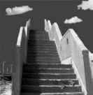Ветхий Завет продолжает оставаться актуальным. Так Псалтирь в православном храме звучит чаще Евангелия, и все богослужение исполнено цитатами из псалмов. Ни одна другая книга так полно не передает диалог человеческой души с Богом. Именно в Ветхом Завете есть множество живых образов, близких нашему жизнеощущению. Мы возмущаемся несправедливостью мира вместе с Иовом, мы торжествуем вместе с Давидом, мы плачем с Иеремией и вместе с Исайей ожидаем нового неба и новой земли. Нам есть с кого брать пример и в Ветхом Завете. Ветхозаветные праотцы и пророки – не просто череда фигур из древней истории, но наша собственная история, которая берет свой исток в седой древности, и сбывается здесь и сейчас. Мы в одной с ними Церкви.
Выходит, христианство сохранило Ветхий Завет в своем вероучении, а иудаизм его отверг, отвергши Христа, и стал ждать Мошиаха.
Христос постоянно подчеркивал, что Он пришел не нарушить, а исполнить Закон, наполнить его новым содержанием, отчего мы и называем его Новым Заветом. В столкновениях с книжниками и фарисеями Он отрицает вовсе не Ветхий Завет, а неверное, приземленное его понимание и агрессивное навязывание таких стереотипов всем остальным.
Вот это неверное, приземленное понимание Закона и было впоследствии закреплено в непрекращающемся до нашего времени процессе его бесконечного комментирования и адаптации. Появление многочисленных комментаторов привело к возникновению многочисленных течений, так что современный иудаизм превратился в настоящий образец и модель сети, построенной по принципу полицентризма, фрагментации и политеизма, где существует масса всяких мелких иерархий, которые продолжают плодиться и размножаться, разложив когда-то мощную ветхозаветную иудейскую монотеистическую веру. Дух колена Данова вступил в многовековую духовную битву с традиционной верой двенадцати колен Израилевых и, используя коварство змея, победил в ней. Когда-то колено Даново воевало с ними физически, нападая и захватывая их территории. Но теперь война ушла в духовное пространство. Дан, этнически растворившись в яростных и жестоких хазарах и зарядив их своим духом, занял в этом духовном пространстве не просто отдельные участки, он оккупировал все, чтобы потом выдать свою антихристову веру за истинную ветхозаветную веру предков.
Хазарская религиозная антисистема, сформировавшаяся в Хазарском каганате, вобрала в себя агрессивность, воинственность, корысть и беспощадность хазар – качества, которые были так необходимы духу Дана для достижения своих духовных целей. И первыми жертвами в этой войне стали двенадцать колен Израилевых, чью веру они изменили и разложили.
Данова сеть фрагментировала монотеистическую иудейскую иерархию, создав современный иудаизм, где существует множество направлений и течений. К основным относятся литовское (литваки), хасидизм, в котором насчитывается более 100 направлений (возник в XVIII веке), связанный с сионизмом модернистский ортодоксальный иудаизм (возник в XIX веке в Германии), религиозный сионизм (создан в 1850 году в Германии), традиционный (консервативный) иудаизм (возник в середине XIX века в Германии), прогрессивный (реформистский) иудаизм (возник в начале XIX века в Европе), реконструк-тивистский иудаизм (возник в 1922 г. в США).
Судя по датам и географии возникновения, все эти модернистские, реформистские и реконструктивистское течения, формирующие современный иудаизм, имеют хазарские корни и не имеют отношения к ветхозаветной вере древних евреев-семитов.
Если принять во внимание даты возникновения, XVIII-ХХ века, то получится, что иудаизм возник буквально только что. Куда же делась длинная ветхозаветная история семитского еврейства, куда делся ветхозаветный иудаизм? Ведь даже казалось бы традиционный (консервативный) иудаизм, занимается тем, что пытается найти компромисс между традиционным вероучением и современностью путем модернизации традиции. Его основными принципами являются «нефундаменталистское преподавание основ еврейской религии и позитивное отношение к современной культуре».
Хасидизм, возникший в XVIII-ХIХ веках в Польше и Западной Украине – религиозное течение, полностью созданное хазарами. Это движение было протестом против взгляда, что изучение Талмуда – единственный путь для достижения праведной жизни. В хасидизме стали укореняться эксцентричные практики, явно противоречившие Талмуду.
Как написано в справочнике «Религии и секты в современной России»: «Хасидизм возник как оппозиционное движение против ортодоксального иудаизма, в частности, против раввината. Вместо раввинов в хасидских общинах высшим авторитетом стали пользоваться цадики («цадик» означает по-древнееврейски «праведник»), якобы обладающие сверхъестественными способностями. Для хасидизма характерны крайний мистицизм и религиозная экзальтация».
Основателем хасидизма считается проповедник Исраэль Бешт (1700-1760), живший в Прикарпатье.
Хасидизм охватил большую часть Украины и проник на территорию Белоруссии и Литвы.
В Православии святые отцы говорят: «Путей отпадения от Бога много, а путь к Богу только один».
Продолжатель учения Бешта, его внук, рабби Нахман из Брацлава, основал так называемый брацлавский хасидизм, а Шнеер-Залман положил начало наиболее влиятельному хасидскому течению хабад (любавические хасиды). Это течение в хасидизме сформировалось в г. Любавичи в России, откуда и получило второе название. Вероучение хабад основано как на Талмуде, так и на каббале. Известно, что хабад организовал самую большую в мире сеть еврейских проектов с центрами в более чем 20 странах мира. Из-за сионистских тенденций, хабад стоит особняком среди прочих хасидских направлений.
Как сказал Любавический Ребе: «Каждый должен сделать все возможное, чтобы привести Мошиаха». Труды Любавических Ребе «Хасидус Хабад» по-другому называются «Торой Мошиаха».
После Второй мировой войны большинство руководителей хасидских направлений живет в Израиле и США.
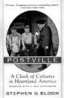О том, что такое современный хабадский хасидизм в США, написал Стивен Блум, американский еврей, который изложил свои аргументы и выводы об этом в опубликованной в 2000 году книге «Поствиль: Столкновение культур в сердце Америки» («Postville: A Clash of Cultures in Heartland America»).
Сначала он приехал в Поствиль с целью научиться у хасидов и разделить с ними чувство единой идентичности. «Вместо этого, – пишет Блум, – хасидизм Поствиля дал мне возможность заглянуть в темные стороны моей собственной веры, познакомиться с еврейскими экстремистами, чье поведение заставило содрогнуться не только жителей Поствиля, но и меня тоже…
Они потребовали полного подчинения их схеме понимания «правда и неправда» как «евреи против христиан». В противном случае ты становишься их врагом».
Как пишет Г. Макоу в комментарии к этой книге, названном «Евреи должны повернуться лицом к темной стороне иудаизма» (Jews Must Face «Dark Side» of Judaism, 30 ноября 2008) это означает, что, «если ты – еврей – не разделяешь их безумия, тебя приравнивают к гоям». «Талмуд рассматривает гоев как скот и учит ненависти к христианам».
Это подтверждено было поведением хасидов Поствиля. Стивен Блум попал в обучение к одному «лазару». У любавических хасидов это человек, который приравнивается к «цадикам».
При первом знакомстве Лазар сразу же сказал Блуму: «Я – расист». Евреи устояли на протяжении всей истории, потому что мы «лучше и умнее».
«Куда бы мы не поехали, мы не адаптируемся к месту или народу», – наставлял Блума Лазар. «Так было всегда и так будет всегда. Это место и народ должны адаптироваться к нам».
Блум рассуждал: «Высказывание Лазара подтвердило презрение хасидизма к не-евреям. И это презрение не было ограничено только не-евреями Поствиля, но было типичным отношением ко всем христианам. Хасидизм, которого придерживался Лазар, несет в себе полное отсутствие интереса ко всему, что не является еврейским, или ко всем, кто не является евреем… Хасидизм начал культурную религиозную войну… Их представление о мире укладывается в рамки формулы «еврей против не-еврея». Если вы этого не признаете, вы считаетесь виноватым, частью проблемы. Вас причисляют к тем, кто прокладывает путь исключительно к уничтожению евреев, «избранного в мире народа». И здесь нет места для компромисса, нет места для чего-то, кроме тотального, абсолютного подчинения». К такому заключению пришел Блум после общения с Лазаром.
Это распространяется на современный бизнес, который Г. Макоу называет «формой агрессии против неевреев».
Лазар сказал Блуму: «Я чувствую себя евреем только тогда, когда я занимаюсь торговыми сделками». «Еврей должен чувствовать, что он получил что-то по абсолютно низкой цене, в противном случае, он чувствует себя проигравшим». После совершения сделки с не-евреем хасид хвастается, что он не соблюдал условия сделки. Блум сравнивает это с охотой. «Так же, как на охоте хасид проявляет ловкость, хвалится местностью, оснащением, тем, что он первый заметил и метко убил добычу».
Блум в своей книге пишет об исключительно постыдном случае, рассказанном ему владельцем магазина. Хасид стал настаивать, что он уже заплатил за какую-то покупку, схватил ее и выбежал из магазина.
Вот этот кодекс поведения в хасидизме совпадает со стереотипами поведения хазар и Хазарии, уходящими своими корнями в глубокую древность.
В заключении к рецензии на книгу Блума журналист Г. Макоу пишет: «Не вызывает сомнений, что поведение, основанное на Талмуде, является главной причиной антисемитизма».
Однако последствия оказываются намного более серьезными. Мейер Амшель Ротшильд был талмудистом. Сатанинская ненависть к человечеству, и особенно к христианству, является движущей силой нового мирового порядка…
Подобные установки формируют скрытую повестку дня сионизма и организованного еврейства… Орден иллюминатов был создан для того, чтобы продвигать эту повестку. Барак Обама и многие западные лидеры принадлежат к этому ордену.
Новый мировой порядок подвергает опасности не только не-евреев, но и евреев, идущих по пути спасения.
«Евреи должны понимать, – пишет Макоу, – «Иудаизм – это не религия, а заговор против человечества. Это также заговор и против евреев, чья безопасность находится под угрозой этой тайной повестки дня… Сионизм, коммунизм, либерализм, неоконсерватизм, феминизм – коварные приемы установления тирании «мирового правительства», образованного небольшой группой крупных банкиров, приверженных масонству, талмудизму и каббале».
Как отмечает Макоу: «Обществу промывают мозги, чтобы оно отвергло «Протоколы сионских мудрецов», которые детально объясняют эту методологию. Этот документ не является антисемитским, он является сатанинским. Поэтому ассимилировавшиеся евреи должны отмежеваться от организованного еврейства и обрести свою новую идентичность как народ, который точно так же, как и другие народы, обманут и эксплуатируется так называемыми лидерами. Так же, как Стивен Блум, ассимилировавшиеся евреи обладают сильным чувством правды, справедливости, милосердия и должны присоединиться к своим христианским соседям в стремлении направить Америку на истинный путь».
Кстати, подобного мнения придерживаются и члены организации «Натурей карта». Они считают, что евреи не должны подчинять своим интересам народ, в котором они оказались, но, наоборот, уважая интересы этого народа, считаться с его мнением и позицией. Что касается отношения к палестинцам, то члены «Натурей карта» признают их право жить на этой земле и считают, лишь они сами должны решать, могут ли какие-либо еврейские общины жить среди них.
Богоборчество и антихристианство хазарской антисистемы проявилось в ненависти к русскому царю – помазаннику Божию и Российской империи – как высшей форме священной православной государственности.
То, что русская революция носила религиозный характер подтверждает тот факт, что «аппарат первого революционного правительства примерно на 90 % состоял из иудеев, в том числе детей раввинов… В первые годы советской власти иудаисты явились единственной религиозной общиной, которой удалось построить в Москве новые молитвенные здания. Среди раввинов возникло течение «живая синагога», объявившее о поддержке советской власти» (справочник «Религии и секты в современной России»).
Ту же самую логику можно проследить и в религиозном основании распада СССР. Это становится очевидным, когда задаешь вопрос – «кому выгодно?» и «кто получил дивиденды?» Ответ-подтверждение этой догадки находим в упомянутом выше справочнике: «После распада СССР в 1991 г. влияние иудаизма среди еврейского населения РФ значительно усилилось. Вместе с тем усилилось воздействие иудейской общины на общественно-политическую и культурную жизнь России. Это подтверждают такие факты, как, например, проведение иудейского праздника Хануки на территории Московского Кремля в 1992 г. Этот праздник ежегодно отмечается иудаистами в честь освящения Иерусалимского Храма после освобождения Иудеи от власти греко-сирийцев в 165 г. до Р. Х. Примечательно, что мэрия Москвы разрешила празднование Хануки именно в Московском Кремле, одном из главных святых мест Русского Православия, где никогда не было ни одной иудейской святыни или культового сооружения. Однако, несмотря на протесты православной общественности, празднование Хануки в Кремле все же состоялось».
Это был духовный вызов, брошенный невидимой Хазарией Святой Руси. Это было оформленное ритуально, мистически, как принято у колена Данова, символическое действо, демонстрирующее оккупацию Святой Руси невидимой Хазарией. Это было откровенное попрание ею святынь Третьего Рима.
Глобальная религия колена Данова направлена не только против христианства, но и против Ислама.
Подтверждением тому стала знаменитая речь раввина Эммануила Рабиновича на срочном совещании европейских (хазарских) раввинов в Будапеште 12 января 1952 года. Английский оригинал «Full Speech Of Rabbi Emmanuel Rabbinovitch in Budapest in 1952» находится на сайте http://www.rense.com/general45/full.htm.
Во введении от редакции к этой речи говорится: «Таких речей по всему миру произносится сотни каждый год, и эта речь знаменита только тем, что она проникла на поверхность. Говорят, что, именно получив протокол этой речи, И. В. Сталин решил что-то делать по еврейскому вопросу. Через год, эта его попытка закончилась отравлением самого Сталина… (см. книгу американского родственника Лазаря Кагановича, Стюарта Когана «Кремлёвский Волк». Stuart Kahan “The Wolf of the Kremlin” 1987).
В речи Рабиновича кратко формулируется программа организованного иудаизма на этапе середины двадцатого столетия.
На совещании, где Рабинович выступил со своей речью, ему был задан вопрос из зала: «Раввин Рабинович, что относительно других религий после Третьей мировой войны?
Рабинович: «Других религий не будет. Ведь существование класса священников не только было бы постоянной угрозой нам, но и само понятие жизни после смерти будет давать силу несогласным элементам во многих странах и будет давать им силу сопротивляться нам. Однако мы сохраним религию и обычаи иудаизма, как отличительную черту нашей правящей касты».
Но, если «других религий не будет», кроме иудаизма, значит задача заключается в том, чтобы их подчинить и затем уничтожить как главное препятствие на пути установления царства антихриста. А как можно подчинить религию? Только заставив ее пресмыкаться перед иудаизмом, публично мило общаться с ним, льстить ему, посещать его структуры, признавать его как высокий авторитет и даже признавать его равенство с собой. Не с этого ли начинается путь подчинения. И все из-за страха, что кто-то может обвинить в антисемитизме. Но те, кто является сейчас духовными вождями современного иудаизма, это хазары, не имеющие к евреям-семитам никакого отношения и использующие чужую национальность для достижения своих целей. Мы забываем, что современная духовная брань – это не война против «плоти и крови», но – против «духов злобы поднебесных». И если мы перестаем обличать этих духов и угождаем им, значит, мы ставим во главу угла позиции «плоти и крови», забывая о духовной брани.
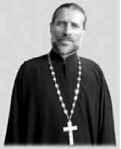И если в сегодняшней России современный иудаизм признается равной Православию традиционной религией, то у православных мирян возникает закономерная цепочка рассуждений: «Значит, их бог это и наш Бог? Значит, нет разницы. Значит, у нас с ними один Бог? Но, если один Бог, значит, Православие и иудаизм – это одно и то же. И если за представителями иудаизма деньги и власть, значит это такая религия, которая позволяет их обеспечить. А если деньги и власть объявлены и приняты в качестве высших ценностей в обществе, то лучше быть в иудаизме, чем в Православии, если это выгоднее. Ведь Бог один и там и там?»
Вы думаете, эти мысли не приходят, когда православных людей к ним очень тонко и настоятельно подводят?
Вот вопрос одного из наших современников, некоего Павла, к настоятелю храма Василия Блаженного в Волгодонске иерею Валерию Кореневу: «Скажите, как может быть у нас и евреев-иудаистов один небесный Отец?»
И вот ответ священника: «Не может у нас и у иудеев быть один небесный Отец, ибо Спаситель сказал иудеям: «… если бы Бог был Отец ваш, то вы любили бы Меня, потому что Я от Бога исшел и пришел; ибо Я не Сам от Себя пришел, но Он послал Меня; почему вы не понимаете речи Моей? Потому что не можете слышать слова Моего; ваш отец диавол, и вы хотите исполнять похоти отца вашего; он был человекоубийца от начала и не устоял в истине, ибо нет в нем истины; когда говорит он ложь, говорит свое, ибо он лжец и отец лжи» (Ин. 8, 42-44).
По нынешним временам отец Валерий продемонстрировал мужественную позицию истинного борца за веру православную, можно сказать, исключение из правила. А ведь как она важна для понимания того, что происходит. Ведь такой вопрос, который задал Павел, змей-искуситель, подосланный Даном и его хозяином, тихо проползая, приносит в голову многим людям. И многие не обращаются к священнику. По телевизору и в других СМИ они видят и читают, что все вместе, что все любят друг друга, что союз налицо, и потому эти люди сами для себя на этот вопрос отвечают утвердительно. Да и как тут не смутишься. Глобальный еврейский on-line центр Jewish.ru 28.01.2009 публикует поздравление главного раввина России Берла Лазара, адресованное митрополиту Смоленскому и Калининградскому Кириллу в связи с избранием на пост Патриарха Русской Православной Церкви. Вот его текст:
«Дорогой друг, брат!
От всего сердца поздравляю Вас с избранием на пост Патриарха Русской Православной Церкви. Мы внимательно следили за дискуссиями, предшествовавшими этому избранию, за работой Собора, за самими выборами. С искренней радостью мы восприняли то, что высший форум РПЦ прошел в атмосфере такого конструктивного диалога; с особой радостью – то, что его участники пришли к консенсусу.
Надеюсь, что результаты Собора будут способствовать дальнейшему сплочению Русской Православной Церкви – ведь это соответствует интересам не только православных христиан, но и всех верующих людей в России и за ее пределами. Слава Богу, у нас в стране и в мире ширится понимание того, насколько важна вера для обеспечения более здоровой, более моральной и в конечном счете более счастливой жизни людей. Но динамика мирового развития ставит перед верующими все новые вызовы, диктует необходимость постоянной работы по укреплению религиозной духовности, распространению ее на все более широкие слои общества. В России, где большинство населения исторически привержено православию, роль РПЦ в духовном оздоровлении общества невозможно переоценить. И я очень рад, что единство, столь необходимое для реализации этой роли в полной мере, сейчас достигнуто и РПЦ сплачивается вокруг Вас.
Понятно, что уход такой мощной консолидирующей фигуры, какой был покойный Патриарх Алексий – большая потеря. Но я верю, что Вы сумеете в полной мере восполнить эту утрату. Ведь все мы знаем, как много было Вами сделано для возрождения духовности в России, для активизации процесса объединения православных церквей в нашей стране и за рубежом.
Я всегда высоко ценил Вашу работу в Межрелигиозном совете – это всегда была работа на достижение консенсуса, на взаимопонимание, на взаимопомощь. Уверен, что добрые отношения и крепкие связи между нашими религиозными общинами во время Вашего патриаршего служения будут развиваться на благо верующих, на благо России.
Главный раввин России Берл Лазар»
Невольно задаешь вопрос – «на благо верующих в кого?» Из этого письма следует, что у нас и у них действительно один и тот же Бог. И работу по укреплению какой «религиозной духовности и распространению ее на все более широкие слои общества» собираются проводить?
И еще, если они стремятся представить нам, что мы с ними единая община верующих, то почему они не признают нашего Бога, более того, выступают против даже упоминания о Нем. Глобальный еврейский on-line центр Jewish.ru 20.08.2007 опубликовал статью «Позиция ФЕОР по вопросу о введении в российских школах ОПК остается неизменной». В этой публикации, в частности, говорится, что «в Федерации еврейских общин России (ФЕОР) выражают уверенность, что предмет «Основы православной культуры» («ОПК») в российских школах вводиться не будет».
Значит, они не приемлют даже нашу православную культуру, не говоря уже о нашей вере. Значит наш Бог и их Б-г – разные. Они публично отвергаются нашего, но, вместе с тем, хотят приблизить нас к своему. И если мы пойдем по пути, на который они нас направляют, то это будет тогда путь отвержения нашего Бога, потому что они стоят на этом пути и влекут нас туда.
Значит, нужно дистанцироваться от этого пути покорения чужой вере и всеми силами держаться за путь веры Христовой, за путь, дающий истинную свободу. В послании к Галатам апостол Павел пишет: «Посему ты уже не раб, но сын; а если сын, то и наследник Божий через Иисуса Христа» (Гал. 4, 7).
Что нам важнее: сберечь веру нашу Православную в условиях беспрецедентной духовной агрессии или сберечь теплые напоказ, толерантные отношения с современным иудаизмом, заряженным духом колена Данова? И продолжать молчать? А молчание священников здесь большая беда. Это как раз тот самый случай, когда «молчанием предается Бог».
Как сказано у апостола Павла: «Какое общение праведности с беззаконием? Что общего у света с тьмою? Какое согласие между Христом и Велиаром? Или какое соучастие верного с неверным? Какая совместность храма Божия с идолами?» (2 Кор. 6, 15-16).
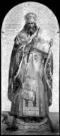Святитель Иоанн Златоуст в Беседах на 2-е послание к Коринфянам, объясняя эти слова, пишет: «Смотри, какие простые, а между тем достаточные слова употребляет (апостол) для отвращения (коринфян от ярма неверных). Не сказал он: «какое общение у праведности с противозаконием (napavo|jia)», но гораздо сильнее – «с беззаконием» (avo|jia). Равным образом не сказал: «какое общение у находящихся во свете с пребывающими во тьме», но противополагает самые вещи, противные между собой и одна другую отвергающие, т. е. свет и тьму. Не сказал также: «какое согласие между последователями Христа и чадами диавола», но – что гораздо большую обнаруживает противоположность – между Христом и Велиаром, – еврейским именем назвав этого отступника… «Какая совместность храма Божия с идолами? Ибо вы храм Бога живаго». Смысл этих слов такой. «Царь ваш не имеет ничего общего с диаволом («Какое согласие между Христом и Велиаром?»); ничего общего не имеют между собою и дела их («Что общего у света с тьмою?»). Потому и у вас не должно быть никакого общения с ним (диаволом?)»… Далее, сказав: «Какая совместность храма Божия с идолами?» и присовокупив: «Ибо вы храм Бога живого», (апостол) почел нужным привести и свидетельство на это, желая показать, что эти слова не простая лесть… Какое же он приводит свидетельство? «Вселюся в них и похожду», – т. е. «вселюсь в храмах этих и в них буду ходить», показывая тем великое к ним благоволение, – «и буду вашим Богом, а вы будете Моим народом» (Лев. 26, 12)… «Для чего же, – говорит, – ты, нося в себе Бога, бежишь к идолам, – Бога, Который не имеет с ними ничего общего? Такой поступок достоин ли какого-нибудь извинения? Помысли, кто в тебе живет и обитает с тобою». «И потому выйдите из среды их и отделитесь, говорит Господь, и не прикасайтесь к нечистому; и Я прииму вас» (ст. 17). Не сказал: «не творите нечистоты»; но, требуя от них большой точности, сказал: «даже не прикасайтесь и не приближайтесь к ней… Смотри, вот и награда за то, – отделение от нечестивых и соединение с Богом. Но послушай еще далее: «И буду вам Отцем, и вы будете Моими сынами и дщерями, говорит Господь».
На сайте иерея Валерия Коренева написан замечательный девиз: «Храм Божий – Небесный островок на грешной земле». Так хочется, чтобы таких островков было в России как можно больше. Тогда нам никакой злоумышленник Дан не будет страшен.
В Откровении Иоанна Богослова говорится: «Знаю твои дела, и скорбь, и нищету (впрочем ты богат), и злословие от тех, которые говорят о себе, что они Иудеи, а они не таковы, но сборище сатанинское» (Откр. 2, 9).
В переводе с греческого текста (The Greek New Testament 4th revision edition Stuttgart, 1994. 4-е дополненное издание Объединенных Библейских обществ, Штуттгарт, 1994) это звучит так: «Знаю твои скорбь и нищету (но ты богат) и богохульство от называющих себя иудеями, но они не есть таковы, а синагога сатаны».
Мне могут возразить, что после революции наша Церковь пошла на определенный компромисс с безбожной властью, чтобы сохранить себя. Так то оно так, но ведь тогда ее иерархам не требовалось проявлять дружеские отношения к раввинам перед телекамерами, смущая мирян и вызывая у них сомнения. Одному нашему священнику перед телекамерами задают вопрос относительно «Шулхан аруха», а он отвечает, что все религии призывают к любви. Но если везде любовь, то зачем тогда разделение на религии, зачем такие сложности, тогда можно и нужно одну универсальную религию принять, как и говорил раввин Рабинович. И если «Шулхан арух» – это любовь, то даешь этот самый «Шулхан арух». Какая разница.
Но если такие высказывания в духе Рабиновича звучат, то тогда напрашивается вывод, что духовный лидер у нас именно он. Да и вообще так хорошо жить теплохладным: и покой, и уют, и привилегии. Но в этой теплохладной жизни под руководством Рабиновича не оказывается места Христу и Его подвигу борьбы за веру и истину и Его страданиям на этом пути. Не в осуждение это говорю, а в рассуждение.
Может быть, для этого разрешили они повсеместную деятельность Церкви в России в период сильнейшего влияния представителей колена Данова на властные структуры России, чтобы потом публично показать, что их вера и наша – это одно и то же, что у нас и них – один и тот же Бог.
Время наше так драматично, а брань духовная как никогда приобрела ожесточенные формы, которые, судя по планам и действиям колена Данова, неизбежно выльются в большую вооруженную войну. И уже только ради ее предотвращения Церковь должна обозначить свою позицию. А то, ведь, вместо «пастыря доброго, который душу свою полагает за овцы», можно уподобиться «наемнику,… которому овцы не свои», который «видит приходящего волка, и оставляет овец, и бежит; и волк расхищает овец, и разгоняет их» (Ин. 10, 11-12).
И когда придет время отдать жизнь за Господа, Отечество и други своя в войне, которую начнет Дан, кто-то может сказать: «Все равно – везде любовь. Пойду лучше в другую веру, чтобы не рисковать своей жизнью. Там выгоднее».
В наше время изощренных искушений и грядущих тяжелых испытаний, чтобы спастись, нам нужно как можно больше «пастырей добрых, которые душу свою полагают за овцы» и которые вслед за Господом смогут сказать: «Из тех, которых Ты Мне дал, Я не погубил никого» (Ин. 17, 12).
Архиепископ Аверкий (Таушев) пишет: «А теперь, в переживаемое нами страшное время циничного и откровенного лютого безбожия, мы, как христиане, верные Христу-Спасителю и Его Истинной Церкви, не можем не осуждать со всею решительностью безбожников и кощунников, лютых богоборцев, стремящихся искоренить во всем мире веру Христову и разрушить Святую Церковь, осквернивших Отечество наше и надругавшихся над нашими Святынями.
Не можем мы не осуждать и всех тех, кто сотрудничает с ними, кто поддерживает их и содействует укреплению их власти, помогая им, тем самым, в их адских замыслах.
Мы осуждаем слуг грядущего антихриста и самого антихриста…
Неужели все это есть греховное осуждение, запрещаемое Евангелием, как пытаются убедить нас в этом современные умники – неохристиане, исполненные какой-то необыкновенной «сверхлюбви» и всеохватывающего «всепрощения»?
Пусть не лгут они на Господа и на Его Святое Евангелие!» (Архиепископ Аверкий (Таушев). Современность в свете Слова Божия. Слова и речи. Том 2. Отпущение грехов и мнимая христианская любовь и всепрощение).
Архиепископ Аверкий пишет, что запрещается всякая злоба и злорадство в отношении грешащего ближнего, на личной почве, а отнюдь не справедливая, принципиальная, безстрастная оценка его поступков, каковая не только не противна Евангелию, а наоборот – даже необходима, дабы мы не стали, в конце концов, относиться безразлично к добру и злу, и зло не восторжествовало бы, вследствие этого, в мире.
«Великое преступление поэтому, – отмечает Архиепископ Аверкий, – совершают те современные пастыри, которых лучше было бы назвать лжепастырями, кои, под благовидным предлогом мнимой христианской «любви» и «всепрощения», сознательно или безсознательно, учат своих пасомых толстовскому «непротивлению злу».
Какое это страшное, безпросветное лукавство!
Какое это подлинное фарисейское лицемерие!
«Совсем никого и ни за что не осуждать» – такого настроения в современном христианском обществе только и хотят добиться слуги грядущего антихриста, для того, чтобы им легко и просторно было действовать, подготовляя в мiре обстановку, благоприятную для скорейшего воцарения их «Властелина».
«Неужели в наше время каждому честному и сознательному христианину еще может быть не ясно, что безусловное «всепрощение» нужно лишь врагу Христову – антихристу, дабы люди окончательно потеряли чувство различения добра и зла, помирились бы со злом, охотно приняли его, а затем – и самого антихриста, не помышляя о борьбе с ним? Это – не больше, как лицемерно-фарисейское лукавство врага, жаждущего нашей погибели!».
Апостол Иоанн Богослов не призывал любить всех духов, но призывал их различать: «Возлюбленные! не всякому духу верьте, но испытывайте духов, от Бога ли они, потому что много лжепророков появилось в мире. Духа Божия (и духа заблуждения) узнавайте так: всякий дух, который исповедует Иисуса Христа, пришедшего во плоти, есть от Бога; а всякий дух, который не исповедует Иисуса Христа, пришедшего во плоти, не есть от Бога, но это дух антихриста, о котором вы слышали, что он придет и теперь есть уже в мире» (1 Ин. 4, 2-3).
Когда нас призывают любить любой дух и не сопротивляться никакому духу, потому что любой дух учит любви, это равносильно принятию антихриста и подчинению его духу. Извратив вероучение ветхозаветных евреев, хазарская антисистема предпринимает энергичные попытки изменить, приспособить к своим интересам не только христианство, но и Ислам, заменив их хазарским неоиудаизмом.
Ключевыми словами, символизирующими эти изменения, являются «подчинение, повиновение, покорность», то есть то, что внушал упомянутый выше проповедник модернизированного ислама Юсуф Эстес. Но ведь эти слова и есть основа универсальной религии антихриста, превращающей все человечество в духовных рабов Глобального каганата.
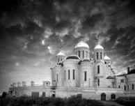Именно этому мы и должны сейчас противостать, великой силою нашей Православной веры, пламенем любви ко Господу и безграничной надеждой на Его милосердие и спасение в служении Ему и Отечеству.
Архиепископ Аверкий призывает нас: «Решительно борясь со всякими самомалейшими проявлениями зла и греха в своей собственной душе, не будем бояться вскрывать и изобличать зло повсюду, где оно в современной жизни себя обнаруживает – не по гордости и по самолюбию, а единственно – по любви к истине. Наша главная задача в это лукавое время лживого без-стыдства – сохранить всецелую верность и преданность подлинной Евангельской Истине и Начальнику нашего спасения – воскресшему тридневно из гроба Xристу-Жизнодавцу, Победителю ада и смерти».
Ему мы должны посвятить свою жизнь, а если потребуется, и отдать ее, сопротивляясь злу силой, в том числе силой разоблачения зла.
«Дети! Вы от Бога, и победили их; ибо Тот, Кто в вас, больше того, кто в мире» (1 Ин. 4, 4).
Глобальная сеть невидимой Хазарии – это существующая параллельно видимому межгосударственному устройству теневое образование, которое стремительно себя материализует, обретает реальные геополитические очертания, вбирая осколки разваленных хазарами государств. В процесс материализации вовлечено огромное количество ячеек глобальной сети, которые специализируются в выполнении определенных задач: политических, экономических, военных и религиозных.
До прихода антихриста деятельность сети координируют три центра – Трехсторонняя комиссия, Бильдербергский клуб и Совет по международным отношениям. Их конечная цель – создание глобальной империи, строительство Третьего храма и приведение к власти антихриста как единоличного правителя. После прихода антихриста эти структуры трансформируются из теневого в его реальное правительство.
Эта глобальная секта, которая борется против христианства, государственности и семьи, то есть против всего того, что построено на Иерархии, имеющей выход и устремленность к одному центру власти – к Богу.
Сеть нацелена на разрушение Иерархии путем ее фрагментации на множество мелких ячеек, мелких иерархий через идеологию борьбы за этносуверенитеты и через отказ от сильной централизованной государственности, через внедрение многобожия и язычества в виде идолов на потребу низменных страстей. Задача сети превратить Иерархию, имеющую один центр по вертикали вверх, в горизонтальное образование, имеющее множество мелких иерархий (ячеек), каждая со своим центром управления. Это образование со множеством мелких иерархий называют плюрархией. Сеть – это плюрархия, которую отличает множество центров управления, то есть полицентризм управления.
Сеть – это продукт распада Иерархии, утратившей связь с Богом.
В слабом государстве, утратившем связь с Богом, сеть разлагает иерархические структуры во всех пространствах государственной жизнедеятельности. На физическом уровне, в сфере экономики – путем ее приватизации и вытеснения из нее государства. На ментальном уровне, в политической сфере – путем разжигания борьбы за этно-суверенитеты в целях расчленения государства и путем всяческого ослабления армии в целях лишения ее возможности защищать государство. На духовном уровне - путем внедрения сект и язычества, разложением изнутри церковной традиции: всяческими послаблениями в сфере православного Богослужения, насаждением, покрытием и терпимостью к всевозможным порокам среди духовенства…
Сеть – плюрархия – это этап разрушения Иерархии, существующей в форме традиционной государственности, монотеизма и моногамии. Это этап создания мелких протекторатов – псевдогосударств. Это этап – перехода к политеизму и поклонению разным идолам. И это этап перехода к полигамии с допустимостью существования нескольких неофициальных связей с разными партнерами. Такое временное сожительство не предполагает рождение детей.
Но сеть очень непрочное образование, потому что при всей греховности и распаде на этапе сети у людей в глубине есть еще память о Боге, память о Божественной Иерархии. И сеть рассматривает это как опасность возврата людей к Иерархии. Поэтому сеть делает все, чтобы эту память стереть.
Поэтому, разрушив иерархию, она начинает строить новое образование, которое имеет откровенно антииерархический характер, предполагающий не только стирание памяти об Иерархии, но и борьбу против нее. Поэтому сеть строит обратное подобие Иерархии – антирархию – жестко централизованное образование, только с центром управления не сверху, а снизу, из преисподней. Если на вершине Иерархии находится Бог и она устремлена именно к Нему, то источником власти в антирархии является антихрист.
Хазарский каганат был классической моделью сети. Если иерархические государства формировались, даже в условиях язычества, но на основе устремленности к «неведомому Богу» и затем обращения к Нему, то каганат изначально не имел такой устремленности. Более того, он был сразу сформирован коленом Дановым, осуществлявшем руководство хазарами, и создан он был на основе поклонения Ваалу и золотому тельцу. В каганат был заложен духовный заряд антирархии и антихриста. Система управления в Хазарии была сетевой – плюрархия в виде существования двух центров управления /каган и царь (бек)/.
После падения видимой Хазарии по этой сетевой модели сформировалась Хазария невидимая, которая сохранила тот же духовный заряд антирархии и антихриста. Этот заряд был ее главным двигателем и конечной целью, которая кажется сейчас колену Данову такой близкой.
Захватив контроль над правительствами традиционных государств, они воспроизводят там хазарскую модель двух или нескольких центров управления, превращая их в сетевые псевдогосударства – готовые блоки для Глобального каганата.
Руководство глобальной сетью невидимой Хазарии объединено межличностными, в том числе родственными связями. На этой семейной основе действуют финансовые кланы, например, Ротшильдов, Рокфеллеров, Морганов, Варбургов и т.д. Они образуют транснациональные банки (ТНБ), действующие наряду с ТНК, разновидностью которых служат частные военные компании.
Эти структуры своими связями переплетаются с политической элитой сетевых псевдогосударств, которую они сами финансируют и приводят к власти, устанавливая над ней контроль и превращая ее в политическую элиту невидимой Хазарии.
Борьба с Западом – единственное спасительное средство… для излечения наших русских культурных недугов.
Н.Я. Данилевский (1822-1885)
Первый неотвратимый выбор, который должна сделать наша власть – это отойти от Запада и начать в экстренном порядке строить военные стратегические коалиции не только на многосторонней, но и на двусторонней основе. Нужно наверстать упущенное время, те многие годы, которые мы потратили на то, чтобы в ущерб себе, ценою жизни миллионов наших людей, услужить Западу, уже тогда начавшему подготовку к нашему вооруженному уничтожению.
Переговоры и всякие оправдания перед Западом на пороге войны безполезны, глупы и опасны. Мы никогда не вымолим у него пощады. Это все равно, что вести переговоры с Гитлером 22 июня 1941 года. Они не услышат нас, и мы будем только терять драгоценное время.
Мы позволили Западу ввести международные силы, они себя еще кличут наблюдателями, на территорию Грузии. Но это вовсе не так безобидно, как кажется, а очень, даже опасно для России. Ведь эти силы есть не что иное, как прикрытие для вооруженной экспансии НАТО.
Они даже сами это признают. Так в марте 1998 года американский сенатор Митч Макконнелл, бывший председателем сенатского подкомитета по иностранным операциям, заявил, что он склонен положительно рассматривать предложение администрации Клинтона о выделении до 1500 американских военнослужащих для укомплектования миротворческих или наблюдательных сил ОБСЕ, если будет достигнуто политическое соглашение о статусе Нагорного Карабаха (31 марта 1998., слушания подкомитета по иностранным операциям при комитете ассигнований Сената США под председательством сенатора М. Макконнелла по каспийским энергетическим программам, Вашингтон).
По мнению американских экспертов, это высказывание является очень важным и знаковым, поскольку это первое публичное заявление официальных представителей США относительно готовности США рассматривать вопрос о направлении американских войск в регион Кавказа.
То же самое можно сказать о силах реагирования Евросоюза, одной из главных целей которых является обеспечение взаимодействия с войсками НАТО.
Сейчас мы сами же позволили Западу осуществить эту свою давнюю мечту об интернационализации конфликта и введении туда вооруженных сил.
Если первый выбор касался внешнеполитической ситуации, отношений с внешним Западом (то есть внешней Хазарией), то второй выбор, который должна сделать наша власть, связан с отношением к внутреннему Западу (то есть к внутренней Хазарии).
Не секрет, что в России есть мощное лобби западников-атлантистов, которые нанесли большой ущерб стране. Не секрет, что многие из них занимают высокие и влиятельные посты во власти. Сохранять их на этих постах означает подвергать угрозе нашу безопасность в ситуации возможной войны. Это будет стоить нам поражения и колоссальных жертв. Поэтому от влияния Запада во власти власть должна избавиться.
Юрий Болдырев в статье «Война, суверенитет и десятилетие дефолта» (2008-08-18) пишет: «Подвижки в сфере дипломатии и военного строительства парадоксальным образом остаются в вопиющем противоречии со всей экономической политикой государства.
Как такое возможно? Но можно задаться и другим вопросом: а возможно ли иное, если на всех ключевых постах в экономике остаются все те же, кто с неподдельным энтузиазмом сдавал нашу страну «стратегическому партнеру» до наступления эры «вставания с колен»?…
Как человек, являвшийся с конца 1993 по конец 1995 г г. членом Совета Федерации, а также с 1995 по начало 2001 г г. работавший в Счетной палате России, могу засвидетельствовать: это был, прежде всего, период невиданного в истории разграбления государства, причем разграбления, организованного самой же высшей государственной властью».
Кадры решают все в интересах государства и народа тогда, когда они не находятся на службе у противника, если их семьи не живут на его территории, если их немалые личные финансовые счета не находятся в банках противника. Вы боитесь потерять ваши виллы, яхты и деньги? Езжайте на Запад, служите ему на месте, не отходя от кассы. Мы не хотим видеть агентов влияния и диверсантов в руководстве нашей страны в период, когда решаются вопросы жизни и смерти народа и государства.
Если один из наших министров, как говорят, проводил рано утром совещания, чтобы потом на выходные поехать к семье, которая живет за границей, то чего ж мучиться так. Езжай и живи с ней на постоянной основе, а то не ровен час, кто уведет. Деньги у тебя, судя по всему, есть, если ты каждую неделю летаешь за границу, как мы ездим на дачу в Подмосковье. России вы не нужны, вперед и с песней, прожигайте там свои посильным трудом наворованные.
Когда запахнет жареным, вся эта шушера и так мотнет за кордон как крысы с тонущего корабля. Так пусть они уедут как можно раньше, чтобы предотвратить как можно больше бед и потерь.
Следующая проблема – это отношения с властью экономической. Она самым тесным образом просто переплетена с Западом. Здесь тоже нужно сделать выбор в пользу экономического суверенитета России, в пользу освобождения от колониальной зависимости от него.
Юрий Болдырев в упомянутой статье пишет: «Важнейшей составляющей сути тогдашнего процесса было планомерное и необратимое (по замыслу и нацеленности действий) подчинение российской национальной экономики интересам Запада, прежде всего, США.
Для наших «игроков» главным был процесс разграбления, наживы, а что страны не будет или она станет абсолютно зависимой, для них это – эффект косвенный, плата за то, что Запад «не замечает» подмены рыночной экономики масштабным грабежом. Для Запада же, для США главный процесс, безусловно – сдача «туземцами» своей страны, прежде всего, ее природных ресурсов, причем за безценок, буквально за бусы и огненную воду…».
Восстанавливать экономический суверенитет будет очень трудно, враги России сделали все, чтобы эту колониальную зависимость создать, даже по критически, стратегически важным отраслям и областям. Но в этих условиях у нас нет другого выхода. Если мы хотим сохранить государство, нам нужно пойти на этот шаг. Да, будет трудно, да, будет драматично, но в противном случае неизбежное уничтожение и смерть.
Власть должна сделать этот выбор прежде всего для себя (с кем она) и объяснить все народу. Если она будет искренней и, несмотря на все последующие трудности, будет стараться проявлять уважение к нему и заботу о нем, он все поймет, стерпит и вынесет. У нас сейчас власть сама по себе, народ сам по себе. Это ненормально. Власть должна общаться с народом, обращаться к нему, а не возноситься над ним в режиме свободного от ответственности полета.
Предпринятый сейчас властью курс на отказ от политики укрепления государства в экономике вреден и чрезвычайно опасен в нынешней ситуации. На сайте РСПП опубликованы тезисы Александра Шохина на конференции «Ренессанс Капитала» «Россия: во власти преобразований». На первом месте там записано: «Российскому бизнесу не нужна «суверенная экономика».
Ну так ему и государство не нужно, не говоря уже о народе. Власти тогда нужно сделать выбор, на кого она ориентируется сейчас в условиях угрозы войны: на этот самый бизнес, которому нужна не суверенная (надо полагать колониальная) экономика или на народ.
Политическая власть не должна позволять, чтобы руководящей и направляющей в государстве была власть экономическая, власть частного капитала, ори ентированного на Запад, то есть на противника.
Политическая власть всегда, а в нынешних условиях особенно, должна быть над властью экономической, должна защищать народ от сильных и наглых.
Эксперты сетуют: «Мы под влиянием и нажимом капитала снизили налог на нефтяников. Они-де, нищие, страдают». А вместе с тем приводятся данные, что чистая прибыль, например, Лукойла в I квартале 2008 года составила 3,163 млрд. долларов. По итогам года ожидается 15 миллиардов, что примерно равно бюджету Белоруссии и только в три раза меньше бюджета 46-миллионной Украины.
Сейчас, не в угоду власти экономической, в интересах обеспечения нашей обороноспособности и безопасности нам потребуется повышенное налогообложение нефтяной отрасли с целью перераспределения нефтяных денег на остальную экономику, в том числе и на военные нужды.
Мы должны быть готовы к тому, что все российские вклады за границей будут в любой момент обострения отношений присвоены Западом. Эти конфискационные меры коснутся не только вкладов государственных, но и частных. Именно с этой конфискации начиналась война в Ираке. И к этому нужно быть готовым.
После событий в Осетии Daily Telegraph написала: «Чтобы предотвратить дальнейший реваншизм, русским нельзя оставить никаких сомнений в том, что за этим последует замораживание их значительных активов на Западе. Дипломатическая изоляция и наложение финансовых арестов – вот лучшие способы обуздать зловещие попытки восстановить их старые сферы влияния».
Кроме того, существует еще одна большая проблема, требующая от власти сделать выбор.
Судя по некоторым высказываниям, у нас нет единства подходов в руководстве страной. Насколько можно судить, существуют две группировки государственников и рыночников. Так, вице-президент РСПП Игорь Юргенс в интервью агентству Рейтер так прямо и сказал, что Дмитрий Медведев ведет «тихую войну» со «сторонниками жесткой линии». «Если Медведев не создаст в этой борьбе коалицию, он проиграет, как некоторые прошлые реформаторы в российской истории. Если же ему удастся выстроить подобную коалицию, он победит».
В интервью агентству Рейтер Медведев сказал: «В настоящий момент, на мой взгляд, нет никаких оснований говорить об укреплении, дополнительном укреплении присутствия государства в экономике. Государство в этом не заинтересовано. Напротив, мы продолжаем политику приватизации ряда активов, которая началась ещё больше 10 лет назад».
На XII Петербургском экономическом форуме ближайший соратник Медведева, первый вице-премьер правительства Игорь Шувалов провозгласил грядущий уход государства из экономики.
Экономическая власть ликовала.
Но это одно крыло власти. Другое крыло стоит на других позициях. Его мнение выразил на том же Петербургском экономическом форуме Сергей Иванов: «На данном этапе мы не можем и не должны отказываться от главенствующей роли государства в создании национальной инновационной системы… только государство способно обеспечить комплексность и сбалансированность этого процесса… Расходы на исследования и разработки за счет собственных средств предприятий частного сектора являются и в обозримом будущем будут являться мизерными».
Это плохо, когда во власти, в управлении государством нет единства. «Всякое царство, разделившееся само в себе, опустеет, и дом, разделившийся сам в себе, падет» (Мф. 12, 25).
И если власть намерена уйти из экономики, то кто же будет организовывать оборону и защиту государства и народа от агрессора в условиях начавшейся войны? «Лукойл»? Или может быть «Conoco Philips», а может, и того круче, «Карлайл Групп» вместе с «Буз Ален». Список желающих можно продолжить в зависимости от фантазии каждого.
То есть, если государство не будет заниматься мобилизационной экономикой в условиях войны, то ею займется противник, сделав ее полностью демобилизационной. То есть в нынешних условиях уход государства из экономики будет означать полное поражение и уничтожение российской государственности.
Власть обязана сделать два выбора – в пользу контроля над экономикой в целях сохранения экономического суверенитета и обеспечения обороны в условиях войны и в пользу достижения единства руководства страной. Раздрая в этой критически опасной для страны ситуации быть не должно.
События в Осетии показали, что единственная сила в нашей стране, действующая эффективно и в единстве, занимающая абсолютно государственнические позиции и готовая умереть за народ и Отечество – это армия.
Есть такая дисциплина, которая называется военное и государственное управление. Меня всегда удивляло это разделение. Как это так, военное оно и есть в составе государственного. А теперь думаю, может и хорошо, что порознь. Если государственная власть отходит от государственнических функций, то хоть кто-то останется, кто до последнего будет стоять за это самое государство, а значит и за народ, самый государственнический народ в мире.
Ведь какая самая главная цель устроителей нового мирового порядка в ходе этой войны? Уничтожить государственность в мире (ее главным оплотом сейчас они считают Россию), а потом на обломках этой государственности построить это самое царство антихриста. Но ведь государственность можно уничтожить разными способами. Можно военными, а можно и невоенными, поощряя государственную власть отдавать государство негосударственным и ненациональным структурам, которым государство только мешает и заинтересованным в его уничтожении.
Наша экономическая власть – олигархат не рассматривает Россию как свою страну. Для них это временное пристанище, из которого они активно качают средства в свой карман, а точнее в зарубежные банки. Они не будут участвовать в ее защите в трудный момент. Они ее в лучшем случае просто бросят, а в худшем сдадут все, что можно агрессору, получив соответствующее вознаграждение.
Как пишет Сергей Шатиров, первый зампред Комитета Совета Федерации РФ по промышленной политике: «На одного жителя нашей страны приходится 11,7 условной единицы мировых ресурсов! Каждый из нас потенциально в 6 раз богаче американца и в 17,6 раза богаче любого европейца».
Так в чьи карманы идут эти богатства, и кто обрекает народ на нищенское существование? Кто живет за счет страданий, лишений народа и обрекает его на вымирание?
Учитывая это обстоятельство, наша власть должна сделать выбор в пользу, с одной стороны, национализации, а с другой стороны, не побоюсь этого слова, «денацификации» экономической власти в стране.
Учитывая тесные связи нашей экономической власти с Западом в плане бизнеса, ее банковских счетов и места жительства, она абсолютно зависима от Запада, и он ее обязательно будет шантажировать в своих интересах, и она пойдет на все преступления, лишь бы сохранить свое, награбленное.
В связи с событиями в Осетии Daily Telegraph написала: «Одно из заблуждений, которым грешит Запад в отношении России, это неспособность понять, насколько для русских важны пачки рублей. Возможно, их внешняя политика и напоминает некоторые повадки Сталина, но на этом сходство заканчивается. Если бы заморозить все российские активы в пределах своей юрисдикции – от недвижимости на Лазурном берегу до футбольного клуба «Челси» – и ужесточить иммиграционное законодательство в отношении граждан России, как, интересно, они себя почувствуют?»
Юрий Болдырев в своей статье «Война: сплотимся или сначала закончим шоу?» от 8 ноября 2008 поставил такой вопрос: «Когда доходит до дела, до понимания всех скрытых пружин и целей не только этой агрессии, но и всей политики таких «суверенных» государств, как Грузия, нам показывают «серых кардиналов» так называемых «цветных революций» – все сплошь бывшие американские военные и разведчики, работающие в международных «благотворительных» фондах; рассказывают о механизме подготовки в США кадров типа Саакашвилли и Ющенко. Все понятно и логично. И, что немаловажно, правдиво. Но почему при этом упускается из виду, что в точности по тем же рецептам и механизмам и практически такими же «кардиналами» до сих пор управляется целая национальная экономика – экономика России, «встающей с колен», а теперь еще и страны, фактически воюющей?»
К. Победоносцев в свое время указывал на три угрозы для России, скатившейся от национально ориентированной священной православной монархии к ориентированному на Запад «злу парламентского правления».
Во-первых, Победоносцев предупреждал об опасности проникновения Запада в экономику России: “Масса иностранных имуществ в России – великое зло, грозящее бедой и в международных отношениях”.
Во-вторых, эти иностранные имущества стали привлекать парламентариев, сенаторов, членов Госсовета, которые “бесстыдно смешивают личные интересы с государственными, по совместительству руководя акционерными обществами и приобретая себе большой капитал”.
И, наконец, в-третьих, как следствие этого, возникла золотая цепь международного капитала, которая позволила внешним силам Запада внедриться в парламентское руководство и завербовать своих агентов для уничтожения российской имперской государственности. Победоносцев с горечью говорит о необходимости «предотвратить бессовестную игру каких-то внешних сил… Бог знает, чья хитрая рука направляет, чьи деньги снабжают наших злодеев, людей без разума и совести, одержимых диким инстинктом разрушения, выродков лживой цивилизации, которые эпидемически размножаются».
Эти три угрозы, в конце концов, стали, пожалуй, главными причинами революции. Их появление было связано с возникновением предреволюционной ситуации. Хазарский Запад, в результате, добился своих разрушительных целей и реализовал одну из самых чудовищных попыток реванша невидимой Хазарии.
Все это привело к установлению хазарской, антинациональной диктатуры, создавшей столь мощную сетевую организацию, машину уничтожения, а точнее геноцида нашего народа, которой могла противостоять только национальная диктатура.
Война в Осетии, может быть, впервые со всей остротой обнажила необходимость установления в России этой самой национальной диктатуры, о которой пророчески писал И. Ильин в своем труде «Наши задачи»: «Когда после падения большевиков мировая пропаганда бросит во всероссийский хаос лозунг: «Народы бывшей России, расчленяйтесь!» – то откроются две возможности: или внутри России встанет русская национальная диктатура, которая возьмет в свои цепкие руки бразды правления, погасит этот гибельный лозунг и поведет Россию к единству, пресекая все сепаратистские движения в стране; или же такая диктатура не сложится, и в стране начнется хаос передвижений, отмщений, погромов, безработицы, голода, холода и безвластия. Тогда Россия будет охвачена анархией и выдаст себя с головой своим национальным, военным, политическим и вероисповедным врагам».
К сожалению, когда был брошен лозунг насчет расчленения, власть захватила антирусская, антинациональная, хазарская диктатура со всеми вытекающими отсюда последствиями. И пошел в точности тот процесс, о котором предупреждал И. Ильин: «Медленно, десятилетиями будут слагаться отпавшие или отчлененные государства. Каждое поведет с соседним длительную борьбу за территорию и население, что будет равносильно войнам в пределах России… Новые государства окажутся через несколько лет сателлитами соседних держав, иностранными колониями или протекторатами… о федерации никто и не вспомнит, а взаимное ожесточение заставит их предпочесть иноземное рабство всерусскому объединению».
Это именно та ситуация, которую мы имеем на данный момент.
Разделенные народы в расчлененной империи обречены на бесконечные войны, кровь, хаос и рабство. Почему народы нашей когда-то единой и охранявшей их от бед государственности должны признавать ее распад как легитимный акт. Ведь с самого начала это была абсолютно преступная операция, проведенная Хазарией.
06.12.2007 на сайте КМ.ру со ссылкой на интернет-портал Cursorinfo.co.il. были опубликованы фрагменты из речи премьер-министра Израиля Эхуда Ольмерта по случаю 40-летию начала борьбы за эмиграцию евреев из СССР в Израиль. Как следует из выступления Ольмерта, именно борьба хазар против СССР и стала «главным элементом развала советского режима».
«Деятельность борцов за выезд в Израиль в Советском Союзе и их героическое противостояние попыткам властей заставить их замолчать вызвали широкий резонанс в еврейских общинах по всему миру», – провозгласил Ольмерт. «Многочисленные демонстрации, прошедшие в разных странах, а также протесты, заявленные многими правительствами на Западе, оказали давление на советский режим и принудили его облегчить процесс получения разрешений на выезд», – продолжал свою мысль израильский премьер. «Это облегчение доказало активистам-правозащитникам и другим противникам режима в Советском Союзе, что даже если невозможно победить систему на этом этапе, можно ее расшатать и приблизить ее конец. Таким образом, борьба за выезд в Израиль стала главным элементом развала советского режима», – подвел он итог своему выступлению.
Из этого следует, что цель хазар заключалась в том, чтобы подорвать и приблизить конец и развалить советский режим, нашу государственность. И об этом они заявляют с трибуны. Наглости нет предела. И после этого они кричат, что их незаслуженно как правозащитников сажали.
Так ведь вы же сами теперь признали, что занимались антигосударственной деятельностью. А в любом государстве это уголовно наказуемое преступление, за которое полагается, извините, тюрьма. Если бы сейчас в Израиле кто-нибудь стал «расшатывать и приближать конец» вашей хазарской системы, вы бы его что, по головке погладили и орденом наградили? А у нас во время хазарского засилья во власти, и по головке гладили и орденами награждали. Так что, несмотря на ваши преступления, мы к вам отнеслись очень даже милосердно. Ведь все эти ваши хазарские злодеяния носили не только антигосударственный, но и антинародный, антирусский характер. Сколько страданий и крови принес нашим народам развал вами страны. Жертвы за эти постсоветские годы исчисляются миллионами. Кто-то хоть однажды слышал, чтобы за антирусскую, по сути, экстремистскую деятельность кого-то из хазар посадили в тюрьму? Никого. А за сопротивление хазарскому экстремизму сажают и надолго. Так что великая трагедия развала хазарами советской империи прошла безнаказанно, и они этим сейчас цинично гордятся, строя очередные разрушительные для нас планы на будущее, и Ольмерт об этом официально заявил в упомянутой выше речи: «Операция по открытию запертых ворот СССР доказала, что ничто не может устоять перед мощью нашего единства. Все, что нам нужно сделать сейчас, – это направить громадную силу, заложенную в этом народе, в будущее – для достижения важных и не менее достойных, чем свободная репатриация в Израиль, целей и бороться за них так же непримиримо».
Но, поскольку у хазар всегда были две главные цели – уничтожение Святой Руси и приведение к власти антихриста, то ничего хорошего от этой их готовности к непримиримой борьбе нам ждать не приходится. Эта борьба нашла свое выражение после развала СССР в агрессии против Югославии, Ирака, в организованных хазарами антироссийских революциях в Грузии и на Украине, в дестабилизации обстановки на Северном Кавказе, в намеренном ослаблении нашей экономики, в подготовке и в активном участии в войне в Осетии. Хазары ведут энергичную подготовку к уничтожению России.
Активизировались в связи с этим и вассалы Хазарии – США и ЕС, – чьи представители публично и официально подтверждали свою причастность к целенаправленному и намеренному развалу СССР. И та же самая Тэтчер и тот же самый Тэлбот. Они говорили, по сути, что «да, этот распад спланирован и организован нами». Они не скрывали того, что для реализации этих планов они привели к власти банду своих ставленников, иначе говоря, предателей доверившегося им народа и изменников Родины, которые подписали Беловежские соглашения. Вопреки воле народа, выраженной на референдуме по вопросу сохранения единого государства. И народ был брошен на хазарский жертвенник, с которого потекли реки крови как следствие спровоцированной распадом братоубийственной войны.
Такие же реки лились после распада Российской империи, которую хазары развалили, используя свой главный девиз: «разделяй и властвуй». Тогда разделение произошло на основе инспирированных ими столкновений по политическому и классовому принципу. Сейчас же основой разъединения стал принцип национальный. Но и в первом и во втором случае (почерк тот же) неизбежным следствием расчленения стали гражданские войны, в период революции красные боролись против белых, затем, в наше время, объявившие себя угнетенными, боролись и продолжают бороться против тех, кого им дали приказ назвать угнетателями.
В результате мы видим бесконечные страдания народов, живших когда-то в единой стране, единство которой спасало их от братоубийственной войны и направляло их на объединение усилий в целях спасительного укрепления имперской государственности.
Для подписания Беловежских соглашений хазары выбрали таких, кто в угаре рабского лакейства плюс пьянства мало понимал, что, собственно говоря, происходит и что он делает.
Крымский политолог Василий Цапа с недоумением сообщает: «Странная вещь, ведь в момент подписания беловежских соглашений о переустройстве СССР, Россия формально должна была получить Крым обратно. Как мне известно, со слов украинских экспертов – участников тех исторических событий, украинская делегация во главе с Леонидом Кравчуком даже не претендовала на столь бесспорный факт. Украинцы были рады и той степени самостийности, которая проистекала из договора. Но Борис Ельцин не любил Крым, он любил бывать летом в Сочи. И подобно недальновидному Хрущеву с барского плеча отдал наш Крым Украине. Тем более, что Кравчук поклялся в вечной дружбе и вечной же военно-морской базе России». И вот этот бред нам предлагают признать в качестве законного акта образования государств-протекторатов Хазарии на обломках бывшей империи? Мне возразят, что там уже напринимали всяких конституций и прочих актов. Но ведь так же, как с Российской империей, изначальная сделка была сфальсифицированной, сфабрикованной, то есть была обманом.
Теперь, используя этот обман, наши народы хотят столкнуть в гражданских войнах на взаимное истребление. Разве нашим народам хочется участвовать в этом ужасе масштабного жертвоприношения хазарскому идолу Молоху? Только самоубийцы и патологические типы ответят положительно. Ответ всех остальных будет отрицательным. Значит большинство не хочет братоубийства. Но оно будет неизбежным, так как хазарское колено Даново, ориентированное на смерть и войну и контролирующее свои протектораты на постсоветском пространстве, станет неуклонно воспроизводить смерть и войну. Натура у них такая.
Выход один. Если мы не хотим этого, нужно вернуться к единой сильной государственности, в рамках которой нивелируются столкновения национальных гордынь и территориальных притязаний. Нужно четко уяснить, что третьего не дано.
Как найти выход? Как говорят, выход чаще всего там, где был вход. А вход был, когда политическое бандформирование хазарских наемников (хазары исторически воюют с помощью наемников) подписало Беловежские соглашения. Что тогда произошло? Были объявлены территориальные суверенитеты по национальному признаку в физическом пространстве бывшей советской империи. Были объявлены политические суверенитеты в ее политическом пространстве. И на этой почве драки за территорию и политическую власть, нас хотят столкнуть в войне. Но мы-то этого не хотим, не хотим быть овцами, которых ведут на заклание хазарские волки в овечьей шкуре. Не хотим, потому что они не смогли прорезать границ в наших душах. Значит духовное пространство нашей империи еще свободно. И в этом духовном пространстве способная нас защитить империя существует. И, объединившись в нем, мы сможем себе найти защиту. Оттуда будет запущен импульс спасительным для нас объединительным имперским процессам в политическом и территориальном пространствах. Политическое бандформирование в Беловежье физически вышло из империи в разделение и загнало народы в клетки хазарских протекторатов. Наша задача сейчас заключается в том, чтобы мы, понимая, что с нами хотят сделать, духовно вышли из протекторатов и вошли в объединение, в империю. То есть произвели созидательное действие, обратное разрушительному действию каганата. Для этого нужно просто внутренне себе сказать: «Я не хочу больше жить в хазарской клетке, куда меня загнали и откуда поведут на убой. Я хочу жить вместе с другими народами-братьями в сильном государстве, способном защитить мою веру и меня от хазарского рабства».
Нужно всем и каждому дать себе эту внутреннюю установку, которая запустит коллективный мощный духовный импульс и сплотит народы в духовном пространстве Империи, создаст прочную платформу для ее политического и территориального объединения.
Протектораты – это не государства. Это – племена, попавшие во власть к хазарам-колонизаторам. Переход к протекторатам – это возврат к родо-племенному устройству, которое существовало на территории Руси во времена Хазарии и благодаря которому она беспощадно грабила и уничтожала наши народы до тех пор, пока они не объединились, и не появилось русское государство, в конце концов уничтожившее Хазарию. Так вот сейчас хазары отбросили нас в тот далекий и кровавый догосударственный период, в жестокое время межплеменных распрей, когда Хазарский каганат, пользуясь этим, чинил произвол и разбой на нашей земле.
Они хотят, чтобы мы оставались разъединенными, а значит слабыми, уязвимыми, подверженными уничтожению и не способными к сопротивлению и защите. А чтобы держать нас в этом разъединенном состоянии, не позволяющем собрать силы для сопротивления хазарскому колену Данову и приходу антихриста, они провоцируют между нами войны. И надо сказать, что пока им это удается, потому что мы не проявляем единой воли к объединению, без которого нет спасения.
Эти искусственные образования, рукотворно созданные протектораты на постсоветском пространстве, есть не что иное, как дома, «построенные на песке». Падение их будет неминуемое с самыми трагическими последствиями для живущих на этих территориях народов. На это невидимая Хазария и делает расчет. Ее мировое правительство в составе колена Данова надеется, что в пламени и крови межплеменных войн, в которые оно нас вовлекает, мы перестанем думать о спасении души, мы измотаемся и устанем так, что выберем рабское служение Глобальному каганату и его главному правителю.
Историк В. Ключевский предупреждал, что «историю нужно знать не потому, что она прошла. А потому что, пройдя, не смогла убрать своих последствий».
Наша история показывает, что, несмотря на кажущееся торжество и вакханалию компрадорской властной элиты, на определенном этапе смутного времени в России Божиим промыслом появляется некая мистическая сила, которая начинает воссоздавать, воспроизводить крепкую имперскую государственность.
Об этом пророчески пишет Ильин: «Россия не погибнет от расчленения, но начнет воспроизведение всего хода своей истории заново. Она, как великий организм, снова примется собирать свои члены, продвигаться по рекам и морям, к горам, к углю, к хлебу, к нефти, к урану».
В чем же источник этой великой силы неуклонного восстановления нашей государственности? Дело в том, что «Россия есть организм природы и духа». Именно об эту незыблемость и твердость природы и духа разбивались все попытки хазарского реванша.
«Этот простор не может жить одними верховьями рек, не владея их выходящими в море низовьями… Хозяйственная мысль суши всегда задыхается без моря… Нациям, которые хотят загородить России выход к морям, надлежит помнить, что здесь дело идет о том, чтобы верно увидеть проблему континентального размера и не становиться поперек дороги мировому развитию. Неумно и недальновидно вызывать грядущую Россию на новую борьбу за двери ее собственного дома, ибо борьба эта начнется неизбежно и будет сурово-беспощадна».
Вот эта фраза Ильина «новая борьба» означает, что подобная борьба уже неоднократно происходила, и мы ее «неизбежно» начинали и были в ней «беспощадны», и, в конце концов, как видно из нашей истории, побеждали.
Эту же мысль в середине 20-х годов прошлого века высказал и А. Деникин, который был уверен, что «государственная связь России с её окраинами предрешена… Связь будет восстановлена: скоро или нескоро, добровольно – путём сговора или насильственно – таможенной, экономической войной или наступлением армий. И это сделает всякая Россия – «красная», «розовая», «белая» или «чёрная»…».
Но для того, чтобы народ понял циклическую повторяемость, неизбежность такой борьбы и неотвратимость победы в ней, нужно, чтобы он знал свою историю, чтобы неотъемлемой важной частью его идентичности была историческая идентичность. Понимая это, наш противник сделал эту идентичность и историческое сознание русского народа своей мишенью. И многочисленные жертвы этой информационной войны, развернувшейся на полях сражений нашей истории, сидят и в своем неразумии, забывая о неизбежности борьбы, говорят: «Зачем нам нужны какие-то территории и тем более, зачем нам за них бороться?» Или еще, предаваясь безнадежности и пессимизму, забывая об исторической неотвратимости победы в борьбе, твердят: «Враг слишком силен, и мы с ним не справимся».
Ответим таким людям словами Ильина: «Народоправство требует от народа государственно-политического кругозора, соответствующего размерам страны и державным задачам этого народа. Малому, ниоткуда не угрожаемому народу достаточно уездного политического горизонта… но американский “изоляционист” есть близорукая деревенщина, а русский калужанин, отвергающий борьбу за морские берега на том основании, что “нам калуцким моря не надо”, не способен к народоправству. Народ, не понимающий своих исторических задач, погубит себя и свою культуру».
История самодержавной России свидетельствует о том, что русские цари направляли свои усилия, прежде всего, на добровольное объединение многочисленных этносов в единую империю без военного вмешательства. Война рассматривалась как крайняя и не имеющая иного выхода мера.
Война в Осетии стала именно такой крайней, вынужденной мерой.
Клаузевиц в своем трактате о войне написал, что главным условием победы в войне является неразрывное единство и взаимная поддержка армии, власти и народа. Трудно у нас с этим, но нам отступать некуда. Позади даже не Россия, и даже не Москва, позади сейчас Святая Русь, потому что нынешняя война религиозная. Она направлена на достижение духовных целей – уничтожения традиционной государственности в мире и главного ее оплота – России и строительства империи антихриста.
И потому мы с Божией помощью должны стоять до конца. И будем помнить слова духовника Царской семьи Святителя Феофана (Быстрова), который 6 февраля 1930 года написал: «Иметь отрицательное чувство к врагам Божиим и к врагам русского народа естественно. И напротив, не иметь этого чувства не естественно. Будем ненавидеть врагов Божиих и врагов русского народа не за их личные обиды нам, а за их враждебное отношение к русским людям. Поэтому нужно и бороться с этими врагами. А если не будем бороться, то за свою теплохладность будем наказаны Господом. Он своё отмщение воздаст тогда не только им, но и нам».
И не будем терять надежды, сохраняя в сердце пророческие слова Святителя Феофана: «Произойдет то, чего никто не ожидает. Россия воскреснет из мертвых и весь мир удивится. Православие в ней возродится и восторжествует!… Великие старцы говорили, что Россия возродится, сам народ восстановит Православную Монархию. Самим Богом будет поставлен сильный Царь на Престоле» (Духовник Царской Семьи, М. Изд. Братство Св. Германа Аляскинского, 1994).
Обратите внимание, что в этом пророчестве указано на ведущую роль народа в возрождении России. Нашу с вами роль. Эта же мысль подтверждается в еще одном высказывании Владыки Феофана, которое приводит Архиепископ Сиракузский Аверкий (Таушев): «Я не говорю от себя. А то, что я слышал от богодухновенных старцев, то и передал… Господь помилует Россию ради малого остатка истинно верующих. В России, говорили старцы, по воле народа будет восстановлена Монархия, Самодержавная власть. Господь предызбрал будущего Царя. Это будет человек пламенной веры, гениального ума и железной воли». (Духовник Царской Семьи, М. Изд. Братство Св. Германа Аляскинского, 1994).
Вот как важна воля народа для защиты и спасения Отечества. Воскресение России произойдет, по словам владыки Феофана, и после того «народ исцелится. Народ обратится к покаянию, к вере».
И еще, перечитайте Тараса Бульбу: «Поднялась вся нация, ибо переполнилось терпение народа, – поднялась отмстить за посмеянье прав своих, за позорное унижение своих нравов, за оскорбление веры предков и святого обычая, за посрамление церквей, за безчинства чужеземных панов, за угнетение, за унию, за позорное владычество жидовства на христианской земле – за всё, что копило и сугубило c давних времён суровую ненависть козаков… 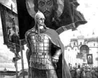 Известно, какова в Русской земле война, поднятая за веру; нет силы сильнее веры… Будет время, узнаете вы, что такое православная Русская вера! Уже и теперь чуют дальние и близкие народы: подымается из Русской земли свой Царь и не будет в мире силы, которая не приклонилась бы ему!… Да разве найдутся на свете такие огни, муки и такая сила, которая бы пересилила Русскую силу!» Вся история России свидетельствует о том, что спасение русского человека на русской земле и его земное благополучие тесно связано с его отношением к Богу и Церкви. «Без Бога – не до порога», «Вне Церкви нет спасения», – эти святые заветы оставили нам наши предки, создавшие и в течение столетий сберегавшие великую Российскую Империю, разрываемую сейчас на части ее внешними и внутренними врагами.
Однако мы помним не только то, как в смутные времена инородцы заправляли в Кремле, но и то, как их изгонял оттуда русский народ под водительством воинских и духовных вождей.
И теперь, чтобы обрести национальную независимость, достойную нашей истории, мы должны понять, что сплотить нас может только Православие и Церковь. Это историческая аксиома, и она не требует доказательств. Ибо экономические, финансовые и военные силы, способные встать на защиту русского народа от дальнейшего его угнетения, сегодня все ещё имеют очевидную и жесткую зависимость от так называемых Западных партнеров, интересы которых давно и всем извесны. По этому наша главная надежда и упование – только в Боге. Но и Он без нашего желания, без нашей воли не станет помогать нам. Он ждет от нас тоже пусть малых, но дел по спасению Отечества. А самым малейшим, но необходимым общим делом должно стать наше осознание своей греховности и покаянное обращение к Богу.
Да, многие из нас несут в своей душе тяжкий груз атеистического воспитания – «Человек, ведь это звучит гордо!» – и отношения к себе как к последней инстанции – каждый сам себе бог! – а к религии как к одному из фольклорных увлечений… Что-то, вернее кто-то, мешает признать нам существование Того, Кто сотворил и нас, и мир вокруг, кто Всемогущ и держит все в Своей деснице. Но завтра, может быть, эта реальность будет признана от страха перед смертью или ставшего неизбежным страдания. Беда придет внезапно и станет ясно, что безвозвратно потеряно время, чтобы подготовиться к ней, предупредить ее последствия, и придет, придет запоздалое раскаяние…
Что же делать?
Первое: изменить сколько возможно вектор своих жизненных установок, интересов и устремлений с сугубо корыстных и личных в сторону патриотизма и любви к своему народу. Жизнь эгоиста-прагматика, как правило, заканчивается ничтожно: трусостью, изменой и обманом.
Сегодня пришло время жертвовать на укрепление духовной ограды нашего общего дома – России.
Не партийное единство, не узкокорпоративные или родственные связи, но общенациональное единство на уровне единства духовного, религиозного оградит нас и в личном, и в общественном плане от национальных потрясений и бед. И здесь краеугольным оказывается наше отношение к Церкви как к богоустановленному сакральному институту, от которого во многом зависит и наше личное, и государственное благосостояние.
Второе: начните жить церковной жизнью, которая для души есть то же, что лекарства и медицина для тела, – и вы уже через месяц-два ощутите ту самую силу, которая в своем совершенстве сдвигает горы и творит чудеса.
Из пассивного режима «Ну и что же делать?!» мы должны перейти в активный режим внутреннего духовного делания, истинно человеческой жизни, отличающей нас от бессловесных животных.
Если начнем духовную жизнь, Господь даст и зрение видеть все, как оно есть на самом деле, даст разум, силы, мужество и сплотит нас в единое воинство. И уже сплоченные единой верой мы получим и национального вождя, и единственное верное руководство к действию, и уже каждый на своем месте поймет тогда, что делать. Тогда в душе не будет уже страха и малодушия и легче будет освободить ее от страстей и привычек.
Благоразумие наше должно жить дыханием непрестанной внутренней молитвы о спасении и сохранении земли русской и народа нашего, много прегрешающего пред Богом, но и в раскаянии сердечном припадающего к Нему. Символ веры, «Отче наш», «Молитва Иисусова» и «Живый в помощи» – пусть станут нашим главным духовным оружием и средством сплочения в общем деле возрождения Православной Российской Империи, как и слова Самого Господа, сказанные Им Его ученикам: «И Я скажу вам: просите, и дано будет вам; ищите, и найдете; стучите, и отворят вам, ибо всякий просящий получает, и ищущий находит, и стучащему отворят. Какой из вас отец, когда сын попросит у него хлеба, подаст ему камень? или, когда попросит рыбы, подаст ему змею вместо рыбы?» (Лк. 11,9-11). «Итак, если вы, будучи злы, умеете даяния благие давать детям вашим, тем более Отец ваш небесный даст блага просящим у Него» (Мф. 7, 11).